| 浅草博徒一代: アウトローが見た日本の闇 | |
| 佐賀純一 | |
| (2015) | |
浅草博徒一代
---アウトローが見た日本の闇---
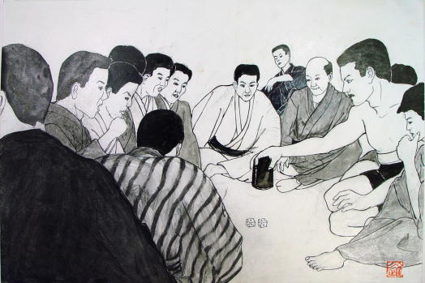
数年前の冬のことだった。私の診療所に、背の高い肩幅のがっしりした老人がたずねてきた。顔が普通の人よりひとまわり大きく、額には黒いしわが深々と切れ込み、ぶ厚い唇は紫色、目玉は汚い黄色味を帯びて、見るからにひと癖ある、といった人相をしている。
裸になってもらうと、背中一面に刺青が彫ってある。「龍に牡丹」の彫物だが、寄る年波に色は褪せ、龍のうろこは雲のように淡く、髭はほとんど消えかけている。けれども絵柄は一種独得で、妙に心誘われるものがある。牡丹の花びらのなかに女がひとり立っている。龍は、牡丹もろとも女を飲み込もうとしている。女は目を半眼に閉じて合掌しているのだが、その唇にはいわく言いがたい微笑が浮かんでいる。
私は、できることなら写真を撮りたい、と思った。しかしその男とは初対面であるし、それにその悠然たる態度になんとなく気後れして、とうとう写真のことは言い出せなかったのである。
腹を診察すると肝臓が肥大している。腹水がたまっているのがはっきりと分かる。私は、男が診察台から身を起こすのを待って、言った。
「総合病院に紹介しますから、そこで治療を受けたらいいでしょう」
すると男はかすかに笑って、「先生、わたしは七十三になりました。この年になるまで好き勝手なことをやってきたんです。今更、治ろうなんて考えてはいませんよ」
口の中が煙草のヤニでひどく黒く、まるで底のない穴のように見えた。男は、低い、しわがれた声をしていた。
「若い頃、少々無茶をやりましてね、この年になって体が動かなくなった。それで賭場は子分に譲って田舎へ引っ込むことにしたんです。土手の下に按摩がいるでしょう。わたしは二、三ど揉んでもらいましたが、ちょっとした腕ですよ。わたしはあの按摩にすすめられて来たんです」
「そうでしたか」
「誰が診たって、わたしの病気は治りませんね」
「どこかの病院で、そう言われましたか」
「自分でも分かります。正直なところ、わたしは先生に、病気を治して下さい、なんて無理なことをお願いに来たんではないんです。ただ痛いときには、注射の一本もしていただけないか、と思いましてね。なに、ご心配には及びません。クスリをやってくれ、なんて頼んでいるんではありませんから。糖尿のせいでしょうな、足がひどく痛むことがある。そんなときに先生に診てもらって、注射でもしていただけないだろうかと、こんな虫のいいことを考えてお訪ねしたというわけです」
私は男の頼みに応じることにした。痛いときに面倒を見さえすればいいと言うのだから気楽なものである。しかし、診察を引き受けた本当の理由は、別にあったのだ。この男はありきたりの言葉ではとうてい言い尽くすことのできない不思議な魅力を全身に漲らせていた。毎日大勢の人々と顔を合わせてはいるが、こんな人物にお目にかかったことはかつて一度もなかった。できることなら、いつかこの男の話をしみじみと聞いてみたいものだ、と私は密かな期待を抱いた。
男は一週間に二度ずつ通院してきた。幸い腹水は心配したほど増加しなかったし、足の痛みも小康状態を保っていた。こうしてひと月ばかり過ぎたある日、男から「暇を見て遊びに来ませんか」という誘いを受けたのである。
「あばら屋ですがね、お茶菓子と炬燵ぐらいは、あるのです。先生は陽の当たるまっとうな世間を歩いてきたようですが、たまには変った話を聞くのも面白いかもしれませんよ」
翌日の夕方、冷たい雨が降りしきる中を男の家を訪ねた。男は炬燵の上に蜜柑を山盛りにして私を待っていた。時どき奥の方から雨の音に混じって、三味線の小さな音が聞こえてきた。
「娘がいたずらしているんです」と男は言った。
その夜、私は三時間ほど男の話を聞いた。男は三十分ぐらい話すとくたびれるのか、お茶を飲んで一息入れて、「どうぞ、おひとつ」などと蜜柑をすすめて、自分も蜜柑を丁寧に剝いて食べてから、またしわがれた声で少しずつ話すのだった。
こうして私は、三日に一度は男の家に通うことになった。そして一通り聞き終えるころには、冷たい冬はいつのまにか過ぎて、うららかな風の吹きわたる春になっていたのである。
ここに記すのは、彼が話した物語の一部である。こうしていま書き綴ってみると、もっと詳しく聞いておけばよかった、と思うところがずいぶんとあって悔やまれることばかりだ。けれども彼が他界してしまった今となっては、どうにもならない。
「そもそも、わたしが悪縁に染まったのは十五の時でしたが、その頃のわたしの家というのは栃木県の宇都宮では名の通ったよろずやでしてね、雑貨・塩砂糖・反物・蒲団なんぞを商ってました」
彼はこんな具合に話し始めた。その声は低かったが、話し方は丁寧で聞き取り易かった。
「近在からも百姓たちが荷車を引いて、日常品から祝儀物まで買いに来ましてね、それは大変な賑わいでしたよ。使用人が十五人はいたでしょう。小僧たちは品物の間を忙しく駆け回っているし、番頭たちはそろばんを弾いている。上得意の客には別室で昼飯をご馳走する。女中が大きな釜でめしを炊いている。遠い昔の事ですが、まるでついこの間のことのように思い出すんです。
とにかく、金は面白いほど儲かりましたから、暮しは贅沢にしていました。親父は時計を買うのが好きで、東京から時計を取り寄せていくつもいくつも床の間に飾っておく。そうして盆や正月に、よく働いた番頭や小僧にくれてやる。当時は、今のように時計がいくらでも手にはいる時代ではないし、なにしろスイス製の金の時計ですから、これは値打ものです。親父は、まるで大名のような格好で床の間を背に座っている。使用人は畳に額をすりつけて、顔を真っ赤にしている。番頭が名前を呼ぶと、貰う者は四つんばいになって前に出て来る。親父が、よくやってくれた、とかなんとか言って、それからおもむろに時計を渡してやると、小僧などは興奮して体が震えてね、その喜びようがはた目にも伝わってくる。それを見るのが楽しみで、親父はあんな道楽を続けていたようです。
親父は郊外にも、大きな屋敷を持っていました。そしてわたしが中学校に入った頃、庭の裏手に貸家を建てました。貸家といっても二階建ての大きなもので、玄関もあるし奥の間は床の間つきという立派な構えです。今住んでいるこの家も二階屋ですが、こんな安っぽいものとは比較になりません。当時の家はほとんど平屋で、二階のあるのは役場か学校ぐらいなものでしたから、一般の家で二階屋というのはとても珍しかったんです。中学三年のとき、この二階屋に若い女が引っ越して来ました。これは宇都宮の裁判長の妾で、年は二十歳を少し過ぎたばかり、非常な美人だったと思います」
この女の最初の記憶は、秋のことでしたが、わたしが裏門から帰ってくると、見慣れない女が二階の窓から外を見ている。島田に結った髪が黒く光っている。手すりに寄りかかって左手で額にさわって、右手をだらっと手すりの外に垂れている。その景色はどこかの美人画にかいてある絵柄にそっくりなんです。
わたしは本の陰から長い間眺めていましたが、どうしてこんな女がそこにいるのか分からなかった。しばらくすると、玄関から親父が出てきました。その後から立派な身なりの男が出てきた。親父はぺこぺこと頭を下げながら、男にくどくどと説明をしている。親父は他人様のご機嫌を取るような男ではありませんでしたからね、そんな親父の姿を見るのは初めてでした。
女が出てきて、立派な身なりの男になにやら言いました。男は、うんうん、と二、三度うなずきましたが、わたしはどういうわけか、この男に無性に腹が立ちました。これが裁判長が家を見に来た時で、十日ほどしてから女は引っ越して来ました。
裁判長が女に会いに来るのは、決って日曜の昼間でした。普通の日は絶対に来ない。土曜日も決して来なかった。来るときには、いつも人力車で来ました。年格好は四十半ばの恰幅のいい男でした。羽織袴をつけ、柾目の通った下駄を履いていて、ステッキをもって人力車から下りると、女は車夫に何事かささやいて心付けを渡す。
裁判長は夕暮れまで女のところにいて、暗くなるころ人力車が提灯を梶棒にぶら下げて迎えにくる。そうすると裁判長は女の見送りを受けて、人力車の背当てに寄りかかって、暗い夜道を帰っていきました。
わたしは女のところに、ひと月に一回、家賃を取りにいかされました。親は商売人ですから屋敷町には住んでられない。妹や弟たちは親と一緒にそちらにいましたが、わたしだけは祖父母が隠居している屋敷町に住んでいたんです。
それで月に一度家賃をもらって親のところへ届けるのが役目でしたが、女は金を渡しながら、はい、ご苦労さん、と言うだけで、それ以外の言葉は一度も聞いたことがありませんでした。ところが、あれは冬の寒い夕方でしたね、家賃を取りに玄関に入ると、障子越しに「お上がりなさい、栄治さん」と、女の声がする。黙っていると障子が開いて、女が箸を持って立っていました。
「いま、お餅を焼いているの。食べる？そんなところに居ないで、中にお入りなさいな。炬燵に入りなさい。入りなさいったら。あなた、いくつ」
「なぜですか」
「いいから、いくつなの」
女は、うっすらと微笑してわたしを見つめました。それから、真っ白い指に焼けたばかりの餅をつまんで、「はい、口をあいて」と言ったんです。その白い指が、パッと目に飛び込んで、めまいがして息ができなくなった。それでわたしの一生が狂ってしまったんです。
わたしがどれほど夢中になったか、おおよその想像はつくでしょう。女は寂しかったし、わたしはこの時十五歳ですから、女以外のものは何にも見えなくなった。それまでは中学の成績が全体の上の部類に入っていたんですが、突然ガクッと落ちてクラスの最低になりました。
女に会っているときは、いつもひどく不安でした。いつ裁判長が来るかも知れないと思うと、恐ろしくて、どきどきしていたんです。もしこんなところを見つかったら、巡査につかまって牢屋に入れられて、死刑になるかも知れないなんて考える。
女は面白がって、「そんなに心配ならさっさと帰りなさい。そのかわり、明日から絶対に入れてやらないから」なんて馬鹿にする。それはまったく、この細い腕にどれほどの力があるのかと思うほど巧みな力で、いくらもがいてもその白い腕の中から逃げられなかったんです。
女のいちばんの興味は裁判長のお屋敷と、そこの奥さんのことで、これはよほど気にしていたようです。
裁判長の屋敷は、学校へ行く途中にありました。屋敷の周りには六尺幅の堀がぐるっと廻らしてあって、まるでちょっとしたお城のよう。堀の向こうには土塀が廻ってる。堀と土塀の間にはカラタチの生け垣がありますが、このカラタチってやつは刺がありますから、外からは侵入できません。大きな門の両わきには立派な門松がある。玄関までは百メートルも真っ白い玉砂利が敷いてある。砂利道の両わきは手入れのいきとどいた庭になっている。
玄関には一枚板の広い式台がある。玄関の横にはいつも人力車があって、車夫が腰を下ろしている。屋敷の東側にはテニスコートがありました。大正の初めですからね、地方の町でテニスなんかやる人は見たことがなかった。当時の裁判長というのは大変な身分で、知事と同格とみなされていましたから、お屋敷もその身分に応じて立派だったんでしょう。
女がお屋敷のことについて何度も尋ねたのは、裁判長の奥さんの様子がよほど気になっていたからです。女は裁判長の奥さんを憎んでました。
ある時こんなことがありました。暑い風が吹く夏の夕暮れでしたが、女は風呂から上がって素肌に襦袢をつけただけの格好で、座敷に横座りになって、団扇をぱたぱた扇いでいました。こっちはまだ風呂から出たばかりで全身から湯気をあげて、ふんどし一つで部屋に入っていったのでしたが、女はいきなり団扇を乱暴に投げ捨てると、
「とてもうるさいのよ、こんな風に」と、両手の人差し指で額にしわを作ってみせる。
誰のことなのかと思うと、「奥さんよ」と不機嫌に言って、団扇を拾って忙しく扇いでいる。そして「あれは、なかなか死なないわね」なんて恐ろしいことを言う。
「会ったことがあるのかい」
「あるわよ。一度だけ。東京にいた頃、お芝居に連れて行ってくれたんだけど、隣の枡に奥さんと娘がいたの。その娘が、わたしと同じぐらいの年なの」
「変な話だな」
「馬鹿な話だわ」
女は、あるいは本当に死ねばいいと思っていたのかもしれません。けれども奥さんが仮に死んだとしても、彼女が後釜に入れるという保証はなにもないので、それがまた腹が立つらしい。裁判長は家を借りてやって、何一つ不自由をさせないでいるけれども、女は不満な様子です。こっちは、そんな女にひどく腹が立つ。なんだか知らないが腹が立って仕方がない。
夏の終わりに近いある晩のことでしたが、わたしは空っぽになった頭で、なにか考えようとしていました。けれども何も考えられない。窓の外に風鈴がぶら下がっている。それを見ていたら突然むしゃくしゃして、引きちぎって、敷石に叩きつけました。
「どうしたのよ、いきなり」女は呆れ顔で、こっちを睨みました。
「悪いか」
「なによ」
「悪いかと聞いているんだ！」
「バカね」女はわたしの顎を指でつまんで、ぐいぐいとねじ曲げて、にっこりと笑いました。それからわたしの目の中をしげしげとのぞき込んで、「バカね、あんたも」と、もう一度ささやくように言ったのです。
そう、こんなことが何カ月か続いたでしょうか、女は突然、東京へ行ってしまいました。裁判長が栄転して、彼女も一緒に引っ越してしまったというわけです。別れる時に、「向こうへ着いたら手紙を出しますから、そのうちきっと訪ねて来なさいね」とは言いましたが、手紙はなかなか来なくて、やっと来たのは三カ月もたってからでした。そして、その手紙には住所が書いてなかったんです。
わたしが東京へ出たのは、それから半年ぐらいしてからでしょう。彼女に会いたい一心でね、行きさえすればどこかで会えると思っていました。東京で働きたいと頼むと、親父は案外あっさりと認めてくれました。親父はこの際、他人のところで働くのもいいかも知れないと思ったようです。というのも、わたしは中学四年でしたが、落第するのは時間の問題でした。当時は出来の悪い生徒は落第させるのが普通でしたから、どうせ学校が駄目なら、他人の飯を食って苦労するのもいいだろうと考えたんでしょう。
「どんな辛い目に遭っても泣き言を言うな」と親父は励ましたものでしたが、そういう親父は、息子の心の中にどんな秘密が隠されているのか、まったく想像もできなかったでしょう。女の名前はお佳と言いました。妙なことですが、苗字は聞いた覚えがないんです。
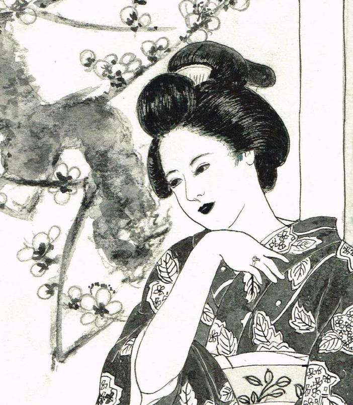
「親父の従兄弟が東京の深川の石島町で石炭の仲買をやっていましてね、店の名前は中川石炭店というのでしたが、わたしはそこへ預けられました」
男はちょっと横を向いて、二、三度湿った咳をした。咳が治まると、彼は新聞の広告を裏返して、鉛筆で簡単な地図を書いた。
「石炭屋の前には、こんな具合に、小名木川というのがありました。すぐそばにお稲荷様があって、その向こうが扇橋と猿江の橋。川向こうには重願寺が見えて、その近くにはガス会社がありました。小名木川を西に向かってどんどん行くと、隅田川に出る。
反対にこっちのほうに、つまり東に下って行くと、中川に行き着きます。ある時蒸気船に乗って小名木川から中川を横切って江戸川を遡りましてね、流山の運河を通って利根川を取手まで下ったことがあります。取手の向いに小堀という村がありますが、そこの船頭たちが客を集めてバクチを開いている。その噂を聞いて、ちょっとのぞいてみようという気になったというわけです。
この当時、隅田川には通運丸という蒸気船が走ってました。これは外輪船で、船の両側で大きな水車がガタコンガタコンと回転する。下手な絵ですが、まあ、こんな船だと思えばいいでしょう。こいつが利根川から霞ヶ浦に入って、この土浦の港まで通っていた。わたしはこいつに乗って小堀まで行きましたが、この村は昔からの船大工がたくさん住んでいる。船頭も大勢います。案内された賭場は、宿屋なんぞではなくて、高瀬船を改造した湯船というやつです。これはもう廃船で、岸につないでありました。
中には風呂桶がしつらえてあって、周りの船頭の家族が入りに来る。水は下が利根川ですから不自由はしない。燃料は流木で十分まかなえる。賭場と風呂場の間には仕切りなんぞありませんから、女も子どもも、目の前で裸になって湯船に入る。そうして、男らが丁だ、半だ、と顔を赤くしたり青くしたりして夢中になっているのを、頭に手拭なんぞのせて見物しているんです。わたしもひと風呂浴びさせてもらいましたが、夏ですから障子は開け放しで、利根の川面に月が浮かんでね、そりゃあのんびりしたものでした」
男は煙管にきざみ煙草を入れて火をつけると、炭火を見つめながらゆっくりとふかした。煙管を持つ手が微かに震えているので、褐色の雁首が火鉢の上でゆらゆらと揺れ動いた。
叔父は石炭の仲買人としては、かなり大きい仕事をやってました。事務所の周りには見上げるような石炭の山が何十もありましたが、これは北海道や九州から買いつけたものです。
石炭を運んできた貨物船が横浜へ入ると、人夫が木造船に積み替えて、木造船を何艘ものダルマ船に曳かせて隅田川に入ってくる。そうして万年橋から小名木川を下って、工場だの商店だのが、ぎっしりと並んでる川筋を通って会社まで運んでくるんです。中川の店は川岸に五つの桟橋を持っていましたが、荷を積んだ船が桟橋に着くと、人夫がこれを担いで、石炭置き場に積み上げておく。
注文があると、船や馬車に積んで注文主の会社まで運搬する。女に会いたくて出てきたんですが、西も東も分からない上にべらぼうに忙しくて、捜しにいく暇はまったくありませんでした。
人夫たちはひどい身なりをしていましたね。なにしろ汚い。顔はかさかさで歯は黄色、噛みつきそうな目付きをしている。ある日叔父に、「なんであの人たちはあんな顔をしてるんです」と聞いたことがある。すると叔父は、「奴らは屑だからな」と答えたもんです。
叔父は金持ちのくせにケチな人でね、「大体このぐらい、なんてやり方では、損得が出るから駄目だ。ぴったり記録しろ」なんて何度も注意する。チョビ髭をはやして鳥打ち帽子を被って、肩の広いジャケットに馬乗りがはくようなズボンをはいて、長い革靴を履いている。ポケットにいつも布を入れていて、靴が汚れると神経質にそれで拭いている。
「人夫はな、出来るだけおまえの目を盗んで、楽をしようと考えているんだ。一回に一キロ少なく担がれて見ろ。五十回で五十キロの損。これが百人いたら五トンの損だ。だから、秤はちゃーんと見ていなければだめなんだぞ」なんて実にこまかい。そのうちだんだんうるさくなって、いいかげんに聞くようになりました。
最初にやらされたのは、人夫がどれだけ石炭を運んだかを帳面につける仕事でした。人夫たちはみんなモッコで石炭を担ぐ。一回の重量は六十キロと決められている。船が係留してあるところまで運んでくると、そこにわたしと小僧が待っている。そばに大きな秤がある。人夫は台の上にモッコを乗せる。
「早くしろい！」
「これ以上早くはできねえぜ」
わたしは人夫の名前のところに線を引いて、竹の棒を一本人夫に渡す。この棒をマンボウと呼んでいた。長さが一尺ぐらい。幅は一寸、人夫はそれを片手にもって船と陸とをつないでいる歩み板を調子良く渡って船に乗って、ざっとぶちまける。そうしてマンボウを船のなかにいる別の小僧にわたす。小僧はマンボウを受け取るたびに人夫の番号のところに印をつける。船にどれだけ石炭を積んだのかということは棒を数えれば分かります。
一人一人の人夫がどれだけ働いたか、ということも帳面を見ればすぐに分かる。こんなふうに人夫に混って働いていました。人夫たちはつき合ってみると、たいがいはいい人間ですよ。みんな腹が減ってるから、すぐに頭に来る。けれども気持ちは優しい。わたしが仕事場では一番若いから、年はいくつなんだ、とか、学校はいかねえのかね、なんて聞く。古株の葛四郎という男もいろいろと面倒をみてくれて、日増しに居心地が良くなりました。
バクチの見張りに立つようになったのは、その頃のことです。働きはじめてからふた月ほどしてからのことでしたが、昼休みになると人夫たちがどっかに行ってしまう。めしでも食べに行ったんだろうと思っていたが、それにしてはどうも様子がおかしい。それで石炭の山の間を方々歩いてみた。石炭置き場には、二階三階建てのビルほどの石炭の山が三十も四十もあって、まるで迷路みたいになっている。そこをどんどん歩いていったら、男たちが大勢輪になってしゃがんでいた。向こうもこっちを見つけて、ワッと腰を浮かして、何人かが駆け出して来た。そして、わたしだと分かると、
「なんだ、栄治じゃねえか」と急に安心したような顔つきになった。それはゴム風船の新吉という、若いくせに額に年寄りみたいなしわの寄った男で、頭に空気がたまっているみたいだからゴム風船なんて呼ばれていました。
「こんなところへ来ちゃ駄目だ。帰れ、旦那にも誰にも喋っちゃ駄目だぞ、いいか、その代わりこれをやる」
新吉はこっちへ寄ってくると、二銭くれた。そこへ人夫の頭の葛四郎が来て、「おい、ちょっと来い」と言って、わたしをその周りで一番高い石炭の山の下へ連れて行きました。
「栄治、あの山にのぼって見張っていろ。誰か妙な奴が来たら知らせるんだ」
「なぜそんなことをやるんです」
「決まってるじゃねえか、警察に見つかったら俺たちはみんな留置場だ。いいと言うまでは降りてきちゃだめだぞ。怪しいと思ったら石炭をぶん投げろ」
「頭に当たるかもしれませんよ」
「かまやしねえよ」
「怪しい奴というのはどんな奴ですか」
「見りゃすぐに分かる。声を出してはだめだ、石炭をぶん投げるんだ」
言われたとおり山の頂上にのぼって見ると、これは大変な高さです。辺りのどの建物よりも高い。そのころは東京でも、ほとんどの建物は平屋です。大きい建物といったら工場ぐらい。二階屋は数えるほどで、あとは平屋だからどこまでも見える。その日は無事に終えて、次の日も見張りに立ちましたが、わたしは石炭の山から見る東京の下町がほんとに好きでした。
川筋をいろいろな船が通るし、ごうごうという空の呻り声に混じって、鉄道だの人の声だの荷車の音だのがひっきりなしに聞こえる。これを聞いていると、ほんとに東京に来たんだという気がしてひどく得意になったもんです。こうして見張りをやったけれども、運よく警察には見つからないで、石炭を投げるということは一度もありませんでした。
半年ちかくマンボウとりをやったころ叔父が、「コークスの配達に回れ」と命じました。叔父の会社では、石炭ばかりでなくコークスの仲買もやっていた。当時、小名木川の対岸に猿江のガス会社がありましたが、これは東京ガスですから多分今もありましょう。
当時、ここでは石炭を焚いてガスを作っていた。そうすると、大量に石炭の燃え殻のコークスが出来る。それを庭に引き出すと、こいつはまだ十分熱を持っているから真っ赤に燃えている。これを山のように積んで、水道の水をジャージャーかけて、野積みにしておく。この燃えカスを叔父の会社で買う。小僧の山本というのが、三つ年上で、いろいろと教えてくれた。
「コークスにはな、軟コークスと硬コークスがあるんだ。これが硬いほうのコークスだ。重いだろう。こいつは火力が強いから、鋳物を作る工場で使うんだ」
月島にたくさんの鉄工場がある。昔は月島の鍛冶屋は炭火を使っていた。それが、だんだんコークスの方が安くて使いやすい、ということが分かって買いに来るようになった。月島にはコークスを届けに何度となく行きましたが、鉄工所といっても掘っ立て小屋のようなところに職人が五、六人いて、一人が足踏みのフイゴで風を送ってコークスを真っ赤に燃やしている。三人ばかりの職人が、ハンマーで焼けた鉄を朝から晩まで叩いている。
どこを見てもこんな小さな工場ばかり。農機具、釜、釘、建築材なんぞを作っている。月島には造船所もたくさんあって、それでここには職工もたくさんいた。ガタ打ちなんていう職人もいました。
今はリベットは全部機械で打つが、昔は手で打った。ガタ打ちはこれを専門にやる。職人としては単純ですから、貧乏だし気も荒い。ほとんどが根無し草で女房も子どももない。あちこち造船所を歩いて回って、気に入れば何年でも働くけれども気に入らなければ、その日に辞めて飛んで行っちまう。こんな類の人間はあらゆる職種にいたもんですが、そんな連中が歌っていた歌を覚えています。
俺はガタ打ちー おまえは芸者
波のまにまに この身をまかせ
どこの渚でー 果てるやら
俺はガタ打ちー 嫁にゃ来るな
風の吹く間に 憂き身をやつし
どこのみ空でー 果てるやら
コークスの配達は注文の量によって荷車で行ったり、馬車を頼んだりする。初めのうちは小僧の山本が一緒に行ったんですが、場所を覚えてからは人夫と一緒に行きました。佃島だの月島に行くときには、勿論、船です。馬草で行く時は人夫を一人連れて、馬車のあとについて歩いて行く。荷車で行く時には、人夫が二人で荷車を引いたり、後を押したりして行く。わたしは帳面と鞄を下げて、お金を受け取って、領収書を渡してくるんです。
自慢しても仕方がないことですが、あの女に会うまではわたしは、クラスではかなり出来るほうでしたから、叔父は何事にも口うるさい人間で、「鞄は死んでも体から離すなよ」なんて出るたびに言いましたが、さすがにわたしが金をごまかすかもしれないとまでは疑わなかったようです。
コークスの配達という仕事は、よほどためになりましたね。深川はくまなく歩いたし、本所浅草まで足を延ばすこともありましたから、東京の下町はだいたい分かるようになったんです。配達に行くときには、いろいろの人夫と歩きましたが、特に、ゴム風船の新吉と、兵隊のたろ吉という二人とはずいぶん歩きました。
新吉は五年ばかり前まで葛飾の小作人で、この辺りヘしばしばおわいを貰いに来たそうです。おわいはその頃は貴重な肥料でね、東京近辺の田舎では、とてもこれを欲しがった。近いところからは荷車を引いて集めにくる。遠くからは、大きな船で採りに来たもんです。
「おれは、どこの家で何を食っているか、ちゃんと分かったもんなんだ」なんて新吉は自慢する。
「うまいものを食ってる家のおわいは、なんといっても勢いがいい。色も形もちがう。なにより力が違うから、てきめんに分かるんだ」
「金持ちと貧乏人は屎まで違うというわけだな」
「思いだしても馬鹿ばかしいが、一度ひでえ目ついたことがあったぜ」
「どうしたってんだ」
「料理屋の店先で桶をひっくり返しちまったんだ。三味線堀の前の古着屋の隣だったが、それは大騒ぎになっちまってよ、そんで仕方がねえ、俺は両手でかき集めて桶に入れたんだが間にあわねえ、それで着物を脱いで、そいつで屎を集めて、いっぱいになると三味線堀で洗ってはまた集めして、そうやって何度もやったが、しまいには俺が屎だらけになっちまった。堀に飛び込んで洗ったが、こいつが十月と来てたから寒いなんてもんじゃねえ。見物人も臭えやらおかしいやらで、妙な顔つきをしてやがったぜ」
「そいつはいい見ものだっただろうよ」
「へん、屎食らえってのはこのことだ」
わたしが新吉とコークスを引いて歩いた頃は、おわい屋というのはどこにもいて珍しくもなんともなかったんですが、最近はなくなったから、おわいをどうやって採るのか知らない人もいるでしょう。
おわい屋は桶をいくつも荷車に積んで来て、路地の前にそれを止めて、天秤棒の両側に桶を下げて、「ええ、おわい、おわい」と言って歩く。そうすると、
「おわい屋さーん」と呼ばれるから、便所の取り入れ口に回って、長い汲み取り棒で汲んで桶に入れる。桶がいっぱいになると荷車に戻って、新しい桶を下げて別の路地に入って行く。そのうち荷車の桶がいっぱいになるから、船に戻って、いっぱいになった桶を中に入れて、別の新しい桶を荷車に積んで回って歩く。日が暮れれば船に寝て、夜が明けるとまた出かける。こうやっているうちに船がいっぱいになるから、荷車を畳んで船に載せる。荷車というのは心棒を抜くとばらばらになって、全部小さくまとまっちまう。荷車の輪を二つで「一荷」という。こうやって苦労して集めたおわいを船に積んで帰るんです。
「おめえ、どうしておわい屋をやめたんだ」
「考えても馬鹿ばかしいから、言わねえよ」
「女房に逃げられたのか」
「それはてめえだろう」
新吉とたろ吉は、こんなことをしょっちゅう言い合ってました。たろ吉は日露戦争に行って勲章を貰ったが、すぐ質に入れて、わたしが会った時は持っていなかったようです。そしてどういうわけかひどく物知りで、いろいろなことを知っていたんです。外見は何ともみすぼらしい格好で、人相もどこから見ても浮浪者のようでしたから、その有様からは前に何をやっていたかを想像することはまるで出来ませんが、初めから浮浪者でなかったことは確かですね。小名木川が江戸時代の運河だなんてことも、たろ吉から聞いたんです。
「行徳の方から塩を江戸に運ぶためにな、徳川家康が掘らせたんだ」と、たろ吉はわたしに教えてくれましたが、確かにあれは掘った運河だったんでしょう。
ともかくも、当時の深川は川の上に浮かんでいるような所でしたから、船に乗りさえすれば茨城でも栃木、群馬でも行けました。今と違って物を運ぶのは船が主ですからね、深川の周りは手漕ぎの船やら、貨物を運ぶ高瀬船なぞがひっきりなしに行き来して、わたしはそんな船を眺めながら、毎日コークスを運んで歩いたもんです。
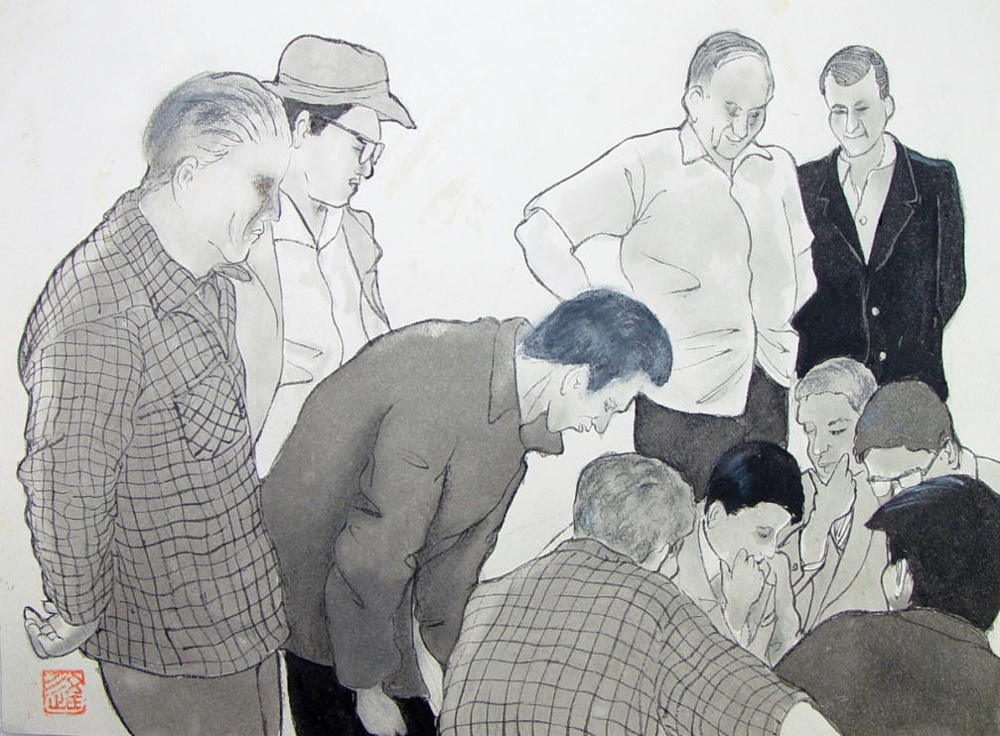
深川で働くようになって一年近くたった頃、足袋職人の源二というのが、わたしを遊びに誘いました。この男は、牡丹町の足袋屋で木場職人の足袋をこしらえているんですが、バクチが好きで、ちょっと暇があると石炭置き場のバクチ場へ顔を出していつも負けて帰る。それがどうした風の吹き回しか、その日は運が向いて、いくらか儲かって、「今日は俺がおごってやるからよ、何にも言わずについてきな」と言う。
源二は、石炭だのコークスなんぞばっかりさわっていたら駄目だ、と言うんですね。仕事ばかりしていたら、ろくなことはない。
「人間は、若いうちにたっぷり遊ばなけりゃだめなのよ。おしろいの匂いを嗅いで、ぷくぷくっとした尻に敷かれてな、それでまともな大人になろうというものじゃねえか」
二十歳を過ぎたばかりだというのに、三十を越したような顔をしている。
チョキで行くのはあんさんじゃないか
粋な袂に百両入れて、
きょうは吉原、あしたは洲崎
それでもぬしのことぁ わすりゃせぬ
こんなでたらめな歌を歌って歩くのが好きな男でしたが、連れて行ったのは門前仲町の辰巳芸者のところでも洲崎でもない、八幡様のお社の路地の横の掛け茶屋でした。掛け茶屋というのは本業は女を世話するところですから、手の込んだものは出来ません。せいぜい団子、甘酒、せんべい、菓子、それに茶をくれる。源二は団子を急いで頬ばって、
「おやじ、あいてるか」
「それは、もう」
「今日はな、おれじゃねえんだ、この若いもんなんだが、頼むぜ」
おやじは路地の奥に案内する。ごちゃごちゃした小さい家が建て込んでいて、しばらく行くと銀杏の木のある家に突き当たる。木戸を開けて庭に入ると奥に離れがある。
「おい、お客をお連れしたよ」
「あいよ」中から女の声がする。玄関を開けると、半畳ばかりの土間があって、開け放った障子の向こうに、若い女が蒲団の上に座っている。
「あらあ、お若いのねえ、うれしくなっちゃう」
「それじゃ頼んだよ。若い男だからといって、後に疲れを残すようじゃ困るからね」
「うるさいねえ、はやくいっちまいな！ ねえ、お入りよ。いくつなの」
こんな女にかかっては手も足も出ない。こっちはまだ十七になっていなかったし、女は二十歳をだいぶ過ぎてましたから、その道では海千山千のつわものだったんでしょう。紐を解くと、長襦袢の下にはなんにも着ていない。腰巻きもしていない。女は蒲団の上に座ったまま、長襦袢をはだけて、おいでおいでをしている。こうなっては首根っこを押さえられたも同然で、たちまち身動きができなくなりました。
女の名前は、いくら考えても思い出せないんですね。ただ、女とひとつ蒲団に入って何分もたたないのに、表で戸をたたく音がするのには驚きました。
「うるさいわねえ、わかったわよ。もう時間なの？」
「きっかり三十分たったよ」
「だからなんなのよ」
「客だよ、開けてもいいかい」
「馬鹿いうんじゃないよ。いったい誰なのさ、客って、馴染みかい」
「初めてのおかただよ」
「いやだねえ、少しは気を遣ってくれたっていいだろう。あたしだって人間だよ。たまにはいい男とゆっくりしたいじゃないか。待たせておきなよ」
「ここにおいでになっているよ」
「馬鹿。おたんこなす。どういう了見なのさ。何人客を取らせようってんだ。これじゃ死んじゃうよ」
「三十分と約束したろう」
「そんなこと知らないね、あんたが勝手にきめたんじゃないか」
女はわたしを捕まえたまま、大きな声で怒っている。こっちは手をふりほどいて、「悪いから、帰る」と言うと、「いいんだよ。あいつはさんざ儲けているんだから、かまやしないよ」そう言って、蛇みたいに巻きつくんです。
「店で待ってもらっておくれ」なんて、女はふてくされている。
「何分待ちゃいいんだ」おやじが苛らいらして叫ぶ。
「三十分」
「そんなに待っていられると思うのか」
「なんだい、スケベ。やなら帰ってもらいな」女はあくまで強気です。
それでおやじはしかたなく客を連れて店に戻りましたが、こんなことがあったので、なんとはなしに女が好きになったんです。それで、そこへ三度ばかり通いました。初めはその女に夢中になった気がしましたが、それから急に嫌になった。どういうわけか嫌になって、それきりぱったりと行かなくなった。
わたしは生涯にずいぶん大勢の女と付きあいましたが、商売女というのはあっさりしていますから、こっちが飽きると、後を追ってくるなんてことがない。だから遊ぶには気楽でね、それがまたいいもんでした。
ところで、これはついでですからお話ししておきますが、掛け茶屋のおやじというのは昔の岡っぴきの手伝いみたいなこともやってました。この商売は裏と表がはっきりしていますから、もし警察ににらまれると商売がやっていけなくなる。それでなにかにつけて、巡査のご機嫌をとったものです。おやじは昼時になると、カツ丼だの玉子焼きなんかを女中にこしらえさせて待っている。そうすると、
「おいおやじ、こんな男が寄らなかったか」なんて、人相書きを持って巡査が入ってくる。
「これは旦那、ご苦労さまです。どれどれ、さあ、今日はまだ見ませんですなあ。まあ、お疲れでしょう。こちらへどうぞ。まず、お茶をいっぱい」
おやじは急須からお茶を注ぐ。そうするとこれが酒なんです。あらかじめ、そんなときのために酒を入れる急須を用意しておくんですね。店の奥ですから他の客には茶としか見えません。それから飯を出す。
「こんなことをされると困るぞ」なんて言いながら、巡査も機嫌よく食べる。そうして食べ終わると「それじゃ、怪しいものが立ち寄ったら、すぐに知らせてくれ」なんて言って出て行く。
茶屋のおやじも、巡査とつながりがあるということを心の底では自慢に思って、ときには密偵みたいなこともする。
「旦那、このごろ家のお春のところに、ちょくちょくこんな男が遊びにくるんですが、どうもそぶりが怪しいと思うんです。わたしの勘ではよからぬ金を貯めているような気がするんですが、ひとつ心にとめて置いてください」なんて情報を入れる。
そうすると巡査も、
「そうか、それじゃその男が今度来たら、すぐに女中に知らさせろ」なんてことになります。
そうして次にその男が来た時には、おやじがこっそり巡査を呼びにやる。勿論そんなときには、男が女と遊んでいるところへなんぞ踏み込んだりはしません。店の中でも、決してつかまえない。店を出て、ややしばらく行ってここまで来れば店の迷惑にはならないし、おやじが知らせたことは男も気がつかない、そういうところへ来てから、
「おい、ちょっと、こっちへこい」と、こんな具合に呼び止めるんです。そうして、持ち物全部調べられる。住所、仕事、給料、仲間の名前、戸籍調べよりもまだ厳しい。だから、少々やましいところがある人間は、たちまちボロが出ます。わたしは掛け茶屋ではつかまりませんでしたが、幾度も往来で尋問されましたから巡査というものがどんなものかは肌身に沁みて知っているというわけです。
掛け茶屋の女とは長続きはしませんでしたが、それからほんの一カ月ばかり過ぎて、わたしはおよねという女といい仲になりました。
これには決して忘れられない出来事がありますので、その次第をお話ししましょう。
叔父の会社の隣に大工の九造というのがいて、九造はバクチが好きで人夫と一緒に石炭置き場で遊んでいたんですが、女房は目のつり上がった色の黒い女で、いつもくるくる動き回っていました。じっとしていると、亭主のだらしないのが癪にさわってしょうがないんでしょうかね、やけになったように働く。
なにしろ九造の家は、六人も子どもがいたんですから貧乏です。九造が酒を飲むのに畳に座ると、腹をすかしている子どもらがぐるっと周りを取り囲む。九造がいっぱい飲むと、子どもらも口をつぼめて、目をぎょろぎょろさせて唾をごくりと飲む。つまみのタクアンを一口かじると、みんなで口を開いてよだれを流す。
「食いたいか」なんて言うと、みんながこくりと人形みたいにうなずく。それで九造はタクアンを一切れとって、十ばかりになる長男にくれてやる。長男は半分かじって次男に渡す。次男は半分かじって三男に渡す。こんなふうにしてだんだん渡って行くと五番目ぐらいには小指の先ほどもない。それで小さい子どもらはわーわー泣き出す。
「泣くんじゃねえ」なんて言っても効きめがない。それでまた一切れ今度は一番小さい子どもにくれてやる。そうすると、こんどは一人で全部食べてしまって大騒ぎになる。こんな有様ですから、九造もしょっちゅう酒を飲んでいるわけにはいかない。憂さを晴らすのに九造は、仕事がない日はバクチ場に精勤したというわけです。
九造の女房は、雨が降らない日は必ず洗濯をしていました。家族の着物ではなくて、洲崎の遊女の下着だとか客の浴衣ですね。遊廓では毎日大変な量の洗濯物が出ますから、これを外の女に委託するんです。
元締めと称する女がいて、これが毎日遊廓から頼まれた洗濯物を荷車に積んで、男に引かせて、洗濯女たちに配って歩く。そうすると洗濯女たちは一枚何銭かで洗濯して、夕方には元締めのところに届ける。九造の女房はこんな仕事を請け負っていた。だからそれこそ毎日、洗濯板とタライを家の前に持ちだして洗っていたが、そこでもう一人の女がやっぱり女郎の着物の洗濯を手伝っていた。およねという女で、二十歳前のこれはなかなかの愛敬のあるいい女でした。
洗い終えた着物を女たちは石炭置き場の隅のほうに干すんですが、そこは叔父の土地ですから、向こうはこっちに遠慮している。それでたまたま顔が合うと、いつも場所をお借りしてすみません、なんて丁寧に挨拶する。それでこっちも好感を持つようになってね、だんだんおよねと親しくなったという次第です。
この女はダルマ船の船頭の娘で、妹と二人で近くの二階屋に住んでいた。両親は、船の中で生活しながら荷を運んで暮しを立てていて、船には五人も小さい兄弟がいましたから、まるで芋を洗うような有様。それで上の二人は船には住めなくて、肥料屋の二階に間借りをしていたんですね。
ところが、この家の隣から火が出て、およねの間借りしている家にも火がついた。夜中でしたが、火事だ、というんで駆けつけたら、辺りは一面火の海だ。見上げると、およねが、どうしたわけか逃げ遅れて、屋根にへばりついて泣きわめいている。
火の粉は雨のように降ってくるし、ぐずぐずしていたら焼け死ぬばかりだ。先に逃げた妹が髪を振り乱して、「ねえちゃん、飛び降りるんだよっ！」と叫んでいるんだが、およねは腰が抜けたらしくて、身動きが出来ない。辺りはなにしろ気違い騒ぎめいた有様で、火の粉の中を人があっちこっち走り回って、てんでに叫んでいる。どうしたらよかろう、と夢中になっていたら、路地の横に番傘が転がっていた。それを見て、
「これだ！」と思ってそいつを拾って、「これで飛び降りろ」と言って、およねのほうに投げてやった。落ち着いて考えたら傘なんて何の役にも立たないんだけれども、気が転倒しているときというのはあんなものなんですね。これがあれば助かると、そう思ったものです。
それで投げてやったんだけれども慌てていて、柄の方を先にして投げるものだから、すぐに傘が開いて二階まで届かない。そのうち、やっと頭の方を先にすることに気がついて力まかせに投げると、およねはそれを受け取って傘を手に握ったまま開かずに飛び降りた。
それまでは腰が抜けて身動きが出来なかったのが、傘を手に持ったとたんに不思議に足が立って、それで夢中で飛び降りたというわけです。こうして助かって、それからおよねといい仲になりました。
およねのお父つぁんは一蔵といって、これがまた大のバクチ好きときていた。ときどき人夫と一緒にバクチをやりましたが、船頭仲間とやるときには船の中でやる。
船には三畳ほどの広さの部屋もあるけれども、そこは女房と子どもがいるから、荷物を積む場所の上に大きなテントのようなものを張って、その下でひっそりとやるわけです。
警察もそれは知っていると見えて、年に一、二度は踏み込んで来る。そんなときどうするかというと、みんな蛙みたいに船端から川に飛び込む。「警察だ！」という声がしたとたんに、もう飛び込んでいるというほどの早業です。
もしだれかがいたずらに「サツだ！」なんて言ったら、嘘だろうと何だろうと、飛び込んだでしょうね。警察はそこは心得たもので、水上警察からボートが出て探照灯で水面を照らして探しますから、たいがいは捕まる。夏ならいつまでも水の中にいられるでしょうが、寒くなればそうはいかない。だから逃げても、十中八、九捕まるんです。
わたしがおよねといい仲になってからも、一度踏み込まれましたが、この時はおかみさんが引き取りに行くのはまっぴらだと言うので、わたしがおよねにくっついて行きました。一蔵はやくざではないから、警察もそれほどひどい拷問はしない。
しかし竹刀で叩かれるぐらいのことはされるもので、引き取りに行った時は背中が腫れ上がって、息をするのも大儀そうな様子でした。
一蔵は四十前でしたが、にがみ走ったいい男で、なかなか女にはもてたんです。それで女房はやきもちを焼いて、そのうちだんだん陰気になってお狐さんに凝り出した。コツコツコツと板を叩きながら、念仏のようなものをぶつぶつ唱えている。これを一蔵が遊んでいる間じゅうやっている。船の中ですが川面を伝って遠くまで聞こえる。
川には船がひしめいていますが、一蔵の船はすぐに分かるんです。あるとき、およねと一緒に船に行ったらちょうど一蔵が帰って来た。夏の夕暮れで西の空に夕焼けが残っている時分でしたね。
「おめえら、楽しんでおけよ」なんて言ってにやりとしているところを見ると、一蔵はいい気分らしい。見ると船の胴間に女房のお年がつっ立って一蔵を睨んでいる。その顔が尋常ではない。目も口も引きつって、本物の狐みたいな顔をしている。そうして、気味の悪い声で、
「一蔵、おまえは、また、掛け茶屋の玉世と遊んで来たな」と言う。
一蔵は相手にしないで、船に乗り込んで部屋に入ろうとする。お年はそれを押しとどめて、
「さっき、おまえたちは富岡の不動尊前の蕎麦屋に入ったろう」と奇妙に甲高い声で叫ぶ。
「馬鹿を言うな」一蔵は取り合わない。
「その蕎麦屋で、おまえらはてんぶら蕎麦を頼んだろう」
「そんなものは知らねえよ」
「そしたら、玉世の蕎麦の中に蠅が入っていたろう。それでおまえが怒鳴って、蕎麦屋はあやまって、新しい蕎麦と、十銭よこしたろう」
お年の顔はまるで仮面のように尖っている。一蔵は驚いた顔をして立っている。その一蔵の顔がひどく歪んでいる。と見る間に、何を思ったか一蔵は胴間にあった鉄瓶を摑んで、「この狐付き！ これでも食らえ」と叫んでお年の顔に投げつけた。およねが悲鳴を上げる間もなく、鉄瓶はお年の顔にまともに当たった。そうして、ガンとひどい音を立てたんですが、これはどうしたことでしょうね、鉄瓶がまっぷたつに割れて胴間に転がった。お年は狐のような顔を引きつらせたまま、目を見開いている。一蔵は呆然として立っている。そのうち一蔵は、へなへなとしてその場に座り込んでしまった。
あたりはもうすっかり暗くなって、そっちこっちの船には明りがついている。一蔵はお年の後について部屋に入りましたが、それから熱が出て、三日ばかり寝込みました。
勿論、一蔵はそれで遊ぶのをやめたわけではありませんが、玉世という女と会うのは気味が悪くなったらしくて、それ以来手を切ったらしい。割れた鉄瓶は捨てないでそのままとってありましたが、なんであんなことが起こったのか、てんで分かりませんね。
ところでこれも狐のたたりではないでしょうか、およねと遊ぶようになってから三月もたたないうちに熱が出るようになった。おかしいなと思っていたら、だんだん股の付け根が痛くなって横根が張りだした。リンパ腺が大きくなってきたんです。それでも、そのうちなんとかなるだろうと思って放っておいた。
そうしたら日に日に痛みが増してきて、まともに歩けない。着物が股に触ると、飛び上がるほど痛い。ガニ股になって歩いていたら、人夫がみんなへらへら笑う。そのうち恐ろしく熱が高くなって、体中がガタガタ震え出した。こらえようにもどうにもならない。顎も手足もガタガタ勝手に震える。それでとうとう寝込んじまった。
叔父は、さすがにこれは普通の熱ではないと思ったんでしょう、医者を呼んで来た。医者は一目見て、「梅毒ですな」と言ったもんです。叔父はかんかんに怒って、「おまえはそんなだらしない男になったのか。親元に返すからそう思え！」と言う。そうして、「どこの女と遊んでそんなことになったんだ」という。
「女となんか遊びませんよ。ひとりでにこうなったんです」と答えると、
「馬鹿野郎、梅毒は女からうつるんだ。ひとりでに梅毒になるなんて奴があるか」という。
しかしそう言われても、およねからうつったとはどうしても思えない。およねはしごく真面目な女で、病気なんかあるようにはぜんぜん見えないんですから。多分掛け茶屋の女からうつされたんでしょう。しかしそうだとすると、およねにもうつったかもしれない。もしそうだとしたら大変です。本当にこれには悩みました。まあ、それはともかくとして、薬と注射で熱は下がって起きられるようになりましたが、股の付け根の横根はだんだん大きくなって、鶏卵大にもなりました。これはひどく痛いものです。うっかり触ったら、脳天までしびれるような具合です。
「これは専門の医者にかけなければ駄目だな」叔父は不機嫌に言って、わたしは川越の性病専門の医者の所まで連れて行かれました。叔父は九造に付添いを頼みました。
驚いたことには、医者の門に入ったら玄関に患者が入りきれないで外に立っている。みんな男ばかり。何をやっているのか知りませんが、中から男の悲鳴が聞こえてくる。これは大変なところへ来たもんだ、と全身鳥肌が立ちました。
順番が来て中に入ると、髭の生えた年寄りの医者が診て、たちまち手術台の上にのせられた。屈強な助手が三人で体をベルトでぐるぐる巻きにして、上からのしかかった。
「いいか、多少痛いが、動くなよ」と医者は年寄りとは思えない声で言う。
「暴れると、大事なものを切り落とさないともかぎらないからな、覚悟を決めて、歯を食いしばれ。絶対に動くなよ」
いやはや、あのころは麻酔なんてものはありません。メスがザクリとキンタマの近くに突き刺さって、すっぱりと横に切られると、覚悟はしていたんですが、目の前が真っ赤になるほどぐらぐらして、喉から知らずに叫び声が出ましたよ。
医者はそんなことにはおかまいなしで、さっさと両股の付け根の横根を切り割いて、それから鉄の匙のようなものを傷の中に突き入れて、ぐりぐりとかっぽじる。膿やら腐った肉を掘りだしているんでしょう。こいつはメスで切られるよりも痛い。その有様は、とても言葉では言いあらわせたものではありません。
医者が薬をくれたので、それをもって、九造に抱えられるようにして、とても歩けないので人力を雇って、死にそうな思いでやっと帰ってきました。そして息も絶えだえといった案配で着いたんですが、これでようやく安心して眠れると思ったらとんでもない、それから危うく命を失うような目に遭った。
川越の医者は、家に帰ったらすぐに薬を飲むようにといって丸薬をくれたんで、それを飲んだんですが、あれはヒソだったんでしょうか、飲んでから十分とたたないうちに体じゅうが火のように熱くなった。腹が煮えるようで苦しくて、どうにも我慢できない。七転八倒というのはあのことでしょう。
ウンウン呻っていたら、女中が気がついて大声を挙げて、それで番頭が飛んできた。そうするうちに苦しくなって、ワッと吐いたらそれが全部血だ。尻からも血がどろどろと出てきて止まらない。叔父も飛んで来ましたが、この様子を見て驚いて、これはここに置いたんでは死んでしまうと思ったんでしょう。人力車を雇って、神田の大きな病院に連れて行きました。そこの医者は一目見て、「これは十に一つも助からないだろう」と言いましたね。注射を何本も打たれて、だんだん意識がなくなって気がつくと昼でした。
枕元には誰もいませんでした。白い部屋に独りで寝ていたんです。不思議なことにはぜんぜん痛みがない。血も止まって、その日の夕方にはカユをすすれるようになりました。運がまだあったのと、体が若かったんでしょうね。
夕方、九造が様子を見に来て、「いや、みんなほんとにびっくりして、あのまま死んじまうんじゃないだろうかと思ったが、まあ、よかった」なんて言う。十日目には退院しましたが、医者は「おまえはほんとに強い男だな。しかし、女にはこれから気をつけろよ。またこんなことになったら、助かるかどうか保証はできないぞ」と言いました。
好運にも梅毒は、川越の医者の荒療治が効いたのか、二度と再発はしませんでした。およねはどこかに行ってしまいました。病気がうつっていなければいいんですが、もしうつったとしたら、それこそ取り返しがつかないことをしてしまったことになります。
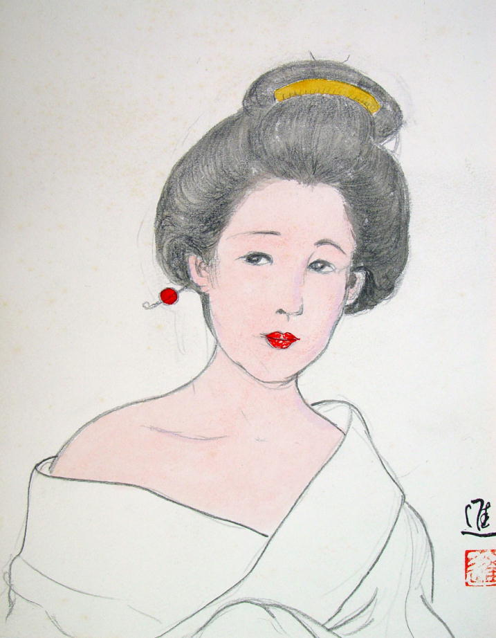
「あの頃はね、人間の世界はここで行き止まり、というところがあったもんです」
男は言いながらポットから急須に湯を注ぎ入れた。手が震えて湯が蒲団の上にたらたらとこぼれた。「まあ、ひとつどうぞ」と男は言って私に茶碗を手渡し、自分もひと口すすってから腕組をした。
病気が治って、ようやく元通りに働きはじめましたがね、ひと月もしないうちに事件がありました。大震災の年の春先でしたから大正十二年です。
わたしは毎日コークスを運んでいましたが、配達の時にはいつも一緒に行っていたゴム風船の新吉と兵隊のたろ吉が、ぱったりと姿を見せなくなった。親方の葛四郎に聞いてみたが、葛四郎は知らないという。ほかの者も知らないという。ところが十日ほどして、たろ吉がひょっこり姿を見せた。目がぎょろりとして三日も食べていない、といった顔をしている。
「どうしたんだ。新吉は」と聞くと、「病気だ」と答えていきなり、「十円貸してくれないかな」と、こう言うんです。
「そんな金、俺が持っているはずがないじゃないか」
「だからよ、あんたの叔父さんに借りてもらいてえんだよ。ちゃんと返すから」
「新吉はどこにいるんだ」
「あいつは、もうすぐくたばるぜ」
「冗談いうな」
「あの顔は間違いなく死ぬ顔だよ」
たろ吉が嘘を言っていないことは、すぐ分かりました。それで新吉のいる名月館という宿まで連れて行ってくれることを条件に、宇都宮を出るときに祖母がくれたお金の一部を貸してやることにしたんです。
当時の深川には、トミと呼ばれていた一角がありました。本当は、富川町というのが正しい呼び名です。富川町というのは、叔父の会社からそれほど遠いところにあるわけではありません。扇橋と新扇橋を渡ると、そこは小名木川沿いの西町ですが、その西町のすぐ南に広がっているのがトミと呼ばれていたところです。町全体に隙間なく安宿が建っている。通り歩きをするところは、せいぜい一間足らず。路地は体を横にして歩かないと通れない、というような有様。何軒ぐらいあったものか見当もつきません。どぶ板は剝がれて、汚物が路地に溢れている。歩いていると、ねちゃねちゃしたものが体にへばりついてくる。
この町では日に一回、勝負の時間がある。人影がまだぼんやりしているぐらいの時分に、手配師が道のまん中で、「オーイ」と声をかけると何十という人間がわらわら出てくる。
「今日はどこそこの荷揚げだ、行きてえ奴は手え上げろ」とこう言うと、ばらばらと手が上がる。その中から手配師は「そんじゃ、だれそれとだれそれ」と名前を上げて、「あとはこん次だ」と言うと、他の男らは黙って散らばってしまう。
手配師は、その日雇うと決めた人間の頭数を並べて十銭渡し、「早く行ってこいよ。遅れたら承知しねえぞ」と威張って言う。男らは十銭握ってすっ飛んで行く。どこへ行くかというと、食堂です。
ここらにいる人間というのは、その日食うだけの金しか持っていない。だから朝飯はほとんどの男が食べていない。手配師は、まず雇った男達に朝飯代を渡して飯を食わせる。そうしないと、腹が減っていて仕事にならない。仕事にあぶれた人間はどうなるかというと、どうにもならないから、仕事が出来るまでじっと立っている。
宿屋は朝になれば追い出されるから、道路にいるより仕方がない。手配師が来るたびにそっちへ寄っていく。それでも駄目ならまた立っている。その日なければ明日に賭ける。それでもなければあさってまで立っている。多少の金があるものは夜になれば宿に入るが、ないものは入れてはくれない。三日も職にありつけなくなったらどうするかというと、何にも食わないで我慢している。腕組んでたまに水を飲んで、それで我慢している。
この世界では、決して口には出してはいけない言葉がある。それは「腹が減った」ということと、「寒い、暑い」という言葉です。腹が減っているのは誰もがそうなんですから、我慢のし較べをしているようなもので、もし誰かが立ちんぼうをしていて「腹減った」などと言おうものなら、「野郎はだらしねえ、我慢の出来ねえ奴だ」ということで相手にされなくなる。ぎりぎりのところで我慢しているんですから、口に出したらおしまいなんですね。
「寒い」なんて言っても、馬鹿にされる。雑巾のようなふんどしに木綿の着物一枚。手拭が一本、これが全財産です。冬の風がビュービュー吹く中でもこんな格好して、ちっとも寒くはないようなふりをして立っている。腹が減って、風で吹き倒されそうなのを我慢して、じっとしている。それが最後の誇りなんですね。
雨が三日も降って、仕事にありつけない男がごろごろしていると、殺気だってくる。腹がぐーぐー鳴って、目まいがしそうになるから、そこらに落ちているものでも何でも食べたくなる。ところがそこが乞食と違うところで、道に落ちているものだの食堂の残飯だのは絶対に食べない。
仮に我慢ができなくなって食べるような者がいると、「ああ、あいつは駄目だ、とうとう乞食になりやがった。俺は死んだって残飯なんか食わねえ」なんて意気がっている。
景気のいい奴に「おい、俺の食い残しだが食わねえか」なんて言われると、三日もなんにも食わねえで腹がギューギュー鳴っていても、「冗談いっちゃいけねえ、余りものなんか食うかい、なめたことを言うな」なんて威張っている。そんなわけだから、残飯をあさるようになれば乞食になるより仕方がないことが分かっているから、ぎりぎりのところで我慢している。それが出来なければ死んでしまえ、そういうところです。
ここらには男しかいないのかというと、そうではない。女もいます。それはみんな夜鷹です。もとは吉原とか洲崎、門前仲町あたりの遊廓で働いていたものが、悪い病気になったり年をとったりしてそんなところで働けなくなって、流れ流れてこんなところへ来る。そうして仕事にありついて景気のいい男を捕まえては、川っぷちの材木の陰あたりにムシロを敷いて、体を売って金をもらう。
多少の病気とか熱があったり、皮膚病があるとかぐらいでは休んではいられない。誰も助けてはくれない。だから体が腐っちまうまで、客をとるんです。
宿の間に食堂がある、酒を商う店もある。雑貨屋がある。店先にふんどしだの草履なんかが、ぶら下がっている。でこぼこ道でドブもろくにないから、汚物がいたるところに流れている。たろ吉のあとにくっついてそんな道を名月館のほうに歩いて行ったんです。
見ると、道のまん中に男が倒れている。頭が半分白くて体は泥だらけです。巡査が立って大声で怒鳴っている。見物の男たちは、戸の隙間だの路地の間から顔を出している。手拭を被った夜鷹が萎んだ顔にしわを寄せて、こっちを見ている。
「おい！ おまえ、なんだ、おい！ こんなところでひっくり返ってやがって、ふざけた奴だ。寝ているんじゃない。起きろ！ この野郎」
巡査は大声で叫んでいるんだが、頭の白い男は横になったままだ。道路はまったく氷のように冷えている。
「起きろ、起きないか！ この野郎」巡査は靴で男の横腹を蹴っ飛ばし始めた。
「こんなとこで寝るな！ 病人の真似しやがって、とんでもない奴だ」
男はふらふら起き上ったが、すぐに前のめりに倒れてしまった。
「早く起きろ」巡査は乱暴に蹴飛ばした。
「さあ、行こうぜ」たろ吉は、いかにも腹が減ったという調子で言いました。
「この人はどうしたんです」と、わたしは巡査に聞いたんです。
「何だ、おまえは」
「死んじゃいますよ。このままでは」
「それぐらい分からないでたまるか」
「そんなに蹴っ飛ばしてかわいそうではないんですか」
ほんとにそう言いましたよ。まったく、今考えると滑稽ですね。年の割にはませた口ぶりでそう言ったんでしょう。そのとたんに巡査は、げんこつでわたしをなぐりました。気が付くと軒下に電灯が光っていて、わたしは道端に倒れていたんです。
「おめえ、馬鹿だな」と、誰かが言いましたよ。女が汚い歯を見せて笑いました。たろ吉はそこにはいませんでした。
「おめえ、何しに来たんだ」
「人を捜しにいくんだ」
「ふーん」
「さっきの人はどうした」
「あのじじいは俺が助けたよ」と後ろの男が言った。「巡査の野郎が背負えというんでな、腹が減ってるのに、大汗かいて、通りの向こうまで持ってった」
「それで、どうなったんです」
「どうもこうもねえ、巡査がいっちまったんで、通りヘ捨ててきた」
そう男は言って、汚い口をあいて、声もなく笑ったんです。つまり男の話では、巡査は自分の所轄管内で死人が出たりすると面倒なんだという。報告書を書いたり、死体を始末したりしなければならない。それで自分の管内で面倒が起きると、それを他の管内に持っていってしまう。向こうで死ねば向こうの責任というわけだ。もっとも向こうでも奴をこっちへ運び込むかもしれないから、油断はできない。弱った男は大通りを挟んであっちへ蹴っ飛ばされ、こっちへ蹴っ飛ばされ、そうして運の悪い管内で息を引き取るのが落ちというわけです。
食堂を出て教えられたままに行くと、「名月館」という宿屋が見つかりました。倒れかかったバラックで、入口にはヒシャゲタような人相の色の黒いじいさんが座っていましたね。
「新吉はいるかな」
「おまえさんはあいつの何なんだ」
「知合いだよ」
「金は持ってるか」
「たろ吉という男は来なかったかい」
「野郎、逃げたんだ。やつの宿代ぐれえはおまえさんが払ってくれねえと困るぜ」
金を渡すと、じいさんは新吉の寝ている場所に連れていってくれたんです。新吉は死んでましたよ。額を触ると、もう氷でした。
「今朝までは生きていたんだ。とんだ迷惑だ。あんた、金はあるだろうな」
それでもう一円渡すと、じいさんはすぐに出て行って、汚い男を二人連れてきました。
「ろくなもの食ってねえや」
「半天はけっこういいぜ」
「ふんどしは俺がもらった」青ぶくれした目脂をいっぱいにたらした男が笑いました。二人は新吉を裸にして、死体を真っ黒な袋に入れて、新吉の着物は、小さい男が自分のぼろの上から羽織りました。
「さあ、いくか」
「なにか落ちちゃいねえか」
二人は黄色い歯でケタケタ笑って、そうして袋を担いで出ていってしまったんです。この二人が新吉をどうしたのか知りません。たろ吉はそれきり姿を見せませんでしたね。
新吉が死んで間もなく、わたしは小石川の別邸に呼ばれました。これは氷川神社の近くにありましたが、このあたりにはやたらと印刷屋の看板が立っていました。叔父の家族が週末はここで暮らしていたんです。叔父は書斎で待っていました。
「おまえを来月からここに置いて、勉強をしてもらおうかと思っている。わしの友人が会計事務所をやっているから、そこへ通いなさい。午前中はここで書生として働いて、午後通いなさい。一人前の会計士になったら、わしの店で働いてもらうつもりだ」
こう言うんで、わかりました、と返事をして屋敷を出ました。叔父が急にこんなことを言い出したのは、たぶん宇都宮の親元から何か話があったからでしょうが、わたしはペンなんぞを握って一日中机に向かって仕事をするのはまっぴら御免です。けれども叔父に逆らえば東京にはいられない。逃げだしても行くあてはなし、どうしようと思いながら石島町へ帰って来た。するとこれが悪縁というものなんでしょうかね、こんなことがあったんです。
石炭置き場のバクチ場には人夫だけでなくいろいろな人間が集まりましたが、その中に一風変わった男がいました。名前は健吉といって、年格好は多分わたしより十歳ぐらい上でしょう。ぎろりとした目つきの、色の黒い痩せぎすの男でしたが、難しい顔をして、賭場にいる間ほとんど口をきかない。金はだいぶ持っているらしくて、人夫らと比べるとひどく金離れがいい。
「あいつは何をやっているんだ」と九造に聞いても、「船頭だろう」なんて答えるだけで、やっぱり知らないらしい。一体こいつは、何であんな金を稼いでいるんだろう、といつも気になっていたんですが正体が分からない。
そのうち顔を見せなくなりましたが、叔父の屋敷に呼ばれた翌日、ひょっこり姿を現した。九造が、どうしたんだ、と聞くと、女でひどい目にあった、と言うんです。カサをうつされて、横根が出来て、医者に切ってもらったが、後がいけなくて、それからしばらく寝ていたんだと言う。
「それじゃ、おめさんよりこっちの若旦那のほうが先輩だぜ」
九造がその一件を話して、みんながアハハと笑いましたが、それが縁で男はわたしを特別な目で見るようになりました。
六月になったばかりでしたが、「今晩つきあわねえか」と、健吉が言う。
「なにか、いいことでもあるのかい」と、聞くと、
「後で話すから、とにかく今夜八時に富岡不動様の前に来てくれ」と、こう言う。それがなにやら秘密めいているので、よほど楽しみになって、決められた刻限に不動様の前に出かけたんです。そこに、ひどく年をとった職人風の男が人目に触れるのを嫌うように、銀杏の幹に体を半分隠して立っていました。
「栄治さんだね」
男は足音をさせずに近づくと、こっちへついて来てくれ、と言って歩き出しました。それがひどく早い。男は首に手拭を巻いていましたが、白いのはそれだけで、あとは黒だか灰色の着物を着ているので、ちょっと離れると見えなくなりそうです。しばらく行くと堀があって、岸に小伝馬船が泊まっている。半天の男は、岸から船の方にぽんと飛び乗った。
「来たな」という声がするので、闇を透かしてみると、どうやらそれが健吉です。
「乗れよ」
「暗い船だな」
「明るくちゃ仕事にならねえ」
健吉はわたしを荷物の間に座らせました。真っ暗でなにも見えない。
「どうだい、俺の仕事を手伝う気はねえか」
「あんたは何をやっているんだ」
「金になる仕事さ」
「まさか、泥棒じゃないだろうな」
「泥棒は割にあわねえ」
「それなら、何なんだ」
「おめえを見込んで話すんだが、これは『もうろう船』なんだ」
「もうろう船」というのがあるという話を人夫から聞いたことがありましたが、この船がそうだと言われても簡単には信じられない。もうろう船というのは、「うろ船」とも言うそうですが、警察の目を盗んで、荷物だの人間だのを運ぶのを仕事にしている船です。
今の時代なら自動車が使われるんでしょうが、昔は船が専門だった。健吉の話では、泥棒や強盗の手助けをすることはしないという。
「捕まったらどうする」
「そん時はそん時よ。しかし手順をふみゃ、大丈夫なもんだ」
「面白そうだな」
「度胸はいるぜ。だが金にはなる」
こうして、わたしは「もうろう船」に乗ることになりました。客はいろいろでしたが、一見して、れっきとした店をかまえている旦那もいる。ちゃんとした人間がそんなあやしげな船に乗ったなんてことは信用しない人もいるでしょうが、それは当時の警察がどんな取締りをしていたかということを理解しないと、分からない話でしょう。
昔は警察というのは実に恐ろしいところだった。怪しいと見ると、すぐに交番に引っ張って行って尋問する。だから心に少しでもやましいところがあるものは、巡査ににらまれやしないか、とびくびくしていたものです。
深川は川がやたらと多いところですが、橋もたくさんある。主な橋のたもとには、必ずといっていいほど交番がある。そうして通る人間を監視している。昼間はたくさん通りますからいちいち尋問なんかしませんが、夜遅く歩いていたら必ず呼び止められたものです。
戦争前までは一般の日本人の生活は、朝まだ暗いうちに起き出して仕事に出かけ、一日精いっぱい働いて夕方には家に帰って飯を食べて寝てしまう、という具合で、普通の家では夜九時ごろにはみんな寝てしまったものです。
今の生活はなにやかやと遊びが発達していますから、九時に寝るなんてことは信じられないかも知れませんが、一昔前はそうだった。だから夜遅く歩いている人間はろくでもない、怪しい奴だ、という目で見られたものです。
「ちょっと、ちよっと、そこの男、おまえだ、ここへ来い。今ごろまで何をやってたんだ」
「仕事です」
「仕事だ？ こんな遅くまでやってるなんておかしいじゃないか」
警察というのは、一度目を付けたらなかなか放してくれません。場所はどこだ、社長は誰だ、なんていろいろ聞かれて、返事に詰まると、
「この野郎、ふざけた野郎だ。こっちへ来い」なんて言われて、二、三発殴られて、そのまま朝まで留置されたりすることは日常茶飯だった。だから夜遅くまでバクチをやって、金を懐へ入れて、途中で巡査に呼び止められたりしたら大変です。たちまち捕まって、そのまま留置場に送られちまう。それでバクチ場に通う客は帰りを心配したものだし、胴元は、客を巡査に捕まらないところまで送るのに一苦労したものです。
深川というところは、他の場所よりも苦心がありました。というのは、帰るためには橋を渡らなければなりませんが、橋には巡査がいるんですから無事に通過するのは難しい。それでいろいろと工夫がいったんですが、その一つには、財布を糸で結んで、これを投げる方法です。これはどんなことをするのかというと、客の財布を長い凧糸で結んで、反対側に石を付けておく、そうして客は橋の手前の、まだ大分あるところで財布をこっちにあずけて、手ぶらで行くわけです。そうすると巡査は必ず尋問する。
「こんなに遅く、どこへ行ってたんだ」
「へえ、友達が具合が悪いというんで見舞いに行って遅くなりました」
「嘘を言ったら承知しないぞ」
「誓って申しません」
「それなら明日行って確かめておく。机に所持品を全部並べてみろ」
「へえ」
客は巡査の前に持ち物を並べる。見せろと言われたら、風呂敷の中身から、腹巻の奥、ふんどしの中まで調べられても文句は言えない。
「これだけか」
「間違いありません」
「よし、これからは遅く歩いては駄目だぞ」
こんなふうに説教されて、釈放してもらう。こうして橋を渡って、ぐるっと回ってきて、こっちが待っている対岸までくると、石を投げて合図する。合図があればこっちから向こうの岸を目がけて石を投げる。糸がついていますから、客がそれを拾えば手ごたえがあります。それで糸を一、二度引いてみて大丈夫だな、と思ったところで財布を放してやる。糸を引けば財布が客の手元に戻る、という仕掛けです。
けれども、この方法もあまりいいとはいえない。というのは、なんといっても財布が濡れるし、広い川筋では対岸に届かない。こっちは途中までしか行けませんから、その先に交番があれば、それは独りでやらなければならない。これは苦労です。第一、暗闇の中でこっそりやるんですから、大事なものを失くすことだってあるかもしれない。おまけに月に何度も交番の前を通れば、いくら財布を持っていなくても怪しまれます。
それで普通はよほど遠回りになっても、人通りの少ない路地をたどって帰ったものです。また急がない客は朝まで遊ばせる、そうして陽がのぼった後で、お引き取り願うということもありました。しかし、どうしてもその晩のうちに急いで帰らなければならないような場合には、特別の方法を使いました。それが「もうろう船」というわけです。
これは一般にはバクチ場の客だけでなく、泥棒、凶状持ち、密輸品、そのほか警察の目には触れないで運びたいものを何でも運んでくれる特殊な船ですが、健吉はバクチの客を専門に乗せていた。
「客を乗せるぞ」こういう声がして、どすんと船が岸に止まると、すぐに誰かが乗り込んでくる。岸の上から、「船頭さん、頼みますよ」
「へい」
辰という年寄りの男が、客を荷物の間に案内して、上から黒い大きな布を引っ張って、胴間全体をすっぽりと覆ってしまう。
「気をつけろ」と、健吉の声。船は、すすっと岸を離れる。川には黒いのやら銀色、銅色の波が小さく立っている。家並は真っ暗です。夜、川を走る船は必ず灯火をつけていなければならない規則になっていますが、この船は灯火はつけない。真っ暗な中を、音も立てずにひっそりと忍んで行く。声も立てません。聞こえるのは水音だけ。これは、初めてのものにとっては金玉がちぢむほどのスリルがある。
この頃は、主要な水路には江戸時代以来の船番所というのがあって、水路を出入りする船を常時見張っていた。二つの川が交差するところや、丁字路になっている場所には見張りがいる。だから、ここは絶対に通れない。橋に交番があるところはやはり駄目です。
万が一、橋の上からのぞかれたらいっぺんに発見されますから、交番のないところを選んで行かなければならない。しかし交番の近くでなくても巡回中の巡査に発見されたらおしまいですから、いつでも止まれるぐらいのゆっくりした速度で、岸に近い陰の中を移動する。そうして、実は岸の上には見張りの男が船よりも少し前を歩いて行くんです。
最初の時には分かりませんでしたが、岸の両側にひとりずつ見張りの男が歩いて行く。見張りは巡査が来たと分かると、素早く石を投げて合図して、自分は物陰に隠れる。健吉はすぐに船を岸に止めて、じっとしている。川には船がたくさんいるんですから、止まってしまえば岸から見たって、これが怪しい船だなんて絶対に分からない。
川で仕事をしている人間たちは、そこを通るのがもうろう船だな、と分かっても、警察に密告するなんてことは決してしないものです。そんなことをすれば警察にいろいろ調べられて、仲間じゃないのかなんて疑われて、あげくの果てに船の仲間には相手にされなくなって仕事もできなくなりますから、見て見ないふりをしている。
こうした船は健吉の船だけではなくて、深川には少なくても二艘はありました。というのは、方角によっては一艘ではだめなんですね。川筋はどこかで交番に突き当たりますから、客の帰る方角によって、船を乗り継いで、安全なところまで出なければならない。
例えば、冬木町の木場の親方の客を連れて永代橋まで出るのには、客を部屋裏の養魚場に案内する。ここは錦鯉だの金魚、うなぎ、亀なんかをたくさん飼っておいて、時節がくると売りに出すんです。この大きな池をいくつも通りこしていくんですが、提灯はつけられないから気を付けて案内しなければなりません。これは辰がやります。
油堀川の手前まで来ると、船が待っている。これに乗り込んで、和倉町の方角へ進む。そうして不動堂の少し先まで行ったところで、深川公園の横で岸にあがる。暗い道を富岡門前町の方へ行くと、不動尊の向こうに堀があって、そこに船が待っているから、それに乗って牡丹町の前を通って大島川を蛤町の裏へ抜ける。ここにはいくつも橋があるけれども、交番はないからそのまま中島町へ出て、そこを抜けると永代橋のすぐ下に出るという次第です。
勿論、その日によって変わることもいくらでもある。今日は危ない、という日は依頼があっても出さない。大丈夫という時でも、船の両側には見張りの男が次々に立って、安全を確かめながら進むんですが、素人にはその見張りがどの辺りに居るのかは見えません。
こうやって目的の場所にくると、
「着きましたぜ」健吉が小声で知らせる。
「ありがとうよ」客は岸に上がる。辰が明るい所まで送って行く。
金にはなりましたが、ほんとに神経が疲れる仕事であったことは確かです。
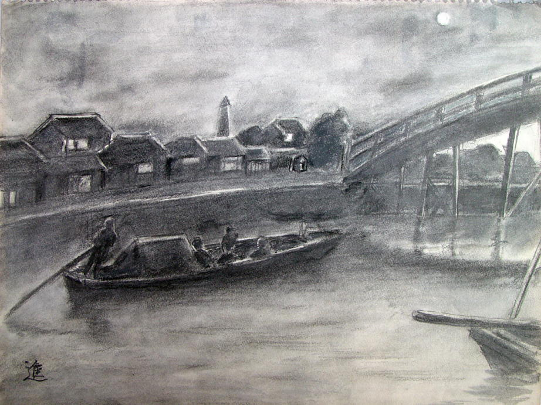
船には寝る場所はありません。それで健吉の口利きで、鶴歩町の川並の親方で徳三という人の居候になったんです。現在は、貯木場が東京湾の沖に移りましたから当時の面影はありませんが、あの頃は深川と言えば木場というぐらいで、木場の一丁目から四丁目、冬木町、鶴歩町、千石町、平野町、豊住町、平井町などはどこもかしこも貯木場と材木問屋ばかりでね、問屋だけでも何百とあったんです。
木場には川並が大勢いましたが、これは筏をあやつる職人です。木曾、紀州、そのほか日本中の木材が深川に集まります。昔の単位でいうと、何百万石という大変なもの。その木材を貯木場に浮かべて置きますが、商人が材木を売ったり買ったりして、買った商品を製材所に引いて行ったり陸に積み出すとなると、川並がそれを一手に引き受ける。親方は、川並鳶を養う部屋を構えている。
親方一人がだいたい三十人ぐらい川並を抱えていたから、これは大所帯です。食うにも寝るにも広い部屋がいる。この部屋がバクチには格好の場所になる。川並同士はあまりやりません。外から客が集まって来るんです。今は、バクチというとそれほど人気はありませんが、昔は大きな商店の旦那だの、食堂のおかみさん、呉服屋の番頭なんかもずいぶんと遊んだものです。徳三親方のところでもバクチは盛んで、それこそ賭場が開かれない日はない、というくらい毎日やりました。
話のついでに、親方のところで見た川並の部屋の様子を少しばかり話してみましょう。賭場はバクチ打ちが開きます。つまり開帳するのは専門のバクチ打ちで、川並の親方は場所を貸すだけで自分ではやりません。映画でバクチの様子が出てくることがあるけれども、あんなものはでたらめですね。まず、バクチ場というのは実に静かなものですよ。決して大きな声を出したりはしない。なにしろ、やってはいけないことをやっているんだから、見つかってはたいへんです。通りがかりの人間に気づかれないように、しごく静かにやる。「ナカボン」というのが場を進めるんですが、ナカボンは低い静かな声で、
「丁、半、さあ張った、張った、丁足りません、丁足りません」とこう言う。誰もが黙っているから、ナカボンの声だけがしーんと響く。空気が、びりびりしている。
「半止まった、半止まった、丁足りない、丁足りない、丁駒、丁駒」と、こういう掛け声がかかると、それは、止まったというのは、半にこれ以上賭けては困る、それを「止まった」という。だから今言ったことは言いかえれば、「半駒は出そろってますよ、これ以上賭けてもだめですよ、丁に賭けなければ、いつまでも勝負になりません、誰か丁を張りませんか、このままでは時間を食うばかりで勝負にはなりません」とこういうことになる。
サイコロには丁、半、どっちが有利ということはありません。壺を開けて見なければ分からない、だから、「丁足りない」と言われて勝負が止まっていれば、誰もが勝負に来ているんだから、苛らいらする。だから、ナカボンが「丁駒、丁駒」と催促すると、誰かが賭ける、そんなもんです。それで場が成り立つ。駒がそろうと、ナカボンが「はい、手どまり、丁半、駒そろいました。勝負」と言う。
壺振りがパッと壺を開ける。その開ける瞬間が、なんとも言われぬいい気持ちなんですね。
職人なんぞは金がありませんから、たいしていい客ではありません。大きな商店の主人、会社の番頭、金持ちの奥さん、地主の親父、そんな人らは金がありますから上客です。勝負に勝ちたいというのは誰でも同じですが、こんなところに出入りするのは勝負以上に楽しく遊びに来るんです。
だからたとえ負けても、いい気持ちで帰してやればいい。映画や芝居で、バクチ打ちが客の金を全部巻き上げて裸にして、「おととい来い！」なんぞと言って外にほうり出すような場面がありますが、あんなことはまったくでたらめですね。そんなことをして万が一、巡査に訴えられたら、バクチに関係した者は全部つかまってしまう。
また、バクチに負けて二度と立ち上がれないほどの大きな損をしたりすると、その客はもう遊びに来ることは出来ないし、あそこに行ったら身代を潰される、なんて悪い噂が立つ。そうすると、もう駄目です。だから胴元は、決してそんな負け方を客にさせないように気を配っている。
負けが込んでくると、「お客さん、今日はどうもツキがないようですから、このあたりでお止めになっておいたらいかがですか」となだめて、「これはほんの足代ですが使ってください」となにがしかの金を渡す。
バクチ打ちというのは、今の暴力団とはまったく違います。バクチ打ちというのは、サイコロひとつで生きて行く一種の職人です。だから人情というものが大切で、人を痛めつけて自分だけ儲かりゃあいいというような考えでは、到底生きてはいけない世界ですよ。
客の中で特に面白かったのは、門前仲町の遊女屋のおかみでしたね。この女は金がうなるほどあるんですが、旦那がぜんぜんかまってくれない。いつもむしゃくしゃしているんで、バクチをやって気を晴らすんです。まったく忙しい女で、入ってきたとたんに羽織も脱がないで、帯の間から大きな札入れを取り出して、
「どうすんの、どっちが足りないの、丁、丁がたんないんだね、それじゃ丁！」なんて言って、バサッと大金を賭ける。勝つこともありますが、こんなやりかたでは最後には負けますから、財布の中は軽くなっちまう。それでもさばさばして、「ああ面白かった。親方、ありがとさん」なんて言って急ぎ足で帰って行く。
なんだかばたばたしていて、この女が来ると場がまとまらなくなりましたが、客種としては上客でした。
もうひとりは「レンガ屋の清ちゃん」という男で、「もうろう船」に何度も乗せましたが、最初に親方のところで見た時には驚いたものです。おろしたてのセッタの草履に鳴海絞りの着物を着て、博多帯のぴかぴかするのを締めて、胸には太さが一センチもありそうな金の鎖を垂らして、その先にそれはびっくりするような金時計をつけている。
金の使い方もそれは豪勢なもので、札びらをまるでごみのようにばらまいて、負けても、あはは、と笑っている。背は中背よりも少し小さめ、小太りで、目がぎょろりとむき出して品がいいとは言えないが、どこかの立派な親分といった格好です。それでわたしはその貫禄に驚いて、
「あれはいったいどんな野郎なんです」と、為次に聞きました。為次は二つばかり年上でしたが、もう一人前の川並で通っていました。
「あれはな、レンガ屋の清ちゃんというんだ」
「変な名前ですね」
「親はその職人だったらしい。ところが、あの人は若い時から手癖が悪くて家を勘当されて、今はこれの親分だよ」為次は右手の人差指をカギの形に曲げて見せた。
「へえ、ほんとですか、そんな風には全然見えませんね」
「スリはスリでも大親分だからな。子分が何十人もいる。浅草一帯があの男の縄張りだから、一日の上がりだけでも大変なものらしいぜ」
道理で、お札をごみのように造作なくばらまくはずだ。その清ちゃんは「もうろう船」にも乗りましたが、あるとき岸に上がり際に、
「おい、栄治、あしたな、浅草見物に遊びに来ねえか」と言う。「十二時に仁王門のところで待ってるからな」
面白そうなので、のこのこ出かけました。あそこには立派な仁王様がある、その門のところで待っていたら、子分を連れた清ちゃんが、大島の紬を着て、金の鎖をこれ見よがしにながながとぶら下げてやって来た。どこの成金かと思うほどの立派な格好です。ぶらぶら歩いていたら、観音様の前についた。
「どうだ、これは日本国中で一番偉い観音様だ。浅草も、この観音様がいるから繁盛しているんだ」
清ちゃんは大いに自慢する。
「ほれ、さい銭だ」と突き出すのを見ると一円札です。清ちゃんは、「さい銭をしみったれると、運がつかねえぞ」なんて金歯を出して笑って、札入れからもう一枚一円札を取り出してさい銭箱に投げ入れて、むっちりと肉のついた手を合わせて頭を下げるんです。
それから仲見世をゆっくりと歩いて、今半という牛肉屋に入った。番頭と女中が玄関で「いらっしゃい」と言いながら頭を下げる。
「親分が、何でもご馳走して下さるそうだ」と子分が言う。その頃こっちは結構、金を持ってはいましたが、せっかくだから黙って御馳走になることにしました。わたしはその時スキヤキというのを生まれて初めて食べたんです。スキヤキを食べると、いまでも清ちゃんを思い出しますよ。
「おまえ、いつまであんな船に乗ってるつもりなんだ」なんて、清ちゃんは心配してくれているらしい。「あんな商売は苦労ばかりで、長続きはしねえぞ」
「おまえ、石島町の石炭屋の親類だというじゃねえか」と、子分が言う。「それがもうろう船たあ、親が泣くぜ」
「いくら貰ってるんだ」
「不自由はしていません」
「そりゃ、そうだろうが、俺たちにくらべりゃ屁のようなもんだ。なあ、物は相談だが俺の手下にならねえか、悪いようにゃしねえよ」と、清ちゃん。
「仕事はぼつぼつ覚えるさ。しばらくの間はのんびり居候していりゃいい。木場なんぞにくすぶっているより、浅草のほうがよっぽどおもしれえぜ」
どうやら、清ちゃんはわたしを見込んで勧誘するつもりらしいんです。これには恐れいりました。自分ではもう一人前の男になったつもりでいましたが、清ちゃんから見ればまだ子どもで、これから育てればいいスリに育つと見込んだんでしょう。
清ちゃんは酒を飲んで、すっかりいい気分になってしまった。こっちはもちろん手下になるなんて承知したわけではありませんが、向こうはそのうちくどき落とすつもりでいる様子です。わたしはよほど弱りました。
その時、急に子分が「来たようですぜ」と言うので見ると、目付きのいかにも険悪な、どこからみてもスリといった人相の、背の低い、小太りの男が足早にやってきた。
「親分、とうとう、とっつかまえましたぜ」と、その男は得意満面といった様子。
「どこで」
「電車の中でさ」
「あばれなかったのか」
「こっちは二人で、三公が一緒でやすからね、相撲くずれにかかっちゃ、どうにもならねえ」
男はこう言って、ヒヒヒと気味悪い声を出して笑う。
「それでどうします」
「決ってるじゃねえか、潰しちまえ」唇の薄い子分が言う。
「やりますか」
「やれ」と、清ちゃんはあっさりと言う。やくざの世界では小指を詰めますが、スリの世界ではシマを荒らしたスリは、利き手の人さし指を潰されるらしい。男は、ちらっとこっちを横目使いに見て、小走りに出て行きました。清ちゃんと子分は、ひどくいい機嫌でしたね。
清ちゃんはわたしのことをいろいろ褒めてから、「それ小遣いだ」といって十円くれました。くれるというものを断わると気分を悪くするから、有難く貰いました。すると清ちゃんは、また懐へ手を入れて、「足りなければまだやるぞ」と言うのです。それで子分があわてて、「そんなにやると癖になりますぜ」なんて言いましたが、これ以上貰うと大変なことになると思いましたから、遠慮しました。
清ちゃんと子分は夕方から集まりがあるといって、勘定をすまして、わたしに、
「いつでもいいぞ。この名刺に書いてある店にくれば、いつでも話を聞いてやる。まあ、よく考えておけよ」と、そんなことを言って別れたのです。その名刺というのは、金縁の立派な紙に次のように書いてありました。
よろずもめごと、相談
専門家 鷹室 清三郎
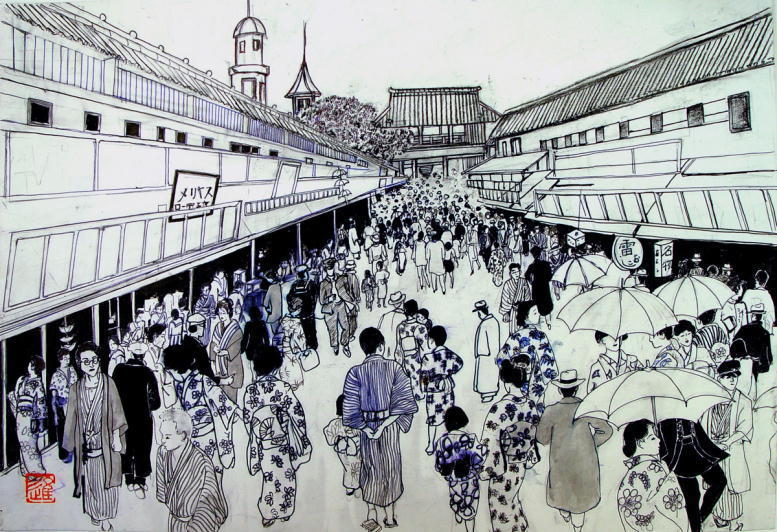
あれは震災になる前の、春の終わり頃でしたが、やけに気持ちのいい日でね、わたしは船でうとうとと昼寝をしてましたが、目を覚ますと健吉が側に座っていたんです。健吉は何かを考えているらしくて額にしわを寄せて黙っているんで、わたしも黙っていました。
すると急に真面目な顔をして、「清ちゃんが心配するのも、もっともだぜ。こんな船にいつまで乗っていて、いいこたあねえ」なんて、思いもよらないことを言う。それでわたしは、「あんたは、なんでこんな商売をやるようになったんだい」と、こう聞いてみた。健吉はにやりと笑って、「俺はおめえとは、生まれが違うのよ」と答えましたが、すぐにまたぼんやりした表情になって、長い間黙っていたんです。
健吉にはこんな暮しをしている人間に特有の、底の知れない暗さを宿しているところがありましたが、その日は何だか様子が違って、船端に寄りかかって空を見ている姿は、いつもとは別人のように見えました。健吉は夕暮れの風にゴマ塩頭の髪の毛をふわふわさせながら、こんなことを話してくれましたよ。
おめえは知らねえだろうが、明治の四十年に足尾の銅山で大暴動があったんだ。俺はな、そんとき足尾にいたんだ、坑夫になってな。騒ぎに加わって山を逃げだした。嘘のようなほんとの話さ。なんでそんなことになったかというと、俺が父無し子だったからなんだ。
俺のおっ母さんって人は、馬鹿な女だった。大百姓の家に生まれながら、俺みてえな父無し子を生んで、俺が十一の時に死んじまった。おっ母さんは、そん時まだ二十九だったんだ。お父つぁんという人は出入りの小間物問屋だという話だが、会ったことは一度もねえや。
形ばかりの葬式がすんで、俺はすぐに家を飛び出した。おっ母さんの叔父さんという人が、群馬県の沼田の山奥で製材所をやっていた。俺は七つの時に、一回だけおっ母さんと行ったことがあった。叔父さんという人がなかなかいい人間で、いろいろと慰めてくれて、おっ母さんが畳に額をすりつけて泣いていたのを、よく覚えているよ。
近所の子どもが遊びに来たが、俺をいじめないのには驚いた。谷間の川で一緒に遊んでいると、あっちこっちの森から、コーン、コーンと木樵りが木を伐っている音がする。鳥がぴいぴい鳴いて、俺は世の中にこんなところがあるのかと夢のようだった。おっ母さんはそこへ置いてもらいたかったのかもしれねえ。だが、それも出来なくて泣く泣く帰って来たんだ。
おっ母さんが死んだあと、俺はそこへ行けばきっといいことがあると思って、何日も歩いて、とうとう辿りついたのよ。ところが叔父さんはもう死んでいて、製材所は他人の手に渡っていた。仕方がねえから、俺はそこで五年の間、馬方の手伝いをした。木樵りが伐った木を製材所まで下ろすのが仕事だったが、俺は小さいから大した仕事はできねえ。怒鳴られながら材木に綱をかけたり外したり、製材所の周りの掃除をしたり、馬を洗ったり、そんなことをやっていた。
そのうち俺もだんだん馬が使えるようになって、工場の材木を町まで運ぶようになったが、そんなとき少し材木をごまかして積んでいって、こいつを知合いの雑貨店に持っていく。そうするとそれを買ってくれるから、その金で饅頭を買って食ったり、小遣いを少しずつ貯めたりしていた。というのも、馬方は自分が饅頭を十個貰っても一つも俺にくれねえ、給料なんぞも一文もよこさねえんだから、こっちも要領を覚えねえと、干乾しになっちまうよ。
俺が十六になった年だった。足尾銅山から人夫の口入れ屋が来て、銅山で働かねえか、という。一日一円だ、という話だ。それで俺は飛びついた。俺と一緒に五人が雇われて、口入れ屋に連れられて行くことになった。
途中は、山また山だ。いったい、こんなところに人間が住めるのか、と思うほどの奥に入って行ったのよ。こうやってずいぶん歩いたら、口入れ屋は「そこが足尾だ」と言う。俺は驚いた。「なんだい、この山は」と言って、目を見張ったね。
どこもかしこも禿山だ。木なんぞ一本もない。草も生えていない。谷間をどんどん奥へ入っていくと下に渓流が流れている。両側に山が迫っているんだが全部禿げている。ところがだんだん先へ進んでみて、もっと驚いた。これは大した町があるんだ。
役場もあれば病院もある。川の上にはトロッコを通す鉄橋もある。鉱石運搬用の電気機関車がある。水力発電所があって、町には電気がついている。俺たちは電気なんてものは誰も見たことがなかったから、これにはぶったまげた。
町はひどく賑やかだ。ありとあらゆる店がある。旅館も何軒もあったが、和泉屋というのが銅山の定宿で、ここには電話が引いてある。写真屋もあって、これは銅山のおかかえだが、金さえ払えばいくらでも撮ってもらえる。珍しいから俺たちは記念に撮ってもらったよ。芸者屋は二、三軒、遊廓が四軒ある。劇場も二軒あって、ここは、旅芸人が来ると、開くんだ。人口は三万余りあったろう。
なにしろ谷間が狭いところに、坑夫、商売人、子ども、女、役人なんぞが集まっているんだから、これは大した賑わいぶりだ。それで俺たちは、これはよほどいいところだ、とひどく喜んだもんだ。ところが世の中はそうは甘くねえや。
どんな具合だか、いくら話しても想像もできめえから、くどくどとは言わねえが、なにより恐ろしかったのは、黒色火薬で出来たハッパという奴だ。こいつを仕掛けると、穴の中が大砲の穴になったみてえな有様になる。腸がひっくり返るというのは、あのことだ。粉塵が穴の中で渦を巻いて、鼻がつまって息が出来ねえ。
俺は、最初の頃は坑夫の下についてカッサという鉄で出来た熊手のような奴を常時持って、鉱石の小さくなったのだの廃石を集めたが、ダイナマイトがそこで爆発しやしめえかと、いつもびくびくしていた。こんな具合で二年ばかりたったが、忘れもしねえ明治四十年の二月の初めだ。通洞という坑内で大規模な落盤事故があった。
運悪く、俺もそこにいたんだが、あたり一面真っ暗けで何にも見えねえ。体は半分埋まって手も足もしびれて動けねえんだ。こりゃあ、ここでおだぶつだ、と覚悟を決めた。そうしたらまた落盤があって、細かい岩がドドッと墜ちてきた。鼻からも口からも塵みてえな奴がどんどん入り込んで、息も出来ねえ。苦しくて、どうにもこうにも、息が出来ねえ。
ああ、こりゃ、到底だめだ、我慢出来ねえ、とこう思ったが、なかなか死なねえ。どんどん苦しくなる。死ぬってのがこんなに苦しいなら、死にたくねえ、と思ったね。それでどうにか動く左手だけであばれていたら、幸い、口の中の泥が吐き出されて、それでなんとか息だけはつけるようになった。俺は大声で怒鳴ったよ。なんとかしてくれ、とな。そうしたら、そっちでもこっちでも声がする。ぼんやりした明りが近づいてきて、
「大丈夫か」と訊く。それで、「ちっとも大丈夫じゃねえや」と答えたら、
「それだけ元気があれば死ぬことはねえ、まだ埋まったままの奴がいるから、しばらくそのまま待っていろ」と、こう言い残して他のものを探しにいっちまった。仕方がねえから、じっとしていたが、もう一度落盤があればそれこそ助からねえから、何をしていやがるんだ、早く掘り出してくれ、と、ほんとに腹がたった。
何時間かしてようやっと助け出されたが、助けられたといっても穴の中だ。落盤が坑道を塞いで表へは出られねえ。穴の中には大勢働いていたんだが、どうやらずいぶん死んだらしくて、生き残ったのは二十人足らずだ。
幸いにも、その中に小頭の喜八というのが生き残っていて、この男が全部命令を出した。
電池はこれだけあるから、誰と誰が使う。逃げ道があるかどうかは、誰と誰が調べる。水はこれだけあるから一人に一日どれだけ、とこんな具合に決めて、それで喜八の言うことを聞いて、みんなして頑張った。
助け出されたのは二日後のことだ。二度と外の空気は吸えめえな、と心では諦めていたんだから、助かったということが分かった時の気持ちはなんと言っていいか分からねえほどだった。
外にいたものも俺たちが思いのほか元気なのを見て喜んで、落盤の時の様子だの、穴の中のことだのをいろいろ話していたが、そのうち死んだ坑夫の話になって、みんなが怒り出した。そうして口ぐちに鉱業事務所の役人の悪口を怒鳴っていたが、そのうち、死んだ坑夫のために、弔い酒を飲もう、ということになった。
「事務所に行くんだ。事務所の奴らに酒をださせろ」と、誰かが言った。そうすると、みんなが、「そうだ、事務所の奴らに出させろ」
「酒なんかじゃすまねえ。山の役人は全部頭を丸めさせろ」なんて具合になってきて誰も彼も恐ろしく興奮して、どんどん数が多くなった。それで助かった坑夫を先頭にして、みんなで事務所の方角へ進んで行ったんだ。そうしたら、警備の男たちが何十人も道路に立っていてそれ以上進ませない。
「ここは通行止めだ。解散しろ」
「なんだ、てめえら、役人づらしやがって、通しやがれ」
「だめだ。帰れ、帰れ」
押し問答をしているうちに、坑夫は通洞だけでなくて、本山のものも大勢集まってきた。そうして押し問答を繰り返して、事務所の方にだんだん警備員を押して行ったら、警察が列を作って中に割って入ってきた。
「なんだ、この野郎、捕まえられるものなら、やってみろ」
だんだんみんな激昂して、警察と摑みあいになろうとしたとき、後ろの方で、もの凄い爆発音がした。見ると、もうもうと火炎が上がっている。通洞坑場第三区の坑夫がダイナマイトで馬小屋を爆破したんだ。俺たちは喜八のあとから走っていった。喜八は警備の手薄になった事務所の裏手に忍び込んで、燃料倉庫の屋根に上った。
「ぶちやぶれ！」
みんなでトタン屋根に穴を開けて、中に飛び降りた。十人ばかりの男が一緒だったろう。喜八はダイナマイトの束と、導火線、灯油カンなどを一人一人に渡して、最後に灯油を床に流して、導火線を表に引いた。
「おまえら、それでどこでもかまわねえ、事務所だろうが役場だろうが、手当り次第ぶちこわせ。弔い合戦だ。思う存分やれ」
俺は導火線に火をつけた。バッと火の手が上がると、ものすごい爆発だ。
それからは、もう嵐のような有様だ。電車をひっくり返して道路を閉鎖する。電灯線も電話線も切断する。手当り次第に放火する。鉱業所長の役宅を何百人もの坑夫が襲う。手当りしだい、めちゃめちゃにぶち壊す。所長は南挺三という奴だったが、坑夫にさんざん殴られるし、役職にある人間は誰かれなしに、ぶん殴られたものだ。こうして、暴動は三日続いたが、俺はその間ずっと喜八のあとについていた。そうしたら喜八が、「健吉、おめえはもうここにいちゃいけねえ、逃げろ」と言う。
「俺は逃げやしねえぜ」と、答えると、
「馬鹿野郎。これだけのことをして、ただですむと思っているのか。そのうち兵隊が来る。そうすりゃ後は目に見えている。逃げるなら、いまのうちだ」
「小頭はどうする」
「逃げるともよ。だが俺はこの騒ぎの張本人だから、きっと草の根を分けても探し出すだろう。おめえは名前が知られているわけじゃねえから大丈夫だ。山を伝って、どこまでも南へ行け。そうして、何とかして東京へ逃げれば見つかることもあるまいよ」。そうして、「東京へ着いたら、千住の泪橋のたもとに人足の溜り場があるから、そこへ行くんだ。周五郎という親方を訪ねろ。俺に言われたといえば悪いようにはしねえ。俺もそのうち行くから、ひとまずおまえは先に逃げろ」と、こう言う。
それで俺は山伝いに逃げたんだ。後から聞いたんだが、鎮圧部隊は、その後すぐに足尾に入ったということだ。俺は飲まず食わずで夢中で逃げのびたが、赤城の山の中まできたら、何としても腹が減って動けねえ。ふらふらしてたら木樵りの爺さんに会った。その爺さんは一目、俺を見て、「足尾から逃げたのかね」と訊いた。俺は、隠しても無駄だと思ったから、そうだ、とうなずいたよ。そしたら、
「こっちへ来い」と言う。ついて行くと炭焼き小屋がある。そこで握り飯と鍋汁を食べさせてくれた。爺さんは、「これから、どこへ行くんだね」と聞く。
「東京だ」と答えると、
「それじゃ、こいつを着て行くといい」と言って、百姓の着物をくれた。「これを着て、炭俵を背負って行けば誰にも怪しまれねえだろうよ」
俺は礼を言って山を下りた。爺さんが、なんで俺を助けてくれたのか分からねえ。泪橋の周五郎に会ったのは、それから半月ほどしてからだ。周五郎は足尾の事件はよく知っていて、まあ、しばらくここで静かにしているといいや、と言ってくれたんで、半年ばかりそこで働いていた。
そのうち仁平という船頭に会ったんだが、俺の素性を知ると、そうか、それならここにいちゃ危ねえ、俺のところへ隠してやる、と言う。周五郎も、そのほうがいいや、と勧めるもんだから、連れて来てもらったのがこの船だ。俺が初めて乗った時には、仁平兄いが船頭を務めていたんだが、死んじまって、それから俺が後を継いでいるんだ。喜八にはあれ以来会ってはいねえ。
＊
「もうろう船にはいつまで乗っていたんです」
「そう長くはありません」
男はそう言いながら、大儀そうに腰を浮かした。「ちょっと、失礼しますよ」
男は炬燵の縁に両手を突き、ゆっくりと立ち上がった。着物の裾が足に絡んで、立ち上がるのに苦労した。彼は柱に立てかけてあった杖を握り、襖を開けて廊下に出て行った。雨が軒を伝って流れている。時計の音が九時を打った。奥の部屋で、誰かと話している声が聞こえる。しばらくすると廊下がきしむ音がして、彼はようやく戻ってきた。
「年を取るとどうもいけませんね」
「今晩はこれで失礼しましょうか」
「お仕事ですか」
「そうではありませんが、お疲れの様子ですから」
すると男は、「なあに、今ごろから寝てもどうしようもありません。わたしのことはお気遣い無用です」そう言って両手を炬燵に入れ、背を丸めながら下を向いて、幾度も湿った咳をした。
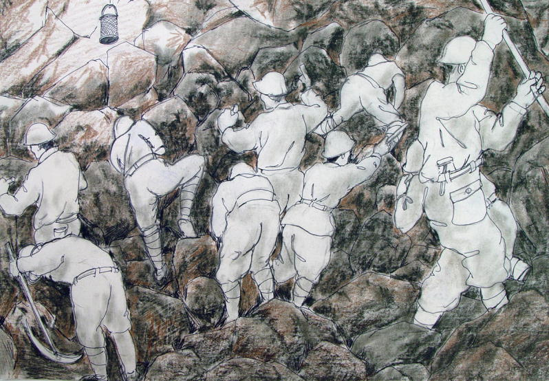
あの船を下りたのは大正十二年の九月です。ご存じの通り、その月の一日に大震災がありました。
その時わたしは健吉と、紡績工場の女工で健吉の女房になる約束をしていたイヨと三人で、門前仲町の食堂でめしを食べていました。そしたら急に恐ろしい地鳴りがして、店がゆらゆら動き出した。棚のどんぶりや皿などが、ばらばら落ちる。向いの二階屋がグラグラと傾いて、たちまち倒れた。
こいつぁ大変だ。ここにいたら家の下敷になるてんで、三人どんどん走って、数矢町の堀までたどりついた。ところが、そこにつけておいた船は、隣の倉庫が崩れてきて半分沈んでいる。なんてことだ、もう使い物にならねえ、と健吉はがっかりした。そのうち、空が赤くなってきた。イヨが、「あたしの会社だ！」と、叫んで走りだした。イヨが働いていた尼ヶ崎紡績が勢いよく燃えている。どんどん走っていくと、火の勢いはものすごい。
森下町はもう一面火の海だ。年寄りだの子どもが、わあわあ泣いて騒いでいる。
「これは駄目だ。会社に行ったってどうにもならねえ」健吉がイヨを押しとどめた。
巡査が声をからして、「被服廠に行け！」と大声で叫んでいる。わたしらは警察の言うことは聞かないで、どんどん反対方向に走って行った。永代橋まで来て向こうを見ると、日本橋から浅草にかけては、ごうごうと何百メートルもの火炎がうなりを挙げている。振り返ると、火の手はすぐ後ろだ。旋風が巻いて、荷馬車が空高く巻き上げられている。家も屋根も木の葉のように渦巻に飲み込まれて、空に舞い上がる。馬が気がふれて、道路を走り回って、川に飛び込む。
「陸軍の糧秣庫へ逃げよう」と、人波をかき分けて夢中で進んでいった。いつの間にか夜になっていたが、火勢はますます物凄い。ようやく大島川の先まで来たら轟然と地鳴りがして、火柱が立ち上った。陸軍の倉庫が焼け落ちたんです。何万という人間の悲鳴と怒号とが夜の空をぐらぐらとゆすぶって、肝が凍るようなものすごさ。到底助からない、どうあっても駄目だ、と、観念しましたが、熱くて立ってはいられない。人波に押されて相生橋へと向かって行った。橋の上もいっぱいで、身動きがとれない。そのうち荷物に火がついた。もうこのままでは焼け死ぬばかりだ。見ると橋の下に、大きな荷船が浮かんでいる。
「飛び込むぞ！」と健吉が叫んで、イヨを抱いて飛び込んだ。わたしもすぐに飛び込んだ。船には何十人もの人間が乗っていたが、誰かが手を出してくれたので、すぐに乗れた。橋からは何百という人がどんどん飛び込む。何十という人間が船にとりついて上がろうとする。二、三人は這いあがったが、船はいまにも沈みそうだ。
「だめだ、いっぱいだ」船の中のものが怒鳴る。
「殺す気か」水の中から叫ぶ。そのうち、突風が吹いてきた。船は木っ端のように流されて、燃えている商船学校のほうに近づいた。大きな建物が盛んに燃えている。このままでは焼き殺されるぞ、と大いに慌てたが、突然風の向きが変わって、だんだん流されて、ようやく隅田川の吐き出しの、佃島へたどりついた。ここは下町でもまったく無傷で残ったところです。
船を下りて対岸を見ると、火炎は夜空を焦がして、いよいよものすごい。こんな中を、よくもまあ、お互いはぐれもしないで助かったものだと、本当に喜びました。
夜が明けると、いたるところ焼け野が原。渚には何百とも知れない死体が流れ着いている。しかし人間というものは恐ろしいもので、こんな時にもちゃんと腹が減る。のども焼けるようだし、このままではいられない。とはいっても、佃島にはたいへんな数の人間が避難してきたんだから、島の人に食べ物をねだることは出来ない相談です。
それで手分けして探すことにした。わたしは何度もコークスの配達に来ましたから、このあたりはよく知っている。それで海辺をどんどん東へ歩いて行った。しばらく歩いたら新しい埋立地があって、草が一面に繁っている。
虫でもなんでもいい、口に入るものなら何でもかまわねえ、とそう思って草の中を探したら、いるいる、イナゴがわんさといるんです。長く伸びた草の茎に、イナゴが呑気に遊んでいる。それで夢中で捕りました。容れ物がないんで、着物を脱いで袖を縛って、その中に入れましたが、二時間も捕ったらいっぱいになった。それをもって帰って、三人で生のまま食べましたが、これでほんの少しだけ空腹が治まりました。
ところが翌日になると草地には人が入って、イナゴは捕り尽くされてしまった。いくら探しても一匹もいない。これには腹が立ちましたが、どうにもならない。それで健吉が、「もしかすると、炊出しがあるかもしれないぞ」と言うので、それで行ってみようということになった。
イヨは、とても歩けないと言うので、仕方がないから壊れた船の中に寝かせておきました。焼けた橋を渡って深川に足を踏み入れると、いたるところ死人の山。どこまで行っても燃えた家の残骸と死体ばかりです。どれぐらい歩いたか分かりませんが、炊出しは噂ばかりでどこにもない。だんだんくたびれて腹が立って、もうくたくたになって歩いていた。
そうしたら、あれは本所小梅町の先あたりだったでしょうか、「おい、猿がいるぞ」と、健吉が言うのです。見ると、なるほど猿が三匹、木の下で仲よく横になっている。大きな猿が一匹と、小さい猿が二匹だ。
「昼寝してるのかな」
「ここらに猿がいたとは妙だ」
二人は、こんなことを話しながら近づいて行った。そしたらそれは、猿ではなくて人間だったんです。母親と子どもが二人焼け死んでいた。体がちぢんで猿のように見えたんですね。母親は小さいほうの子どもを抱き締めている。
「こんなになっても、子どもはかわいいんだ」健吉もわたしも手を合わせました。すると、その胸のあたりでキラッとなにかが光った。
「おい、何だ」
女を起してみると、消し炭のように軽い女の胸のあたりから、銀貨がばらばらと大きな音を立てて落ちました。それは大変な量の金でした。おそらく一升桝に山盛りいっぱいはあったでしょう。
「こいつぁ儲けもんだ」
「おっと、人が来るぜ」
振り返ると、風呂敷を担いだ人の列が近づいて来る。
「警防団がきたらおしまいだ」
「この女はよほどの金持ちだな」
「ぐずぐずしているとやばいぞ」
落ちた金を全部拾ってふと見ると、母親の胸の中に、札束のようなものがちらりと見える。
「おい、大金だ。よくまあ、焼けねえで残ったもんだ」
札束は、水にでもつけてから腹に巻いたのでしょうか、表面は焼けていますが、中のほうのものは大丈夫そうです。
「だめだな、子どもが邪魔で取れねえや」
健吉が、札束の先を手でつかんで引っ張りだそうとしているんだけれども、うまくいかない。子どもが母親の腹のあたりにしがみついているから、札束を引き出せない。
「剝がしてくれよ」健吉がじれて言うので、わたしはふたりを引き剝がそうとした。ところがうまく剝がれない。
「無理にやれば腕が取れるぞ」
「かまわねえじゃねえか。死んでいるんだ」
それで引っ張ったんですが、突然子どもの焼けただれた皮膚がつるりと剝けて、真っ赤な皮膚がトロッと現れた。手の平に、なんだか気味の悪いものがくっついている。子どもが妙な目でこっちを見ているみたいな気がして、ぞくぞくする。
それで「なあ、やめようや」と言ったんです。
「うらめしそうじゃねえか。こんな女の金を取ったらろくなことにはならねえ」
「ふざけたことを言うな」
「俺はやめるよ」
「あとでつべこべ言うなよ」
健吉は、母親と小さな子どもを引き離しました。腕は皮膚がひどく剝けましたが、ちぎれはしないで、小さい黒い腕の一部は母親の体についたままでした。
「見ろ。うまく行ったじゃねえか」健吉は下着を脱いで、それに金をいっぱいにつめて腰にくくりつけ、その上から着物を着ました。
「これだけ金がありゃ、新しい船が作れるというもんだ。引き上げるか」
「俺はここで別れるよ」
「別れるだと？」
「心配するなよ、誰にも言いやしねえ」
健吉は後ろも見ずに行ってしまい、母親と子どもが引き剝がされて、地面に転がっていました。
ところで、健吉の弁護をするようですがね。これはあいつが悪いというわけではありません。あの親子は、地震になるまでは何不自由なく暮らしていたんでしょうな。女中や書生を何人も抱えるような身分だったかもしれません。それが今はこんな姿になっているというのは、なぜかというと、金のせいです。金を持っていなければ死んでから後、身を剝がれるなんてことはなかったろうに、まあ、金がなくなって、かえって身軽になったかもしれません。
こんなことは他にもいろいろあったもので、これも参考に話しておきますが、水の中で死んでいる人間の中には、指が無いものがたくさんいました。特に水商売の女が多かった。これはなぜかというと、その種の女は指にいくつも指輪をしている。ダイヤだのプラチナだの金の指輪を、これ見よがしにつけているものがいる。そんな女が火に追われて水の中に飛び込んで溺れて死んだ時、その指輪を盗もうとしたものがたくさんいる。ところが指が膨れて抜けない。それで指をハサミか何かで斬ったんでしょう。
盛り場の周りには指を斬られて死んでいる人間が大勢いました。指の無い死体が両手を空に向けて沈んでいるというのも不気味でね、死んでまで身体を傷つけられるというのも哀れです。それから後、健吉に会ったことは一度もありません。
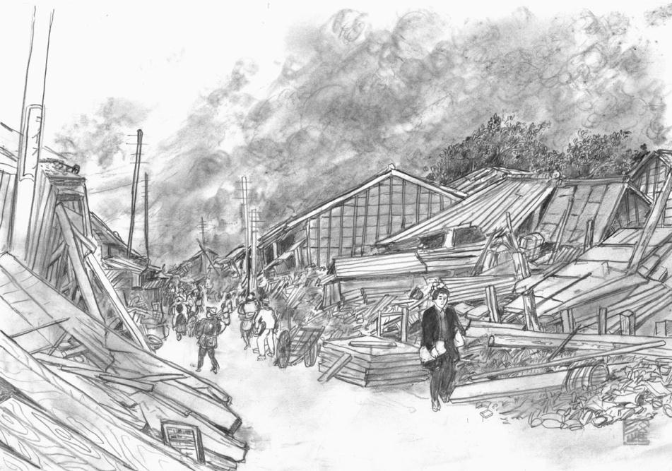
「川並の徳三親方は、部屋のものと一緒に岩崎の別邸に逃げ込んで、難を逃れました」
男は広告の紙を取り出して、マジックで焼け跡の地図を書いた。
「こういう具合に焼けましてね、深川で焼けなかったのは、ここがたった一カ所だけなんですから、親方はよほど運がいい。わたしが健吉と別れて訪ねて行った時には、親方の家はすっかり焼けていましたが、バラックが建ってみんな忙しく働いてました。なにしろ東京の半分が焼けてしまったんですからね、これから木場は気違いのように忙しくなるのは目に見えている。それで何でもいいから、とにかく手伝わせてくれというと、親方は、猫の手も借りてえぐらいだから大助かりだ、と言う。
それで、台所と家の中の下働きをやることになりました。魚屋だの八百屋、豆腐屋、物売りなんかとは毎日顔を合わせますから、ずいぶんと仲良くなったもんです。思えばわたしの一生を通じて、この時が一番のんびりした時期だったでしょう。ところがそんな具合に暢気な毎日を送っていたら、その翌年の春に、わたしの人生に転機をもたらすような出来事があった。四月の初めでしたが、親方の部屋に一人の親分が訪ねてきたんです」
これはね、当時柳橋一帯に大きな縄張りを持っていた百瀬梅太郎というやくざの親分でね、川並の徳三とは兄弟分のさかずきを交わしていたようです。
その日、百瀬梅太郎は人力車に乗って、子分を連れて遊びに来ました。茶を持っていくと、梅太郎は徳三に「兄弟、何だいこの若いもんは？ 見なれねえ顔じゃねえか」とこう聞く。
徳三親方は、実はこいつはこういうものなんだ、と話をする。と、その親分はわたしに興味を持ったらしくて、「そうかい、おもしれえ野郎だ。で、なんだい、根性はどうなんだ」なんて聞いている。勿論、下っ端はこんな親分のそばに長くはいられませんから、廊下に出て障子の陰に座ってました。
「それで、てめえ名前は何てんだ」と梅太郎は廊下のほうへ顔を向けて、ぎょろっとした目でこっちを見ました。
「伊地知と言います」
「ばかやろう、そいつは苗字じゃねえか、この世界で苗字を名乗る奴がいるか、てめえ自身の名前だよ」
「栄治です」
「で、てめえは何になろうってんだ」
「それが考えつかなくて弱ってるんです」
「ふふん」梅太郎はにやりとすると、
「おめえ、いっそ、バクチ打ちにならねえか」
「へえ」
「そんな変な顔をするな。いいか、俺の見たところ、たしかにおめえは職人なんぞになるよりやくざに向いた面構えしてるぜ」
「なるほど、そうかもしれねえ」と、徳三親方が横から口を出しました。「ときどき、ここでやることもあるんだが、いい度胸をしている、と俺もつねづね見ていたんだ」
梅太郎は長い煙管を取り出して、口にくわえました。後ろにいた子分が手際よく火をつけると、梅太郎はうまそうに一服吸って、鼻から煙を吐きながらこっちを見ている。
「てめえの面は、どう見ても、ここにはいられねえ面だ。こんなところにくすぶっていたんじゃあ、百年いたって、うだつがあがらねえ。人間には性というものがある。ここにいる兄貴分の奴らは川並になる性に生まれついたんだ。ところがやくざに生まれついた人間には、とうていあの真似はできねえ、おめえも見たところ、どうやら真面目には生きられめえ」
わたしは、それまでやくざになろうなんて考えてもいませんでしたが、言われてみると、なるほどという気がする。それで、「親分のいいように世話していただきたいと思います」と、頭をさげた。梅太郎はうなずいて、
「よし、そういうことなら俺が世話してやろう。だがな、俺がおめえを世話するといっても、俺のところへは事情があって入れてやるわけにはいかねえんだ。幸い兄弟分で出羽屋という貸元がいる。その兄弟ならおめえの面倒を見てくれるだろうから、そこへあずけてやろうじゃねえか」
こうして百瀬の親分に渡りをつけてもらって、それからひと月ほどした大正十三年五月に、わたしは出羽屋に預けられることになったんです。
百瀬の親分に連れられて行ったのは五月の端午の節句の日でね、出羽屋の親分の住まいは浅草の繁華街の中ほどにありました。浅草は、新畑町一丁目一番地、寿司屋横町の裏手にあたるところです。震災の後でしたが、さすがに浅草は大したところで、バラックではない、ちゃんとしたお店がどんどん建っている。今で言う建築ブームてんでしょう、町全体に活気があふれてましたよ。
もちろん浅草寺は、あの大火事でも焼けないでそのまま残ったんです。周りは全部焼けたんですが、お寺と境内は助かった。あの時ものすごい炎がお堂に幾度も吹き付けたそうですが、そのたびにお堂から風が吹いて、火の方向が変わったというんです。ここには十万以上もの人間が避難して、その有様を固唾を飲んで見守っていたそうですが、とうとう火が遠のいて行くと、みんな感泣して観音様のおかげで助かったと、ひれ伏して拝んだそうですよ。わたしが親分のところへ行った頃もそれは大変な参詣の人で、なるほど観音様は有難いものだと、レンガ屋の清ちゃんの話を思いだしたものです。
ところで新畑町の出羽屋の親分が住んでいたのは、ごく目立たない、あたりまえの家でしたが、百瀬の親分の後について奥の方へ通って行くと、出羽屋の親分はちょうど時代劇に出てくるような、立派な長火鉢のある部屋でわたしらが来るのを待っていたんです。
親分同士がひと通りの挨拶をすませて、それから、百瀬の親分がこれまでのいきさつを話して、
「まあ、ひとつ、よろしく頼む」と、言うと、出羽屋の親分は結城紬の着物を着ていましたが、腕組をしてわたしの顔をつくづくと見て、
「なるほど兄弟、分かった。俺が世話して、一人前にしてみよう」と、こう言った。その様子が本当に貫禄がある。それでわたしは、この人の子分になるんなら不足はない、と心の中で納得したんです。
出羽屋の親分というのは、本名は山本修三といって浅草ではよほど人気の高い、男気のある人でしたね。わたしはこの年になるまで、世間から親分と呼ばれているやくざとずいぶんつき合いましたが、出羽屋の親分の右に出る人物はひとりもいませんでした。
親分は、普段は厳しい人でしたが、根は本当に情けのある優しい人でしたよ。やくざというのは、世間では恐ろしい人間の代表のように言われていますが、親分になるような人間は、根性があるとか腕っぷしが強い、なんていうだけではまったくだめです。そんな人間はいくらでもいますからね。大切なのは、親分の為だったら命も惜しくない、と子分が惚れ込んでしまう器量です。
これは口で言うのは簡単ですが、実際にはなかなか身につくものではありません。出羽屋は、れっきとした名前の通った一流のやくざでしたが、実にひっそりとしていました。親分の家は表通りの寿司屋の持ち物で、親分は、大家の寿司屋には盆暮れには、ちゃんと自分で挨拶に行ったもんです。金には不自由しない身分だったのに、素人の持ち家を金の力で無理矢理買ってしまわないところが、親分らしいところでした。
出羽屋の渡世は、言うまでもなくバクチです。今はやくざが土建業をやったり、麻薬だの不動産、あるいは金融などに手を出して金を稼ぐということが多くなりましたが、昔はそうではなかった。やくざ稼業というのはバクチ専門です。だから、あの時代にはやくざがバクチ以外の仕事で稼いだりすると、
「なんだい、ありゃあ、二足のわらじを履いていやがる。バクチが下手で食っていけねえからあんなしみったれたことをやっていやがるんだ。ありゃあ、本物じゃねえ」なんて、馬鹿にされたものです。
子分も今のように何百なんて持っている親分はいない。バクチを取り仕切る人間と、縄張りを守る人数がいればいいんですから、いくら多くてもせいぜい数十人です。出羽屋は浅草の観音様の周辺から仲見世一帯、国際劇場の裏のほうまで縄張りを持っていましたから東京でも一等地です。それでも居付きの子分は五、六人で、自分の家を構えて、賭場に通ってくる子分を入れても三十人程度でした。
賭場は路地をはさんで向いにありました。見かけは普通のしもたやですが、男たちがたくさん出入りしていて何もやらないということでは世間の聞こえが悪いので、町の人には、「大道具屋」ということにしていました。浅草にはたくさんの芝居小屋があります。芝居にはいろいろな道具が必要ですから、出羽屋ではその大道具を作る仕事をしていることにしていたんです。実際、賭場の隅のほうにはいろいろな芝居道具なんかも置いてあった。けれどもカムフラージュですから、道具は置いてあっても勿論芝居の仕事はしていない。
夜になれば、丁半の世界です。こっちは見習いですから、バクチ場には出入りが出来ない。見習いというのは下働きとして住み込んでいるんですが、これはどれぐらいの根性があるのか、やくざの水にあうかどうかを試しているんですね。
何をやらされたかというと飯炊き、拭き掃除、洗濯、それから買物。その他には、出入りの魚屋だの米屋、味噌屋、酒屋なんかと仲よくなること、町内の道路をきれいに掃き清めること、まずそんなことです。
出羽屋には女中が一人もいませんでした。だから、中のことは三下が全部やらなければならない。なんで女中を雇わないんだろうと最初は不思議でしたが、その訳は、四郎兄いが教えてくれたんです。この兄貴はわたしが入る前は一番の下積みでしたが、新入りが来たんで非常に喜んでね、顔が真四角で、いつも威張ってました。
「いいか、もしもだな、サツの手入れを食らってだな、捕まってみろ。どうなる。誰がやった、どんな人間が遊びに来ていた、どれぐらいの金が動いた、なんてことを調べられる。こんなとき、根性のある奴なら命が無くなっても知らぬ存ぜぬで押し通すが、女はそうはいかねえんだ」
兄貴の説明では、この世界では、女を信用していないというんです。
「つまりだな、女というものは弱いものなんだ。喋るまいと覚悟を決めていても、着物を剝ぎ取られて、すっ裸にされてだ、大事なところを責められたら、とても辛抱できねえ。最後には喋っちまう。そうなりゃあ一家はおしまいだ。だから、ここには女はいっさい置かねえで、何から何まで俺たちがやるというわけよ」
すぐ上の兄貴分には、四郎兄いの他に、もう一人春吉という兄貴がいましたが、実に二枚目のいい男で、頭も切れるので親分も重宝がって目をかけていた。賭場の仕事をやるようになると、この春吉の兄貴がやくざの世界の細かいオキテを教えてくれました。
目上目下に対する挨拶から口の利きかた、相づちの打ちかた、あらゆるところに本当に細かい決まりがある。普通の世界からは程遠い封建的な世界です。女と遊ぶについても、自由に遊ぶというわけにはいかない。
「堅気の女には手をだすなよ」と、春吉の兄貴は言うんです。まっとうな家の娘に手を出したりすると、「あの野郎はだらしのねえ野郎だ、遊ぶ金もねえし、働きも悪いから堅気の女なんぞに手を出すんだ」ってことになって、相手にされなくなる。
「仮にだ、おめえが素人に迷惑をかけるようなことを繰り返せば、どうなるかってえと、縁切り状を渡される。つまり、やくざの世界から破門されるってわけだ。親分から破門されたら、そのやくざは、もう行きどころがねえ。日本は広いようで狭いもんだ。誰も相手にしちゃくれねえよ」
「この世界ではな、何が一番大切かというと根性だ。根性がねえ奴は、この世界にゃいられねえ。いいか、家一つをとってみても、大黒柱になる材木もあれば、便所の羽目板になる板もあるだろう。それとおなじようにだ、根性がなければ、いつまでたっても低く見られる。三下でいなけりゃならねえ。反対に、根性が座っていれば、やくざ仲間だけじゃなくて、警察にも一目も二目もおかれるようになるんだ」
春吉の兄貴は、やくざはなんと言っても力がなけりゃやってはいけねえ、と常々言ったもんです。
「浅草に出羽屋が縄張りを広げていられるってのは、どういうわけだか考えて見ろ。いいか、誰が見てもここは大したところだ。盛り場が多いから客種もいい。こんなところを他のやくざが欲しくねえわけはねえだろう。だからだ、力が弱くなれば、誰かが縄張りに入ってくる。これを押し返せなくなったらおしまいなんだ。だから弱味を見せちゃならねえ。
てめえが仮に、どこかの野郎と喧嘩になったら、どんなことがあっても相手をぶちのめさなけりゃあ駄目だ。てめえが切られてそのまま切り返さなかったら、てめえはどうなろうとかまわねえが、出羽屋が軽く見られちまう。
『なんだい、出羽屋の野郎は相手に切られて、かたきも取れねえで黙っていやがる、出羽屋も落ちたもんだ』とこうなる。だから、やられればやり返す、というのがきまりなんだ。
負ければ、死ぬか病院に入るかだ。そうして、勝てばムショに入るというのがこの世界よ。何が何でも、やるときには何としても勝たなければならねえのよ。けれどもこっちがちゃんとしていれば、喧嘩なんぞにはならねえもんなんだ。なんといったって大事なのはお客だからな、やたらと肩をつっぱらかして素人に恐ろしいと思われたら客足が遠のいちまう。
だから、能ある鷹は爪を隠すというわけで、用心することに越したことはねえが、周りの人間はできるだけ大切にして、町の人間から、出羽屋の若いもんは親切で大したもんだと、こう言われるようにならなけりゃならねえのよ」
兄貴たちにいろいろ教えられながら、一年余りの間台所の仕事をしてました。そのうち亀蔵という新入りが入ってきましたが、これはわたしの最初の弟分で、これとは長くつき合う仲になりました。
台所の仕事というのは、やってみると面白いものです。買物に行けば、あちこちの店の小僧と顔を合わせますが、向こうはこっちが出羽屋のものだと知っているから遠慮する。それでいい気になって、でかい面をするようだと出羽屋の評判が落ちますから、ずいぶん気を遣って口をききます。
魚屋だの八百屋、豆腐屋、物売りなんかとは毎日顔を合わせますからね、ずいぶんと仲よくなったもんです。朝早いのは何といっても魚屋です。
昔は冬になると東京湾でいわしが山のようにとれた。隅田川の吐き出しには震災の時、健吉たちと逃げ込んだ佃島がありますが、あそこはほとんどが漁師町でね、この年の暮れには、もとの静かさを取り戻して、桟橋にはいわしを入れた樽が歩く所もないほど並んでいる。これを問屋と魚屋が取引して、仕入れた魚を天秤棒で担いで売って歩く。もちろん、まだ陽のあがらない暗いうちからいい声で売り歩くんです。
「いわしー いわしー」
「魚屋さん、頼むよー」
こっちは大所帯ですから、百、二百と、まとめて買う。魚は捕りたてだからぴんぴんしていて、そっくりかえって、肌なんかぴかぴか光っている。目の玉の赤いのなんか一ぴきもいない。
買った魚は摺鉢であたって団子にして、お汁の中に入れるといわし汁になる。こいつが旨い。それからいわしの腸を指で、ツゥー、と、きれいにとって、頭も指で落として、肉と皮の間に親指を差入れて、すっと押すと、包丁もなにも使わないできれいに皮がむける。活きが悪いと、こんな具合にはいかないが捕れたばかりのものは簡単にむける。これを薄く切ってそのまま醤油につけて食べると、こいつがまた旨いものです。
村松の兄貴なんぞはわたしの手つきを見て感心している。
「おめえ、そんなのをどこで習ったんだ」
「川並の親方のところですよ」
「ヘー、それにしても器用なもんだ」
わたしが川並の親方のところにいたときに、おきんという昔からの女中がいて、これが一度だけいわしの皮のむきかたを教えてくれたんです。それでわたしはちゃんと覚えて、次の時からは独りで、つるつるとむくもんだから、おきんは驚いて、栄治はなかなか勘がいいじゃないか、なんてほめて、それからはもっぱら皮むきをさせられたというわけです。
あの頃は墨イカなんぞもたくさん捕れて、よく売りに来た。魚屋もこっちは上得意だから、いいものが入ると真っ先に持ってくるんです。墨イカは身の厚いところは刺身で食べる。足はこまかく切って、塩をまぶして塩辛にする。朝こしらえた塩辛を夕方、熱いお湯をかけてお茶漬けでササッと食べると、これがまたこたえられない。ハゼなんかも大きいのが捕れたが、これは天ぷらにすると旨い。油ののった大きいのは、七輪で焼いて、塩を少しつけて食べる。貧乏人はハゼを正月の魚にとっておいて、元旦に食べたものです。
永代橋の向こうの相川町とか深川の蛤町などは浅蜊の本場ですから、そこからも毎朝売りにきたものです。これがまた朝が早い。「あさりー むきみよー あさりー むきみよー」こんな声が聞こえると、「あさり屋ー」と叫ぶ。そうすると、「ヘーい、まいどあり」と言って、目の前で浅蜊をむいて、ザルの中に入れてくれる。これは醤油をつけて食べると、こたえられないほど旨い。
山本の親分は体が弱い人でしたが、それだけに栄養には気を遣っていて、しじみだの浅蜊の汁は特に好物でね、わたしが作ると何杯もお代りをしたものです。浅蜊売りは花見前までしか来なかった。そのころになると子を産むので、栄養がみんな子どもにいって味が悪くなる。だから寒いうちの浅蜊は旨いものだったんです。
兄貴たちは朝飯を食べると、みんな出かけてしまう。わたしは家の中をそっちこっち掃除したり片づけている。そうすると物売りだの物乞いが来る。大きな天狗の面を背中に担いだ念仏の行者なども来る。これは行者とはいっても一種の乞食ですから、むにゃむにゃと、訳のわからない念仏を唱えているだけです。
川並の徳三親分のところにもこの種の行者がよく来ましたが、金をやると、女中のおきんはひどく怒る。「無駄金を使うんじゃないよ！」なんて、行者がいる目の前で怒鳴る。この女は人のやることに反対することに生きがいを感じているような女でね、まったくいいところのない女でしたが、出羽屋ではそんなことはありませんでした。来る人間にはなるべく丁寧にしろというのが親分の口癖でしたから、毎日来てもなにがしかの金をやるし、乞食なんかが来ると、金の他にお握りとか魚の余りものを必ず包んでやりました。
昔のやくざというものは、とにかく人気というものを大切にしていましたから、隣近所の付き合いは本当に大事にしたし、一度切りしか会わない相手にも、すげないことは絶対にしないようにしていたんです。
出羽屋に入って二年近くたってわたしはドバ、つまり博打場への出入りを許されましたが、それからほんの数カ月してバクチの手入れがあって、わたしは刑務所に入れられました。これはあとでお話ししますが、捕まる少し前に本当に思いがけない出来事があったんです。それはまるで芝居みたいな出来事でしたよ。
新畑町の賭場に、煙草屋のまっちゃんというのが出入りしていました。七つばかり年上の、細面のきりっとした目つきのいい男で、いかにも女を泣かせるような面をしている。バクチの腕は下手の横好きでさっぱり目が出ない。商売は煙草屋なんていってましたが、本当かどうか、それは分かりません。この男とはどういうわけか気があって、いろいろ話をするようになった。まっちゃんは、ある時、
「栄治、おめえはだいぶ訛りがあるようだが、どこの出なんだ」と聞く。それで、宇都宮だと答えると、「そうかい、俺は二度ばかり行ったことがある。日光の東照宮も見たが、ありゃ大したしろものだ」なんて話をする。
そのうち、まっちゃんが「俺のところに飯を食いにこねえか」と誘うんで、遊びに行った。佃島の向こうに、鉄砲洲というところがある。土砂がたまって鉄砲の形になったんで、そんな名前がついたってことですが、江戸時代にはそこで大筒の試し撃ちをやったこともあるらしい。深川と違って、大きい建物がずいぶん建っていましたが、まっちゃんの住んでいたあたりは、家がごちゃごちゃと固まっていた。
まっちゃんは、ちょっと綺麗な女と同棲していたんですね。訪ねて行ったのは昼時だったが、もうちゃあんと料理が卓袱台の上にのっていて、酒が用意してあった。
「なんにもねえが、ひとつやってくれ」なんて、まっちゃんが言って、一緒にいる女が酒をすすめてくれて、よもやま話をしながら、いい気持ちになっていた。そうしたら、玄関先で、「兄さん、姉さん、こんにちはー」なんて女の声がする。
わたしはその声を聞いたとたん、妙に胸騒ぎがした。どこかで聞いたことがあるような気がしたんです。まっちゃんの女が立ち上がって、玄関に出て、「あら、いらっしゃい、なに買ってきたの」
「蛸、大きいでしょう。誰かお客さんなの？」
「ええ、上がりなさい」なんて声がする。
そのうち女が蛸を下げて入って来た。そして、その後ろから若い女が入って来たんですが、一目見て、わたしは仰天した。女も、アッと棒立ちになった。なんとそれは、宇都宮の裁判長の妾の、お佳だったんです。
お佳がまっちゃんの妹だというんですから、世間はまったく広いようで狭いものです。それから四人で飯を食べましたが、お佳が以前とちっとも変わっていないのには本当に驚きました。
お佳に言わせると、こっちは非常に変わったそうです。それにしてもお佳の後を追いかけて東京に出て、それから三年余りたって、こうして会って見ると、宇都宮の頃が夢のようだ。お佳は今も裁判長の妾のままで品川に住んでいるという。
「栄治はなんてったって、出羽屋でこれから売りだそうってえ、いい男なんだ。裁判長の妾のおめえがあんまり近づかねえほうが無難だぜ」なんて、まっちゃんは半分からかいながら、ちょっと心配そうな様子だ。ところがお佳はすました顔で、「栄治さんも、きっと惚れた人がいるんでしょうから、わたしのことなんか忘れたでしょうよ」なんて言って、流し目にこっちを見る。それはあの頃と同じ、ぞっとするほどの色気です。
お佳にはこの後、三度ばかり会いました。けれども、そのすぐあと賭場に手入れを食って巣鴨に入ってね、出てきてからはなんだか一人前のやくざになったような気がして、その後は、一度も会いに行きませんでしたね。
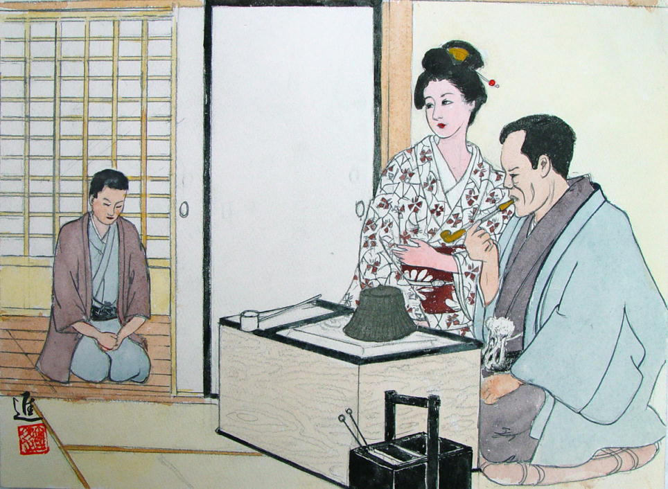
最初に刑務所のお世話になったのは、先ほどもお話ししたようにわたしが十九の時です。秋の終わりでね、岡田の兄貴が国際劇場の裏手の賭場で三十人ばかりの客を集めて、いつもの通りバクチをやっていた。そしたら、突然、ドヤドヤッと十人余りの刑事と巡査が踏み込んできたんです。
「動くなあっ！」なんて大声で口ぐちに叫んで、それは恐ろしい剣幕。こうなったらバクチをやっている方は、絶対に暴れるなんてことはしません。暴れれば刑が重くなりますから、おとなしくしていたほうが利口です。もちろん隙があれば素早く逃げる算段をしますが、逃げられないと決まった時には抵抗せずに捕まるのがいいんです。
けれどもわたしは、手入れというのが初めてですから、頭にカッと血が上った。それでとっさに天井からぶら下がっている電灯のコードを思いっきり引っ張った。火花が散って部屋の中は真っ暗になった。もう蜂の巣をつっついたような騒ぎです。巡査が懐中電灯なんかつけても何にもならない。みんな逃げちまって、捕まったのは六、七人の客だけです。
翌日になって出羽屋の方へ象潟警察署から刑事が来た。
「なあ、出羽屋の。知っての通り、昨日俺たちは岡田の賭場に手入れをした。ところが誰かが電気を切りやがって、みんな逃げちまった。とんでもねえ野郎だ。あそこにいた奴を署に出頭させてくれ」と、刑事は親分にこんな風に言う。親分は、
「なるほど、そんな次第なら早速、子分らに聞いてみましょう。もしそんなことをした奴がいましたら、間違いなく出頭させますから、しばらく待ってやっておくんなさい」なんて答える。そうすると、刑事は「そうか、必ず出頭させろよ」と、そう言って帰っちまった。
そこで親分はみんなを集めて、
「聞いての通りだ。警察も手入れをして、誰も捕まえなかったてんじゃ面子が立たねえ。電気のもとを切ったのは栄治だそうだな」
「そうです」
「警察はおめえが行っても満足はしめえ。岡田を捕まえに行ったのに、駆出しが出ていったんじゃひどく怒るだろうよ。だが、岡田は賭場には欠かせねえ体だ。どうしたらいいかな」と言う。それでわたしは膝を乗り出して、
「行かせてもらいてえと、思います」と、こう頼んだ。
「おめえ、本心、行きてえのか」と親分が聞く。
「本心、行かせていただきてえと思っています。よろしくお願いいたします」
「そうか、それならおめえに任せねえでもねえが、ここんところは他のものの考えも聞いてみねえとな」と親分は、まず岡田の兄貴に、「栄治はああ言ってるが、おめさんはどう思う」と聞く。すると兄貴は、
「こいつはまだ若いが、根性があるから心配はねえでしょう」と答える。それで親分はもう一人の幹部で、親分の右腕の村松の兄貴に、「どうだい、村松の考えは」と、念を入れて尋ねる。そうすると村松の兄貴は、
「出羽屋の面子を潰すようなことは万に一つもありはしねえでしょう」と、こう答える。
それで親分もうなずいて、
「栄治、おめえ次第で岡田のシマがどうなるか決まるんだ。しっかりやって来い」と言った。それで万事決まったんです。嬉しかったですね。実に晴れがましい気持ちで浅草の象潟警察署に出頭しました。
昔は警察は、実に威張っていました。なにより口の利き方が乱暴です。兄貴たちから警察というのはどういうところかいろいろ聞いてはいましたが、聞くと見るとは大違い。最初に顔を会わせたとたん、「なんだおまえは、何しに来たんだ」と、こんな風ですから、一事が万事なんとも恐ろしいところです。
こっちは名前を名乗って、「昨日ドバを開いたのはてめえです。神妙に致しますのでよろしくお願いいたしやす」と、こう兄貴に教わった通り挨拶したんですが、巡査は、「なんだ、おまえは出羽屋の三下か。よくもそんな面ぁ下げてのこのこ出て来やがったな。後悔するなよ」なんて言って、穴のあくほどじろじろ見回す。それから、「そこで待っていろ」と言って係の刑事を呼んできた。刑事はわたしを見て、ひどく不機嫌な顔をしました。
あとからもう一人太った髭の刑事が来て、これはもの凄く怒りました。
「貴様が賭場を開いただと？ 誰に頼まれたんだ。ふざけるな！ ここをどこだと思ってるんだ」とひどい剣幕。出羽屋の中でも顔の知られた兄貴ならともかく、下っ端が出てきたので腹が立ったんでしょう。
「おい、三下、こっちはな、貴様がいつ出羽屋の子分になったのか、ちゃあんと調べがついてるんだ。貴様みてえな新参者が、出羽屋の賭場をまかせられる理屈がねえじゃないか」
と一人が陰険な物言いで言う。太った刑事が、
「このやろう、いっぱしのやくざ気どりやがって。警察をなめてやがるのか」なんて怒鳴って机を叩く。いやそれは恐ろしい形相。
覚悟はしてましたが、地獄の鬼というのはこんな顔だろうとつくづく刑事を眺めましたね。けれども、いくら刑事が恐ろしいからといって、「恐れ入りました、実は賭場を開いたのは兄貴のだれそれです」なんてことは、死んでも言えない。
それで、「わたしに間違いありません。どうぞお取調べ下さい」なんて頑張っている。刑事は本気になって怒って、「こうなったら体に聞いてやるまでだ」と言う。ここまでくると、こっちも腹がすわってくるから、やるならやれ、と、覚悟を決めている。
取調べ室は畳敷でした。十畳ぐらいでしたでしょうかね。同じ部屋で窃盗犯だの詐欺師だのが取調べられている。となりの刑事が面白がって横から、
「ふざけた三下だ。締め上げてやったらいいぞ！」なんて茶化す。それで後ろ手に縛られて着物の裾をまくられて、コンクリートの床に座らせられました。太った刑事が、
「おおい、小使い、薪十本ばかり持って来い！」と言うと、小使いは、
「ハーイ」なんて威勢よく返事して、薪を持ってくる。これをコンクリートの上に並べる。
「おい、ここへ座れ」と言う。薪も丸いままならいいですがね、薪を割った三角形の尖ったところです。尻を丸出しにして、その上に腰を下ろせ、と言う。
「どうだ、痛いか。痛いかと、聞いているんだよ！」
刑事は言いながら頭を何度もこづく。
「なるほど、いい度胸だ」もう一人の刑事がわたしの背中を裸にする。
「吐くんなら、いまのうちだぞ」そう言って、まず竹刀でなぐる。取調べの専門家ですから急所を心得ている。うまいものです。頭だの胸は叩きません。尻の周りの柔らかいところ、太股なんぞを叩く。これは痛いけれども、骨に傷がつくということはありませんから、叩くほうも思いきり叩ける。そのうち、ただ叩いたのでは効果がないと分かると、
「それじゃこれはどうだ」なんて言って、刑事がわたしの股の上にひとりずつ乗ってさあどうだ、さあどうだ、という。尻は薪のとがっているところに乗ってるんですから、大の大人が股に乗ったら肉が薪に食い込んで血が出ます。それだけじゃなくて、
「ギッコチッコ、ギッコチッコ」なんてかけ声をかけて、二人でゆすぶる。歯を食いしばって我慢していますがそうなると、自然に声が喉から出るもんですね。
刑事はわたしの頭に手を回して、「なかなかの野郎だ」なんて言いながら、どんどんゆすぶる。夢中で我慢していたら、いつのまにかコンクリートの上に横になってた。体じゅう水だらけです。気を失ったんで水をかけられた。
「このやろう。これで終わりだと思ったら大間違いだ」刑事は言って、また股にのぼる。そうして、また、ギッチラコ、ギッチラコとかけ声をかける。苦しいもなにも言いようがない。刑事は、「見かけより骨がある野郎だ」なんて言いながら、にやにやしている。
ところでことわっておかなければならないのは、他の犯罪の時は知りませんが、バクチの場合、警察は拷問はやくざにしかやらないものです。知っている限りでは客にはやりませんでした。というのは客は素人ですから、ちょっと拷問すればなんでもしゃべります。ところが裁判の時に、実は取調べの時に拷問を受けたのでああ言いましたが、実はあれはみんな嘘です、やむを得ず言ったんです。なんて言われて、これに腕の立つ弁護士なんかがついていたら取調べをした刑事は首が飛ぶ恐れがある。
だから素人にはあんまりひどい取調べは一般にはやらない。それじゃ、やくざは同じように裁判で警察のやり方をバラしたりはしないのか、というと、そんな馬鹿なことは絶対にやりません。そんなことをしたら、後が大変です。
「あの野郎、飛んでもねえ野郎だ。あいつのために二人左遷された。こうなったら手加減する必要はねえ」なんてことになって、賭場の周りに巡査を配置して四六時中見張らせたりする。こうなると客は、恐ろしいから絶対に寄りつかない。たちまち賭場は干乾しになっちまう。つまり、警察に徹底的に締め上げられたら、やくざは食っては行けない。だからやくざは、どんなにひどい取調べを受けても、死ぬほど苦しい目に遭わされても、裁判でバラすというようなことはしないんです。警察もこいつらはいくら痛めつけても大丈夫だ、ということを知っているから安心して痛めつける。
やくざの世界では、警察で手酷い取調べを受けて、それでも白状しなかったというのがひとつの勲章になる。警察も、これだけ絞っても頑として吐かないということになると、一人前のやくざとして扱ってくれるようになる。どれぐらい締め上げられたか、なんてことはすぐに刑事仲間の評判になるし、組のやくざ仲間にはたちまち伝わる。他のやくざの噂になりますから、最後まで我慢すれば箔がつく。反対に痛さに耐えられないで白状したりすると、これもすぐ伝わって、「なんだい、あいつは普段はえらそうなことを抜かしやがって、腐った豆腐みてえな野郎だ」とレッテルを貼られて相手にされなくなる。こうなると、もう駄目ですから、やくざの世界ではいつまでいても下っ端でいなければなりません。
そんなことは百も承知だから最後まで黙り通して、刑事もこいつは到底本当のことを吐かない奴だと見切りをつける。そうするともうこっちのもので、調書も、賭場はわたしが開いたというように書く。
それで裁判です。裁判では、調書を見て裁判官が、これに間違いはないか、と尋ねるので、間違いはありません、と答えて、懲役三カ月という判決を受けた。こうしてわたしは巣鴨の刑務所に大威張りで行ったんです。
今と昔とでは刑務所の役割がだいぶ違います。どう違うかというと、今は一種の更生施設のようなものですが、昔は懲罰を与えるところであったということです。悪いことをしたんだからその償いに苦しい目に遭わさなければならないんだ、という考えが一般的であった。
だから当時の監視の役人は、情け容赦がなかった。貴様らの命を握っているのはこの俺たちだ、そんな態度であったんです。刑務所に入ると赤い着物を着せられます。お宮の鳥居なんかが赤く塗られているでしょう、丁度あんな色ですね。しかし色がちゃんとあればいいほうで、大体は洗いざらしの継ぎはぎだらけで、生地もすっかり薄くなって、まるで蚊帳のようになっている。透かして見ると向こうが見える。
あそこに入ったのは寒い時期でしたから、木綿の下着と足袋をくれました。そのほか自分が寝るための蒲団が一枚と毛布、それから箱膳といってご飯をいれる茶碗と味噌汁椀、ニュームの小皿が入っている箱を持たされる。
入れられたのは大部屋で、十二人いました。そのころは、まだ牢名主のような制度が残っていた。わたしは入口に座って、「みなさんひとつ、よろしくお願いいたします」といって頭を下げた。そうすると奥の古参の罪人が、「おまえさんまだ若いようだが、こんな所でも住めば都だ、仲よくやってくれ」なんぞと声をかける。まあこんなふうにして入牢したわけです。ところがなんだか知らないが、その時の態度がどこか生意気だったんでしょうかね、入牢したその日に騒ぎが起きて、「反抗罪」というのになって酷い目に遭いました。
わたしが部屋の隅に座ると、となりに座っていた背の丸い男が、なにやかやと嫌みを言い始めた。顔がすすけたように灰色で、まだ三十を少し過ぎたばかりだろうと思えるけれども半分白髪が生えている。歯はまっ黄色で腐ったタマゴのような臭いがする。その男がなんで腹が立ったのか分かりませんでしたが、いきなり突っかかって来た。
「おめえは名前はなんていうんだよ。何だって聞いているんだ！」その言い方が何ともとげとげしい。はじめから喧嘩腰ですから、こっちもムッとします。わたしは入る前に、春吉の兄貴から、こういう場所では他人の事をいろいろ聞いたりしちゃだめなんだ、と教えられていました。
「いいか、俺たちと普通の罪人とは違うんだぞ。俺たちはムショに入れば箔がつく。ところが他の人間は罪人だ。罪人てのは、あれこれ悪いことをして、警察でさんざんしぼられて、裁判でいじめられて、あげくのはてに牢屋に送られてくるって寸法よ。
それだから罪人てのは、せめて牢屋の中ぐれえはゆっくりしていてえもんなんだ。世間で起きた悪いことはすっぱり忘れてのんびりしていてえのよ。だから牢の中では、世間でやったことをなんやかやと聞かねえ、ということになってるんだ。自分から進んで喋るぶんにはかまわねえが、こっちからは何にも聞かねえのが礼儀だぞ」
春吉の兄貴は、この巣鴨に二年前に世話になっていますからね、それで先輩の話を熱心に聞いて、牢屋というのはそんなところだろうと考えていたんです。ところが隣の男はなんだか知らないが、やけにうるさい。はじめのうちは我慢していましたが、だんだん腹が立ちましてね、大きな声を出してしまいました。
「少し静かにしませんか、にいさん」
「なんだと！」
「こっここっこと、ニワトリみてえにうるせえと言ってるんだよ」
まあ、こんなことを言われればたいがい怒ります。男は血相を変えて立ち上がった。
「この野郎、ここでそんな口をきいて、どんなことになるか承知していやがるのか」
男は、わたしの着物の襟を取って、「立ちやがれ」と、怒鳴った。それでこっちは、逆に相手の右手をねじ上げて、張り飛ばした。男は大きい声を張り上げましたね。看守が飛んで来てたちまち手錠をかけられた。ところが相手の男は、手錠をかけられるどころか何にも言われない。馬鹿野郎、と舌を出しそうな顔をしている。
「なんだってんだ！」
「やかましい。だまらねえか！」
こんな訳の分からないことはありません。看守が、なんであいつの肩を持つのか分からない。馬鹿ばかしい。わたしは廊下に大の字に寝そべりました。看守は手錠をかけたまま引きずろうとする。
「起きろ、この野郎。まったくふざけた野郎だ！」
看守はもう一人を呼んで、顔を殴りつけました。そうして半分引きずられて二階ヘ連れて行かれたんです。
刑務所というところは見通しがいいように出来ている。わたしは二階へ連れて行かれました。周りの囚人が猿みたいに鉄棒につかまって見物している。手錠の片方を手から外して、床の鉄棒にはめる。看守長が「ケツまくれ」と、こう言うと副担という看守の助手みたいなのが着物を背中までまくりあげるわけです。次に「足をしばれ」と、看守長が言う。そうすると麻紐で両足首を鉄棒に縛り付ける。こっちは鉄棒の上に四つんばいになったまま身動きが取れない。
「そんな面をしていられるのも、いまのうちだ。ここしばらく静かだったのが、貴様が入ったとたんにあの騒ぎだ。根性を叩きなおしてやる」
昔の刑務所の懲罰というのは今からは想像できないほど凄いものです。警察の拷問が素人の相撲だとしたら、刑務所は本場所の相撲。それぐらいの違いがある。警察は容疑者の取調べだけれども、こっちははっきりした囚人ですから遠慮というものがない。むしろ痛めつけることが看守の役割だ、ぐらいに思っている。懲罰を加えるというのが看守の役目ですから、容赦というものはぜんぜん無い。
何で殴るのかと思っていたら、水道のゴムホース、あれを六尺ほどの長さに切ったもので叩く。こいつは効果があります。硬い棒で叩かれるよりも遥かにこたえる。ビシーッと尻の肉に当たると、肉の中まで食い込んで肉をそぎとって行く。わたしはいろいろな痛い目に遭いましたが、あれほど痛い目に遭ったのは数えるほどしかありません。奴隷が鞭で叩かれる場面が映画なんぞに出てくるでしょう。あれはやられたものでなくては絶対に分かりませんね。音を聞いただけで震え上がってしまう、肌が総毛立つんです。
ビシーッと打たれると、骨の髄がむしりとられて、頭の芯がグラグラッとする。そしてその瞬間、周りが見えなくなります。看守というのは実に急所を叩くのがうまい。どこを叩いたら一番苦しむかということをよおく知っている。背中を叩くと、ゴムの先端が腹に絡まって剃刀の刃のように皮を切る。ピーと血がにじみます。わたしはそれでもここで声を出したら男がすたると思いましたから、必死でこらえていた。十五回まで数えましたが、後は覚えていませんでしたね。
口から呻き声が漏れるのをこらえるのにせいいっぱいで、あとは何にも分からない。空中でヒューッと管がうなって来ると、全身の毛穴がゾクゾクッと震える。ビシーッと当たると骨が砕けたかと思う。それでも必死で鉄棒に捕まっていると、またヒューッと呻り声を上げて飛んでくる。この時の音の恐ろしさに比べたら、戦争の時の爆弾音なんかなんでもない。あれでは獄死したものもずいぶんいたでしょう。
あの頃は若かったんで耐えられたんでしょうが、それでも解放された時には、息をすることも出来なかった。寝ると痛いから夜も座っている。壁に寄りかかると、骨がきしむような気がする。それで三日ばかり座って過ごしましたが、だんだん良くなって横に寝られるようになりました。
しかし、こんな目に遭って得したこともありました。それは拷問の後は、他の囚人のわたしを見る目がまるで違ったということです。あれだけ痛めつけられても声も出さなかったというので、みんなが一目置くようになった。わたしをあんな目に遭わせた男も「どうも、すまなかった」なんて謝まって、それ以来「兄貴」なんて呼ぶようになりましたよ。
刑務所の話はいろいろありますが、ここでは巣鴨にいるときに会った熊蔵という囚人の話をしましようか。
当時死刑囚というのは、背番号の０番のついた番号をつけていました。10番とか20番、30番というような番号をつけているのは、みんな死刑囚です。熊蔵という男は10番をつけていました。この熊蔵がどういう訳かわたしを気に入って、なにかというと「栄治、こっちへ来ないか」なんて言って、世間ばなしをする。
最初は気味が悪かったけれども、すぐに気ごころが知れて親しくなった。こっちも別に隠すこともないから、いろいろバクチの話をしたりする。時々いきなり、「肩を出せ、揉んでやる」なんぞと言って、遠慮してると、「まあ、いいから、そこに座れ」なんて無理に肩を捕まえて揉んでくれる。これが実にうまい。
普通の人間は10分揉んだらくたびれるものですが、一時間も揉んで平気なんですからこれは本職です。けれども熊蔵は按摩ではない。どうも妙だ、と思っていたら、しばらくしてその訳が分かった。熊蔵は風呂屋の三助だったんです。熊蔵は肩を揉んでくれながら、なんで死刑になるような罪を犯したのか話してくれましたよ。これは大きな事件だったんですから、なにかの記録には載っているかもしれません。しかし本人の口から聞いたのは、わたしぐらいのものでしょう。
熊蔵は東京のある風呂屋で、三助として働いていた。昔は風呂屋には必ず三助という男がいて、客の背中を洗ったり背中を揉んだりしてくれたもんです。勿論、女の背中も流します。今では考えられませんが、当時は三助のいない風呂屋なんてものは考えられなかった。あるとき熊蔵は、今まで勤めていた風呂屋を辞めて、近くの別の風呂屋に移ったんです。
競馬が好きでな、前の風呂屋に借金ができて、その借金を返すのに別の風呂屋に身売り同然に移ったというのが建前になっているんだが、実はそうじゃあねえ。おめえもいろいろ苦労してるから分かるだろうが、ほんとのところは女なんだ。
近くの乾物屋のご新造さんでな、これにぞっこんまいっちまった。お梅さんというんだが、年が二十五、六、小造りの色の白い、いい女でなあ。俺も長い間三助をやっていたが、あれほどきれいな肌の女はお目にかかったことがなかった。
お梅さんは風呂が好きで二日にいっぺんは入りに来る。夏なんぞは毎日来る。これが俺は無上の楽しみで、朝から風呂場の床を磨いたり、桶を洗ったりして、少しでもきれいな湯に入ってもらいてえと思って俺なりに努めていたんだ。
お梅さんは湯につかって体をあっためると、流しに出て髪を洗う。それが済むと、
「ちょいと、熊さん、背中を流しておくれでないかい」と、俺を呼ぶんだ。その肌のきれいなことといったら、そりゃあ、世の中広いから美人も多かろうが、どんな美人でもあれほどではなかろうと思うほどだったぜ。
背中を流し終えると、「肩を揉んでおくれ」と言う。俺はふるえながら揉むんだ。俺が肩を揉んでいる間、お梅さんは目をつぶって気持ち良さそうに頸をぐらぐらさせている。揉み終わると、お梅さんは立ち上がって、俺を振り向いて、「背中にお湯をかけておくれ」と言う。俺は風呂桶から湯を汲んできて、頸から肩のあたりヘたっぷりと流すんだ。
人間生きていりゃ、いろいろと苦しいことがあって当り前だ。俺も我慢強いというほどではないが、意気地がねえというわけじゃねえ、けれどもなにが辛いといって、好きな女が身になにもつけずに目の前で湯を浴びていて、当の俺は、その据膳が食えねえ、これ以上にひどいことはないぜ。
おまえが看守にぶっ叩かれたのも辛いだろうが、俺のほうはもっとひどい拷問にかけられていたようなもんだ。俺は毎日こんな日を送っている間に、だんだん自分の頭が押しつぶされていくような変てこな気持ちになっていったんだ。そして息をするのが辛くなって、お梅さんが来ると吐き気がするようになった。
こりゃだめだ、と俺は思ったね。このままでは自分が死ぬか女を殺すか、どっちかだ。そうなることははっきりしている。というのは、しまいには女を殺す夢を何度も見るようになったんだ。うなされて、起きて見ると体中びっしょり汗をかいているんだ。こいつぁあ駄目だ、なんとかしないとほんとにそうなる。俺は焦ったんだ。
俺は必死で考えた。俺も助かって女も助かる方法はないもんか。そんなことを毎日考えながら歩いていた。そしたら、ふっと競馬場の前に来ていた。それで俺は、ついなんとなく中に入ったんだ。そして馬が走るのをぼんやりと見ていた。そしたらこれが悪縁のはじめとでもいうのかなあ、急に心ん中がからっぽになっちまった。
馬が、目の前を、今にも死にそうな勢いでどんどん走る。それを見て、これだ！と思ったんだ。どうしてそう思ったのか分からねえ、とにかくそん時ははっきり分かったんだ。はっきりとなあ。ところで栄治、おめえ、競馬はやるのかい。
熊蔵は急に肩を揉む手を休めて、わたしの顔をのぞき込んで言いましたね。その目がやけに腫れぼったい。
「やったことはありませんね」と答えると、熊蔵はまた力を入れて肩を揉みながら、
「馬ってのは馬鹿な奴だぜ。それこそ必死で走るんだ。ピチピチ叩かれながら、足が折れようが、心臓が破裂しようが、何がなんでも走るって奴だよ。こんな馬鹿な奴を見たときに、俺は嬉しくなっちまったんだ。どんなに嬉しくなったのか、おめえにゃ分からねえだろうな」
熊蔵は手を動かしながらため息をつく。「馬鹿な野郎だよ、畜生、俺という野郎はなあ、......どうにもならねえ。ほんとにどうでもいいや。俺はな、栄治、馬てえ動物が俺のために生まれてきたように思えたんだ。まるで俺のために、あいつが走ってくれているような気持ちになったんだ」
わたしが振り返ると、熊蔵は手を動かしながら天井を見ている。その目が妙に優しくてね、この男が馬を好きになったのがよく分かるような気がする。
馬で大金を儲ければ三助も辞められるし、でかい家も買える。こうなりゃ女だって俺が好きになるだろう、馬を見ながら、俺はそんなことを考えた。そしてそれが、すぐにでもほんとのことになるように思えたんだ。今からすりゃ阿呆な考えさ。競馬で金持ちになった奴なんて一人もいねえ、ところがその時はこれ以外には方法がないと思ったね。そこで巾着の中身を全部はたいて馬券を買った。そうしたら不思議なことにひどく儲かったんだ。たったの五十銭が、帰る時には三十円もの大金になった。俺は夢見ごこちで、懐をずうっとさわっていたよ。ところが、いいときばかりはありゃあしねえ。その次から負け続きで、全部とられて、すっからかんになっちまった。
お客が、背中を流してくれ、というんで流すんだが、がっかりして力がはいらねえ。馴染みの客に、「熊さん、どうしたのよ、病気なのかい」なんて言われる始末だ。
むしゃくしゃするんで、友達に借りて競馬場に行った。ところが勝てねえ。こんなことをしているうちに、誰も貸してはくれなくなった。どうにもこうにも首が回らなくなって、隣の町内の風呂屋の旦那に泣きついて、そこで働くという取り決めをして、前金に三十円借りて、その金でまた競馬場に行った。
ところが運がねえんだなあ、とうとうそれもすっからかんになって帰ってきた。そんなとき、横町でばったりお梅さんに会ったんだ。情けなくて泣きそうだったね。
「あら、どうしたの熊さん」ちょうど秋の夕暮れで、陽が斜めにさして、女の右の耳から頬にかけて紅く染まってなあ、そりゃあふるいつきたくなるほどだった。
「お風呂屋を変わったんだねぇ」
「ええ、まあ」
「なんで変わったのよ、熊さんに流してもらわないと、湯に行ったようが気がしないのよ。あたしもそのうち向こうのお風呂に行こうかしら」
お梅は、糠を入れた小さい袋を右手に下げて、それをぶらぶらさせている。袋から水が垂れて、ぽたぽた光るんだ。俺は涙が出るほど嬉しかった。生まれてこの方、こんなに嬉しい思いをしたのは初めてだ。ああ、この女のためだったらどんなに辛い思いも我慢できる。なんとしても金をためよう、そうして、この女と一緒になろう、そう思った。正気になって見ればそんなことができるわけがねえんだが、そん時は真剣にそう考えたんだ。
それからは一生懸命働いた。そうしてとうとう給料日が来たんで旦那のところへ行った。
「給料をもらいたいんで」こう言った。そしたら旦那が言ったね。
「忘れたのかい、熊。おまえは給料を前借りして、それで移って来たんだよ」
ああ、そうだった。なんて馬鹿なんだ。馬鹿なんだ。
俺は頭がくらくらした。何としても金が欲しかった。それも大金だ。俺は女の姿を思い浮かべながら、町の中をぐるぐる歩いた。女の家の前も三度も通った。そして気が付いたら、もとの風呂屋の前に来ていたんだ。夜も十二時を過ぎていた。横の戸口を引いたら、がらがらと開いた。湯屋なんてものは、戸締まりはしないものなんだ。中に入ると誰もいない。風呂場をのぞいたが人気がない。そこで階段を上った。十燭の電球の下で、子どもらとおかみさんが寝ていた。俺が入って行くと、「誰だい、今ごろ」と言って、おかみさんが蒲団の中から半身を起こした。
「熊ですよ」俺はその場に座って挨拶した。
「なんだい、驚かすんじゃないよ。何か用かい」
「へえ、実は金を貸して欲しいんで」
「お金だって，なに言ってんだよ、今、何時だと思ってんの」
「どうしても要るもので」
「だめだめ。あんたに貸せる金は一円もないよ。そんなに欲しかったら、まじめに働いて、つまらないことに使わないで、貯金することだね」
おかみさんはそう言うなり、俺をにらんで蒲団に横になった。俺は頭を下げて階段を下りた。そうして土間に立ったら薄い電気の明りの中にレンガが落ちているのが見えた。そのレンガの上に真っ白いシャボンがのっていた。俺はそのシャボンを手にとってつくづくと見た。そうしてそれを俺の腹にこすりつけた。いい匂いがした。頭がくらくらした。俺は苦しくなって土間にしゃがみ込んだ。息が苦しかったんだ。目をつぶってしばらくして目を開けた。
「なあ、栄治、おめえ、その時、俺が何を考えたと思う」熊蔵は側の壁に寄りかかって額をうつむき加減にしてね、目だけをこっちへ向けていましたよ。
「さあ」
「わかるめえな。俺は溜息をついたんだ。溜息をなあ。分かるか。なあ栄治、土間はがらんとして、だれもいねえんだ。どこもかしこも空っぽなんだ。おめえ、こんなところを見たことがあるかい。ええ、おめえ、どうなんだ分かるかって、聞いているんだよ、俺は、ぼんやりしていたんだ。土間はひどく暗かった。俺はひどく長い間そうやっていたんだ。そのうちだんだんはっきりしてきた。ちゃあんと見えて来たんだ」
俺はシャボンを腹にすりつけながら、何度もなんども、お梅の名前を呼んだよ。おめえがもし俺だったら、やっぱりそうしたろう。それで、俺はシャボンを握りしめて、ゆっくり懐へしまった。そうして俺は出口の方へ歩いて行ったんだ。そのとき、突然、頭の上で時計が一時を打った。ゼンマイの音がひどく錆びついた鈍い音だった。俺はその音を聞いたとき、グラッとめまいがした。体がひどく揺れて、息が詰まった。苦しくて、立っていられなくなった。
俺は目をつぶって、しばらくじっとしていたよ。そうして目を開けると、何もかもが違って見えたんだ。俺の目に、薄汚れた土間に積み重なった風呂桶がくっきりと見えた。桶のシミのひとつひとつが、いちいちくっきり見えたんだ。ドキンドキンと、心臓が音を立てて揺れてなあ、血が流れているのがよおく分かるんだ。
もう寝ているな。俺は思った。ふっとレンガが目に映った。俺はそれを手に取った。そうして重さを計った。それからそれを手拭に包んだ。階段をそろっと上がった。階段を上がりきると、薄暗い電気の下でおかみさんが寝ていた。おかみさんの寝顔のほかはなんにも見えなかった。俺はそろっと近づいた。俺が頭の上に立ったとき、おかみさんは何かを叫びながら飛び起きた。俺は、自分の頭をがつんと殴られたような気がした。俺は、おかみさんの頭を手拭で包んだレンガで、思いっきり殴った。
気がつくと、おかみさんの子どもらが真っ青な顔をして、俺を見ていた。俺はその時やっと立っていた。稲妻のようなものが体を通り抜けた。この子どもらのおっ母さんを殺したんだ。そう思うと体中が火のようにゆらゆらと頼りなく揺れた。もうおしまいだ、おしまいだ、と俺は思った。
この子どもらは俺が、毎日おぶったり、遊ばせたりして育てたんだ。そのおっ母さんを、殺しちまった。もう何もかも、おしまいだ。俺はふらふらして、子どもらのほうに歩いていった。なにがなんだか分からなくなった。気がついたら、子どもらをみんな殺していた。みんな殺しちまったんだ。
俺はしばらく畳に座っていた。それから正気を取り戻した。俺は戸棚を開けて、中のタンスを探った。大きな皮の財布に札と小銭がごっそりとあった。その札入れを懐に入れた。それから階段を下りた。土間になんとか立ったが、今度はどっちへ行ったらいいのか分からなくなった。真っ暗な中でぐるぐる回っているうちに、急に表に出た。寒い朝だった。薄明の空が頭の上にのしかかっていた。路地をふらふら歩いて行くと、急に頭の上で声がした。
「おや、熊さん、こんなに朝早くどこへ行くんだい」
驚いて見上げると、その家の便所の小窓から黒い顔がのぞいていた。いつも湯に来る学校の先生のおっ母さんだ。俺はドキッとしたが急に腹が据わって、「なあに、今日は競馬にいくんだ」と言った。
「好きだねえ」女は眠そうな声で言うと、顔を引っ込めた。
俺は真っすぐに駅に行った。そうして東京から汽車に乗ったんだ。
「なあ、栄治、おめえは、俺を卑怯な野郎だと思うだろうな。なあに、隠さなくったっていいんだ。俺だって自分が人非人だってことぐらい百も承知しているよ。俺はな、警察が恐ろしかったんじゃねえ。死刑になるのが怖いというわけでもねえ。ただ、何かに体が引きずられて、それで俺は、逃げたんだ」
「どこへ逃げたんです」
「支那だよ。下関まで汽車に乗って、そこから関釜連絡船に乗ったんだ。支那というのは広いな。どこまで行っても果てというところがない。大連の先の小さな駅で降りて、そこからまっすぐ西に向かって歩き出した。わけもなく三日歩いて、四日めの夕方に五、六軒ばかりの小さな村に出た。そこに一晩泊まって、朝になったんで礼を言って西に向かって歩き出した。昼近くまで歩いたろう、馬のひづめの音がするんで振り返ると、馬に乗った人間が五、六騎、土埃りを巻き上げて近づいてきた。ああ、これは馬賊かな、と思ったが、だんだんに近づくと、支那の巡査だった。村の人間が俺を怪しんで通報したんだ。俺は捕まって、東京へ連行された」
刑が執行されるという日の朝は、なんとなく空気が違います。それに死刑がある朝は、審理中の囚人が裁判に連れて行かれる時間も三十分とか一時間ずれるんで、それと分かるんです。看守もいつもと違った様子をしていますしね。それで囚人たちは覗き窓から廊下をのぞいて、どこの舎房の囚人が連れて行かれるのかを見物したりする。
熊蔵は、わたしが刑務所から出る少し前に死刑になりましたが、刑が執行される何日か前にはなんとなく感じていたらしくて、朝も夜も念仏を唱えていました。ところがその二日前だったでしょうか、熊蔵はわたしに手紙を見せてくれたんです。その手紙はみんなカタカナで書かれていました。
「おめえにはつい話しそびれていたが、実は、俺には子どもがいたんだ。男の子でな。そうともよ、俺には女房子どもがいたんだ。女房は裁判にも来なかったが、近所の駄菓子屋のばあさんが子どもを不憫に思ったんだろう。手紙を書かせて、ばあさんが住所を書いて送ってくれたというわけだ。こんな手紙には、なんて返事を書いたらいいのか分からなかったが、何とかしなけりゃと思って、とうちゃんは桐の葉が落ちる頃に帰るからな、待ってろよ、と、こう書いたよ。もうすこし気の利いたことを書きたかったが、頭に浮かんでこねえんだからしょうがねえ」
熊蔵はこう言って、子どもの手紙を見せてくれましたが、そのカタカナの手紙はしわくちゃで、よほど注意深く読んでも何が書かれているのか分かりませんでした。
一月の終わりから二月の半ばにかけて、男はほとんど蒲団から出られなかった。軽い咳と微熱が続いて、このままでは肺炎になるかも知れないと恐れたので、「熱が治まるまで少しの間入院したらどうです」と勧めたのだが、彼は、「なあに、治るものならそのうち治りますよ」などと拒み続けるし、看病の女も、「この人は言い出したら聞きませんからねえ、ご面倒でも暇を見て往診してやって下さい」というので、私は録音器の他に往診鞄も抱えて男の家に通うことになった。
私がこの女と顔を合わせたのは、彼が床に寝ついてからである。彼女は初世という名前で、男の何度目かの女房ということだったが、一目で水商売上がりと分かる風貌をしていた。これまで私は何カ月も通っていたし、それも何時間もここで過ごしていたのに、その間、女がぜんぜん姿を現わさないというのでは、よほど気むずかしい人なのだろうと気になっていた。しかし、じかに会ってみると、よほど気性のさっぱりした人で、
「先生も、お暇な人とお見受けしますねえ、こんなあばら屋に毎晩お通いになって、いまに変人だなんて噂されますよ」などと言いながら、菓子を持ってきてくれたりした。
こうして私は彼の床の横に座って話を聞いていたのだが、やがてだんだん回復して、二月の半ば過ぎには炬燵に入れるまでになったのである。
三カ月の刑期を終えて、明日出所する、という前の晩のことでした。本担がわたしを呼びましてね、「おまえたちの世界はいろいろと事情があるだろうが、今度罪を犯すと初犯の時のような具合にはいかない。だから決して間違いを犯してはだめだぞ」なんて訓辞をたれて、「明日は四時に起きて出所の用意をしておけ」と言うんです。
それでわたしは驚いて、「四時とはいくらなんでも早過ぎはしませんか」と、こう応えた。すると本担は、「いや、おまえの親分に連絡をしたところ、大勢で出迎えに来る、というんでな、やくざが刑務所の前にたくさん集まったんでは、世間の人に迷惑がかかるから、出来るだけ早いほうがいいんだ」なあんて言う。
けれどもこっちは二十歳前の、ほんの駆出しですからね、そんなに大げさな迎えがあるはずはないから、四時なんかに出る必要はないのにと思っていました。
ところが次の朝、わたしが風呂敷ひとつ持って看守に見送られて刑務所の門を出たら、それはびっくりするほどの人数が待っていた。七、八十人はいたでしょう。出羽屋の親分まで出迎えに来てくれました。
春先の四時ですから、まだ真っ暗です。震えるほど寒い。道路のはじで火を焚いている。炭俵をまん中から二つに切って、そいつに火をつけて赤々と燃やしている。こんな焚火が刑務所の塀に沿ってズゥーと並んでいる。出てくるまで火にあたって待っていてくれたんでしょう。こんな下っ端に、なんでこんなにまでして迎えに来てくれたのか分からない。
頭を下げながら親分のほうに歩いて行くと、みんなが口ぐちに「ご苦労さん」「ご苦労さん」と声をかけてくれる。親分は黒の大島紬の着物にマントを着て毛のふさふさした襟巻を巻いていましたが、わたしが近づくと、
「栄治、よくやってくれたな、ご苦労」と言ってから、「まあ、痩せもしねえで元気そうなんで安心した」と言う。その声を聞いたら急に涙が出てきてね、村松の兄貴は、「おめえもこれで、いよいよ一人前の男になれそうだな」なあんて言って笑う。
四郎の兄貴が「栄治、こいつに着替えろよ」と言うんで、風呂敷を受け取って焚火のそばに行って、六尺フンドシくるくると巻いて着物を着たら、これが兄貴のお下がりの久留米絣の着物だった。
ひとまず浅草の親分の家に帰って親分に改めて挨拶すると、
「無事に務めてくれてご苦労」と、親分が言う。百瀬の親分も顔を見せて、
「俺もな、おめえを出羽屋に推薦した手前、心配していたんだが、まあ、良かった」と上機嫌な顔をしている。
村松の兄貴は、「栄治、ご苦労だった」と言ってから、「これはおめえが務めてくれた間の積み金だ」と二百円余りの金を渡してくれた。これはどういうことかというと、やくざの世界では刑務所に入るということは仕事のひとつなんですね。だから刑務所に入っていたその期間の給金をちゃんと積み立てておいて、出てくるとそれを渡してくれるんです。
それから日を改めて、出所祝いというのをやる。わたしはほんとの三下の駆出しでしたから立派な料亭というわけにはいきませんでしたが、浅草寺のすぐそばの寿司屋の二階で出所祝いの会を開いてくれました。
こっちは主賓ですから、親分に近い上座に座る。幹部連中は左右に並ぶ。立派な兄貴たちが下に座っているんですから居心地が悪い。大変なご馳走が並んでいる。目の下一尺もある鯛が、見事な皿にのっている。
親分の前に出て頭を畳にすりつくほど下げて、
「親分、ただ今戻ってまいりました」と挨拶すると、親分は、
「お、そうか、ご苦労、ご苦労、よくやってくれた」と言う。
兄貴たちにも一人一人挨拶すると、みんな口ぐちに、ご苦労と言う。それで酒になってしばらくすると、親分がわたしを呼んで、
「おめえも苦労したんだから、当分無理をしねえで遊んでいろ。体が大切だからな。どこか温泉にでも行って養生してくるといい」と懐から大きい紙包を取り出して、
「これはみんなからの祝い金だ。これは祝いをくれた者の名簿だぞ、大切にとっておけ」と帳面を渡す。そこには出羽屋と義理のある親分だの兄弟分の名前が書いてある。
「いいか、おめえはこれから一生この人たちに何かと世話になっていかなけりゃならねえんだ。義理を欠いて俺に恥をかかせちゃならねえぞ」と親分は釘を刺す。
そりゃあ、この世界の義理張りというものは、世間の人には分からないほど固いものでしたから、わたしは名簿を受け取って、肌身離さず持っていました。しかし親分から貰った金はというと、温泉に行く前にバクチと吉原できれいに使ってしまいました。
吉原の話をすれば切りがありませんがね、出所した時にこんなことがありました。当時は迷信がいろいろとあったもんでしたが、たとえば、油ものを食べると性病がうつるなんて迷信もあったんです。それで、女たちは肉類はほとんど食べさせてもらえなかった。魚は食べましたが、脂の多い魚は駄目だというんです。女郎屋の親父は大名みたいな贅沢をしているのに、体を張って働いている女には旨いものを食べさせない。女たちも病気になるのが嫌だから、肉類はあんまり食べたがらないという具合で、これは今から考えると馬鹿ばかしい話ですが、本当にそうだったんです。
吉原には吉原病院という大きな病院があって、十日に一度検診をする。その日になると女たちは神棚にお参りして、どうか無事にすみますように、とお祈りをする。ただでさえ借金があるのに、病気になったら薬代がかかります。こうなると一生かかっても払いきれない。だから女たちは、どうか病気にだけはなりませんように、と祈るんですね。それでもこんなところでは病気はいやでもうつりますから、女の寿命は実に短かった。
油のある食べ物を食べると性病になるとか、性病になった病人が油ものを食べると治りが悪いという迷信がどこから出たのか知りませんが、素人だけでなくて医者もそんなふうに信じていました。ところが若い女は脂身を食べたくなります。疲れると油を要求するんですね。それで馴染みになった女のモミジというのが、あるとき、
「ねえ、栄治さん、シャケの頭をこっそり持ってきてくれない」と言った。この女はわたしと同じ十九でしたが、このごろばかに疲れる、と言う。
「毎日、煮豆とおこうこじゃあ、体がもたないよ。肌だってニワトリみたいなんだよ。まぐろとは言わないからさ、シャケの頭、なんとか工夫して持ってきてくれないかしら」
「そんなこと言ったって、おめえ、病気になるかも知れねえぜ」
「かまやしないよ。栄養失調で死ぬより好きなもの食べて死んだほうがいいのよ」
女がこう言うんでは、なんとかしてやらなけりゃなりません。金で買った女でも幾度か枕を交わせばずいぶんと可愛くなるのが人情です。それで、「よし、あした持ってきてやろう」と約束して、次の朝、出羽屋に出入りしている魚屋に行った。
「シャケの頭をくれないか」
「なんにするんです、頭なんぞ」
「なあに、女に栄養をつけさせようと思っているんだ」
「へえ、そんならシャケよりも、鯛やヒラメのほうがいいでしょうよ」
「そうか。じゃあ鯛を一ぴきとシャケの頭をくれ」
「ヘーイ、それじゃこいつはわたしからのお見舞いということにしましょう」
ということになって、シャケの頭はタダでくれた。わたしは急いで帰ってきて、着物を着替えて、さあ、これから吉原へ行こうと思ったが、待てよ、このまま持って行ってもしょうがねえ、女の部屋には台所があるわけではなし、猫みたいに生で食べるってわけにも行かねえし、どうしようか、というので弟分の亀蔵に、「七輪に火を起こしてくれ」と言いつけて鯛とシャケの頭を網に乗せて、焼きはじめた。そこへ岡田の兄貴が顔を出した。岡田の兄貴は鶯谷の音無川の側に賭場を開いていて、たまに顔を出すんです。
「なにをやってるんだ」と、兄貴が聞く。どうせ隠したってすぐにバレるから、これこれこういうわけなんです、と女の話をした。そうしたら兄貴が言うには、
「そのままもって行ったら、つかまるぞ」
「つかまりますか」
「奴ら、女が品物だから、品物に傷がつくのを嫌うんだ。なんとか工夫をしなけりゃ駄目だ」と言う。すると亀蔵が、横から、
「鯛とシャケの頭を鍋にいれて、煮豆をいっぱい入れて、中身は何だと聞かれたら、豆だと言ってみせればいいんです」と知恵をつけた。なるほど、それは名案だてんで、その通りにして、鍋を風呂敷で包んで亀蔵に持たせて、吉原に出かけた。そうしたら店の入口で客引きの牛太郎が風呂敷を見て、「何です、そいつは」と不審そうに聞く。女に会いに来た者が鍋を下げているんだから、変に思うのが当り前です。それでわたしは「おめえ、いつから巡査になったんだ」なんてグチリながら金を握らせて「亀蔵、中を見せてやりな」と言うと、亀蔵が「たまには豆でも食いながら、女と一晩語りあかそうてえ魂胆よ。味見をしろい」なんて茶化して、豆粒を指で摘んで牛太郎の手の平に落とす。
「なるほどうめえや」牛太郎は、にやりとして「早くあがっちまってください」なんて言う。それで二人はとんとんと階段を上がったんでしたが、女は喜びましたね。
「本当に持ってきてくれたのね」
「それ、口を開け」
女は口をあけて目をつぶる。わたしは豆を一つ入れてやる。
「どうだ」
「おいしいわあ。借金が抜けたら、あたし、栄治さんにもらってもらおうかしら」
そんな風に毎日楽しくやっていたんでしたが、いいことは長くは続かないとはよく言ったもんでね、ある日突然、とんでもない手紙が舞い込んできた。なんと宇都宮の親元からです。
開いて見ると、これが驚いたもので、徴兵検査の通知が届いたからすぐ戻って来い、というものです。こっちは親からはとっくに勘当されたと思っていたのに、いきなりこんな通知が来たんで面食らった。それでも知らんぷりは出来ませんから、親分に相談に行きました。親分はわたしの顔をつくづくと見て、
「そうか、おまえは面構えも一人前だから二十五、六だと思っていたんだが、まだ兵隊検査前だったのか」なんて呑気なことを言う。それで、「検査はどうしましょう」と訊くと、
「どうもこうもねえ、早く帰って親を安心させてやれ」と言う。
「てめえは親が二人ちゃあんとそろっているんだ。家業を継ぐのが一番だ。バクチ打ちになることはねえ。早く帰って、親孝行してやれ」
親分はすぐに一席設けてくれました。それでわたしは兄貴たちに挨拶して宇都宮に帰りましたが、祖父も祖母もとっくに死んでいて、おふくろはわたしを見て泣きましたね。
検査は宇都宮の市役所でやりましたが、ずいぶん大勢が受けました。ところが驚いたことは、宇都宮の管内の受験者のうち、甲種合格の者はわたしを含めてたったの三人だけだったんです。こんなことは太平洋戦争が近づいた時期には考えられないことですよ。何故かと言うと、わたしが検査を受けたのは大正十五年でしたが、その頃はいわゆる厭戦気分というのが非常に強い時代だったんです。
世界大戦が大正三年から四年も続いて、誰もが戦争はもうまっぴらだという気持ちになっていた。それで軍縮会議というのが何回も開かれて、艦船とか兵器、兵員を大幅に減らすような方向にあった。それで甲種合格のものが少なかったというわけです。
息子が宇都宮全体で、たった三人の甲種合格者の一人になったというので親は少しばかり鼻が高くなった。近所からも赤飯が届きました。ところがいいことばかりはありません。合格が決まってから半月もたたないうちに、今度は召集令状が来ました。十二月○○日に歩兵第七五連隊へ入隊せよ、というんです。歩兵第七五連隊というのは朝鮮の北辺を警備している軍隊ですからね、これは容易なことではありません。
満州国は、この時にはまだ出来てはいませんから、朝鮮の北辺というと樺太と並んで日本の一番外れのところです。朝鮮は明治の終わりに日本に併合されて日本の領土になっていましたから、そこを守れと言うわけでしょう。
出発の日が近づくと、宇都宮の退役将校が中心になって作っている在郷軍人会から通知が来て、いついつ歓送会を催すから出席いただきたい、ということになった。その当日には、勲章をいくつもぶらさげた軍服姿の髭の老人が大勢して迎えに来て、いや仰々しい有様です。大勢で参拝に行くのだという。町内の人々も大勢出て、幟だの国旗だのをもってまるでお祭り騒ぎです。それでわたしらはまるで英雄にでもなったような格好で、町のまん中にある神社に祈願に行きました。
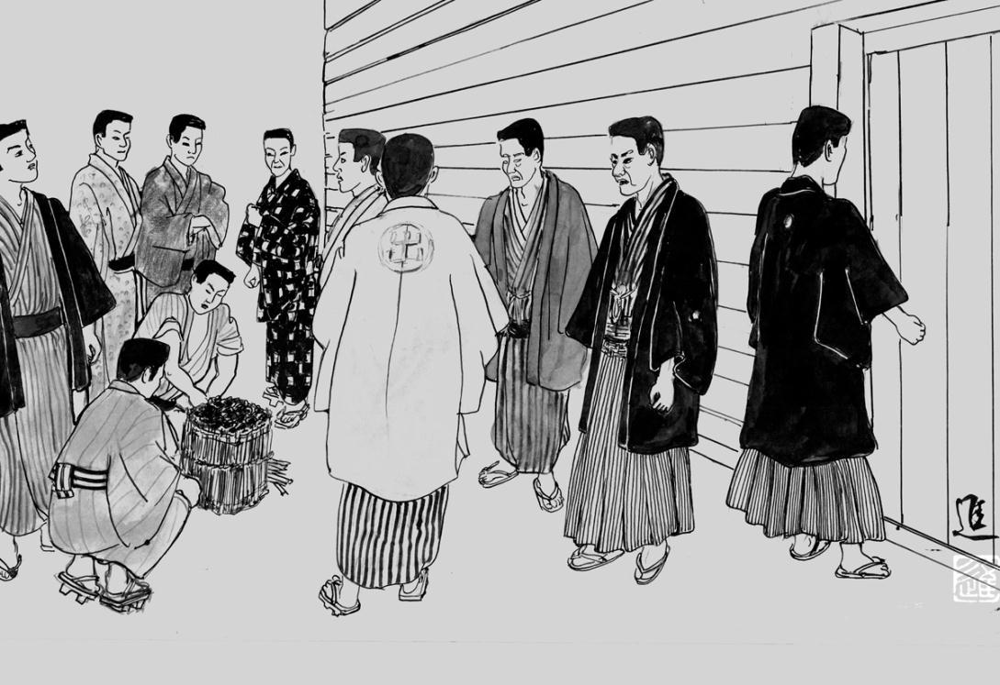
出発の時は、それは盛んな見送りでね、駅のホームがいっぱいになるほどでしたよ。その時わたしらが何を着ていたかというと、軍服じゃありません、着物です。三人とも久留米絣の着物に羽織を着て、履物は下駄という格好。持ち物は何にもない。鞄も袋もありません。懐に僅かの金と手拭があっただけです。軍隊で必要なものは全部向こうで支給されるというんで、着の身着のままの姿で出かけたという次第。
大阪には翌日の昼過ぎに着いて、次の日に築港から六千トンの貨物船に乗って朝鮮に向かいました。何千何百という召集兵が乗せられたわけです。船の中の食事は全部、お握りとおしんこだけ。甲板に臨時の便所がしつらえてある。船内の便所だけではとうてい足りないんで、甲板に大きな板張りのものを作ったんですね。用を足すと、すぐに青い海に流れていくという具合です。
朝鮮に到着すると、元山で一部が下りる。ここでは岸壁に横着けできないので、兵隊はハシケで上陸しました。わたしたちはそこには下りないで、その先の今の北朝鮮の雄基という所まで行った。
ここはソ連に一番近い港です。その港からそれほど遠くないところにウラジオストックがある。これはソビエトの極東第一の海軍基地です。雄基はひどく寂しい漁港で、人口は三千ぐらいでしょう。人影なんか、ぱらぱらしか見えない。十二月の海から吹く風が物凄く冷たくて、ブルブルッと肌が総毛立ちましたよ。ここまでは千人ぐらい来たのでしょうか。一同は整列させられて、将校が人形みたいに威張って訓辞を垂れる。
「ここは我が日本帝国最北端の、要衝の地である。おまえたちは名誉ある兵士として召集され、これから国境の守備に当たるわけである。いずれも心して、任務を全うするように」こんなことを髭をぴりぴりさせながら言う。
新兵は、初めて外地に出たんですから、西も東も分からない。とんでもないところへ連れて来られたものだ、なんて内心ただ不安なばかりです。それにやたらと寒い。
「こんなところでいつまでも立たされていたら凍えちまうぜ」なんてみんなで文句を言っていたら、やっと訓辞が終わって、全員に防寒外套が支給されました。だぶだぶの毛皮の外套です。中にいろいろと着込んでもきつくならないように、全体に大きく出来ている。それでほんとにあったかくなって、みんな生き返ったように元気になりました。防寒帽子も支給されました。犬の毛で出来ているんでしょうか、ごわごわで、顔だけが出るように出来ている。お互いに帽子を被って、顔を見合わせて、子どもみたいに騒いでいる。そうするうちに汽車が着いたので、命令通り乗り込んだんです。
汽車といっても軽便鉄道のようなもので、長い煙突から煙を吐いて、山岳地帯を息を切らして、ボッポボッポとゆっくり走る。どこを見ても山また山、それも岩が露出している殺風景な山です。ところどころ灌木が生えているような裸山がうねうねと続く。草が一面になびいている。山と谷が交互に入れ替わって、だんだん高くなる。道なんかどこにもない。人家もない。その間を何時間も走る。
「ひどいところだ。山賊だって住めやしないぞ」なんて、小声で話していると、そのうち移送将校がまた回って来て、「もうすぐコモザンに到着する。しかしおまえたちは、この先に行くのだから列車から外には出ないように」なんて言う。
外は暗くなりかけている。あたりは荒涼として、寒気がする。コモザンに下りた新兵が、上官から訓辞を受けている。
「これから本隊に向かって行軍する。これから銃と弾薬を支給する。めいめいこれを受取り、着用するように」。訓辞がすむと、全員に銃と弾薬が渡される。そうして全員整列して、号令されるとホームから暗がりの中を歩いて行ったんです。
ところが新兵は鉄砲の撃ち方なんか知りません。何日か前までは、みな百姓だったり、どこかの店の店員や小僧だったんですから、鉄砲に触るのも生まれて初めてです。だぶだぶの外套を着た着物の兵隊が弾帯を腰に巻いて、鉄砲を担いで行進して行く。長い列がぞろぞろと続いて、すぐに見えなくなりました。
また列車が走り出して、そのうち全く暗くなったところでモザンに到着した。そこでまた何百人かが下りて、同じ様に鉄砲を渡されて歩いて行きました。あるいは、もしかするとモザンが先で、コモザンが後だったかもしれません。また走りだしましたが、夜中だからなんにも見えない。ただ汽車の音だけがボッコチッカ、ボッコチッカ聞こえるだけです。座席は全部板ばり、腰掛けも板ばりですから眠れたものではない。車両のまん中にはストーブが真っ赤になって燃えている。その当時は、朝鮮北部の山からはいくらでも石炭が採れましたから、惜しげもなく焚くんですね。兵卒がシャベルですくって石炭をガンチカ、ガンチカとくべる。
体はくたびれているから眠ろうとするんだけれども、興奮しているし、尻が痛いしで一晩中トロトロとしている。兵隊の寝顔はみんなまるで子どもです。と、たちまち下士官の声で起こされた。声の調子が全然ちがう。まるで犬が一晩で狼になったみたいな、腸に沁み通る声です。
「起床！ 目的地に到着する。出迎えの上官や、おまえらの先輩をがっかりさせないように、肝っ玉を引締めなければならない。しゃきっとして、体を伸ばしてだな、いいか、絶対に寒いなんて格好をするな。分かったか！」なんて言う。長年軍隊で鍛えられた声ですから車両全体にびりびり響く。みんなこれでいっぺんに目が覚めてしまいました。
夜が明けて会寧に到着しましたが、朝、八時ごろだったでしょう。駅のホームには薄く雪が積もっている。つまらない小さい駅で、木造の建物がポツンとあるきりです。ここまで来た新兵は五百ぐらいだったでしょうが、誰もが、なんだこんなところで何をするんだ、なんて、がっかりした顔をしている。するとたちまち、
「整列！ ぐずぐずするな！」という大声がして、新兵は二列に並んで、外へ出た。そうしたら駅の前に六十人ぐらいでしょうね、連隊から派遣された出迎えの兵隊が隊列を組んで整列している。そして、いきなり一番前の将校が剣を抜いて、
「入隊兵に敬礼っ！」と叫ぶ、とそれと同時に並んでいた兵隊が、ザッと一斉に敬礼する。いやその動作が大袈裟なことったら、まるで芝居を見ている様な具合。よくもまあ、あんなに大見栄をきった格好ができるものだと感心します。兵隊は毛筋ほども動かない。よく見ると、士官の髭はみんな凍ってツララが下がっている。目だけがやたらとギョロギョロしている。内地で見ていた兵隊の顔とは全然ちがう。寒い中で訓練された兵隊はこんなにも凄い形相になるのかと、驚いてしまいます。相撲にたとえて見ると、その迫力は、目の前の兵隊が幕内だとすると、内地のものは幕下ぐらいの違いがある。
出迎えたのは各中隊選抜の兵隊です。新兵はどこの隊に配属されるかは既に決まっていて、各中隊から下士官が出て名前を呼び上げる。呼ばれたものは前に出て並ぶ。数がそろうとその中隊の下士官が、「第何中隊、入隊兵総員何名、異常ありません」と移送指揮官に報告する。そうして全員が揃っていることが確認されると、出迎えの指揮官が「よし！」と、うなずく。
そうすると下士官が、「ただいまより、本隊へ向かって出発！」と号令をかける。と出迎えた中隊が先にザックザックと行進を開始する。ところがこっちは、そんなに格好良くは歩けない。道路は凍って雪がうっすらと積もっている。そこを下駄で歩くんですからツルンツルン滑って、そっちでもこっちでもひっくりかえっている。そうすると、
「コラーッ、何をしているか！ 遅れるなー！」なんて怒鳴られる。新兵は正規軍に捕まった捕虜みたいに情けない格好。道路はやけに広くて、真っ白にどこまでも続いている。両側は家がずっと並んでいますが、人の姿すら全然見えない。連隊までが本当にどれほど遠く思えたか知れやしません。
連隊に到着したのは、大正十五年の十二月二十日だったと思います。連隊があるところは文字どおり日本の領上の最北端でしてね、西の方角は満州の吉林省、北東の方角はソ連領シベリアに接している。朝鮮と満州、ソ連との間には豆満江が流れている。この川は冬になると厚く凍結して馬車が渡れます。連隊基地は町の外れにあって、周辺には土手がぐるりと廻らされている。土手の外はどこまでも畑です。畑の尽きるところになだらかな山がある。山裾に練兵場がある。けれども練兵場は春にならなければ使えない。冬の間は営庭という連隊の中にある広場で訓練をする。新兵は連隊に到着すると、訓辞が与えられました。それから衣類と装備の支給を受ける。軍服も支給されましたが、わたしは体重が八五キロ、身長は六尺ありましたから、配属された第二中隊には合う服がなかった。それで至急、合うように縫製係に仕立て直させたんですが、次の日にはとうてい間に合わなくて、しょうがないので今まで通り、着物の上に防寒具といった格好で連隊長の挨拶を聞きました。
連隊本部の前に広場がある。その広場の前に全員が整列する。それぞれの中隊長が前に立っている。大隊長がその前にいる。大隊というのは三中隊が集まったものをそう呼ぶらしいんですね。大隊長になると偉いんでしょう、みんな髭をはやしている。それが凍って白くなっているんで、ひどいじいさんに見えるんです。中隊長が一人ずつ大隊長に報告する。
「第一中隊、中隊長以下、百何十何名！」大隊長は報告を受けて、よし、とでもいうように敬礼する。これがすむと、連隊長が馬に乗って、大隊の前に来て止まる。立派な髭をはやして、勲章をぶら下げている。大隊長が連隊長に向かって、
「第一大隊、大隊長以下何百何十何名！」と叫ぶ。叫ぴながら指揮刀を顔の前にピッシリと捧げている。連隊長が無言で敬礼をする。第一大隊が終わると次は第二、第三、とやる。
一度にやればいいものをどういうわけか順番にやる。それでやたらと時間がかかるんです。時間がたつにつれて体がだんだん固くなってくる。隣の新兵なんか、頬も顎も真っ青になって、ガクガクふるえている。鼻の下がいやになるほどつっぱるな、と思ったら、なんと鼻の下につららが下がっている。連隊長が、壇の上に上がって挨拶を始めた。
「わたしが当連隊の連隊長である。陸軍歩兵大佐、久我なにがしである」なんて高いところで威厳を作って話している。あたりは一面氷の世界ですから、実に声がよく通る。胸の勲章はピカピカ光るし、帽子も立派だしね、大した貫禄です。「諸君は国民の中から特に選ばれた皇国の兵士である。まことに諸君らは、これを名誉として受けとらなければならない」
なにが名誉だ。寒くてそんなものはどうでもいいや、なんとかしてくれ。じっとしていようにも自然にガタガタ体が震えるし、手も足もカチカチになっている。履物は下駄の代わりに内側に毛の張った靴を履いたから昨日よりはましになったけれども、外套の下は着物ですからスウスウと風が股に入ってくる。ゲートルは素足に巻きましたが、それぐらいでは、ここの寒さには全然役に立ちません。
「我が七五連隊は、皇国の最前線を守るための重要な任務を担っている。我が連隊より先には、一小隊たりとも友軍はない。即ち当連隊に配属された諸君は、皇国の北の国境にあって、これを敵の侵略から守るために選抜され派遣された、最も優秀にして名誉ある兵士なのである。諸君は、皇国国民の絶大なる期待に応えるべく、寸暇を借しんで訓練に励み、精神身体を鍛錬し、大いに職務に精を出し、他の模範となるような兵士に一日も早くならなければならない。連隊長であるこのわたしも、諸君と共に日夜精練努力し、わたしに課せられた重大なる責務を全うするつもりである。......」
なんて立派な訓辞が続いている。と、そのうち隣の新兵の体が斜めになったかと思うと、いきなりぶっ倒れた。凍った魚みたいに身体が硬直している。班長と上等兵が担いで医務室へ連れていった。するとこれが引金になったみたいに、別の中隊でも二、三人次々に倒れる奴がいる。顔はまるで死人です。足踏みをしたり、手を上げ下げしてもいいんなら少しは楽だけれども、身動きをしてはならないというんだから凍るのは当り前ですよ。俺もそのうち医務室に行けるかな、なんて思っていたら、急に話が終わった。
「連隊長に敬礼！」と大声がして、見ると大隊長が指揮刀を陽にかざしている。
「カシラー、右！」なんて、実に勢いがいい。訓練して馴れているとはいえ、驚くほどの声の張りです。こればかりは大したもの。
「そっちじゃない、右だ、右！」班長が注意している。見ると左を向いている奴がいる。軍隊というところは、自分の頭一つさえどっちへ向けばいいかまで命令されるんですから、たまりません。第一大隊がすむと、次に第二大隊が、
「連隊長に敬礼！」とやる。こうして全部すむと、連隊長は馬に乗って連隊本部へ引き上げる。連隊長は終始、背筋を張って威厳を作っている。あれは余程丈夫でないと勤まりません。こうして連隊長が引き上げたので、やれやれと思っていたら、今度は各中隊が「大隊長に敬礼！ カシラー、右！」なんてやる。
そうすると第一大隊長が敬礼して、引き上げる。次に第二大隊が、「大隊長に敬礼！ カシラー、右！」とやる。第二大隊長はまるで第一大隊長と双子みたいに敬礼して引き上げる。次は第三大隊がまたおんなじにやる。これでやっと終わりかと思うととんでもない。
今度は各中隊の副官が前に進んで「これから中隊は、連隊本部前に行く。右向けー、右！」と号令をかける。そうすると軍鼓が、ダンダン、と、威勢よく鳴る。兵隊は第一中隊が先頭になって、軍靴を鳴らして連隊本部前まで行進する。
そうするとそこで、「中隊、止まれ！」と言うんで止まると、副官が「中隊長殿に敬礼！ カシラー、右！」と言う。そこでわれわれは右を向く。中隊長は敬礼して引き上げる。これを第一中隊から機関銃隊まで次々とやる。この次はどうなるかというと、各班の曹長が、
「副官殿に敬礼！ カシラー、右！」とやる。そうすると各中隊の副官は敬礼して、中隊長の後を追って、将校室に入る。それでこの後は終わりかというと、そうではない。今度は上等兵が、
「班長殿に敬礼！ カシラー、右！」それで班長は敬礼して、それからわれわれに訓辞を垂れる。
「本日の連隊長殿のご挨拶の間に、首を曲げたり足を動かしたりしていたものが多数あった。かくのごとき行為は不謹慎であり、大いにいかん。本日は新入の兵にとっては初めてであるから大目に見るが、以後このような行為があった時には断じて黙過しないからそう心得るように」なんて言う。
馬鹿ばかしい。身動きもしないでいたら死んでしまうじゃないか、なんて腹では思うけれども、ここで逆らったら、どれほどここに置かれるか分からないので黙っている。こうしてやっと解放されて宿舎に戻ったんです。
次の日はどうかというと、連隊長の訓辞がない代わりに広場の中を駆け回るんです。鉄砲を担いで背嚢を背負って、チャカチャカチャカチャカ何十回となく繰り返す。そのあいだに、姿勢が悪いとかいいとか、帽子の被り方が悪いとか、いちいち文句をつけられる。
「背中が右に曲がっている！ 言い訳はするな！ 背筋を伸ばせ！ きょろきょろするな！ 蛙やトカゲじゃないんだ、横っちょばかり気にするな！」
こうして四、五日過ぎたときに事件が起こった。事件というと語弊があるかもしれませんが、大正天皇が亡くなったんです。十二月の二十五日でした。訓練が突然中止になったので何だろうなと思っていたら、これこれだ、という。中隊長の話では、七五連隊は、天皇陛下のご遺体が皇居を離れる時間に合わせて、哀悼の意を表するという。隊長の話がすむと、そのあとわたしたちは班長から訓辞を受けましたが、それによると式は真夜中の十二時だという。
「おまえらは、下着から靴下まで一番きれいなものを身に付け、髭をそり歯を磨き、髪をとかし、靴もきちんと磨いておくように。手袋は着用してもよいが、防寒外套は禁止である。言うまでもなく、皇国の兵士であるわれわれは、私語をつつしみ、必要な場合でも大声を出して話してはならない。歩行の際も音を立ててはならない。廊下を走ることはまかりならない。夕食は早めに済ませて、時間が来るまで静かに待て」と言う。
それでみんな言われた通り用意を整えて待っていたら、夜の十一時頃、全員連隊広場に集合せよ、という命令が下った。それで一斉に外へ出ました。とたんにブルブルッと身震いしましたよ、何しろ外套を着てはならんというんですからたまりません。厚い毛皮を着ていても我慢が出来ないというのに、制服のままですから、これは寒い、みんな「このまま凍死するんじゃないか」なんてひそひそ言ってましたが、文句をいってどうなるわけでもなし、整列させられて真っ暗な中に立っていました。
そのうち各中隊に、かがり火を焚けという命令が出た。薪はあらかじめ倉庫から出して積み上げておいてある。四方を竹で囲んで、相当に高く積んであります。これに火をつけると実に明るい。下は氷ですから、まるで鏡のように光を反射するんです。連隊広場全体が真昼のように輝いて浮き立っている。光が届かないところは真の闇です。火がパチパチ音を立てる。空が紅く燃える。やがて、大隊長、連隊長が姿を現す。突然、暗闇の中に、
「連隊長殿に敬礼！ カシラー、右」と号令が響く。連隊長が敬礼して訓辞を始める。
「おそれ多くも、今上陛下におかせられては、本日午前一時二十五分、崩御なされた。これは実に、皇国の臣民にとっては悲しみの極みである」
連隊長もやはり外套を着ていないが、寒そうな様子はつゆほども見せない。親分となると、どんな世界でも見栄を張っていなけりゃなりませんから容易ではありません。話が終わると、東に向かって全員が深々と頭を下げる。十二時になるとラッパが長々と鳴った。これがすんでやっと解散だが、これがまた簡単にはすまない。
「連隊長殿に敬礼！ カシラー、右！」
連隊長が敬礼して引き上げると大隊長、それから中隊長と順繰りにやる。こんなことをしているうちに、新兵がバタバタと七、八人も倒れた。鼻の中はとっくに凍っている。空気を吸うとシャッシャッと音がする。息を吸う度に体温が下がる。だんだん体全体が固くなってきて、もう我慢ができないと心配になってきた頃、ようやっと解放されて宿舎に入れたというわけです。
軍隊で刑務所よりもましなところがあるとすれば、それは食べ物でしたね。軍縮のおかげで兵員が減っているために食料が豊富だったんです。三食の外におやつがでました。毎日いろいろと出る。あるときは大きな栗饅頭が一人当て五個も配給される。その他、お汁粉の時もあれば、豚豆の時もある。お汁粉の中には大きな餅が三つも入っている。豚豆というのは豚肉と豆とを一緒に煮て、これを皿に山盛りいっぱいくれる。軍縮時代ですから、戦艦だの鉄砲を増やすことが出来ないんで、食料がやたらとたくさんあったんです。
日曜日は連隊の外にも出られました。町には商店もあれば食堂もある。朝鮮人経営がほとんどですが、日本人が経営しているものも二、三ある。それからお決まりの女郎屋がある。「正門街」というところで、かなりの店がまとまって花街を作っている。娼婦は大部分が朝鮮の女です。白系ロシアの女もかなりいました。あの頃はロシア革命の後ですから、共産軍に追われて逃げて来たロシア人が朝鮮にも相当たくさんいました。その中で食うに困った人々が体を売るようになったんでしょうね。
金はというと、軍から給料が出る。一日二十二銭の割で十日毎に二円二十銭が支給される。これは内地の兵隊の約倍額の給与。食べ物を買うには十分な金額です。うどん、そばなんかは五銭、大きな饅頭が五個で十銭ぐらいですから。けれども遊ぶにはすくな過ぎる。当り前の女はともかく、いい女はやはり金がかかります。一晩女と過ごして二十日分の給与を使ってしまうか、それとも食べ物を買うか、これは難題です。そんなとき思いがけない金が入りました。出羽屋の親分が手紙に添えて金を二十円送ってくれたんです。
「大正の御代が終わって、年号が昭和に変わったが、こっちの暮しには大した変わりはない。浅草はあいかわらず賑やかだ。みんな結構よく働いている。おまえも体をこわさないように気をつけろ。同封した金は大した額ではないが、なにかうまいものでも食べてくれ。なくなったらまた送る」なんて書いてある。ほんとに有難くて、手紙を毛布の中に抱いて寝ました。
ところが金の方はというと、ぜんぜん使えなかった。班長が手紙を検閲して、中隊長に報告して、取り上げられたんです。
「伊地知、おまえはこの金を何に使うつもりだ」
「何か、食べようと思います」
「それでは、軍の食料に不足があるというのか」
「そうではありませんが、たまには市街地で食べたいと思いまして」
「この金はおまえが使うのには不当な大金だ。おまえが除隊するまで保管しておく」
なんて勝手に決められて、会寧にいる間はとうとうそのままになった。正門街にはすばらしい美人のロシア娘がいて、この女と仲よくなりたかったんですが、とうとう駄目でした。
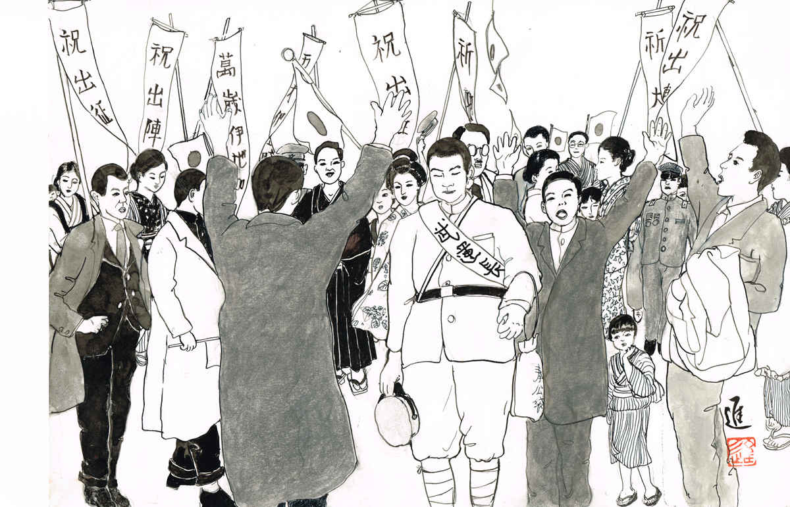
コモザンの方では虎が出るという噂でしたが、会寧では狼が出ました。入隊して三カ月ばかりして歩哨に立った時のことです。目の前の山の上には月が皓々と照っていましたが、突然、山のてっぺんの方角から狼の吠える声が聞こえた。見上げると東の山の斜面は銀色に光っている。その山は禿山で二九四高地という名前がついている。
よく見ると、その山のてっぺんに小さな影がくっきりと浮かんでいる。その影が月に向かって吠えている。オーオオオー、と吠えているんです。よく絵などには月夜に狼が吠えている景色がありましょう。まったく、あの通りです。狼の吠える声というのはそれは凄いものですよ。
オー、オオオー、ウォオオー、と、長く尾を引いて吠える。腸がしびれるような声です。そうすると、それまで朝鮮人の農家で鳴いたりうなったりしていた馬や牛や豚、鶏なんかの鳴き声がピタッと止む。それはそれは死んだように静かになる。やがて山の頂上の狼の影が三つ五つと増える。そうしてその数が重なり合って数え切れなくなるころに、頭目の狼が山をこっちに向かって下り始める。
二九四高地のすぐそばに柳先徳山というのがあって、その山の斜面と斜面の間が深い谷間になっている。朝鮮の言葉でそんなところをチイチというんですが、そのチイチに沿って下りてくるんです。狼は連隊の北門の外にある食べ物の廃棄場を目指して来ることがあると聞いていましたが、どうやらそこに来るらしい。山に餌がなくなるとそれを食べに来るということです。
やがて、谷間を下り終わると、狼の群れは凍った畑の中を、頭目の狼を先頭にしてまっすぐにこっちへ向かって来ました。こっちは鉄砲を持っているけれども、相手はどんどん近くへ来るので、心中おだやかではない。「おい、大丈夫か」「曹長殿に報告したほうがいいぞ」なんて言っているうちについそこまで来た。
どうやら、狼のほうも兵隊というのはむやみに鉄砲を撃たないんだということを知っているんではないでしょうか。そうでもなければ、あんなに図々しく近づいて来られるわけがありません。狼の大群は、とうとう三十メートルぐらいのところまで接近した。そうして、監視役とでもいえるような体格のいい狼がこっちを見ているうちに、頭目も子分とおぼしき狼たちも悠然と食べはじめた。気配を察して菅野曹長が二、三人の部下を連れてこっそりと様子を見に来ましたが、群れの一頭がこっちを警戒しているだけで、他のものは夢中で食べている。他のものはこっちに注意する様子もない。
こうしてどれくらい時間がたったでしょうか、やがて、頭目が首を空の方に高く伸ばして、オオー、ウォオオー、オオオーと、吠えた。そうすると、夢中で餌を食べていた狼全員が食べるのを一斉にやめました。もっと食べたいと思っているものもいるのでしょうが、この世界でも親分の命令は絶対らしい。頭目は悠々と山の方に向かって歩き出しました。すると他のものはこれに従って引き上げる。
一番後ろの狼はこっちを振り返り振り返りしながら足早に遠ざかる。それは実に見事な統率ぶりで、曹長もわれわれも本当に舌を巻きましたよ、あの様子を見ていると普通の動物ではとても太刀打ちできない。狼というのは力があるというよりも、恐ろしく頭のいい動物らしい。狼の群れはチイチに沿ってだんだん遠くなっていきましたが、やがて見えなくなりました。山の頂上に現れるかなとわれわれは見ていたんですが、とうとう影も現れないで、その冬は二度と姿を見せませんでしたね。
こうして冬が過ぎたんですが、春になって草が伸びだしたらそれは大変でした。本格的な訓練が始まった。いままでは連隊の広場で基礎訓練を受けていましたが、暖かくなってきたら山裾の練兵場で一日中訓練です。連隊長は七五連隊を徹底的に鍛えあげて、他の連隊に絶対にひけをとらない兵隊に仕上げてみせようという魂胆らしい。士官たちの態度も実に厳しい。朝から晩まで怒鳴られっぱなしです。本当に嫌になった。
夏を過ぎるころには心底愛想が尽きて、我慢が出来なくなりました。それで、脱走をしようと考えたんです。今になって思えば滑稽ですね。脱走というものがどれほどの大罪かは戦争前の人間でないとお分かりにはならないでしょうが、脱走した本人よりも兵隊の家族や親戚のほうが大変です。
兵隊は捕まれば銃殺ですが、家族や親類は田舎にはとても住んでいられない。村八分です。脱走した兵隊は国賊ですから、家族も非国民というわけで、どんな扱いをされるか分からない。だから、少しでも常識があるものは絶対にやりません。家族だって脱走するくらいなら死んでくれと思っている。けれどもわたしは利口な人間とは正反対に出来ていましたから、本当に脱走をしようと思ったんです。
けれども、逃げるといっても日本の内地に逃げるわけにはいきませんからね。国外に逃げるということになります。手っとり早いのが満州へ行くことです。豆満江を渡ればもうそこは満州ですから、不可能なことではない。そんな時、運がいいことに連隊の銃工場というところに配属されました。ここは連隊の銃器を修理する工場で、各中隊から適任者が二名ずつ選抜されて、それぞれの中隊の銃器を修繕するんですね。つまり工場には二十名ばかりの兵隊が働いているということになる。
工場には専門の技術者がいて、ヤスリのかけ方とか機械の使い方を指導してくれる。鉄砲の先には銃剣を装着するようになっていますが、普通は銃剣の刃は研いでありません。しかし出動の時には、これに刃をつけなければならない。そのような時に備えて、グラインダーで刃の研ぎ方なんかも教わる。ここで働いて一番いいことは練兵場で駆け回らなくてもいいことと、兵隊同士で話ができることです。他の場所では、いつも班長や上等兵の目が光っているから勝手なことは言えない。ところがここでは仕事さえやっていれば、やかましいことは言われません。それに機械の音がするので、遠くにいてはこっちの会話は聞こえない。これは実に都合がよかった。
機関銃隊からは根本雄作と金沢留吉という男が来ていた。金沢は中学校の教師の倅でしたが、これが中国のことにかけては実に詳しい。誰に教わったのか分かりませんが、まるで行って来たことがあるみたいに話すものだから、わたしらはただ感心するばかりです。当時は、満州に行けば何でも出来る、というような風潮が日本にはありました。
俺も行くから君も行け、狭い日本にゃ住みあきた。海の向こうにゃ支那がある、支那にゃ四億の民が待つ、こんな歌が流行っていた時代です。
あの頃の満州はめちゃめちゃでね、軍閥だの馬賊だのが横行して勝手放題、何しろちゃんとした政府がないんだから強いものが勝ちというわけで、日本で食いつめたものはひと旗揚げようと、ずいぶん満州へ流れた。馬賊になったものもずいぶんいたらしい。満州お菊というのはその中でも有名ですが、この女は五千以上の子分を率いて大勢力を張っていたそうです。
わたしらが朝鮮で訓練を受けていたのはこんな時代ですから、脱走して馬賊になってひと旗揚げようというのも悪くはない考えだったんです。最初は機関銃隊の金沢と根本とわたしで計画を練りましたが、相談しているうちに仲間はもっと多い方がいいだろうということになって、後から二人入れて、機関銃を盗み出す手だても考えました。
馬賊にあこがれたのは、実際にこの目で馬賊を見ていたからです。連隊の前には正門街という花街があるということはお話ししましたが、そこには何カ月かに一度、馬賊の頭目が遊びに来る。この男は吉林省ではもっとも大きい勢力を持っていた馬賊の頭領で、名前は王公徳と言ってました。
体の大きい色の黒い男で、長くて細い髭を顎まで垂らしている。熊の皮の帽子を被り、弁髪は背中から腰までぶら下がっている。立派な栗毛の馬に乗って武装した子分を十人ばかり連れて、悠然と乗り込んで来る。そうして何百円という大金を使って二、三日大いに遊んで、また豆満江を渡って帰って行くんです。
わたしはこんな王公徳の姿を幾度か見ましたが、なんとも格好がよかった。弁髪が風になびいて、カツカツ、カツカツカツとひづめの音が天に響く。子分たちがこれに従って、着物の裾をヒラヒラとなびかせて走って行く。わたしらが連隊の土埃りと汗にまみれてどろどろになっているのと比べると、月とすっぽんほども違う。あんな風に馬に乗ってどこまでも走ったらどれほど素晴らしいだろう、なんてまったく真剣に考えた。
しかしこれは後から知ったことですが、王公徳という馬賊はこっちが想像していたような男ではなかったらしい。王は日本の諜報機関とつながっていた、王が正門街に来るのは吉林省の情勢を日本に売るためだったんですね。特務機関の将校と憲兵が、王とどこかで密かに会って、王は自分の集めた最新の情報を彼らに話す、特務機関の将校はその情報に対して金を払う、そういう取引があったようです。だから王公徳は子分を引き連れて、監視所を通って連隊のあるところまで遊びに来られたわけです。そうでもなければ馬賊があんなところまで出てこられるはずがありません。しかしわたしらはその頃はそんなこととはつゆ知りませんから、計画が実行できる季節が到来するのを待ちかねていたというわけです。
けれども、幸か不幸か、その時節はとうとう到来しませんでした。金沢は計画決行の日がだんだん近づいてくると怖気づいて、班長に自白してしまった。それで一味はたちまち捕まって取調べをうけました。曹長の話では、他のものはみんなあっさり白状したそうですが、わたしは「自分は、そのような計画はまったく覚えがありません」なんて言い張ってました。それで、最後まで抵抗したというので、とうとう主犯格にされました。
重大な犯罪を犯した兵隊は、小倉の衛戍刑務所に送られるのが通例です。わたしもそうなるものと覚悟していたんですが、そうはならなくて連隊の重営倉に入れられました。
連隊の営倉というところは連隊本部の北の衛兵の詰所の裏手にありましたが、これは四角いコンクリートの建物。入口は鉄ではなくて、日本の牢屋と同じ木の格子です。
しかし中は巣鴨どころの騒ぎではない。本当に狭い。人間がひとりやっと入れるほどの穴蔵と思えばいい。座ったり立ったりは出来なくて一日中横になっていなければならない。幅は二尺ぐらい、肩幅でいっぱいです。高さも二尺、奥行きは七尺程度、床は板張りで、毛布が一枚あるきり、ほとんど寝返りもできない。他の営倉はどんなものか知りませんが、あそこのものはこれ以上ないというほど狭いものでした。
他の者も同じようなところに入れられているんですが、話をすると怒鳴られるので、一日中黙っていなければなりません。これはひどく辛い。何が楽しみだといって便所に行く時ほど楽しいことはない。営倉の中に便所があって、一日二回行かせてくれる。ところが二回では小便などは間に合いませんから、そんな時は、「頼みます、頼みます」と監視兵を呼ぶ、そうすると、
「なんだ、やかましいぞ」なんて言って監視兵が来るから、
「すみませんが、小便に出して下さい」と言うと、大概は、「駄目だ、我慢しろ」なんて冷たくあしらわれる。しかしそうはいっても、我慢できないから、
「頼みます、頼みます」とくり返すと、何度か目に、「うるさい奴だな」なんて言いながら出してくれる。他の者もこんな風にして一日何度か出してもらっていますから、兵隊と囚人とのやり取りと足音を聞くのが楽しみでした。
とにもかくにも、身動きも出来ずに横になっているのは、なんとも言いようがないほど退屈で辛いものです。特に他の者が幾日もしないで出されてしまうと、わたしだけになってしまって、これが身に沁みて苦痛でした。人間というのは身動きも出来ない状態で暗いところに放っておかれたら気がおかしくなります。これはどんな拷問よりも辛い。大声を出すと怒鳴られますが、たまらなくなって、「すみません、すみません、ちょっと出して、背を伸ばさせて下さい」なんて頼む。
そうすると、監視兵が格子をガンガンと叩いて、
「うるさいぞ、黙れ！」と叫ぶ。しかし、それでも怒鳴っていると、今度は戸を開けて頭をこづきます。こんな具合でだんだん気が変になって、金沢を恨んだり、殺してやりたくなったり、そんなことを始終考えるようになった。
いろいろな夢も見ましたが、これははっきり覚えています。それは、わたしが一人で馬に乗っていい気持ちで走っていたら、いつの間にか自分が支那人になっていた。それで馬賊の一群に混じって広野を駆け回っていたら、向こうから赤い馬に乗った一群がやってきた。奇妙なことに、赤い馬は本物の馬ではなくてどれもみんな木馬なんです。不思議なことには木馬のほうがわれわれの馬よりはるかに速い。どうしてそうなのかと思っていたら、「これからは馬の時代ではないんだ。木馬の時代さ」と言う奴がいる。見るとそれが金沢留吉だ。裏切り者め、殺してやる、と思って追いかけた。金沢は振り向いて、支那の兵隊が日本の兵隊に勝てると思っているのか、といって、アハハ、と笑う。そうしていつのまにか金沢が機関銃を持って追いかけてくる。それで夢中で逃げているうちに、とうとう練兵場に来てしまった。兵隊が列を作ってドッドッと駆け回っている。連隊長が号令をかけている。よく見ると、それが根本雄作そっくりだ。「根本、こんなところでなにをしているんだ」と呼んだら、
「おまえは反逆者だ、死刑にする！」と言う。たちまち捕まって、広場のまん中の木に縛りつけられた。寒くて寒くてどうにもならない。辺りは雪で真っ白だ。このままでは死んでしまう。「たすけてくれー」と大声を出したら、頭の上で雷のような音がした。それで目を覚ましたら、監視兵が警棒で格子をガンガンと叩いていたんです。
こんな具合に時がたっていったんですが、しまいにはうわごとを言うようになりました。監視兵の話では、釈放されたのは投獄されて二十五日目だったそうです。外に出た時には日の光がまぶしいのと、人間がやたらに多いので目まいがしました。そうして、なによりも入る前と後とでは、まるきり世界が違って見えました。青二才のうろこが落ちて、ようやくまともに世の中が見えるようになったんでしょう。金沢に会っても別に恨みを感じるようなことはありませんでした。
それまではいやでいやでたまらなかった練兵場がひどくきれいに見えて、山も野原もまるで夢の国のように感じられたんですから、営倉というのは恐ろしいものです。
会寧にはこれから先一年余りいましたが、別にこれといって特別お話しするような変わったこともありません。
昭和二年の暮れに除隊になりましたが、この時は正門街で飲み明かしました。船に乗って東に向かうと日本が青く見える。それが目に沁みて、いつまで見ていてもあきない。船の中では花札をやりました。胴元は兵士ではなくて玄人のバクチ打ちです。兵隊の中には金をすっかり巻き上げられて、船の電報で「大阪まで金を持って迎えに来られたし」なんて打っているものが何人もいる。わたしは親分から送ってもらった二十円を除隊の時に返してもらいましたから、この金をもとでにして百七十五円儲けました。
大阪港までおふくろと妹が迎えに来ていました。その晩は京都に泊まって、次の日は京都を見物して、妹には飛び切り上等の西陣の着物を二反、おふくろには帯を買ってやりました。これが一生を通じて最初で最後の親孝行でした。
宇都官に帰って十日あまりぶらぶらしていましたが、その間に退役将校たちがわたしの除隊を祝して一席もうけてくれて、まるで英雄になったような具合でね、それはいい気なものでしたよ。ところがそんなある日、岡田の兄貴から手紙が届いた。手紙なんてものは兄貴はめったに書かない性分だから、不安に思って急いで開けると、
「親分が胸の病にかかって医者に診てもらっているがあんまり様子がよくない。おまえも世話になった体だから一度は見舞いに来たらどうだ」と、そんな事が書いてある。これには本当にびっくりした。帰ってきてから時間がたつのに顔も出していない。早く挨拶に行かなければと思っている矢先だったから、その日のうちに汽車に飛び乗って東京に出たんです。
親分はわたしの元気な顔を見ると、よほど喜びました。訓練でやせたのを見て、
「兵隊に行ったおかげで五割がた男が上がったじゃねえか」なんて言う。そんな様子が心配していたよりも元気そうなので、ひとまず安心しました。送ってくれた小遣いのお礼を言うと「土産に朝鮮の話をしろ」と言う。それで営倉に入れられた話をすると、みんなひどく面白がった。
刑務所の様子はみんなよく知っていますが、営倉に入れられたものは一人もいない。わたしは、兄貴たちも見たこともないものを見た、というんで珍らしかったんでしょう。脱走しようとしたという話をすると、みんな呆れてね、だいたいだな、口がうまい奴は信用がならねえんだ、おめえも相当頭がいかれていたな、なんてさんざん馬鹿にする。こうしてわたしはそのまま出羽屋に居ついて、宇都宮にはとうとう帰らなかったんです。
そうこうするうちまた親分が具合が悪くなった。夏の始めでしたね。入院するほどではないが静養する必要があるというので、大磯の別荘に引き籠った。浅草は村松の兄貴が取り仕切っているから、ひとつも心配はない。兄貴は何と言っても、東京中のやくざなら知らないものはないというほどのバクチの名人ですから、親分は安心して療養できる。村松の兄貴はひと月に一回、親分に小遣いを届ける。用があれば子分を使いに出します。
そんなある日、兄貴はわたしを呼んで、「栄治、今日はおめえが見舞いに行ってこい」と言いつけた。「へい、早速」と答えると、兄貴が注意するには、
「大磯というところはな、いいか、並の人間が住んでいるところじゃねえんだ。政財界の大御所が立派な別荘を構えているんだからな、仮にも喧嘩騒ぎなんぞを起こすと、親分に迷惑がかかるから絶対にだめだぞ。身なりもそんなんでは駄目だ、一番いいのを着て、頭もきれいに刈ってもらえ」なんて常になく妙な言いようだ。それでも兄貴の言いつけだから、まず床屋に行ってさっぱりして来ると、兄貴は、「この金で手土産を買うんだ。銀座の千疋屋へ行ってな、アレキサンドリアを買って行け」と言う。
わたしはなんのことか分からないで、「そのなんとかいうのは、何なんです？」と聞き返すと、「葡萄だよ」と答える。
今でもアレキサンドリアという葡萄はあるでしょうが、昭和の初期でしたから、そんなものを食べる人間は滅多にいなかったんですね。当時はガラスの温室かなにかで栽培していたんでしょうが、普通の人間はそんなものを見たことも聞いたこともない時代です。兄貴はわたしに二十円の金を渡して、これで買え、と言う。わたしはびっくりして、
「だって兄貴、こんなに買ったら持ちきれねえでしょう」と言った。
すると兄貴は笑って、「馬鹿野郎、おめえも物の価値というものを知らねえな、そんなことでは恥をかくぞ、いいか、千疋屋に行って二十円出して見ろ、ほんの数えるほどしかねえぜ」とこう言う。
「そんな馬鹿なことがあるんですか」
「ごたごた言ってねえで、銀座へ行って見ろ」
それで半信半疑のまま千疋屋に行きました。そしたらなるほど兄貴の言う通りなんです。二十円出してふた房しかない。たまげたものです。わたしは千疋屋の包を宝物みたいに抱えて、新橋駅から電車に乗って大磯に行きました。地図に書いてもらった通りに行くと、なるほど立派な別荘が並んでいる。当時、大磯の別荘といったら、日本一の富豪や実力者がいるところだったのでしょう。
親分の別荘は庭の広い、どっしりとした屋敷でした。庭には築山がある。向こうには松林が見える。松林の向こうは海、実にいい景色です。
「親分、しばらくでした。ご機嫌はいかがですか」と挨拶すると、親分もさすがにうれしそうだ。陽に焼けてぜんぜん病気には見えない。わたしはあずかってきた包を親分に渡して、「村松の兄貴が、当座の小遣いですと言っておりました」と言うと、親分は「苦労だった」とうなずく。
「それからこれは兄貴からのお見舞いです。千疋屋で買ってきました」
「そうか、ありがとうよ」
付添いの四郎兄いが気を利かして、早速、葡萄を洗ってでかい皿に入れて持ってきた。
「親分、水菓子といっても、こいつは大変なものですね」
「なにが大変だ」
「だってこれで二十円ですぜ」わたしは葡萄をつくづくと眺める。四郎兄いも口をヘの字にして見つめている。親分は笑って、
「食ったことがねえのか」
「ありません」
「朝鮮にもねえか」
「連隊長だって、こんな贅沢なものは食べられやしませんよ」
「まあ、そうだろう、連隊長なんかは髭はやたらと立派だが、懐はからきしだ」
親分は楽しそうに笑う。「どんな味がするかおまえが連隊長の代わりに食って見ろ」
遠慮していると、「早く食え」とせかすので、ひとつつまんで口に入れた。
「うまいもんですねー」
「うまいか」
「こんなのは生まれて初めてです」
「そうか、もうひとつ食え」
「いいんですか」
「自分で食うより、おめえが食っているのを見ていたほうがうまそうだ」
「そうですか」わたしはもうひとつ食べた。四郎兄いがよだれを出しそうな格好で見ている。
「てめえも食いてえか」
「ええ、まあ」
四郎兄いは、恐る恐るひとつつまんで口に入れた。
「なんだい、こりゃあ、妙な味だ」
親分はにやにやしている。真っ白い皿の中の葡萄はさながら宝石のようでした。
この時は二、三日泊まったでしょう。その後も何度も見舞いに行きましたが、親分は、わたしが外に出てその周辺を見物して歩いたりするのをあんまり面白く思わなかった。刑事なんぞに尋問されたりして、面倒なことになっては困ると心配していたのかも知れません。辺りの別荘は昼間でもひっそりとして、松の枝を渡る風の音ばかりが耳につく。金持ちというのは寂しいのが好きらしいが、わたしはこんなところはまっぴらご免です。
ところがその夏に、こんなことがあった。まるで芝居のような出来事ですが、ある日医者が往診に来た。診察が終わって見送りして門に立っていたら、海のほうから若い娘が目のさめるような夏の着物を着て、お供のばあやを連れて、日傘をさして歩いてきた。そうしてわたしの立っているのを横目に見て通り過ぎたんですが、その顔が透き通るほど青かった。門の前を通って二、三歩行ったとき反対側の角から急に自動車が出てきた。自動車は日傘に触ってサッと通り過ぎた。日傘がくるくるっと回って、乾いた道路に落ちた。若い女は額に手を当てている。
「お嬢様、いかがなさいました」お供のばあやが心配そうに聞いている。わたしは急いで日傘を拾って女の顔を見た。そうしたら真っ青なんです。
「これはいけません、早く家に連れて帰らないといけませんね」とわたしは言った。ばあやさんは慌てて、おろおろしている。
「送りましょう。ここから遠いんですか」
「いいえ、この先の松の木が見えるところでございます」
「困ったな、歩けそうにありませんね、仕方がない、おぶって行きましょう」
わたしはお嬢さんをおぶいましたが、その軽いのと、それから何とも言えない香気がするのでひどく驚きました。これは後から知ったんですが、そのお嬢さんは江戸時代の科学者で、伊豆の韮山に反射式溶鉱炉を建設して、日本を外国の侵略から防衛するための大砲を作った、江川太郎左衛門の子孫に当たる方だったんです。
そしてこれは話しても信じられないことでしょうが、そのお嬢さんにわたしは気に入られてしまった。毎日ばあやさんが呼びにくる。
「こんにちわ、山本さん」と声がするので、四郎の兄貴が玄関に出る。そうするとばあやさんが挨拶する声がする。四郎兄いがニヤニヤしながら呼びにきて、
「お嬢さんがいらしていただきたいだとよ、栄治」なんて冷やかす。親分に聞くと、
「まあ、しょうがねえ、あんまり長居をするんじゃねえぞ」なんて不機嫌そうに言う。
ばあやさんは道みち「普段はどんなお仕事をなさっているのです」なんて聞くんですね。それで「なんにもしていないんですが、時々芝居の真似ごとなんかをやります」なんてごまかすと、「なんにもしていない」というのがまったくいいらしいんですね。金持ちはだいたい何にもしていないで、贅沢にしているんですから、まったく金持ちのおぼっちゃんみたいに見えるらしい。それに、朝鮮に行ってさんざん鍛えられましたから、普通の街の若い連中とはひと味違って見えたんでしょう。ともかくばあやさんはこっちのでたらめをすっかり信じてしまって、「山本さんはお芝居をなさるんですって」なんて目を丸くしてお嬢さんに話す。
「お芝居なんて素敵ですね、どんなものをおやりになるの。外国のものですか」お嬢さんが尋ねる。
「いえ、ほんの真似ごとです。てんでやっているなんてものではありません」なんてごまかす。いろいろ聞かれたら、こっちは何にも知らないんですから大変ですよ。
広い別荘には、ばあやさんと女中さんが二人、庭番のじいさんが一人、それだけしかいない。時々ピアノの教師と大学の先生みたいなのが出入りする。両親はどこにいるのか、お嬢さんはいつまで、なんのためにいるのか、そんなことはさっぱり分からない。いつ行ってもどこからどこまできれいに片づいていて、塵ひとつない。窓の外には立派な様式の庭園が見えて、石の上に古めかしい大砲が据えてある。
「トランプをやりましょうか」というのでやったが、金も賭けないで、七並べなんかになるんですから馬鹿ばかしくてやりきれない。
「海へ行ってみましょう」と誘われて二人で出かけた。海岸は小さな入江があって、別荘の人たちが水浴びをしている。浜辺に赤いフンドシをした男たちが、ぽつりぽつりと立っている。岩に腰を下ろしているものもいる。そうして水浴びをしている人間を熱心に見ている。
「なにをしているんです」と聞いてみると、ばあやさんは、「あれはお屋敷のお嬢様たちが水に溺れないように見張っているんです」と言う。
一夏、ずっと見張り専門に雇われて、付き添っているのだという。それぞれの家族が一人ずつ雇う。だれが決めたものか見張りの男たちは、みんな赤いフンドシを締めている。
「あなたは水浴びをなさらないんですか」と聞くと、「小さい時にはやりましたが、もう何年もやりません」とお嬢さんは言う。横顔が透き通ったように白い。
泳ぎを終えた若い女たちが、それぞれの赤フンドシを従えて上がってくる。赤フンの男たちは大きなパラソルを肩にかけて、片手にバスケットを下げて歩いてくる。男たちは真っ黒だ。海が青いので、ますます黒く見える。
「そろそろ戻りましょうか」とばあやさんが促すので、わたしとお嬢さんは肩を並べて砂浜をお屋敷の方へ歩いて行きました。そんな道々、お嬢さんはこっちを伏し目がちにそっと見るのでしたが、見返すとすぐに目をそらしてしまう。何か言いたそうなのに、ばあやがすぐ後ろにいるから何も言えない。そのうちお屋敷に着いてしまう。なんとも苛らいらしましたが、これはどうしようもありません。
こんなことが幾日も続きました。毎日ほとんど同じことの繰り返しなんですね。てんで面白くもおかしくもない。だいたい、若い男と女がお供を連れて、何にもしないで海岸を散歩して歩くなんてことは実に妙な感じです。男と女の付き合い方にこんなのがあったのかと、よほど不思議になる。それでも相手が妙齢の美人ではあるし、この種の女性が珍しいということもありましたから、楽しくなかったと言ったら嘘になりましょう。
何日目だかに海岸から帰ってきたら、テーブルの上にアレキサンドリアが皿に山盛りにのっていた。それとなく数えたら十房以上あるんです。おまけに、そのそばの皿には西瓜のようなものがあるけれども、西瓜ではない。何だろうと思っていたら、ばあやさんが、「どなたがくださったのかしら」と女中に聞く。
女中は、「団さまのお屋敷から届きました」という。団琢磨です。指揮者に団伊玖磨という人がおりましょう、あの人のお祖父さんですね。財界の第一人者ですよ。三井か三菱だったかの大幹部です。夏のボーナスが今の金で一億とか二億もとっているんですから、これは親分でもかないません。
「おあがりになりますか」とばあやさんが聞くので、「ひとついただきます」と応じてみたものの、西瓜のようなものは何だか分からない。食べたらアレキサンドリアより数段うまい。この世には大変な食べ物があるものだと、つくづく思いました。これがメロンを食べた最初の記憶です。
そんなことが続いたある日、二人に別れて帰ってくると親分がわたしを呼びつけて、「栄治、おめえ、今からすぐ東京へ帰れ」と言う。なんの用事があるとも言わない。けれども親分の考えは察しがつきましたから、「へえ、わかりました」と挨拶してすぐに電車に乗りました。
それからまっすぐ浅草に帰ったんですが、お嬢さんにはそれから全然会っていません。親分が村松の兄貴に、栄治を別荘によこさねえようにしろ、と命令したんで、それ以来大磯には一度も行かなかったんです。まさか隠れてまで会いに行こうなんては考えませんからね、世界がこうも違うんでは話にもなにもなりません。
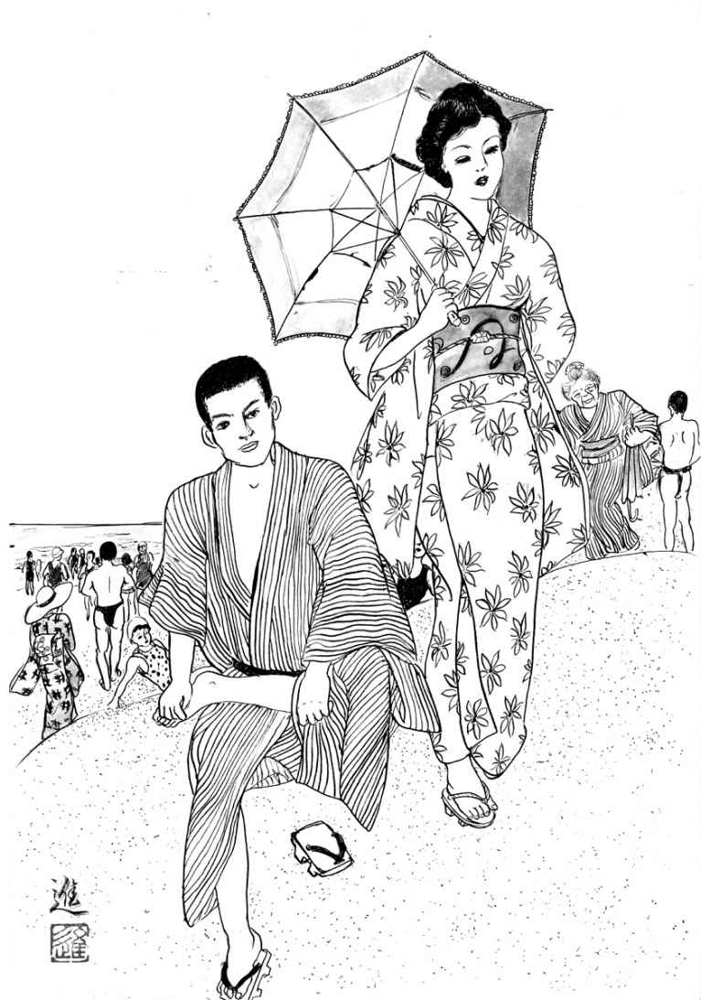
あれは、江川のお嬢さんに会った翌々年の夏でしたが、村松の兄貴がわたしを呼んで、
「栄治、おめえ船橋の兄弟分のところへ加勢に行ってくれ。出入りになるかもしれねえから、十人ばかりつけてやる」と、こう言ったんです。
兄貴の話では千葉県の船橋に伊藤千代吉という親分がいる。出羽屋とは昔からの付き合いで、義理も堅い。その伊藤の親分が、最近力をつけてきた矢萩才次郎という新興ヤクザに押されて困っているという。それで矢萩の野郎をどうにか始末しなければならねえ、ということになって、出羽屋に助っ人を頼むといってきた。「それでおめえに行ってもらおうてえんだ、向こうがやる気なら、とことんやれ。加勢が欲しい時には、いつでも言ってこい」と村松の兄貴が言うので、「なあに、俺たちだけで片づけますよ、見てておくんなさい」とわたしは見栄を切りました。
伊藤の親分は、そりゃあ喜びましたね。下にも置かないもてなしです。こっちはまるで大名になったような気分。なにしろ縄張りが守れるかどうかの瀬戸際なんだから、もてなし方も尋常ではない。町一番の芸者を呼んで、毎晩酒盛りです。
こっちはそんなにもてなされたら恩義を感じるから、矢萩一家がやる気ならいつでも相手になるつもりで、手ぐすねひいて待ちかまえていた。ところが一向にそんな気配はない。相手はいくら勢力が大きくなってきたといっても、たかが田舎の新興ヤクザです。東京から加勢が来たと知って、すっかり小さくなっちまった。
伊藤の親分は、「どうやらこのまま手打ちになりそうなんで、栄治さんはこのまま気楽に遊んでいておくんなさい」と言う。
どうやら親分は本気で喧嘩をするつもりはなくて、矢萩才次郎の縄張りを花街から追い出せればそれでいいと思っている様子です。亀蔵は、なんでえ、伊藤の親分もだらしねえ、なんて不機嫌に口をとんがらかしていましたが、こっちはあくまで加勢にきたんですから、深く口を出すことはできません。それでまあ、のんびりしていよう、ということで毎日ぶらぶらしていた。
泊まっていたところは遊廓のまん中で、にぎやかなところでした。カフェーなぞもあったし、洋食店もあったんです。そんな洋食店のひとつに「兵頭軒」というのがありましたが、そこは洋食のほかに氷だのトコロテンも食べさせる。その日はあんまり暑い日で、氷の旗がひらひらしているのに釣られて、ついっと入った。
「なんでもいいや、氷をくんねえ」手拭で汗をふきながら、ひょっと見上げると、そこに目のさめるような、いい女が立っている。髪を銀杏返しに結って、縞の着物に白いエプロンをかけている。翌日も行ってみると、ちょうど昼時でやけに混んでいる。女はこっちの顔を見ると、「あら、いらっしゃい」と言って、微笑した。
女は女給たちの先頭に立って、てきぱき働いている。その動作に、なんともいえない色気がある。額は白くてすっきりと広い。目は切れ長で、今にもなにか言いたそうな表情。エプロンの袖から伸びた細い腕がつやつや光っている。わたしはその様子を椅子に座って、馬鹿のように見とれていました。翌日も行きましたが、客は相変わらず多い。
「毎日、暑いわね」女は目でちょっと笑った。わたしは長い間そこに座ってました。気がつくと、店はもう誰もいない。女が隅の椅子に腰掛けている。
「何時だい」
「三時ですよ」女はお盆を胸の前に抱えている。透き通るような頬に髪の毛が影を落として、すこし厚めの唇の朱がなんともいえず美しい。
「遊び人は嫌いか」
「あんた、出羽屋の人でしょ」
「やならもう来ねえぜ」
「店の主人が恐がっているのよ」
「それじゃ迷惑だな」
「その角にカフェーがあるでしょ。あそこで待ってて」
こんな風にして、わたしはおみつと親密になったのです。ところがそうこうするうちに、女との仲が伊藤の親分の耳に入ってね、親分は亀蔵を呼んで、
「栄治さんに言っておくんなさい、あの女には幕田さんが後ろについていなさるんでね、近寄ると面倒なことになりますよ」と、こう忠告したんだという。
亀蔵が聞いた話では、幕田というのは、大宮さんの右腕で、ここらでは相当顔が通っている男だという。大宮というのは、その頃の関東では名の通った土方の親分で、「日光の大宮さん」といえば、その道では知らない人はないほどの人物です。伊藤の親分の話では、幕田はゆくゆくはおみつを妾にするつもりでいるんだという。
「兄貴は気が多過ぎるんだ。この間だってよ、親分は怒っていたらしいぜ」
「あれとこれとは話がちがうじゃねえか」
「そうかなあ、そうは違いはねえでしょう」
「うるせえ、黙ってろ」
「親分が知ったらまた怒りますぜ」
亀蔵は本気で心配してくれている。それでこっちもはっきりさせようと思ってね、おみつを氷屋に呼んで、「おまえ、幕田って男のものなのか」と聞きました。おみつは首を振って氷をスプーンで一口食べて、じっと見つめている。
「他人のものを取ったとあっちゃ、俺も顔がたたねえ」
「何でもないのよ。ほんとよ。奥さんがあるんだから」
「なるほど」それで、おおよその見当はついた。暑い日でね、じっとしていても汗がたらたら肌を伝って流れ落ちてくる。おみつの額にも髪の生え際にも、玉のような汗がにじんでいる。
おみつは懐からハンカチを取り出して、手を伸ばして、わたしの額の汗を拭きました。
「どうするの？」
「何が？」
「これから」
「おめえは、馬鹿だな」
「そうね」
おみつとわたしはトコロテンを食べました。それからその店の小僧に小遣いをやって、亀蔵を呼んで、「あとはおめえに任せるから、いいようにやってくれ」と言ったんです。亀蔵は青くなりましたね。
「そんなことをしたら、兄貴、たいへんだぜ。これから売りだそうてのに、なんで無茶をするんだ」
「土方がこわくてやくざがつとまるか」
「そうは言ってもよ、これからどうする気なんです？」
「ひとまず、岡田の兄貴に相談しようと思うんだ」
こうして女をつれて、東京へ帰りました。そうして、おみつを宿に待たせて岡田の兄貴のところへ行ったんです。兄貴は事情を聞いて、いきなり、「そら、まずいじゃねえか」と、怒鳴りつけましたね。
「このままじゃ、ただじゃすまねえぜ。親分も怒るにちげえねえ。ともかく今のうちなら、なんとかなる。早く女を帰しちまえ」と、こう言うのです。それで、わたしは頭を下げて、宿へ帰りました。
今考えると、あの時はほんとに頭がどうかしていたんですね。他人の女を横取りして、兄貴の忠告にも逆らって、なんの当てもないのに駆落ちしたんですから、よほどの阿呆としかいいようがない。それでもやっぱり女と別れたくない、ということだけははっきりしていたんですから、出羽屋を破門される覚悟は出来ていたんです。
わたしはおみつを連れて、電車に乗って、埼玉の方へ行きました。それからあっちこっち転々と歩きましたが、いちいち場所の名を挙げてもしょうがないほど、いろいろなところです。湯田中の温泉には半月ばかりいて、この時だけはずいぶんゆっくりして、ほんとの夫婦になった気分でしたが、毎日山を見ているとわけもなく気持ちが落ち着かない。
「ここの女中になって働いてもいいのよ」とおみつが言うのを、「馬鹿やろう」と叱って、またあちこちと歩きました。
辛い旅でしたが、女はちっとも辛いとは言わなかった。金がなくなると、その土地の親分に挨拶に行って、小遣いを貰いました。中には挨拶に行っても知らないふりをするものも多い。それは、向こうじゃ義理もなにもないんだから、仕方がないことです。
どんなふうに挨拶に行くかって言うと、勿論、女は連れて行きません。近くのソバ屋とか、メシ屋なんぞに待たせて、一人で行く。これは日が落ちないうちに行かなければならない。日が落ちてから行ったんでは相手にしてくれない。これが仕来りというものです。
入口では仁義を切ります。仁義の切り方というのは映画では格好よくやりますが、なかなか難しいものです。これをやれば、こいつはどの程度の人間であるかということがだいたい分かる。仁義を切って土地の親分に挨拶して、僅かな金を包んでもらって露命をつないでいたというわけです。
こんなふうにして、八月ごろから三カ月余り逃げて歩きました。好きな者同士が一緒なんだからこれよりけっこうなことはあるまいと思うかもしれませんが、逃げるというのは辛いもんですね。雨の日なんかはどうしようもない。昔の田舎道は雨の日はとても歩けたものではない。道路全体が田圃と同じです。少し強い雨が降ったら川になる。どろどろの水が流れて、歩いたら尻まで泥が跳ね上がる。高下駄をはけば、下駄の歯に泥がはさまって身動きがとれない。映画に出てくるように雨の中を女と一つ傘に入って、しっぽりと濡れて行こうなんて訳にはいきません。仕方が無いから安宿の二階なんぞにもぐりこんで、一日中ぼんやりしている。
いくら惚れてる仲だって、昼間から蒲団に入って抱きあってるなんてわけには行きません。追われてる身ですから、なんとなく疲れちまってその気にもなれない。とうとう一銭も金がなくなって、薬師堂の中にもぐりこんで、ムシロ一枚で一夜を過ごしたこともあります。知らない土地ですからどこにどんなお宮があるか見当もつかない。それで土地の人を探して、「親父が長く患っているもので、そっちこっちの仏様や神様にお願いして歩いているものですが、このあたりに御利益のある神様はありませんでしょうか」なんて聞く。すると当時は必ず村や町には守り神というものがありましたから、「あそこの神様にたのんでみなさい」なんて教えてくれる。
それであちこち探して夜になって中へ入り込んで寝たものですが、こんなところは寝心地がいいなんてわけにはいきません。夏ですからね、蚊に食われて酷い目に遭いました。蚊という奴は本当にえげつない奴らです。着物を被っていてもその上から刺す。蚊遣りでも焚ければいいが、お堂の中で火を使ったり、煙を出したりすることは出来ません。村の人間に見つかって巡査に通報されるかも知れない。だから蚊に刺されてもじっと我慢してなけりゃなりません。
腹が空いてどうにも我慢ができない時には、泥棒もやりました。西瓜を盗んで食べたり、とうもろこしなぞは焼くところがないんで、生のままかじったりしました。
不思議に病気にはならなかった。洗濯は百姓の家を訪ねていくと、井戸を使わせてくれる。たらいも貸してくれるから下着を洗って、竿に干して乾くまで着物一枚で待っている。昔は旅人というのは珍しくなかった。旅の人がくれば百姓は茶を入れてくれたり、水を使わせてくれたり、ほんとに親切にしてくれたものです。
けれども昔から、「旅人は、末は並木の肥やしになり果てる」と、こう言われたものです。どんなに体が丈夫でも、毎日あてどもなく歩くんですから、旅は憂いもの辛いものという言葉の通り身も心もくたくたになります。このままでは病気になって行き倒れになるのが目に見えている。だんだんおみつの姿を見るのが、辛くなってきた。兵頭軒にいた頃の俤はどこにもない。俺なんかに惚れなければ、いい着物をきて、お芝居やら映画を見て、おもしろおかしく暮らせるというのになあ、そう思うとつくづく情けなくなった。それで、ある日、言いましたよ。栃木県の佐野の川の縁を歩いている時でした。
「お前は一人で親のところへ帰れ、俺はなんとか始末をするから」
そしたら女は「帰るぐらいなら死んだほうがいい」と、こう言うんです。もう十一月でね、風がやたらと沁みるんです。女が泣くもんで、苛らいらした。明日はほんとに別れよう、そう決心して、その晩は近くの小高い山に入って女を抱いて寝ました。
次の朝、日がのぼる頃、寒さで目を覚ましたんですが、気がつくと女がいない。あたりは枯木ばかりです。心が冷たくなるという言葉がありますが、あの時の気持ちはそれがぴったりでした。
「逃げたのかな」と思うと、悔しいような寂しいような、何とも言えない気持ちなんです。別れるつもりでいたのに、逃げられてみると腹が立つんですから、人間というものは分からない。気を取り直してあたりを捜したが見つからない。それで、もうだめだなと思って神社の石に腰をおろしていた。そしたら遠い田圃道をおみつが早足で歩いて来た。
「どこへ行ってたんだ」と、そう言いましたが、いっぺんに力が抜けてしまった。
「お握りを貰って来たのよ」
竹の皮の包を開けると、握り飯が四つ包んである。「よくくれたな」と言ったら、帯留めと交換したんだそうです。それでわたしは握り飯を食べながら、やっぱりもう駄目だな、どうにもならねえ、と、そう思いました。それでおみつに、「このままじゃああんまり情けねえ、俺もそのうちいっぱしのやくざになって、必ず迎えに行くから、一旦家に帰れ」とこう言いました。女は泣きましたが、とうとう帰るということになったんです。
おみつのことを、わたしは小岩まで送って行きましたが、それから船橋に行って、顔見知りの食堂へ入って、「すまねえが、ちょっと包丁を貸してくれねえかな」と頼むと、「栄治さん、お珍しいですね。なんにするんです？」と手拭を頭にきりりと巻いた板前が聞く。「ここで使うんだ、心配するな。すぐに返すから」そう言って、包丁を借りて、用意してあった紐の端を歯でくわえて、もう一方の端を右手でつかんで、その紐を左手の小指にきつく巻いた。そしてぎゅっと締めてから指を包丁で詰めたんです。板前はあっけにとられていましたが、こっちは痛くてそんなことは気にしているひまはありません。腹巻のさらしの端を切って指の傷を巻いて、紙を一枚くれねえか、といって、その半紙に切った指を包んで、外に出ました。指を詰めたぐらいで許してくれるかどうか分かりませんが、こうなったら仕方が無い。なるようになれという気持ちで幕田の家に行きました。
「ごめんよ」と言うと女中と一緒に若い男が出てきた。「これこれのものだが詫びにきました」とこう言って、詰めた指を半紙に包んだまま差し出しました。相手は、「ちょっとそこで待ってておくんなさい」と奥へはいって行きました。幕田はいたのかどうか分かりません。裏の方で女同士が喋っている声がしていましたが、だんだん痛みが増して脂汗が出て、着物が汗でぐっしょりになってくる。
しばらくしてさっきの男が出てきましたが、「親分は、分かった、と言ってます。これでお引きとりください」と存外丁寧に言う。それでこっちは、
「そうですか、それはありがとうございます」と頭をさげて帰ってきた。あんまりあっさり片がついたんで、なんだか拍子抜けの格好になった。このあとわたしはまっすぐ浅草へ帰りました。帰る道々、なんであれほど簡単に分かってくれたのかといろいろ考えましたが、どうにも解せない。それで、これはきっと出羽屋の親分が詫びを入れておいてくれたんだろうと思ったんです。親分は大磯から帰っていて、わたしの顔を見ると「おめえもいい顔になったんだ。いいかげんに自分てえものを野放しにしとくなよ」とこう言いましたが、それきりで、あとはなんにも言いませんでした。
岡田の兄貴にはさんざん説教を食いましたが、村松の兄貴は別に怒りもしない。それどころか「おめえも、なかなかいいところがあるじゃねえか」と言って、わたしが痛みを我慢しているのを見ると、「俺がいい医者を紹介してやろう」なんて気を遣ってくれる。そしてわざわざ吉原病院の外科の医者に手紙を書いてくれたんです。
ところで女には、それからずっと後まで会いませんでした。会えばどうなるかぐらい分かりきってますからね。女に泣かれれば男は弱いものです。だからこっちからは会いに行かなかった。噂では女は、その後しばらくして家出をしたということですが、その頃は前橋の刑務所に入っていましたから、女が浅草に訪ねて来てもどうせ会えなかったというわけです。
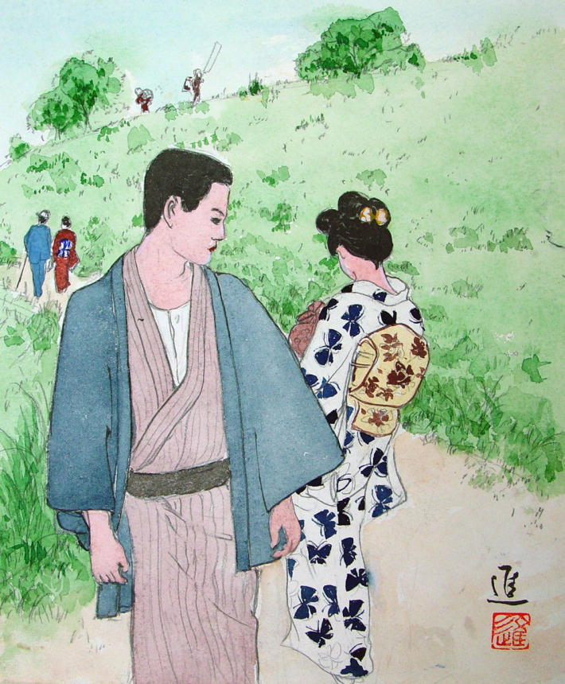
土曜日の午後、診察を終えて一息ついていると、初世が訪ねてきた。
「土曜日でどうかな、とは思ったのですが、あの人が、先生はいつも夜ばかりおいでになるから、たまには明るいうちにお茶でもどうだろうか、なんて言って、ちょいと様子を聞いて来い、とこういうものですから」
「熱はどうです」
「平熱ですよ。ごはんも少しずつ食べるようになりましたし、あのまま駄目になるかと心配していたら、よほど強いんですねえ」
茶の間に入ると、座卓の上に水盤が置いてあった。水は入っていなくて、まん中に凸凹の大きな青い石が、ごろりところがっていた。男は、茶の結城紬の着物に、黒い綾織り模様の角帯を締めていた。
「なんですか、これは」
「盆石というものだそうです」
私は水盤の中の石に顔を近づけた。
「持ってみてもいいですか」
「どうぞ」
石の層が硬く、何層にも重なりあっている。
「草が生えてますね」
「生き物ですからね。五十年も前のことでしたよ、これを貰ったのは。あの頃はいろいろと馬鹿なことをやって、親分も呆れていましたが、あるときわたしを呼びましてね、栄治、おめえ、こいつの面倒を見ろ、と言うんです。それでわたしはキョトンとして、なんです、親分、こんな石ころをどうしろというんです、と聞いた。そうすると親分は、これに朝晩、水をくれてやるんだ、と言う。それで、わたしは呆れちまいましたが、親分の命令ですからね、仕方なく自分の部屋に持って帰りましたよ。そして朝晩、水をくれてましたが、そのうちそれもやらなくなって、いつの間にか失くなっちまった。そうして何十年も忘れていたんでしたが、それが急に出てきたんです」
「最近ですか」
「八年ばかり前になります。弟分の亀蔵です。亀蔵は肺癌を患って死にましたが、死ぬひと月ばかり前にわたしを呼んで、兄貴、こいつを覚えていますか、とこう言う。それで、なんだい、こんなもの、どこにあったんだと聞くと、亀蔵は、兄貴が前橋に入る時に、こいつはここに置いといたら失くなっちまうな、とそう思ったから、俺の柳行李にしまっておいたんだが、ついそのまま忘れていた。ところが荷物を女房に整理してもらっていたら、これが出て来た。今のうちに返しておかないと、またどっかへ行っちまうと思ったものでね。
亀蔵は気性のさっぱりとした好い奴でね、あいつがわたしより先に逝くようになるとは思いもよりませんでしたが、とにかくちゃんと取っておいてくれたのは有難い。こうして年を取ってみると、あの時、親分が言った事が分かるような気がしてきましてね、毎日一度は水をやることにしてるんです」
男は痛い方の足の上に毛布を掛け、両手を着物の胸の前で軽く組みながら、青い石をしげしげと眺めていた。
「前橋の刑務所に入ったのは、二十六の時です。人を殺めましてね、四年余り入っていました」
男は、着物の上にどてらを着て、首に襟巻を巻いて座椅子に寄り掛かっていた。風に鳴る電線が屋根の上で、うなっていた。
大震災で浅草十二階の凌雲閣は潰れましたが、その北側に瓢箪池というのがありました。その近辺には女郎屋が軒を連ねていましたが、その頃わたしは、その一角にあった賭場をまかされていたんです。夏の盛りのやけに暑い日でね、座っているだけで汗が出ましたが、昼ごろ、村松の兄貴がわたしを呼んで、「栄治、しばらくの間、居候を置いてくれめえか」と頼んだ。
それで「どんな野郎なんです」と聞くと、「俺が以前世話になった兄弟分で、品川の富さんは知っているな。そこのナカボンで、清正てえんだが、腕はいいらしい。ところがなんだか知らねえが、いざこざを起こして若いものと折り合いがまずくなった。それで頭が冷えるまで浅草で預かってくれめえか、という話なんだ」
「なるほど」
「俺の所は親分があんな風だしな、面倒な野郎は近づけたくねえんだ」
こちらも兄貴の頼みですからね、一も二もなく引き受けました。ナカボンというのは川並のところでも話しましたが、バクチをやる上では大事な仕事です。ナカボンの腕で、バクチの場は生きたり死んだりする。だから、これをやれるというのは大したものです。わたしの賭場はほんの小さいところで、亀蔵がナカボンをやってましたが、これはどうひいき目に見てもいい腕とはいえません。それで、その男が来るのを楽しみにしていたんです。
ところが、いざ会ったら、厭な予感がした。そいつの顔を見た途端、こいつはとうてい同じ釜の飯を食える相手じゃねえ、とそんな感じがした。そうしてその予感通り、この男を殺す羽目になったんですから、恐ろしいものです。
殺されるにはそれなりの理由がありますし、殺すほうにもそれなりの理屈はありましょう。しかし、ほんとのところは話では分かりません。話なんてものは、あとからどうにでもなる。
やくざは、理屈では人を殺したりしませんよ。男が立つか立たないか、部屋が立ち行くか行かないか、それが一番の問題なんです。とにかくわたしは、清正がここにいたんでは部屋が駄目になる、と悟った。部屋の統制が取れないようでは、兄貴面してはいられませんし、親分に合わせる顔がない。それでなんとかしないと、と考えたんですが、いくらなんでもいきなり、それなら奴を殺してやろう、なんて馬鹿なことを考えるはずはありません。これは困った、こいつは早いとこ追い出さなけりゃならねえな、とは思いましたが、村松の兄貴が兄弟分から頼まれたものを、そう簡単に追い出すということもできません。で、少し様子を見ることにしたんです。
結局、事件は二カ月ぐらいたってから起きたんですが、騒ぎの種は最初から蒔かれていた。ああなることは目に見えていたんですね。坊主憎けりゃ袈裟まで憎い、という諺がありますが、あれは全く本当です。わたしは、清正のやること為すこと、ぜんぶ気に入らなかった。多分、向こうもそうだったんでしょう。
清正は、見てくれは実に立派な野郎でね、背は高いし顔立ちもいい。鼻が高くて、眉が張って物腰もそつがない。まあ二枚目といったところでしょう。けれどもこいつには、あからさまに人を見下すようなところがある。
「どうかよろしくお願いいたします」と頭を下げながら、その頭を上げる時にちらっとこっちを見る、その目が「こんな若造を兄貴なんぞと呼べるかい」といった顔をしている。
わたしはこの時まだ二十五を過ぎたばかりのところで、清正は七つ八つも年上でしたから、向こうも面子があったんでしょう。けれどもこの世界は、年は関係ありません。年を食っていても、便所の羽目板のような役目しか出来ない野郎もいれば、若くても一家の大黒柱になるものもいる。年が上だから、どうのこうの、というのは通用しないところです。
それなら、この男はどうしようもないのか、何の取柄もないのかというと、そうは簡単に割り切れないところがあるから、具合が悪かった。実のところを言えば、鼻柱が強いだけあってバクチの腕は確かに良かった。
ためしにナカボンをやらせてみると、声の掛けかたも目配りも堂に入ったもので、どんどん勝負が進む。調子の低い錆び声で、いかにも乗りやすい誘いをかける。それにつられて客はどんどん張る。
賭場の空気がピンと張って、壼の中の賽の目が、まるで見えるような気がする。それで清正は人気が出て、うちの若いものも、清さん、清さん、なんぞと言って、清正を立てる。清正は若いもんの面倒を見るという具合で、しばらくは仲よくやっていたわけです。ところが、そうこうするうちに、だんだん化けの皮がはがれてきた。
確かに腕はいいが、それを鼻にかけるのが目に見える。口に出して言うわけではないが、目つきが何とも言えず皮肉なんですね。相手を、小馬鹿にしてるのがすぐに分かる。どうしてあんな顔をするのか、わたしには分かりません。性分なんでしょう、ついつい顔に出る。客を楽しませるかと思うと、次には顎の先でせせら笑う。これはバクチ打ちとしては致命傷です。
ある時こんなことがあった。客が少ない晩でしたが、清正がわたしに「代貸し、客も少ねえようだから、どうでしょうね、チーパでもやりませんかね」と言う。それで「やってもいいが、今晩は顔が足りねえから、しょうがあるめえ。また今度にしようじゃねえか」と言った。すると清正はニヤリとして、
「今度というのはいつのことなんです」とこう言う。それでカチンときましたが、「まあ、そのうちということだ」と言って、その場は終わりになりました。しかし奴は、こんなことを客の前でぬけぬけと言うような奴ですから、どう考えても利口ではありません。
人間というものは誰でも存外単純ですから、褒められれば嬉しいものだし、けなされれば腹が立っ。殊にやくざの世界では人前で、てめえはこんなことも出来ねえのか、と言われたら身体を張って勝負しなければなりません。
つまり清正は、わたしにそれと同じことを言ったというわけですから、これは面と向かって喧嘩を売ったに等しいわけでしょう。しかし素人衆には、これはどういうことなのかお分かりになりにくいかもしれませんから、少々説明しておきましょう。
賭場を持っているバクチ打ちは客を遊ばせるのが商売ですが、時には自分たちが遊ぶということもあります。その一つに、チーパというのがある。これはよほど特殊な人間でなければやりません。やくざでも、バクチの本職だけがやる遊びです。
お客が少なくて、やくざが多い場合に、「どうだい、チーパでもやるかい」と言って、仲間同士がやる場合もある。こんな時は、素人の人はボンから下がってもらって、見物だけさせるわけです。そうではなくて、チーパをやる目的で賭場を開く場合もあります。今のやくざで、この遊びをちゃんとできるものがいるかどうか、わたしは知りません。
どんなものかというと、普通の勝負では同じ大きさのサイコロを二つ使って、丁半で遊びますが、チーパというのは四つ使います。しかもみんな大きさが違う。一番大きい賽をダイトウ。二番目の賽は黄色い色をしていてニシュク。三番目に大きい賽は、目に赤い色が塗ってあって、それでアカッパという。一番小さいものはチビリ、とこう言う。つまり、この時使う賽は大きさも色も、それぞれ違うというわけです。ボンの周りのものは、それぞれの賽に金を賭けます。どんな風に賭けるかというのは複雑ですから言いませんが、とにかくこれは面白いものです。
みんな本職ですから、場をこしらえる必要はないんですね。ナカボンも「さあ、張った、張った」なんて大きい声を出すこともない。喋る者なんて一人もいない。静かなること林の如し、という言葉がありますが、丁度そんな風で、賭ける金も普通よりもずっと大きい。相手はみんな本職のバクチ打ち、目付きが違います。金を置く音と、着物の擦れる音ぐらいしかしない。やがて頃合を見て、ナカボンが、「はい、手を切って下さい」と言う。これは「札から手を離して下さい」という意味なんです。みんなが手を離すと、ナカボンが、「勝負」と静かに言う。それで金が動くという次第です。
清正は、このチーパをやろう、と言ったわけです。ところが奴は、わたしのところでそんなバクチが出来ないということを百も承知しているんですね。バクチというのはそれなりの相手が揃っていてはじめて場が持てる。チーパをやるためには、いい親分とかバクチ打ちが始終出入りしていなければなりません。高等な遊びをするためには、それなりの格と力がなければならないということです。清正はそんなことを承知していて、わたしを笑ったつもりでしょう。
亀蔵は「兄貴、いいんですかい、あんなことを言わせておいて。野郎、図に乗りますぜ」と言いましたが、わたしは、「なに、あいつは正直に教えてくれたまでだ。まあ、そのうちやろうじゃねえか」と答えておきました。けれどもわたしは、口で言うほどあっさりした人間ではありませんからね、この野郎、と思って、腹に納めておいたんです。
しかし、つくづく考えてみると、清正というのはもったいない男だったと思うんですね。あれだけの腕を持っていれば、人前で自分の腕の自慢をするなんて必要はちっともありません。黙っていても、あいつは大した者だ、あれがいなけりゃこの場はもたねえと、みんなが見てくれる。ひとりでにみんなから兄貴と呼ばれるようになって、一家の柱に成っていくわけです。
ところが清正は自分をやたらとひけらかしたがる男でしたから、みんなから、「ありゃあ、余程の阿呆だぜ」と安く見られて、相手にされなくなった。
こんなわけで、わたしは村松の兄貴に、こいつはとても面倒が見られねえ、と言おうと考えていたんですが、その矢先に面倒が起きた、それもまったくつまらないことでね。ある晩、清正は酔ったあげくに女郎屋の看板にしょんべんをひっかけた。深夜のことで、誰も見ていないと思ったんでしょう。実際、その店は閉まっていて気がつかなかった。それが向いの八百屋の女中が見ていたんです。まあそれも一度なら、事は大きくならずにすんだんでしょうが、清正は酒を飲むと、必ずそこら辺りの看板にしょんべんをひっかけたらしい。それでそのことが評判になって、ある時うちの下っ端の光公というのがそこを通りかかると、女中が呼び止めて、
「なんだい、あんたんとこの居候は、毎晩、毎晩、小便をそっちこっちの看板にひっかけて、犬だって利口なのは、あんなことはやらないよ。あんな奴を見逃してたら、あんたとこの親分の評判もがた落ちだよ」と文句を言った。
光公は話を聞いて驚いたが、とにかく、「そいつぁすまねえ。このバケツを貸してくんな」と女中に断わって、バケツに水を汲んで看板を洗った。それから周りの店の主人に謝まって、それが済むとわたしのところへ来て、「これこれこんなことがあったんだが、兄貴、ありゃあどうしようもねえぜ」とこう言うんです。
それでわたしは、「そうか、俺も村松の兄貴に話しに行こうと思っていたところだ。まあ、それまでの辛抱だと思って我慢しろ」となだめた。
ところが光公は癪にさわるから、清正を探して、
「おい、清さんよ、いくら酔っぱらってるったって、あんなことをされたら兄貴の評判に傷がつくじゃねえか」と文句を言った。普通の居候ならここで素直にあやまって、ひとまず収まるというのが筋でしょう。
ところが清正は、そうではなかった。注意されてカッとなって、言うにこと欠いて、
「てめえら、女中とぐるになって、俺を四六時中見張ってやがるのか」と怒鳴ったんです。
それで光公はカンカンに怒ってね、「この野郎、とんでもねえ馬鹿野郎だ。年上だと思って下手に出りゃ、いい気になりゃがって、その口の利き方はなんだ。てめえみたいな野郎は、畜生にも劣るてえ奴だ」と、大声で言い返した。
すると清正は、いきなり光公の顔を力まかせに殴りつけた。光公は、「ぶっ殺してやる」と言って組みついた。まあこの時は亀蔵が中に入って二人を分けて、清正はわたしに手をついて謝ってね、それでなんとか収まりましたが、亀蔵は、
「あの野郎はこれ以上置いてはおかれねえ。早いところ追い出しましょうや」と言う。他のものも同じ意見ですから、それでこうなったら村松の兄貴も納得してくれるだろうと考えて、明日にでも行ってこようと決めたんです。
ところが村松の兄貴に相談に行く間もなく、その日のうちにまた騒ぎが起きた。騒ぎが始まったときその場にはいなかったんですが、後から聞くと、清正が光公に、小便をするところを見たという女中のところへ連れて行け、と絡んだそうです。それで、どうするんだと聞くと、そんなことはてめえの知ったことじゃねえ、連れて行けばいいんだ、と目ん玉ぁむき出して言う。
それで光公は、おめえという野郎はどうしようもねえ阿呆だ、とこう言った。そうしたら清正は光公に殴りかかった。周りのものが清正を押えようとしたが、力が強くてどうしようもない。亀蔵がわたしのところへ飛んで来たんで、すぐその場へ行ったんですが、これから先は活劇じゃあるまいし、詳しく話すようなことじゃありません。
かいつまんでお話しすると、つまり清正は頭に血が上って、前後の見境がつかなくなったんでしょう。台所に走って行って三叉になったキリを摑んで光公に突きかかった。そうしてわたしが止めようとすると、今度はやにわにこっちへ向かってきたんです。このキリは夏の間昼寝をする時に、氷枕に入れる氷を割るのに使っていたものです。
「ぶっ殺してやる」と言って清正が向かってくるのを、そこにあった出刃をつかんで相手の胸に突き通した。わたしらは骨透きと呼んでましたが、こいつは刀より切れるもんですね。肋骨がすっぱりと切れて、心臓に突き通った。血がバッと吹き出て、こっちは返り血で真っ赤です。
警察に知らせたのは、たまたま顔を出した西川流の踊りの師匠でね、刑事と巡査が大勢飛んできた。そうして、現場を見て、年かさの刑事が、「栄治、おまえがやったのか」と聞くので、「わたしがやりました」と答えました。刑事も巡査も、みんな顔見知りでしたから、手錠をかけませんでした。
わたしは留置場から市ヶ谷に送られ、そうして裁判になりました。この時わたしは、出羽屋の親分というのがどれほど大した人間か、ということをしみじみと感じましたよ。あんなことは他のものにはとても出来ません。親分はあっちこっち奔走して、裁判所に嘆願書を出してくれたんです。
村松の兄貴と一緒に、浅草の町内から仲見世をずうーと回って、何百という署名を集めてくれました。身体が悪いのに親分が浅草の店を一軒一軒まわって、頭を下げて署名を集めてくれている、という話を刑事さんから聞いて涙が出てね、留置場のなかで手を合わせて拝みましたよ。しかも親分は、町の人間の署名を集めてくれたばかりではないんです。なんと、清正の親に会いに行って、わたしの罪を一等免じてくれますように、という親の嘆願書まで提出したんです。
清正は、もとは目黒の材木問屋の倅だったそうです。それが、ちんぴらの仲間に入ったのが悪の始まりで、家の金は盗み出す、女は泣かせる、始末におえないで、親が頼んで品川の親分に面倒を見てもらうようになった。そんな男だから、親もしょうがないと思ったんでしょうか、
「いつかはこんなことになろうと覚悟をしていた、それがいままで生きていたのが不思議なくらいだ。こんどの事も世話になっている親分のところで迷惑をかけて、その挙げ句に刃物を振り回したのだから死んでも仕方がありません。親も兄弟も決して恨みに思ってはいないのですから、重い罪には問わないで欲しい」と、このような内容の嘆願書でした。
まさか親ですから、どんなに極道の息子でも、死んでくれて良かったと思うわけはありません。息子を殺した相手を憎いと思わないはずはないでしょう。けれども親分は、なんとかわたしの罪を軽くしてやりたい、と思ったんでしょうね。品川の親分に仲に立ってもらって、清正の親から嘆願書をもらって裁判所に提出してくれたんです。
それから代議士も動かしました。これは浅草に地盤を持っている代議士で、大久保という人物でした。大久保代議士は弁護士を世話したり、いろいろ手を回してくれたようです。
判決が下りるまで、一年かかりました。殺人の罪は免れて、傷害致死で実刑五年でした。当時やくざ同士がこの種の事件を起こすと、だいたい五年から六年というのが普通でした。それで、一旦巣鴨に入って、それから前橋に送られました。留置されていたのが一年ですから前橋には四年送られることになった。その頃は自動車ではなくて列車で護送されました。護送される囚人が多いときは一列車借り切りでしたが、わたしの時は少なかったので一般の乗客とは接触出来ないように分離されて、何両か専用車を使ったんです。
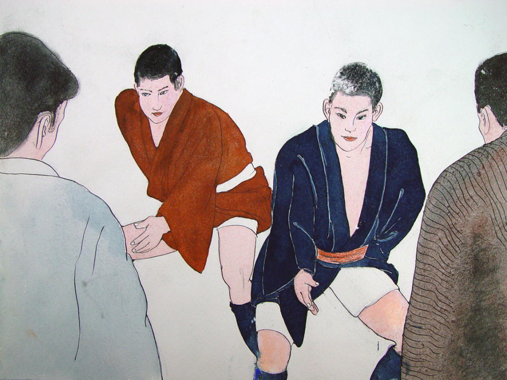
「先生は刑務所の中は、ご存じないでしょうね」
「少しはありますよ」
「へえ、それはまたどうしてです」
「受刑者が怪我をしたり病気になったりすると、刑務所から電話が来ましてね、診に行くことがあるんです」
「なるほど、それで、どうです、中を見たご感想は」
「面白いですね。騙そうとしますから」
「仮病ですか」
「ええ。もちろん本当に具合が悪い時が多いんですが、なかには何とか病気をこしらえて、医者を騙そうとする。痛い痛い、なんて言って、脂汗まで流しますからね」
「あはは、そうでしょう。なかには大した奴もおりますから、若いお医者ではやられるかもしれません。でも、医者もいろいろでね、わたしの入った前橋の刑務所には専属の医者がいましたが、これはひどかった。囚人が苦しんでいてもなかなか来ない。夜なんぞは絶対に起きません。死亡診断書は自分で書きますが、大概の事は看守まかせでね。わたしらは病気になったら終わりだと覚悟していましたよ」
とにかく前橋の刑務所は寒かった。思い出すと、あそこはいつも冬みたいな気がするんです。刑務所は前橋の町の郊外の利根川のすぐそばですから、どうどうと川が流れる音がしてね、夜中などは腹がすいているんで、耳に痛いほど響く。北の空には赤城の山がありますが、そこから冷たい風が吹き下ろしてくる。周囲には十八尺の高さのレンガ塀が廻っていて、塀の中で風がぐるぐると渦を巻く。この音がまた寒かったですね。
舎房は巣鴨はひとつが十二人収容しましたが、前橋は六人でした。夜は畳の上に薄い蒲団を一枚敷いて寝ますが、その蒲団が実に小さい。幅は三尺はありません。二尺五、六寸だったでしょう。長さは五尺五寸ぐらい。わたしは背が高いから足が外に出てしまう。掛け蒲団は、これよりひと回り大きい。けれども何年も使い古したものだから、中には綿がろくに入っていない。入ってはいるんですが、何度も打ち直しているから固くなってぺしゃんこになっている。おまけに平らに入っているというのではなくて、あっちこっちに島のように固まっている。綿が固まっているところは高くなって、ないところはまるで布だけという有様。敷き蒲団もこのありさまですから、寝心地の悪いことといったら一通りではありません。
この刑務所で、わたしは袋張りをやってました。袋張りの仕事をしていたもののうち十五人ほどは、やくざでした。「刑務所に入ったやくざは、柄のとれた肥びしゃくのようなものだ」なんて話がありますが、これには落ちがついている。「手がつけられない」なんてくだらないしゃれですが、まんざら当たっていないこともない。
やくざというのは世間ではまともな仕事をしていないんですから、中に入っても仕事が出来るわけがない。まさかバクチをやらせるわけにはいかないでしょう。しかし遊ばせておくわけにはいきませんから、簡単な仕事を覚えさせる。特に袋張りというのは工程が単純ですからやくざにも出来ます。わたしが入ったとき、桐生の親分で新宮寛次郎、俗に「寛ちゃん」と呼んでいたやくざが入ってました。わたしはすぐに仲が良くなって、出所した後も長くつき合ってました。それからもうひとり、東京のやくざで本名岡村吾一、通称村岡健治というのとも兄弟分になりました。
この村岡というのは児玉機関と関係の深かった男です。これは、わたしが入ってから少し遅れて、入所して来ました。それから常五郎というのと波次というのはわたしの子分のようになって、いろいろと手助けしてくれた男たちです。
村岡は、なんで入れられたのか最後まで分かりませんでしたが、桐生の寛ちゃんは「警察の横車」で入ったのでした。
「馬鹿ばかしいったらありゃしねえのよ」と寛ちゃんは、わたしと並んで袋を張りながら、話をしたものです。「刑事が俺の賭場へ来てな、ピストルを二丁出してくれ、と言うんだ。兄弟はピストルを持ったことはあるかい、ねえだろう。そうだろうともよ。今度も骨透き包丁でやったてえんだから、大したもんだ」
「なにが大したものかい」
「そいつぁあ謙遜だ。まあ、そんなわけで、俺はもっちゃいねえ、と突っ張ったんだが、相手は承知しねえ。無けりゃ買って来い。そして、そいつを警察に差し出せ、と言う。挙げ句の果てに、どうしても出さないというんなら、手入れをすると、脅すんだ。それで俺もよくよく腹が立ってなあ、やりたけりゃいつでもやってくれ、と言った。そうしたら警察というのは律儀なもんだぜ、その晩ほんとに手入れをしやがった。賭場を開いている真っ最中よ。あっさりと捕まって、この有様だ」
寛ちゃんはひどく怒っていましたが、警察が横車を押したのは、地区の取締りの成績を上げるためなんです。わたしもここを出たあと、あれは昭和十三年の頃だったでしょうかね、鶯谷の賭場でそっくり同じ目に遭いましたが、やっぱりピストルを出せ、というもんでした。これは警視庁じきじき、つまり本庁から来たんです。やくざがピストルを持っているという情報が入って、それを全部取り上げるという計画でもあったんでしょう。しかし、わたしのところにはないんですから、どうしようもない。
すると、無いなら買ってでも出せ、と言う。ひどいもんですが、あくまでそんなものはない、と突っ張れば寛ちゃんとおなじ目に遭いますから、兄弟分にたのんで、当時の金で一丁三百五十円で二丁買いました。これは家一軒分の金ですが、背に腹はかえられない。すぐにそれを警察に提出しましたが、ごくろう、ということでそれきりになって、感謝状もくれなければ、処罰もありませんでしたね。
こんなわけで寛ちゃんとはすっかり意気投合して、それで作業場ではいつもひそひそ話していましたが、度が過ぎて看守を怒らせて、とうとう懲罰を受ける羽目になりました。
雪が降った日の、次の日でした。雪の後というのは、ふだんの何層倍も寒い。夜になると、いよいよ冷えて、やたらと小便が出る。うとうととしたかと思うと、誰かががたがたと起きる。誰かが終わると、次のものが立つ。こんなふうに一晩中小便に悩まされていましたが、いつの間にかとろとろとしたんでしょう。ふと目を覚ましたら、看守が呼んでいる。何です、今ごろ、と言うと、出ろと言うので、のそのそと出て行ったら、いきなり手錠をかけた。
「何だい。こんな夜更けに、なんにもしていねえじゃねえか！」と叫びましたが、もう一人の看守がわたしを殴りつける。なんの罪かと思ったら、看守の目を盗んで寛ちゃんと話をしていたという「通話の罪」だという。それで引きずり出されて、暗い廊下を歩かされて、コンクリートの部屋に連れて行かれた。途中で寛ちゃんも一緒になりました。部屋の中に小さなプールがある。そこへ入れ、と言う。電灯がひとつ天井からぶら下がっている。
「ぐずぐずするな」なんて看守が怒鳴る。こっちは手錠をはめられているんですから、どうにもなりませんが、ただでさえ震えるような寒い晩ですからね、水の中に入ったら死んじまうかもしれない。わたしは寛ちゃんのほうをちらっと見た。そしたら寛ちゃんも、こっちを見ている。その拍子に突き飛ばされて、こっちは、あっと叫ぶ間もなく水の中に沈みました。さほど深くはないんですが、足が滑ってなかなか立てない。手の自由が利きませんから、息がつまって、したたか水を飲みました。看守が手錠を引いて顔をプールの端に引き上げたんで、辛うじて息ができましたが、何と言ったらいいのか、もう冷たいも何もない、苦しくて、気絶しそうです。
看守が頭の上で、「どうだ、おとなしくするか」と言うんですが、口なんかきけたものではない。やっとの思いで、「バカヤロウ！」と叫んだら、靴で顔を蹴飛ばされて、また沈みました。二度目に引き上げられたとき、また「おとなしくするか！」なんて声が聞こえましたが、もう口もきけない。息もできない。そのうち引き出されましたが、体が硬くなって鎧を着ているみたいな気がする。裾からぽたぽた水が垂れる。不思議なものですね、寒いというより反対に全身がやけどをしたような熱さです。ところが舎房に戻って蒲団に入ったら、今度は震えが止まらない。あんな目に遭わされて、よくも死ななかったもんだと思いますが、寛ちゃんは熱を出して一週間ばかり寝込んでしまいました。
寒いといえば、毎日の仕事から帰って来るときも寒かった。この時は「こんにゃく踊り」というのが見られました。作業場と舎房の棟との間には脱衣場がある。ここで囚人は作業衣を脱いで囚人服に着替えますが、脱衣場は窓が開け放してある。外の風が吹き抜けて行くんです。空っ風が吹きこんでくるところで、囚人は真裸になる。
まず番号が呼び上げられる。何番、何番と呼ばれると、その番号のものが裸になる。そうして手を頭に挙げて、股を広げて立っているわけです。そうすると看守がぐるりと回って、何もないということを確認する。この時は勿論、ふんどしもつけていない。検査が済むと囚人服を着る。ところがこれがくせもの。なにしろ棚に一日中放置してあった衣類です。しかも垢がついている。洗濯は時々やりますが、石鹸なんか使わないで水を通すだけですから、何年も前からの垢がついている。垢は冷えて氷のようになっている。それを肌につける。そうすると自然に体が震えるんです。ガタガタ、ガタガタ、顔も顎も腹も手足も、それはそばで見ていてもはっきり分かるほど酷く震える。歯の根が合わないほどの寒さという言葉がありますが、まったくそれです。口をきこうと思っても、顎がかたかた震えている。これでは話もできません。
不思議ですよ、この種の震えというのは。努力して止めようと思っても止まるものではない。我慢しようにも、それが絶対にできない。どんなに根性のある奴でも震えます。囚人の中ではこんな有様を、「こんにゃく踊り」だとか「こんにゃくの木のぼり」なんて呼んでいた。こんにゃくが震えているみたいに見えるんですね。
当時は、ガラス窓というものがなかった。格子戸に障子が張ってある。これが古くなると黄色くなって破れる。その破れた隙間から風が吹き込んでくる。確か明治二十一年に建てた建物ですから、どこも古くなっている。舎房と廊下を隔てているのも格子戸でね、音の牢屋の名残でしょう。
同房の囚人は五人いましたが、いちばん古いのが、こうもり修理屋の富山で、次が松田先生。それからマッチ屋がいましたが名前は忘れました。こうもり屋の富山は女房を寝取られたあげくに捨てられたもんで、女房を殺して捕まった男です。
舎房に入っていると誰もがみすぼらしい人相になるもんですが、こいつはとりわけてみじめな顔をしていました。丸い顔のまん中に、小さい鼻がこんもりと墓石のように盛り上がっていて、目はなめくじのように垂れている。小心で、いつも看守にびくびくしていましたが、これは牢の中にいるからというわけではなくて、外で働いていたときも多分、こんなふうだったにちがいありません。
富山は女房と二人で馬肉屋の裏の長屋に長い間暮らしていましたが、事件があったその年はひどく雨が少なくて、梅雨時にもてんで不景気だったらしい。こうもり屋なんていうのは不断でも景気が悪いもんですから、駄目だとなったら、てんで食ってはいけなかったんでしょう。それで馬肉屋の手伝いをして、馬を買いに歩いていたんだそうです。
富山の女房を寝取ったのは、羅宇屋だったそうです。ある日、馬を買って帰ってくると、女房がいない。幾日たっても帰ってこない。そのうちあきらめていたら、雨の日だったが、羅宇屋が裏の通りを、あの変な音をたてながら通って行った。富山はその時珍しくこうもりの張り替えを頼まれていたが、なにか妙な胸騒ぎがするので、ちょっと仕事の手を休めて外に出た。戸口からすぐ前は川で、その向こうに細い道が続いている。その泥道を羅宇屋がピィピィ音を立てて屋台を引いて行く。その屋台の後ろから女がひとりついていく。
あれは、確かに俺の女房じゃねえか、俺は胸がハーハーした。雨がびじゃびじゃ降る中をよ、女房は小さい傘をさして、ふらふら歩いて行くんだよ。
俺は夢中になって飛び出した。たちまち追いついて、「こっちへこい」と、女房を引っ張ったよ。羅宇屋が、何をするんだ！ というのを殴り倒してな、どんどん引っ張って行って、馬小屋の後ろの川を渡って、流れの縁の墓場に連れて行ったんだ。
雨が水桶をひっくり返したみてえにざあざあ降って、墓石に雨粒がパチパチと弾けるんだ。俺は女房の襟首を捕まえて、「どういう了見なんだ」と、問いつめた。そしたら女房は、「もう愛想が尽きたから別れるんだよ」とこう言う。
「馬鹿いうんじゃねえ、おめえと俺とは、二十歳の時から一緒じゃねえか」
俺は胸ぐらを取って頼むように言ったよ。そうすると女房はもう泣きそうになって、「もうおしまいだよ」と言う。それで、俺は女房を殴ったんだ。それから、
「ほんとにおしまいか」と聞いたら、濡れ鼠の頭で黙って何度もこくりこくりとうなずく。それで俺は夢中で女房を殴った。確かに俺は女房を殴って、墓石の上に押し倒した。だが、その後はいくら考えても覚えていねえんだ。気がつくと、女房は死んでいて俺はどういうわけかこうもりを持って立っていたんだ。
「こうもりはおまえの女房が持っていたのか」
「女房は、地蔵さんの前に倒れていた。水溜りが真っ赤だった。俺はこうもりを持っていたんだが、どうしてそいつをもっていたんだか分からねえ。血がこうもりの先からぽたぽた垂れて、そいつが墓石を伝って流れているんだ」
富山はときどき女房の夢を見るという。ところがどういうわけか、その夢はいつもいい夢で、女房はいつも上機嫌なんだという。
「俺は考えるんだが、女房は心では俺に殺されて良かったと思っているんだ。羅宇屋なんかよりも俺のほうがいいにきまっているんだよ」
富山は懲役六年の実刑を言い渡されていたんですが、わたしが会った時には四年目になったばかりの年でした。
同房の囚人で、もうひとり思い出すのはマッチ屋です。これは窃盗罪でしたが、三十を少し過ぎたばかりの男でね、なかなかのハンサムボーイでした。奴は自分でもそれがよほど自慢だったんです。
「俺はな、カフェーの女給たちから下谷のゲーリー・クーパーと呼ばれていたもんだが、俺もずいぶんと似ていると思うよ」なんて、しゃあしゃあとほざいてましたが、なるほど背が高くて細面で、これで頭が丸坊主ではなくて毛があったらゲーリー・クーパーとまではいかなくても、まあいい男の部類に入るでしよう。
当時は、田中絹代と共演なんかした高田稔という俳優がいましたが、そっちのほうに似ていた、とわたしは思います。けれどもマッチ屋はこんな優男にありがちな優柔不断というやつで、仕事はさっぱりだったらしい。
同室の男で面白かったのは、占い師の松田忠之という人物でした。罪状は詐欺横領と傷害でしたが、本人が言うのには、傷害はともかく、詐欺横領は濡れぎぬなんだそうです。年はもう六十に手が届くほどで、頭が少し禿げかげんになっていて、四角い顔をつっぱらかしたところは町の役人か学校の校長といった風貌で親は神主だったそうだから、やっぱり育ちというものは争えない。自称占いの名人でしたが、名人かどうかはともかく、占いに通じていたことは確かです。
「わたしは手相なんぞは見ない」と先生は牢の中で威張ってましたね。「人相も見ない。気学などというものもやらない」なぜかと聞くと、「あんなものは子どもだましだからだ」と、こういう返事です。それでわたしらが、「そんなら占いと手相見とはどう違うんだ」と聞いて見ると、
「そんなことを素人に教えても、仕方がないな」と先生は言う。話をするときは四角い顔がますます四角になって、それをまっすぐこっちへ向けて真剣そのものの表情になりますが、わたしの世界にはこんな変わり種はいませんから、気押されるような感じです。
思うに、この人は本来は神主になる人だったんでしょう。ともかく牢の中は暇で退屈ですから、松田先生の話も暇つぶしになる。それにいろいろと話をしているうちに、難しい話ばかりではなくて、この人も人の子ですから、だんだんと身の上話をするようになって、これがなかなか面白かった。
松田先生が、なんで占いなんてものに取り憑かれたのかというと、人間に愛想が尽きたからだということでしたね。人生真面目に勤めあげて、やっと五十年になった時に思いもよらない詐欺横領の濡れぎぬをきせられて、友達には裏切られ、親類には背かれ、天涯孤独の身の上になってしまった。それからというもの、まるで仙人のようになって今度の傷害罪で逮捕されるまでの十年間、町の片隅でたった一人で生きていたということです。
「わしは真面目に生きていたんだ。それが突然、罪人になった。無実を主張しても、ついに通らない。竹馬の友と心を許していたものにまで、背を向けられた。それで、人間の力では及ばないものがある、ということを悟った。易を勉強し始めたのは、その時からだな」
わたしは先生に、易というものは当たるものですかね、と聞いたことがある。すると先生は、
「それは当たる。しかし、当たるには条件というものがある。それはまず、占うときに頼みに来た人間がどんな状態でもいい、ということではない。頼む人間が本当に困っている、自分の手には負えない、だから頼みたい、という真実の心がないといけない。それから、依頼人とわたしとの心がぴったり合わなければ駄目だ。
また大事なのはわたしが、このひとを救ってやりたいとか、この話をうまく進めてやりたいとか、そんなことを思ったら絶対に駄目だということだ。また、たくさんの話を相手から聞けばいいかというと、それは意味がない。世間のことを知るためには、いろいろと聞いたり知恵を働かしたりすることが大切だが、易というのはそうではない。知恵というものは人間のものだから、その中に解決の方法があるとは考えない。易者は、『知恵』や『意』を用いてはだめだ。自分の考えというものが頭にあったら、それはまったく無意味だな」
「自分の考えがあってはいけないとすると、それはどこから来るもんです」
「つまり簡単にいえば、易者というものは、天の意をある種の方法によって知るわけだ。天の意は普通の人間には分からない。易者にも直接には見えないし、言葉で聞くわけでもない。つまりそれを、ある種の道具、筮竹とか八卦によって知るわけだ。その道具の使い方は難しいから説明はしないが、占うと道具にいろいろ変化が出る。その変化を易者は読むわけだ。
星占いや人相、手相などというものは、それなりの知識がある人間が見れば、ほとんど同じ回答が出る。ところが、易はそうはいかない。人間の知識が及ばないところを読むのだから、神の領域に入る。そこに入るためには頭も心も空っぽにならなければだめだな。そうすると、その空っぽのなかに正しい易が現れる。その現れたものは筮竹・八卦というような道具に出てくるのだから、一般の人間にはなんのことか分からない。一つの象徴的な印だな。その印の意味するところを、易者は人間の言葉に翻訳する。しかし、それが誰にでもできるかというと、勿論そうではないな。わたしでも駄目だ。本当のところには到達していない」
こんな具合で、松田先生の話は浮世離れして、心引かれるものがありました。それで牢を出てからも、松田先生とはつき合っていたんです。
刑務所に入って一年ほどたった時、出羽屋の親分が死にました。親分は胸を患っていましたから長生きはできないだろうと覚悟はしていましたが、いざ死なれてみるとなんと言っていいか分からない。悲しいとかなんとかいうものではありません。意気地がねえじゃねえか、おめえらしくもねえぜ、と桐生の寛ちゃんは気を遣ってくれましたが、この時はよくよくまいりました。
ところが悪いことというのは続くもので、親分が死んだという知らせが入った五、六日後に、今度は姐さんが死んだという通知が届いた。これは信じられませんでしたね。親分は病身ですから、いつかは来るだろうと覚悟はしていたんですが、姐さんはまだ三十そこそこで元気だったんですから、病気で死ぬなんてことは考えられない。病気でないとなると何かがあったんでしょうが、そのあたりがさっぱり分からない。苛らいらするばかりです。そうしているうちにやっと亀蔵が面会に来て、それでいろいろと事情がはっきりした。
亀蔵の話によると、親分が死んだのはモルヒネ中毒が原因だった、ということです。「毎日医者が来てな、痛み止めの注射を打ったんだが、とにかく肺病が体中に広がって苦しがって、見ちゃいられねえ、それであんまり痛がるもんだから、姐さんがモルヒネを打ったんだ」
親分は、もう自分は余命いくばくもないと悟ったんでしょう。自分の兄弟分の関根さんと、主だった兄弟分やら子分たちを枕元に呼んだ。関根という人は、ご存じの通り松葉会を作った人物で、やくざの世界では屈指の力のあった人です。関根さんと出羽屋の親分は、昔から五分の兄弟でね、親分は自分が死んだあと、いざこざが起きないようにするためには、どうしても関根さんの力を借りる必要があると考えたんでしょう。
親分が関根さんに頼んで言うには、「兄弟、俺はどうやら、もう先があんまりなさそうだ。それで相談だが、他でもない。俺が死んだら、この村松を出羽屋の跡目として見てやってくれ。そうして兄弟、これから六分四分とまではいかなくても、七分三分でもいいから、弟分として引き立ててやってくれ」と頼んだ。
それで関根さんも、これが出羽屋の遺言だと思うから、
「分かった。出羽屋の暖簾が引き立つように、俺としても力を貸そう。村松は大した器量の持ち主だから、出羽屋の跡目として立派にやっていくにちげえねえ。ともかく兄弟があれこれ心配しなくても、これから俺の弟分としてちゃんと面倒を見てやるから、安心してくれ」と、こう受け合った。
それで親分もよほど安心したんですね、これからガクッと気力がなくなって、一日中蒲団から出られなくなった。痛みはいよいよひどくなった。骨がすっかり菌にやられているもんだから身動きすると、骨が崩れて物凄く痛むらしい。それで親分は医者に打ってもらうだけでは我慢ができなくて、薬を医者に分けてもらい、姐さんに注射してもらっていた。
当時はモルヒネだろうが何だろうがうるさくなかったから、今みたいにこそこそやらなくても、欲しいと言えば、医者が平気で譲ってくれた時代です。麻薬がうるさくなったのは、戦争に負けて進駐軍が入ってきてからのことで、戦争前は知っている医者がいれば簡単に手に入った。親分もそれでとうとう中毒したんですが、もうだんだん弱って来たときに、親分は姐さんにこんなことを言ったんだと言う。
「おまえにはいろいろと世話になって、有難いと思っている。だが俺が死んだら、おめえもまだ若いんだから身の振り方を考えて、幸せになれ。だが俺が生きていればいろいろと助けてもやれるんだが、これからはいままでのようにはいかねえぞ。そのあたりはよおく心得て、みんなの厄介ものにならねえように綺麗にしろよ」
このとき枕もとには他の二、三人と一緒に亀蔵もいたそうですが、何を言うのかと思っていたら、そんな情けねえことを言うんで、みんな泣き出しちまった。いくらなんでも親分が死んだからといって、姐さんに辛くあたるなんてことは誰も考えもしないことです。姐さんは針仕事が好きで、親分の着るものは全部姐さんが仕立てていましたし、子分たちはみんな一枚二枚は縫ってもらっていたでしょう。
そんな人ですから、姐さんは人気があって、姐さんにひとこと注意されると、みんなちゃんと言うことを聞いたもんです。ところが親分が死んで葬式が終わったあと、姐さんは自分の部屋に入って、両足の膝を腰紐で縛って、太股にモルヒネを注射して自殺してしまった。
「挨拶に来た親分衆は、姐さんが急に姿を消したんで変だな、と思ってね、村松の兄貴が、おめえたち、このままでは格好がつかねえから探してこい、と言う。それでみんなであっちこっち探したんだ。そうしたら姐さんが部屋で死んでいるんで大騒ぎになった。乃木大将の女房ではあるまいし、なんで死んだんだなんて、親分衆も度胆ぬかれて、それは大変な騒ぎになっちまった」
姐さんは、親分にモルヒネを一日に三回も打っていましたから、それで責任を感じていたらしいと言うことです。こんな話がやくざの世界にもあるのか、と疑う人もあるでしょうが、これはまったく嘘偽りのないことなんです。しかし、それにしても情けない話ですよ。正直のところ泣きたくなってね、姐さんを連れていくなんてひどいじゃないですかと、この時ばかりは親分を恨みましたよ。
けれどもいくらじたばたしたところで、刑務所の中にいたんでは親分や姐さんの墓参りも出来ません。こいつは、なんとしても早くシャバに出なけりゃならない。早く出て、親分の墓に花と線香を上げないことには親分も浮かばれまい、そう思うと急に体がしっかりして、一日も早く刑期を務めあげよう、と一生懸命になったんです。
囚人が朝の作業場で、どんな挨拶をするかというと、こんな風です。
「おい、今日はお山の天気の具合はどうだい」
「へ、今日は上々だ。日本晴れだ。いい気持ちだぜ」なんてね。
これはどういう意味かというと、お山というのは赤城の山のことのようですが、実は看守のことなんです。看守の機嫌がいいということは、お山が晴れているというのです。反対に機嫌が悪い時は雨が降っているという。また曇っている、風が吹いている、嵐だ、天気が回復してきた、天気雨だ、そんなふうにいろいろある。つまり囚人は実に子細に看守の顔色を窺っているということになる。看守の機嫌を損ねるととんだことになりますから、朝の挨拶が看守のご機嫌伺いということになるんです。
「今日はなんともいい天気だ。昨夜はよっぽどお山の神様のサービスがよかったんだろう。にこにこしてやがら」なんていうときには囚人も安心する。少しくらいの手抜きは見逃してくれる。ところが天気が悪い時にはみんなぴりぴりしています。というのはそんな時には看守は何でも規則通りにやらせようとしますから、囚人はたまったものではない。少しの間違いも見逃さない、時間通りにやらせる。こんなことになると、囚人も気が抜けないから実に疲れる。だから、毎日お山の天気の具合を見て、心配したり安心したりするようになるんです。
勿論、囚人の中には、そんなご機嫌とりをやらないものもいます。そんな人間は、自分を絶対に曲げない、意地になっている。自分が相手に勝てるか勝てないかを考えないで、がむしゃらに喧嘩する野良犬のようなもんです。
そんな囚人は、刑務所から出てもなに一ついいことが待っているわけじゃない人間が多いんですね。女房子どもがいるでなし、これという仲間がいるというわけでもない。もしそんなものがいれば、人間というものは目の前の苦しさには我慢が出来るものです。
ところが希望のない人間は、いつも苛らいらしていますから、些細なことで看守に食ってかかったりする。かわいそうだけれども、刑務所の中でも仲間は出来ない。そうして、そんな人間は当然苛められますから、目はぎょろぎょろしてくるし、顔もやせて骨と皮ばかりになる。もともと人間らしいところが少ないところにもってきて、やたらと周りとぶつかるから、ますます凶暴な顔になる。
こんなものはどうされるかというと、前にも話したように反抗罪ということで、冬は水風呂に入れられる。冬でないときには飯の量を減らされます。刑務所の飯の量はかなり少ないから、それを三分の一にされたらたまりません。どんなに「こんちくしょう」と思っても、体がふらふらになりますから大概はおとなしくなる。しかしそれでも反抗すると、拷問にあう。こうなると、ほとんどがおとなしくなります。
それでも、なかには反抗し続けるものもいる。まるで看守に反抗することで、やっと生きがいを発見したような奴です。千人もの囚人がいれば、一人や二人は必ずこんなのがいる。性格異常なのか、それともその他に理由があるのかわたしには分かりません。
しかし一般の囚人は、それほど馬鹿ではない。やはり世間並の常識というものがあります。なにしろ誰だって格子の中に入っていたくはない。刑務所から早く出たい一心ですから、看守が、白を黒と言ったとしても、反対したりしないものです。
さてそれでわたしは、どうしたら看守の機嫌を良く出来るかということを考えた。他に考えることがありませんから、いろいろと考える。それでひとつ分かったことは、ごく単純なことで、つまり看守というと、囚人とはまったく別の世界の人間のように見えますが、実はそうではないということですね。勿論、一見すれば片方は取り締まられるほうで、他方は監視するほうですから、その意味では天と地ほども違う。ところがよく見るとそれほどの違いはない。
まず、看守は貧乏です。着ているものは制服ですが、決して上等なものではない。囚人ほどではないにしても、やはり寒いことには違いがない。金持ちと比べたら、看守も囚人もたいした区別が無いものを着ている。それから食べるものにしても、ろくなものを食べていない。アレキサンドリアなんてものは、生涯食べないで終わってしまう。その日の食べ物も、大したおかずがあるわけではない。囚人の飯に毛が生えたくらいのものを食べている。
住んでいるところも小さなものです。舎房に比べれば遥かにましですが、それでも家族が多い看守は、ひと間に何人も寝ている。おかみさんも子どもも、ほんとうに質素にしている。着ている着物はつぎはぎだらけ。つまり看守はたいへんな貧乏人ということです。
こんな事情をどうやって知ったかというと、囚人仲間から情報を集める。囚人の中には「外商」と呼んでいるものがいる。これは塀の外の仕事をやらせられている人間です。これは特別な囚人のことで、まず普通の囚人は絶対に外には出してくれません。作業をするときだって、看守の監視のもとに集団でやる。指定区域外のところには行けません。ところが模範囚となると全然ちがう。独歩が許されている。こんな囚人は腕章をつけています。こうなると塀の中は、ある程度自由に歩けます。しかし塀の外に出られるものは更に信用が必要です。これはまず刑期がほとんど終わって、あと半年とか数カ月で釈放になるというような人間でね。しかも、これまでの刑期の務めかたが極めて良好で、面会にも家族が来る、ということなどから、絶対に逃亡の恐れがないと認められたものです。
こんな囚人でも、やはり外に出る時には看守が一緒ですが、それでも手錠はありません。これがいろいろな仕事をする。看守の官舎のまわりの掃除だとか、ドブさらい、塀の修理。官舎のごみを捨てるとか、風呂場の水汲み、時にはおかみさんの言いつけで庭掃除から廊下の拭き掃除なんかもする。
この辺りの住人は、官舎のものでなくても囚人には慣れていますから、平気なんですね。おとなも子どもも、囚人がベンガラ色のボロを着ているからといって馬鹿にしたり、恐れたりはしない。わたしも最後にはこれをやりましたから、そのあたりの事情は知っているんです。看守の家に仕事に行くと、子ども達が寄ってきます。
「おじちゃん、まり投げしよう」なんて、まといついたりする。子どもは本当にかわいい。囚人を特別な目で見ないので有難い。
それはともかく、こんな風に情報を持っている囚人は少なくないんですから、看守の暮しぶりは隅から隅まで分かってしまう。台所の砂糖の量まで、こっちは知っている。それでわたしは、「看守の機嫌をとるには食いものだな」と考えたんです。
従来から看守たちは「味見」と称して炊事場に行って少しずつ食べたりしていたんですが、それは本当に味見をするためではなくて、みんな腹が減っているから少しでも食べたいんですね。ろくなものを食べていないから、囚人の食べるものでも欲しいわけです。それでわたしは、看守にうまいものを食べさせてやれば、看守に気に入られると考えたわけです。
けれどもこれは考えることは出来ても、実行することは難しい。一人ではとても出来ません。一回きりではなく持続的にやるためには、かなり大勢の仲間が必要です。それでこいつは炊事係と仲間になるまでは実現しませんでした。
もちろん、わたしもごまかすことばかり考えていたわけではありません。何しろここから早く出たい一心ですからね、袋張りでもなんでもずいぶん一生懸命仕事をしたもんです。たとえば普通の人間が、その日に百枚仕上げれば上々、というところを二百枚仕上げようとしました。むろん、いい加減の物ではなくて、規格ぴったりの大きさで、のりもはみ出したり、紙を汚したり絶対にしない。わたしはこれを一年半毎日続けました。そしたら、看守のわたしを見る目が違ってきました。それで、階級がどんどん上がった。二年たたないうちに一級になりました。
刑務所というところは、囚人の間にはっきりとした区別がある。これが五段階に区別されている。一番下が未了という。どうして未了というのか分かりません。入所したばかりでシャバとの因縁が断ち切れないでいる囚人をそんな風に呼んだのかどうか、ともかく刑務所に入所して作業をするようになると一番下がこの未了というやつです。
その上が四級・三級・二級・一級となる。一級となると看守には大変な信用ができます。まず、着るものが違う。それまではベンガラ色の囚人服ですが、これがある程度好きなものを着ることが許される。袋張りの工賃でセーターなんかを買って着ることが出来るし、下着も買えます。差入れてもらうことも出来る。
わたしは一級になった時に、すぐにメリヤスの上下の下着を買って着ました。それは、本当に天にも昇る気持ちでしたよ。世間の人がミンクの毛皮を初めて買って着るときはそれは嬉しいかもしれませんが、わたしがメリヤスを着た時の喜びに比べたら大したものではないでしょう。なにしろ、ぐっすりと眠れるようになった。朝起きると疲れが取れている。これが本当に有難かった。
こんなことがなぜ許されるかというと、一種の褒賞制度なんです。一生懸命にやれば、こんなにいい思いができるんだから、おまえたちも見習って働きなさい、ということなんですね。だから一級になっても、怠けたり反則をしたりすればたちまち降格されてしまう。
わたしは、幸い降格もされないで、一級の上になりました。これは優章というんですが、腕に優章のマークがつきます。わたしは、これを二つ貰った。刑務所全体で二つの優章をつけているものは、わたし以外はいませんでした。つまり最優秀の囚人というわけです。わたしは作業場の親方のような地位につきました。何をするかというと、看守の助手のような仕事をする。
看守は大勢の囚人を二人で見ています。一人は本担、もう一人は副担です。本担は作業場の全体が見渡せる高いところにある机に向かって、座っている。副担は工場の中を常に巡回しています。
この他に、先にも話したように、指導員というのが一人か二人いる。これは役人ではなくて通いの民間人です。囚人にとっては、この指導員は非常に大切なんですね。仕事を教えてくれるということの他に、外部のニュースをもって来てくれる。それも古いものではなくて、昨日今日起こったことをその人は知っているんですから、これは貴重なニュースソースです。規則では、指導員は仕事の内容以外のことについて囚人と会話を交わしてはいけないことになっている。でも指導員も人間ですから、仕事の話ばかりだったら退屈する。だから独り言のように、なんやかやと出来事を小声で話す。そうすると囚人も、独り言のように質問する。こんな具合で、いろいろな話が聞ける。副担も、これに気づいていないわけではありませんが、度を過ぎなければ知らないふりをしています。
わたしは本担のそばにいて、帳面をつける手伝いをしました。囚人ひとりひとりの作業状況とか、全体の仕事の量なんかを本担の指示に従ってやるわけです。わたしはその昔商業中学に通っていましたから、計算や帳面づけは下手ではない。だから本担も、わたしを重宝がって、だんだんいろいろのことをさせるようになりました。
囚人は一人一人、課程表というのを持っている。どれぐらいの仕事をどんなふうにやったか、ということを書き入れる小さな帳面です。袋なら何枚、どの程度の品質の品物を作ったかということを書き入れる。これをわたしが委されました。これは大変なことです。なぜなら、わたしの評価一つで、その囚人の仕事がいいか悪いかが記録に残ることになる。一種の権力を得たことになるわけです。わたしはこれを、他の囚人には迷惑にならないように、しかし、これはと思う仲間のものには都合がいいように利用した。どうやるかというと、こんなことです。
囚人のなかには刑期が明けて出所するものが、月のうちに二人や三人いるものです。多い時にはひと月に五、六人も出ることがある。かと思うと、一人なんてこともある。ともかく、今まで働いていた人間がいなくなるわけです。それも月の朔日に出るという人間は少なくて、十日、半月とたってから出て行く。そうすると、その人間はそれまで働いていたわけですから、その男の作ったものが残っているわけです。出て行ったものは、課程表の成績なんかは関係ない世界へ行ってしまったんですが、品物だけが残っている。これは誰のものでもないんですが、作らなかったということにはならない。月末には事業主に納める。それで、この誰のものでもなくなった品物を自分の仲間の成績にする。全部では多過ぎますから、何分の一かずつ分配する。これはわたしの裁量ひとつです。
看守は、わたしがこんなことを勝手にやることを知っています。知っていても何にも言わない。刑務所では、もっとも優秀な囚人にはそれぐらいの権限を与えておいたほうがいいと考えているんですね。それで桐生の寛ちゃんとか、後から入ってきた村岡健治にはだいぶ多めに書いてやりました。
もちろん子分格の常五郎だの、波次にもだいぶ水増しをしてやりました。これは凄い効果がある。なぜかと言うと、自分は月に九百枚しか作業してないのに、成績表を見ると千二百枚なんて書いてあるんですから、喜ぶわけです。もしこれが、他人の作ったものを減らして、その分を仲間に回したんでは大変な問題になりますが、そうではないから、まったく大丈夫なんですね。それに囚人は、自分の課程表しか見ることは出来ませんから、他人が得をしているかどうかなんてことは一切分からない。だから自分が作った枚数と、書き入れてある数字が合ってさえいれば文句はないわけです。
さて、仲間にはこんなサービスをしましたが、本担には別のサービスをした。それは見張りです。看守は常に囚人の動向を監視しているんですが、人間ですから疲れることもあるし、居眠りもしたい。仕事がたまっている時には監視している時間に、それを済ましてしまいたい、という気持ちがある。人間ですから当然のことで、わたしは、本担がなにか別のことをしたいんだな、と見て取ると、
「おやじさん、どうぞやって下さい、後は引受けますから」と言う。そうすると本担は「そうか、すまないな」なんて言って、記録簿なんかをつけている。
本来は、こんなことは監視中にはやってはいけないんです。常に囚人から目を放してはいけないとされている。もし、そんなところを看守部長なんかに見つかると譴責を食う。役人というのは上下関係だけで動いていますから、部長に向かっては看守は何も言えない。
それでわたしは、常五郎だの波次に、あらかじめ言い含めておく。部長が来たら、ドアを開ける前に知らせろということです。こんなことについては玄人ですから、波次なんかは喜んでやります。部長が廊下を歩いて来ると、仕事をやりながら見張っている誰かが、わたしに合図する。そうすると、わたしは小声で、
「おやじさん、部長が来ましたよ」と知らせる。そうすると本担は、ノートを閉じて椅子から立ち上がって作業場をぐるぐる見渡す。そこへ部長が来る。
「どうだ。変わりはないか」と部長が尋ねる。
「はい、異常ありません」なんて、おやじさんは敬礼して答える。
こんな風でしたから、本担はわたしを重宝がりました。
刑務所で、どうしても話しておかなければならないのは、飯のことです。ムショの飯を俗に臭い飯なんて言ってますから、素人の人は、さぞやまずくて食えたもんじゃないんだろう、と思っているでしょうが、それはとんでもない間違い。中に入っている間の一番の問題は、どうやったら飯をもっと食べられるかということなんですから、まずいなんて言うどころじゃありません。囚人が、どんな思いで飯を待っているか、それは言葉では言えないほど大変なもんですよ。
今はそんなことはなくなったでしょうが、当時の刑務所では飯の量で囚人の懲罰をするというようなこともしてました。飯にも等級がある。一等飯から五等飯まででね、このほかにも、ふだんの態度の善し悪しに応じて減量される。一等飯を食べられるのは重労働をする囚人と模範囚です。模範囚はおかずも多少違っている。だから模範囚というのは一種の特権階級です。重労働というのは、耕耘をする者、つまり百姓仕事ですね。それから便車の運搬をするもの。土方仕事、石工などです。こんな囚人は他のものとは別の棟で食事をします。百姓仕事をしている囚人は一般に陽気ですね。なんと言っても青空の下で、土だの野菜を相手にしているんですから、気持ちがいいんでしょう。おまけに食い物が一等飯ときているから、なんとなく優越しているような気持ちにもなる。
けれどもムショの中は、こんな風に耕耘をするものよりもいい身分のものがいないというわけではない。それは何かというと炊事係の囚人です。何十人かの囚人が専門で、刑務所の炊事をしている。ここの囚人は自分たちが食べ物を扱っているんですから、好きな時に味見も出来るし、陰でこっそり食べることも出来る。だからみんな栄養が良くて、外の囚人から比べると太っています。炊事係は、こんなわけで特別に恵まれているんですから、料理の経験があるというだけではなれません。服役の態度が良好で、面会にも家族が来るとか、性格がおとなしい、というようなものが選ばれるわけです。だから炊事係はみんなの羨望の的なんですね。
中労働のものは二等飯、軽労働は三等飯、封筒張りなんかはその下で四等飯を食べる。五等飯は普通はありませんが、反抗したものなどが食べる。けれども一方では、囚人としての階級が上がると飯の内容も良くなるという仕掛ですから、必ずしも仕事の内容と飯の内容は一致しない。封筒張りをやっていて、一等飯を食っているものもあれば、四等飯のものもいるという具合に差がでてくるわけです。四等飯以下のものはこれは大変です。猫の飯より少し増しといった程度しかありませんから、いつも腹をすかせている。だから、なんとか上の飯を食いたいと思って働くんですね。
それじゃ等級ごとに、どうやって飯の区別をするのかというと、これは鉄の容器で区別をする。あの時に使っていた容器が保存してあったら面白いでしょうが、その頃は、５、４、３、２、１、とそれぞれの等級に応じて、容器の外側の底に番号が彫ってありましてね、勿論一等飯の容器は一番大きい。囚人は、自分の等級に応じた容器の場所で飯を盛ってもらう。炊事係が飯の入った大きな容器を天秤棒で担いで運んでくる。そうしてこれを囚人の等級に応じてブリキの容器に飯を盛る。
「おーい並べ」というと、等級に応じた場所に一列に並ぶ。誰も口を利くものはいません。みんな飯のときは真剣ですから、小学校の生徒よりもきちんと並ぶ。
盛りつけは炊事係がやりますが、実に重大事です。というのは二等飯だとすると、２と彫ってある鉄の容器に飯をいれて量を計って、それを囚人の飯容器に移すわけです。だから原則としては等級が同じならば、おなじ量の飯を盛ってもらえることになる。ところが実際はそうではない。容器にしゃもじでギュッと圧しつけて盛るのと、さらっと入れるのとでは大変な違いです。炊事係は、やろうと思えば自分の気に入った人間には多めに入れるし、反対だと、少なめにすることもできる。だから炊事係は、やはりたいへんな権力を握っているわけです。けれども、食いものの怨みは恐ろしい、それがここほどはっきりしているところはありませんから、多く盛ることは問題はないけれども少なく盛るというのは覚悟がいる。みんなぎらぎらした目で見ているんですから、それをごまかすというのは容易ではありません。
「あの野郎、あいつには多めに入れやがって、こっちはやんわりと入れやがる。とんでもねえ野郎だ」なんてひどく恨まれますから、多く盛ることはあっても少なくするということはよほどのことがないとやらなかったんです。
さて、それならおかずとか汁はどうするかというと、これはその作業場の模範囚がやる。だから模範囚というのはこれまた大変な責任がある。大根の汁とか菜っ葉なんかではどうしようもありませんが、芋の煮っころがしとか団子、カレーライス、サツマ汁、なんかの場合はいくらでもえこひいきができる。特に汁の中に団子が隠れているようなもの、例えばお汁粉なぞは普通の人間にはふたつずつ配るのを、気に入っているものには三つ入れてやるとか、カレーの場合は肉を一つ多く入れるなんてことは出来ないわけではありません。
肉だの団子なんてものは囚人の数ぴったりよりも二、三パーセントくらいは多めに入っていますから、こんな細工をしても足りなくなるということはない。それでわたしは友達にはなるべく多めに入れてやろうとしましたが、これは苦労です。
全員がしゃもじをジーッと見ている。ゴマ化しゃしねえか、あいつにだけ多めに入れるんじゃねえか、なんてまるで貧乏長屋のガキどもみたいに目を皿のようにしているんですから、これをゴマ化すのはほんとにたいへんです。それでもわたしはうまくやって、これはよほど感謝されました。
お汁粉なぞは、大体一カ月に二回と決まっていました。今日はお汁粉だなんてことが分かると、もうみんな目の色が違います。作業をしていてもその話ばっかり。看守もよほど楽しみにしていますから、炊事場の周りをうろうろしている。
「砂糖はたっぷり入れろよ」
「この間のは粉が多過ぎたから、こんどは少おし控えめにしたらどうなんだ」なんて注意したりして、小豆が煮えてくると、
「ちょっと味見をさせてみろ」なんて勝手に食べてみたりする。看守がこんなふうですから囚人は団子はいくつ入っているだろうとか、小豆は固くないかなんて、ほんとに朝からうきうきしているんです。だからいざその時になると、もううれしくてね、看守が、
「喫食始め！」と命令してもすぐには食べない。まず匂いを嗅いで容れ物の温かみを手につつんで、それから少しずつ口に入れる。団子なんてほんとの宝物です。うどん粉を丸めただけのものなのに、
「おい、どうだい、おめえの団子は」なんて隣のものの大きさと自分のものを比べたりする。本当は口は利いてはいけないんですが、こんなときは小声ぐらいなら、看守も大目に見てくれる。だから団子を多く入れるということは難しい。うまくやったと思っていると看守が、
「おっと、ひとつこれは多いんじゃないのか」なんて言って、箸で中の団子をつまんで鍋に戻されたりする。看守もそこはプロですから、こっちの考えていることは分かってます。こっちはその裏をかいて余分に入れようというんですから、これは試験のカンニングなんぞより百倍も難しい。だからたまに成功したりすると、貰ったほうはびっくりします。二つと決まっている団子が三つになるんですから、これはうれしい。しかし食堂で礼を言うことは出来ない。作業場でも口をきくことは出来ませんから、運動をするときに庭でそれとなく話したりする。運動は原則としては一日に一回、庭に出て、体操をしたり歩いたりするんです。
「昨日は、団子をすまなかった」なんて村岡が、他人に聞こえないようにこっそりと言う。
「なあに、もっとうまくやりてえんだが、この間は失敗して申し訳ねえ」
「とんでもねえ、気持ちだけで俺は腹がくちくなったぜ」
こんな風に、たった一つの団子が二人の仲を特別の関係にする。シャバにいたら百万円でもこんなことにはなりません。
わたしは優章の特権で、看守に注文して外から食べ物をある程度買うことが許されていました。豆とか煎餅、饅頭、羊羹なんかです。ところが買ったものは他人には絶対にやってはいけないことになっている。全部自分だけで食べなければならないという規則で、もし他の囚人にやったことが発覚すると、優章の特権は剝奪される。そういう決まりなんです。
けれども、まさか看守の監視している目の前で食べなければならないというわけではないんですから、分けてやろうと思えば出来ないことではない。これにはどうするかというと、まず副担を買収する。饅頭を十個買ったとすると、これを運んできてくれた副担に五個渡して、
「いつも世話になってますから」とこっそりやっちまう。看守はみんな安月給で腹が減ってますから、誰にも分からないような風に渡せば喜んで受け取ります。そこで副担に、
「あとは作業場に持って行って下さい」と言うと、相手もすぐに分かる。饅頭を囚人が自分で作業場に持って行くことは絶対に出来ません。舎房と作業場の間には脱衣場がありますから、そこを物を持って通るのは不可能です。だから看守の手を借りる他に手はないわけです。
翌日作業場に行くと、副担は囚人の課程表を入れた箱を持って来てこっちに渡してくれる。課程表をひとりひとりに渡すのはわたしの役目です。副担から箱を受け取ると、その中に饅頭が入っている。そこでその饅頭を村岡の課程表にはさんで渡します。受け取ったほうは重さですぐに分かりますから、袋の陰にさっと隠しちまう。そうして機を見て作業衣の中に入れて、しばらくたってから、手を上げる。
「何だ」と副担が聞く。
「便所です」
「よし」副担は入口までついて行く。
村岡は便所の中に入って、大急ぎで饅頭を音が出ないように頬張る。そうしてクソをして帰ってくる。村岡も他のものも、こうやって何度もわたしの饅頭を食べました。松田先生は、こんなことをしてまで仲間に饅頭を食べさせるのを見て、
「やくざというのは親兄弟よりもよほど情が厚いものだ」と言ってましたが、松田先生は親兄弟、親戚からも全く差入れ一つなかったんですから、ほんとに寂しかったんでしょう。
わたしは、こんな具合に看守とうまくやってはいたんですが、もっと上手だったのは炊事係の囚人ですよ。他の囚人は、
「あいつらは、まったく手がつけられねえ」なんていって羨ましがっていたんですが、何しろ炊事係というのは食べ物を扱っているんですから、買収の材料には事欠かない。炊事場にも看守は時間で見回りに来ますからね、看守が来ると、
「おやじさん、ちょっとこちらへ」なんぞと言って隅のほうへ引っ張って行く。そうすると、その日のおかずが用意されている。煮魚なんかの時には皿に大きな切身を盛り上げて、さあ食べて下さい、というようにしておく。これは看守が喜びます。特に寒い時にお汁粉を用意しておくと、相好を崩してニコニコする。
ところが突然、看守部長なんかが見回りに来て食べているところを見つかったりしたらたいへんですから、そこは見張りを立てておくんです。囚人の中には「独歩」といわれているものがわたしの他にも何人もいて、これは成績優秀の囚人ですから看守がつかなくても所内を独りで歩くことが許されている。独歩は腕章をつけています。この独歩が見張りに立つわけです。そこらを歩いているふりをして、看守が食べている間見張っているんですね。そうして部長の姿が遠くに見えたりすると合図をする。その合図があると炊事の囚人が、
「おやじさん、部長が来ましたよ」と知らせる。そうすると看守は、あわてて口の周りを手で拭いて、
「くっついていないか」なんて言って、
「大丈夫です。きれいなもんです」なんて言われるとゆっくりと出て行って、部長が来ると敬礼して、「異常ありません」なんて報告をする。
こんな風ですから炊事の者には看守も尻尾を握られていて、ひどい扱いはできなかったもんです。
囚人がこんなにまでして看守のご機嫌を取るのは、囚人も人の子ですからね、少しでも早く外に出たい、一級でも上にあがりたいという思いがあるからで、それには看守に気に入られなければならない。気に入られるためにはずいぶん卑屈にもなります。だからその点では看守というのは、囚人に対して会社の社長なんぞとは比較にならないほど大変な権力がある。こんちくしょう、と思っても、一日でも早くシャバの空気を吸いたい一心でね、なんでもハイハイとやったもんです。
ところで刑務所には脱走という言葉がつきものですが、この脱走というのは食べ物と大いに関係がある。それを話しておきましょう。これはちょっと説明がいる。
とにかく刑務所が一番嫌うものは脱走です。これは看守にとっても大変なことですが、囚人にとっても実に重大事です。本人はいい気なもんですが、他の囚人には大変な迷惑がかかる。わたしが入って四年目に鳶職の男が脱走しましたが、この時はほんとに大騒ぎでした。こいつは塀を乗り越えて逃げたんですが、十八尺もある塀ですから、普通ではとても越えられません。
ところがこの時は塀の脇に建設資材の廃材が積んであった。これにそいつは目をつけて、便所に行く間に看守の目を盗んで、廃材についていた針金で棒と棒を結んで、これを利用して乗り越えた。なにしろ鳶ですからちょっとした足掛かりがあれば高い塀も何の苦もなく上ったんでしょう。これは昼間の出来事です。作業をしている最中ですよ。それでこの男は外に出ると、利根川を対岸へ渡りました。春先で水量が少なかったんでうまい具合に渡れた。そうして走って逃げたんですが、中はたちまち大騒ぎになった。看守は総出で捜索に行く用意です。囚人はみんな舎房に戻されました。
捜索は当時の決まりとして、脱走して三日間は刑務所の職員がやります。警察には届けを出しますが、警察は捜索には当たりません。行政同士の面子の問題でもあるんでしょう。とにかく三日間は刑務所の看守だけで捜索する。そうして、どうしても発見できないとなると、警察に応援を頼みます。つまり三日探しても見つからない、ということは他の地域に逃亡した恐れがあるわけですから、刑務所の手には負えないと判断して警察の手を借りるわけなんですね。
それで逃げたとなると、刑務所の職員は殆ど全部が捜索に出る。残るのは最小限度です。こうなると作業場には出られません。運動も出来ない。看守の数が足りませんから舎房に入れられたままです。これだけでも大変な苦痛ですが、そればかりではない。食事が極端に悪くなる。これは手が足りないためではなくて、経済の問題なんです。これはどういうわけかというと、脱走者が出れば捜索のために金が要ります。何十人の看守があっちこっち駆け回るんですからね、交通費も要れば食費もかかります。ところがその費用はどこにもない。刑務所では一年の予算はいくらいくらと決められて、その中で運用するんですが、脱走のための捜索費なんていうのは予算に組んでありません。脱走なんて出来ないことになっているんですから、捜索費はどこからも出ない。
そこでどうやって捻出するかというと、囚人の食費です。例えば千数百人の囚人の食費を三割削れば相当な金額になる。一日の金では大したことはないでしょうが、一カ月の合計金額となると、一日の捜索費を充当するのには十分な金になる。これを当てるわけです。だから一日逃げると一カ月食費が削られる。二日、三日となると、これは大変です。
だから残った囚人は、一刻も早く捕まってくれればいい、とみんなで祈るような気持ちですよ。逃げた鳶の男は二日目に補えられましたが、ここには戻って来ませんでした。というのも、食べ物を減らされた囚人の怨みは恐ろしいものですから、看守が守ってやろうにも守りきれないかもしれない。だから裁判が済むと、他の刑務所に送られました。
勿論食い物は悪くなりました。カレーライスは肉がまったくなくなったし、回数も月二、三回はあったのに一回になった。前にもお話ししたように、囚人はこのカレーライスが本当に大好きで、朝の情報で、
「昼はカレーだぞ」なんてことが分かると、みんなうきうきしている。腹時計で、「おいあと二時間だぞ」なんて計って、ほんとにうずうずしている。囚人ばかりではない。看守までが今日はカレーだ、なんて日はニコニコしているんです。
ところが鳶の野郎が脱走したおかげで、これが一回に減った。がっかりしたなんてもんじゃない。脱走した人間が目の前に来たら本当に殴り殺されかねない有様です。カレーばかりではない。お汁粉なんぞも二回が一回になって、中身も薄くなりました。だから脱走なんてものは自分のことしか考えていない、下の下の人間が考えることなんです。
こんなふうに、食べ物というのは刑務所ではほんとにたいへんなもので、いろいろと苦労はありましたが、おかげで仲間も出来て、桐生の寛ちゃんは一年半の刑期ですからだいぶ早く出ましたが、出る前に兄弟分になる約束をしましたし、村岡健治とも兄弟分になりました。村岡もわたしより早く出て、わたしが出所するときには寛ちゃんと一緒に出迎えに来てくれましたよ。
前橋の刑務所を出たのは、昭和十一年の五月だったでしょう。わたしはこの時三十一になっていましたが、ちょうど阿部定の事件があった時でね、「定吉二人キリ」てな言葉が新聞に載っていたのを覚えています。「定吉」というのは、阿部定の定と、殺された石田吉蔵の吉なんだそうで、料理屋の吉蔵が情婦に男のものを切り落とされて殺されたというんですから、これは大変な事件で、刑務所の門の前には村岡と桐生の寛ちゃん、子分の亀蔵だの四郎の兄貴、それからひと足先に出所していた松田先生なんかが迎えにきてくれてましたが、みんなこの話でもちきりで、亀蔵は、
「兄貴、これからは女で間違いを起こすと、指を詰めるぐらいじゃおさまらない時代ですからね、気をつけてくださいよ。男のものを切られたんじゃ、いくら根性があってもどうにもならねえんですから」なんてバカを言う。それでわたしは、
「馬鹿野郎、こちとらは四年ぶりでシャバの空気を吸ったんだ。阿部定だろうが姐己のお百だろうが女なら誰でもかまわねえ、ここへ二、三人連れてこい」なんて笑いましたが、外へ出てなにより嬉しかったのは女の姿が見られるということでしてね、髪を島田に結った半襟の女なんかが通り過ぎると、「へえ、世の中の女ってのは、こんなにきれいだったのか」なんて思わず見とれたもんです。
そんな具合に久しぶりにいい気持ちになって上野へ着いて、電車に乗り換えて蔵前から人力車に乗ろうとしたら道路の向こう側を、鉄砲を担いだ中隊が、ザックザック、と足音を揃えて通り過ぎていった。見ているうちに、また鉄砲を担いだ中隊が、ザックザック、と行進していく。なんだい、町中を行進の練習かい、ご苦労なことだ、とわたしが言うと、
「事件があったから、どこかへ訓練にでも出かけるんじゃねえのか」と四郎の兄貴が言う。それでわたしは、何だい、事件というのは、と聞くと、
「栄治は知らなかったのか」と怪訝な顔をして、この二月に軍の反乱があったんだという。青年将校が軍を乗っ取ろうとして、東京は戒厳令が布かれて大変な騒ぎだったんだというんです。それでわたしは、ふうん、そいつぁ大ごとだ、と驚きましたが、正直のところこの話は寝耳に水だった。
これが例の二・二六事件です。たいがいの出来事は中にいても耳に入るものですが、こればかりは全く知らない。看守も指導員も教えてくれなかったわけで、やはり十八尺の塀は伊達にあるもんじゃない、と改めて思い知った次第です。
出羽屋に帰りついたら村松の兄貴に挨拶して、その足ですぐに親分の墓参りをしましたが、塔婆はすっかり黒くなってましてね、俺も随分留守をしたんだなあ、とつくづく思い知らされて、親分の戒名をながめながら暫くは言葉もありませんでした。
墓参りから戻ると村松の兄貴が、「話がある。こっちへ来い」と奥の間につれてった。兄貴は改まって「おめえも聞いているだろうが、岡田の兼吉がずらかっちまったんだ」と言う。岡田の兄貴が逃げた、ということは中で聞いていたから驚きはしなかったけれども、兄貴の説明では、バクチの最中に警察に踏み込まれて、そのまま逃げたんだということです。「あいつの賭場だけでもこれで四度目だ。どうしようもねえ」兄貴は眉間にしわを寄せて腕組している。
「それで、今どこにいるんです」と聞いてみると、
「俺にもわからねえ。馬鹿な野郎だ」という返事。兼吉は根性のある人間ですから、警察が恐くて逃げたとは思えない。昔から村松の兄貴とは少し折り合いが悪かったのが、親分が死んでますます仲がこじれて、それでどこかにずらかったのかもしれません。けれどもそんなことは推測するばかりで確かめようもないんですから、あれこれ考えてもしょうがない。はっきりしていることは、岡田の兄貴は出羽屋から破門されたも同然で、しかも警察からも追われているということなんですね。
村松の兄貴は、「俺はな、兼吉を探すつもりはねえんだ、だから鶯谷の賭場はおめえに預けようと思うんだがやってくれるか」と言う。それで「兄貴がやれとおっしゃるんならやりますが、兼吉兄貴の子分は承知なんですかい」と聞くと、「それはおめえの器量次第だ」
わたしは、もしかしたらこうなるかもしれないと中にいる間から考えていましたから、「そんなことなら預からしていただきましょう」と承知して、鶯谷の賭場を持つことになったというわけです。
「先生は鶯谷はご存じですか」
「鬼子母神にはお参りしたことがあります」
「なるほど。今はあのあたりで朝顔市をやりますね」
「ええ、去年行きましたが、ずいぶん盛んでしたよ」
「わたしもあれは好きですね。ところでわたしの賭場はあっちのほうではなくて、上根岸郵便局の近くの音無川の際にあったんです。昔はそこらあたりに梅屋敷というのがあって、自慢の鶯を互いに持ち寄って鳴き較べをやったそうですがね、あの頃はもう屋敷はありませんでした」
「賭場は今でもその跡がありますか」
「跡形もありませんよ。戦災で焼かれて、川も暗渠になっちまってね、商店ばかり建ちましたから、わたしが行ってさえなかなか見当もつきません。当時根岸あたりはまだまだ江戸時代からの武家屋敷だの、文人で有名な酒井抱一の雨華庵なんぞも残っていて、なかなかいいところでした。あれがきれいさっぱり焼かれたのは惜しいことでしたよ」
賭場を開くに当たっては村松の兄貴が金を出してくれましたが、桐生の寛ちゃんと村岡健治、本名は岡村吾一といいましたが、この二人も助けてくれて、それでなんとかやりくりすることができるようになったんです。
岡村はそれから一年半ばかりして、満州へ渡りましたが、渡る前にわたしに預けていったのが、お勢という女とその妹のお駒です。岡村は、「この二人は俺の腹違いの妹なんだ。俺が留守の間よろしく頼む」なんて言いましたが、ほんとの妹なのかどうか分かりません。というのは、岡村とこの女たちは全然似たところがない。岡村は顎が張って鼻があぐらをかいていて、首が太くて、見るからにひと癖もふた癖もあるといった人相でしたが、お勢とお駒という女は惚れぼれするような別嬪、なんとも文句のつけようのないほどいい女なんです。ことにお勢という姉のほうは、美人の上に頭がいい。男の気をそらさない機微というものを心得ている。男を引き寄せておいて、頃合を見てすっと逃げる。逃げながらまた糸を引く。その間合がなんとも恐ろしくうまい。
岡村は錦糸町にお勢とお駒の家を借りて、わたしになにかと面倒を見てやってくれと言って満州へ渡ったんでしたが、面倒を見る必要なんて全然ありません。これだけの女なら百人の男を手玉にとって悠々と暮らして行けるというものです。とにかく、お勢についてはあとからいろいろとお話ししなくてはなりませんからひとまずおいて、ここでは別の女についてお話ししておきましょう。その一人はお門という女ですが、これはわたしの最初の女房です。
お門は西川流の踊りの師匠の弟子で、浅草の芸者をやってましたが、少し前にわたしといい仲になって、とうとう一緒になったというわけです。ところがこの女を女房にするについては、ちょっとした悶着がありました。それというのは、お門の踊りの師匠とお門の母親のつるがぐるになって、いろいろいちゃもんをつけたからなんです。
母親のつるはその頃、田原町の本願寺裏通りに住んでいましたが、やっぱり芸者上がりで、女手一つでお門を育てたものだから娘がかわいくてね、出来ることならいい旦那に身請けしてもらって、自分は左うちわで暮らしたいなんて、そんなことを考えていた。それはまあ、お門は座敷でも人気があって、妾にしたいと考えていた男も何人もいたんですから、親がそう考えるのも無理はない。ところがお門はわたしの女房になるという。それでつるは気違いみたいになって、親子喧嘩が何度もあって、わたしのところへも別れてくれと泣きついてきた。しかし泣きつかれてもこれは困る。お門が別れるというのなら別れもしようが、そうでないのだからどうしようもない。すったもんだしたあげくに、つるも泣く泣く承知した。
それでわたしもよほどすまないと思って、幾度となく相手のご機嫌を伺いに行ったというわけです。ところがつるは、やっぱり諦めきれない。行くたびに、なんだかんだと恨み言を並べたてる。その文句がながながといつまでも続く。相手は好きな女の親だと思うから黙って聞いてると、だんだん図に乗って、あることないこと文句を言うんです。それでこのままじゃどうしようもない。先が思いやられる、と思いましたから、ある日、腰にドスをぶちこんで、亀蔵をつれ、肩に縄を掛けて、師匠とお門の母親がそろって茶を飲んでいるところへ乗り込みました。こっちがただならぬ形相をしているんで、相手はびっくりしたんでしょう。
「なんだよう」なんて言って逃げようとする。ところが腰が抜けて動けない。そこをとっつかまえて、二人並べて縄でぐるぐる巻きにして、縄の端を梁に掛けて二人を釣り下げて、そうしてその下の畳の上にドスをぶっすりと突き立てた。
「なあ、おつるさんよ、どうだい、このままそうやっていたいかい。それともこれきり、お門のことで愚痴は言わねえかい」と、わたしはこう言った。梁にぶら下げられた二人は驚いて口も利けない。傍から亀蔵が、
「なあ、おっ母さん。兄貴はこの世界じゃ大した顔なんだぜ。金持ちの妾なんぞにするよりよっぽど楽ができるというもんだ。なあ、兄貴がこれからおっ母さんには一生不自由はさせねえと、こう言っているんだから、お互い楽しくやっていこうじゃありませんか」なんて言う。つるはもう青い顔になって、うんうん、とうなずく。それでわたしはドスを畳から引き抜いて、二人を下ろして、
「おっ母さん、手荒なことをしてすまなかった。まあ、こんな男でも、末永くよろしくたのみます」と、畳に両手をついて頭を下げた。そうして小遣いを包んで帰って来ましたが、つるはそれきり、おとなしくなりましたね。たまに小遣いを届けに行くと、口も利かないで小さくなっている。いい加減に機嫌をなおしてくれないかな、と思いましたがなかなかそうもいかない。それで仕方なしにほっておきましたが、お門は別に何も言いませんでしたよ。
もう一人の女はお京というのでしたが、この女との出会いはこんな具合でした。昭和十二年の暮れのことで、その時分には賭場も景気が良くなって、いっぱしの貸元という格好がついてきました。
そんなある日、夕方早く風呂に入って着物を着て、亀蔵をつれて浅草の町を歩いていたんですが、見ると商店街の路地の前で救世軍が古めかしい軍服を着て太鼓を鳴らしながら募金を集めている。今でも東京では銀座なんかで時々見かけますが、昔は山室軍平なんていうたいした豪傑がいて、全体に救世軍の活動がずいぶん盛んな時でね、説教しながら募金を呼びかけている。それでわたしは財布を出して、
「亀蔵、入れてやってくれ」と十円渡しました。そうすると、そこにいた救世軍の一人がつかつかとこっちへ歩いて来て、「ありがとうございます。あなたの清いお心は必ず神に認められるでしょう」なんて言う。こっちは神様にあんまり認められない方がいいんですから、柄にもなく余計なことをしたもんだと少し後悔しました。
ところがふと見ると、その男の顔半分にひどい火傷のあとがある。紫色に盛り上がって見るも気の毒な形相です。男はポケットから名刺を出して、「わたしはこういうものです。ご相談事があったらなんでも申しつけて下さい」
名刺には救世軍の住所と、その男の名前が書いてある。たしかそこには橋場なにがしと書いてあって、大尉の位ということでしたがね、火傷はともかく、大した面構えです。それで、ははあ、救世軍というのはこういう人間がいるところか、と感心しました。
けれどもこっちは遊びに町へ出たんですから、挨拶して大尉と別れて、ぶらぶら歩いていたら救世軍のことはすっかり忘れてしまった。そうして二、三軒料理屋を回って、いいかげん酔払ってね、自動車を呼んで、亀蔵は先に帰して、そろそろ女にお目にかかろうかというんで、「吉原のやまき本店まで行ってくれ」とタクシーの運転手に言いつけたんですが、いつの間にか寝てしまったらしい。「お客さん、着きましたよ」と運転手が声をかける。いい気持ちで起き上がって金を払って、ようやくの思いで店の中に入りましてね、ひきつけに上がって、茶をいっぱいくれ、とこう言うと、そこのやり手ばあさんが、お客さん、初めてですか、なんて聞く。嫌なことを言うばばあだなあ、何を寝呆けたことを言ってやがるんだ、とこう言うと、
「いいえ、お客さんは初めてお目にかかります」なんてすましている。こいつはますます妙なことを言いやがるな、と思ったがなるほどよくよく見ると、様子が違う。どうやら店を間違えたらしい。それで舌打ちして、「なんだい、ここはどこなんだい」と聞いてみると、「いやですね、お客さん、小文次郎ですよ」という返事。
「本当かい、とんだ間違いをしでかした、すまねえ」と立ち上がったんですが、そこは向こうも商売ですから、「まあいいじゃないですか、これも何かのご縁でしょうから、どうぞ遊んでいって下さい」と言う。それでこっちもその気になって、「そうかい、それじゃ遊ばしてもらおうか」というわけで、とんとんと部屋に上がった。
そうしてその晩、そこの女と一晩過ごしたんですが、この女がこの種の店にいるにしてはいかにも素人くさい。なんだおまえはいつからここに出てるんだ、とこう聞くと、まだ三カ月にしかならない、と言う。へえ、それじゃなかなか苦労も多いだろう、とこう言うと、急に泣き出しそうな顔になって、お客さんにこんなことを話すのは初めてなんですが、と言いながらいろいろと身の上話をする。それがまあ、いかにも哀れな話です。けれどもこっちは遊びに来たんですから、そんなことにいちいち同情してはいられない。
「そうかい、そうかい、そりゃあ大変だ」なんて言って、いい加減に慰めていた。
そうしたら女はますます本気になっちまって、「わたしはこんな商売はほんとにやめたいんです」と言う。蒲団の上にきちんと座ってね、派手な長襦袢を肩からかけて涙を流しながら言うんですが、こっちはそんなことを言われても大弱りです。女は深刻に考えている様子ですが、これはますます困る。それでわたしも当惑して、「そうか、そうか、まあ、ともかくこうして一晩枕を交わしたというのも何かの縁にゃちげえねえ。だからまた今度会うとき話をしよう。その上でなんかの役に立とうじゃねえか」とこう言ったんです。
もちろん、それは口からでまかせで、二度と来るつもりはなし、向こうだって商売ですからね、他の男が来れば、こっちのことなんぞすぐに忘れちまう。別れたらそれきりだと思っていたわけです。ところがこれがそうではなかった。というのは、それから確かふた月ぐらいたってからでしょうか、この女がもうひとりの女を連れて、ほんとにわたしを訪ねて来た。
昼時でしたが、奥で新聞を読んでいると家の若いものが、「おやじさん、女が二人でおやじさんに会いたいといって表に来てますよ」と言う。それで「ふうん、どんな女だい」と聞くと、「どうやら中の女らしい様子ですよ」。中というのは廓の中という意味です。けれどもその時は小文次郎のことなんぞとっくに忘れていましたから、いったい中の女なんて誰なんだろうと思って、「そうか、そんならこっちへ通してみろ」と言ってしばらく待たせてから出て行った。そうしたら、それがあの時の女なんですね。
「なんだい、おまえか、どうしたってんだ」とびっくりして聞くと、
「実は、心配してもらいたくて、ご相談に伺ったんです」と言う。
「どういうわけなんだ」と聞いてみると、逃げて来たんだという。
「あれからわたしも辛抱しようと思っていたんですが、その矢先におとうさんが病気で困っているという手紙がきたんで、一旦帰してもらいたい、と頼むと駄目だといって帰してくれないんです」と言うんですね。
女が廓の外に出る時には必ず「中どん」という男がついてきますから、逃げようとしても逃げられるものではありません。それで、どうやって逃げたんだと聞いてみると、ちょうどその時、吉原の中にサーカスが掛かっていた。
これは廓の中に池があって、周りが広い原っぱになっている。その空き地にサーカスが掛かって、象だの虎なんかが来て、ラッパがプープカプープカ鳴っているし、木戸では「さあ、世界一のサーカスだ、象の曲芸、肝の冷える空中ブランコが始まるよ、さあ、いらっしゃい、いらっしゃい」なんてやっている。そのそばを通った時、テントの中が覗けるところがあって、女は立ち止まって眺めていたんだが、中どんも珍しいから夢中で覗いていた。それで、さあ今のうちだ、というんで、女はもう一人の女と目配せして夢中で逃げてきたと、こう言うんです。
「そうか、なるほど」わたしは話を聞いて、よほど困りました。というのは、その当時は女郎が逃げるということは、れっきとした犯罪です。女郎屋の主人は女の体を何百円かの金で買ったんですから、その金を返し終わらないうちに逃げれば警察に捕まります。家に逃げて帰っても連れ戻されますから、逃げても駄目なんですね。それでわたしも困ってしまった。ここに置いてやるなんてことは、とうていできない。けれども女たちを見ていると、あきらめて店に帰りなさいなんて、すげないこともなかなか言えない。どうしようか、と弱って考えていたときに、ハッと思い当たったのが、救世軍の橋場大尉です。
当時救世軍の本部というのが神田錦町にありましたが、そこでは女郎の解放運動というのを非常に熱心にやっていて、かなりの成果を挙げていました。女郎の自由廃業というのを唱えていたわけです。これは、自分からすすんで女郎をやめたいという女を保護しなければならない、ということを宣伝していた。
それでわたしは、これだ、と思いましたから、すぐに救世軍の本部に電話をしました。そうすると、運よくそこに橋場大尉がいて、わたしを覚えていてくれた。それで、実はこれこれこういう次第なんだがなんとかなるだろうか、と相談すると、あなたは大変いいことをなさいました。すぐにそちらに参ります、という。そうして一時間もたたないうちに大尉が訪ねて来た。それで女たちが事情を話すと、大尉は熱心に聞いて、
「なるほど分かりました、出来る限り早く廃業の段取りをつけましょう」とこう言う。女たちはともかく喜んで、「よろしくお願いいたします」と、橋場大尉と一緒に出て行きました。そうして何週間かたってからでしょうかね、大尉が来て、おかげさまで自由廃業が成立しましたからご安心下さい。また、別の機会がありましたら、いつでもお役に立ちたいと思いますのでご連絡下さい、と言う。わたしは、なるほど、世の中にはこんな人間もいるものなのかと、つくづく火傷の顔をながめましたよ。
さて、この話にはまだ後があるんでしてね、戦争になる少し前でしたが、女郎を廃業したその女がひょっこり訪ねてきた。おまえ、いったいどうしたんだ、と聞くと、親分さんのところで使ってもらいたい、という。馬鹿言っちゃ困るぜ、藪から棒じゃねえか、と言うと、家にいるとまた女郎に売られそうだから逃げて来たんだという話。
いろいろと聞いてみると、これがまたとんでもない親で、なるほどそんなことならば逃げたくなるのも仕方がないと思えてくる。これは困った、と頭を悩ましていたら、そこへ女房のお門が来て、どうしたの、とこう言う。お門は寛永寺橋のすぐ近くに住まいと稽古場を兼ねた家を持っていて、踊りの弟子を十人ばかりとって、好きに暮らしていたんです。お門は女の話を聞いて、「そんなことならあたしのところへ置いてやったらいいじゃないのさ」、なんてあっさりと言う。それで、
「女中はちゃんといるじゃねえか」と言うと、「あれはぐずでしょうがないんだから、もうひとり欲しいと思っていたんだよ」との返事。そうして、お門は、「あたしはやかましいほうでね、いろいろと文句を言うかもしれないけれど、それで良かったら来てみるかい」とさっさと女に聞いている。女の方はいいも悪いもありません。とにかく働くところが欲しかったんですから、「どうかよろしくお願いいたします」と頭を下げて、それでお門のところにいることになった。
これがこの先いろいろとわたしの手助けをしてくれたお京ですが、お京は小文次郎でわたしと枕を共にした女ですからね、どうかなと思ったんでしたが、お門は何も気にしていない様子でした。
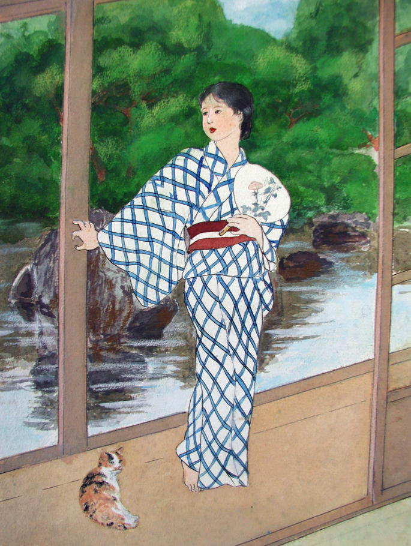
わたしは今度の戦争の二年ばかり前に出羽屋を預かりました。というのは、村松の兄貴がクスリで体を駄目にして病院に出たり入ったりして、その跡を仕切るのはわたししかないというので正式ではありませんでしたが、実質的に出羽屋の跡目を預かったんです。しかしその頃は、日本が中国との戦争でにっちもさっちも行かなくなって来てましたから、世の中の景気はどん底でしてね、わたしらの世界にもなかなか苦労はありました。
出羽屋は前にもお話しした通り、浅草新畑町一丁目一番地、つまり繁華街のどまん中にありましたから縄張りとしては大したものです。しかし、縄張りがいいから黙っていても左うちわでやっていけるかというと、どんな時代でも世の中そう甘くはありません。昨日の淵が今日の瀬となる、という諺がありますが、わたしらの商売はこれとまったく同じでね、そこには流れというものがある。勝負の流れというもの、客の流れというものがあります。そしてそれはいつも変わっている。この流れは人間の力ではどうにもなりません。
つまり早い話が、バクチで思うように勝とうとか、あるいは客をたくさん引き寄せようと思っても、これはなかなかうまくいかないということです。これだけの場を設けながら、よそには集まってなぜこっちには寄って来ないんだ、と不思議になることもありますが、これは理屈では分からない。
反対に、べつに変わったことをやっているわけではないのに、どんどんいい客が集まるということも当然あります。こうなると客が客を呼んで、いくらでもいいバクチができる。金も入れば人も集まるという具合になる。わたしが出羽屋に入った頃というのは後から思うと実に大した時代でね、面白いように金が入ったものです。ところでついでですから、バクチで儲けた金の使い道がどうなるのか、少しばかり説明しておきましょう。
わたしの頃はまず、その日のあがりの二割というものはあたまから削除しておいたものです。仮にその晩に一千万の収入があったとすると、二百万は別にしておく。そうして残った八割の金の六十パーセントというものを親分が取ります。あとの四十パーセントを子分たちに分けるということになる。それじゃ最初に削除した二割というものはどこに行くのかということですが、これはまず、刑務所に入っている子分などの手当てに当てる分がある。その他に、毎日の暮らしのかかりというものがあります。その金を二割の中から出します。
それなら親分が取る六十パーセントというのはどうなるんだ、六割というのは大きな金だからこれは儲かるじゃないかと思うかもしれませんが、そうは話が甘くはありません。懐に入った金が、そのままあったまっているというわけにはいかない。
なぜかというと、なにより、こんな商売をやっていると、金があるところにはいろいろな人間が集まってくる。これはほんとにダニのようなもので、振り払おうにも払いきれないほど集まってくるものです。十人も二十人も居候ができる。これは客ではなくて、ほとんどがあちこちのバクチ打ちの若いものです。これは金があって来るわけではありません。わたしの賭場が景気がいいと聞いてぶらぶら遊びに来た連中で、博打をする金なんぞない、だからこっちが小遣いをやって遊ばせます。
なんでこんなことをするのかということですが、バクチをやるものというのは一種の相互扶助の制度のようなものが昔からあったもんです。制度というとおかしいですが、これはたとえば兄弟分のバクチ打ちが十人いたとしましょう。そうするとどんな時でも、この兄弟のところが、みんなうまい具合にいっているということは絶対にない。三割が良くて、三割がまあまあだとすれば、あとの四割は客の入りが悪くて閑古鳥が鳴いているというのが正直なところです。ましてわたしが浅草を預かる頃は、世の中がどうにもならなくなっていた時ですから、景気がいい賭場なんてのは東京中でも数えるほど。どうにかやっていけるところが三割あればいいほうで、ほとんどが開店休業という有様。
客の入りが悪いとなると、どうなるかというとこれはどうにもなりません。川の淵を瀬に変えようとしても出来ないように、客が離れたとなるといろいろやってみても、なかなかもとに戻すということは出来ない。そうすると、これはどうなるかというと、誰が考えても大変です。身一つならばなんとか凌いでいくことも出来ましょうが、子分が大勢いたんではとうていやってはいけない。
それで子分たちは他の景気のいい親分のところで遊ばせてもらう。泊まりはしないが、賭場に入りびたって、その賭場の親分に小遣いを貰ってバクチをやったり食べさせてもらったりする。もちろんひとつの賭場に何十人というわけにはいきませんから、そっちこっちの賭場にばらばらに行く。けれども景気の悪い親分が大勢いれば、その割合で遊びにくる人間も多くなるというわけですから、面倒を見るほうもなかなか大変です。
しかしバクチというのはいつ客がつかなくなるか分からないもので、今はいいと思っていても何年か先には駄目になるかも知れないものですから、親分同士は、景気がいいものは悪いものの面倒を見る、というのが決まりのようになっていた。だから自分の身内のものが三十人といっても、実際食わせて行くものはその倍ぐらいいるということもいくらでもある。容易ではありませんが、それが出来なければバクチ打ちを辞めなければならない。やくざには一宿一飯の恩義に命を賭けるというような言葉がありますが、一飯どころではない、やくざは日頃お互いに助け合っているんですから、ひとたび面倒なことがあったりすると、お互いが自分を犠牲にしても義理を果たすというわけですね。
映画だの小説だのには、博徒同士がやたらと喧嘩をやったり殺し合いをやったりしてますが、あんなのは作り事ですよ。博徒とかやくざというのは、現在のような暴力団とはまったく違うんです。サイコロを振ってお客を遊ばせて食べて行くのが商売ですから、滅多なことでは喧嘩をしたりはしません。肌の合わない親分同士もいることはいますがね、気に入らないからといって殺し合いをしていたら、それこそ警察ににらまれて客が寄りつかなくなります。
世の中は十人十色ですから、気に入らなければつき合わなければいいだけで、つまらないことで刀を抜くのは馬鹿か気違いです。わたしらは警察が怖いんではありませんよ。ただ、喧嘩をすればどっちにしても人気が落ちるのは避けられない。喧嘩には勝ったが、賭場に閑古鳥が鳴いた、というんではどうにもなりませんでしょう。だから普通の人間よりはわたしらのほうが、余程我慢がいいというところもあるんです。
さてこの他にどんな出費があるかというと、香典とか見舞い、これがなかなか大きいものです。どこそこの親分が死んだということになると、その香典は付き合いに応じて出します。またどこそこの一家のおかみさんが病気になったとか、親戚に不幸があったということになると、これは義理の付き合いですから相当の金を包みます。この他に、どこそこの一家の若いものが刑務所の務めを終えて帰ってきたとなると、これも金を包みます。
付き合いの濃い薄いに応じて金額は変わりますが、バクチ打ちにはそれ相当の格というものがありますから、格に応じた金を包まなくてはならない。「なんだい、出羽屋は普段でかい面していやがるくせに、これっぽっちしか包まなかったんだぜ。しけた野郎だ」なんてことになると自分から格を下げることになりますから、どうしても見栄を張る。こんな具合で、義理張りの為の出銭というものは大層なものになる。
またやくざ同士の付き合いではなくても、例えば「親分、今度わたしはどこそこで飲み屋を開店いたしますので、どうぞよろしくお願い致します」なんて、いろいろの店の主人が挨拶に来ます。
縄張りが広ければこんなことはしょっちゅうですが、挨拶に来れば、ほってはおけないから、祝儀を包んで花輪をやったりして、また開店当日には子分の七、八人も連れてって祝いに飲んでやって、景気をつけてやる。そうしてそこの女たちだの使い走りの男だのにもチップをはずんで、周りの客にも、どうぞごひいきによろしくお願い申します、なんて頼んで、頃合いを見て、「ありがとうよ。またくるからな」と、きれいに引き上げる。また縄張りの店で祝儀不祝儀があれば、これも金を包みます。親分ですからこれも相当包む。葬式には花輪も出します。病気で入院した主人だの、かみさんには見舞金を出します。
当時のやくざの収入というものは、あくまでバクチで儲けた金で、それ以外のことに手を出すのは本物のやくざではありません。もっとも当時にも本物のやくざではない人間もやくざと称していたことは確かなことで、この奴らは、飲み屋を専門にたかりのようにしている者もいれば、玉の井とか洲崎、吉原、亀戸などという色街に巣食って、女をうまくやりくりして、つまり早くいえば紐になって世渡りをしているんですが、そんなのはわたしらから見ればただのごろつきです。だからそんな奴に会うと、こっちは、「なんだい、あの野郎は、色街の男だ？ へ、しけた面あしてやがる」なんて馬鹿にして、はなから相手になんぞしない。もちろんそんな男はこっちの縄張りには入っては来ませんから、別に面倒が起きるというようなことはありません。
この他にも付き合いというものがいろいろとあります。なにしろ出羽屋は観音様一帯から国際劇場通り、興行街、飲食店街そこら全部を縄張りに持ってましたから、それはいろんな芝居興行が挨拶に来ます。興行というものは一般にはテキヤが取り仕切るものと考えられていますが、そうばかりではないんですね。露店でやる商売は香具師、つまりテキヤが一切を取り仕切っていて、これはやくざには一切関係がない。わたしの二軒隣には福田天涯というテキヤの親分がいましたが、これは広い縄張りを持っていて、当時は曲馬団が来ると、団長が挨拶にくる。そうすると福田天涯は、座蒲団料というものを取る。客がサーカスに入ると、座蒲団を敷きます。これが仮に百円だとすると、五十円を天涯が取る。こんな風にテキヤはその縄張りで仕事をするんですが、これはやくざとはまったく関係がない。屋外の縄張りというのはテキヤの領分で、やくざは口出しはしないんです。
それならどんなところの興行がやくざと関係があるかというと、屋根があるところ、つまり建物の中での興行なんですね。いつもは映画をやるとかストリップをやっているところに一時的にどこそこから芝居を呼んでやるとか、浪曲師が来るとかいうことになると、座長と芸人の頭分のものが、
「親分、今度これこれこういう芝居がありますから、どうぞよろしくお願いいたします」と挨拶にくる。そうすると、こっちは挨拶をただで受けるということは出来ませんから、
「それはご苦労さん。まあ、ひとつ、楽しくやってくれ」と言って、祝儀を包む。わたしのところではこんなことは亀蔵が一切面倒を見ていましたが、あいつは威勢がよくておだてられるとなんでも引き受けて、「よーし、分かった。いくんちからいくんちまでだな、そんならその間、この亀蔵が親分に代わって何でも面倒を見てやるから、何か心配があったらいつでも相談に来い」なんぞと言って、安心させる。芸人は浅草で出羽屋の顔を借りて興行を張るということになると面倒なことにはなりませんから、安心して仕事が出来るということになるわけです。
それじゃ興行師は頼むばかりでその見返りに金を支払わないのかというと、それは金ではなくて芝居で払うんですね。これはこんな具合です。たとえば、国際劇場で演劇がかかって、これがひと月続いたとすると、この興行の幾日かをわたしにくれる。興行師は挨拶に来てこんな具合に言う。
「親分、おかげさまで準備はなんとか順調に進みまして、明日から開演ということになりましたが、実は、親分の日として二日とってありますから、この日は遊びにいらっして、小遣いをとっていただきたいと思います」それで「それはいくんちだい」と聞くと、「二十九日と三十日です」なんて言う。そうするとこれはどういうことかと言いますと、二十九日と三十日の興行の上がりを出羽屋にくれるというわけです。つまりこの二日で三百万の入場料があったとするとこれが全部こっちの懐に入る。これは浅草だけでなくて、どこの縄張りでも同じことがあったわけです。それならずいぶん儲かっていい商売だと考えるでしょう。ところがそんなものではありません。ひとかどの親分と言われているものが、入場料を貰って、はい、ご苦労さんと言って手ぶらで返すなんてことは出来ない。どうするのかというと、その日上がった金は一応貰っておきますが、その二日は親分が興行主のようなものですから、芸人やら下働きの男、木戸番、親方衆なんかを呼んで、「ご苦労」といって、祝儀を包んでやる。これは普段の給金よりもたくさんはずむのがしきたりです。そればかりではありません。客の入りがいいときにはいいんですが、客の入りが悪い時にはこれは大変です。そんなときは収入も少ないわけですが、少ないからといって少しばかりの金を包むわけにはいきませんから、ちゃんとやるものはやるわけです。こうなると上がりだけでは足りませんから自分の懐から出すことになる。だから芸人は安心して二日もこっちへくれるわけで、とにかくやくざの親分というものはこんな風に、義理とかしきたり、付き合い、見栄、なんてものでがんじがらめになっていて、金なんてものはいくらあっても足りなかったもんなんです。
ところでまたドバ（賭場）の話ですが、ここにもまた親分同士の工夫というものがいろいろとありました。それはどういうことかというと、近いところにある賭場というものは少しずつ時間をずらして開いた。別に時間割があったわけではないけれども、鶯谷、下谷、浅草それぞれに賭場があったとすると、それぞれが時間をずらして開く。そうすると、好きな客は三つを渡り歩くことができます。それから、賭場の親分が他の賭場に出かけて行って遊ぶこともできる。遊ぶといってもただ遊ぶわけではありません。ボンを揉んでやるんですね。ボンというのは漢字では、盆、と書きますが、これはサイコロを振り出すところという意味で、つまりバクチ場そのものの意味です。揉むというのは、なかなか説明するのは難しいですが、勝負が景気よく進むようにその場を盛り上げるというか、客を興奮させて勝負にのめりこませるような工夫をすることです。
客というものは遊びに来ているわけですが、欲というものがありますからどうしても勝ち負けにこだわります。こだわると考えますから勝負が遅くなる。遅くなればこれは胴元としては面白くない。賭場というものはどうしてやっていくかというと、テラ銭で食って行くわけです。仮に一回の勝負で胴元の取り分が五パーセントだとしますね。するとその場に百万の金が賭けられれば胴元の取り分は五万ということになる。ということはどういうことかというと、百万の勝負を百回やれば一億の金が動く。そうすると胴元の取り分は五百万です。ところが勝負が遅くて一晩に五十回しかボンが開かなかったとすると、収入は半分になる。実際はもっと複雑な計算があるんですが、いずれにしても勝負が数限りなく出来たほうが儲かる仕組みになっている。けれども最初にいったように客も自分の金を賭けるんですから、これは勝ちたい。勝とうとするから勝負が遅くなる。ナカボンが「さあ、張った張った」と声をかけても首を傾げて考え込んで、なかなか進まない場合がある。そんなときに、仲間の親分が、
「さあ、どっちが足りねえんだ、どっちからでも張ってやら、なにぐずぐずしていやがるんだ。考えて勝てるものなら百年でも考えてろ！」なんて言って、札束を、まるで新聞紙でも張るようにばっさりと賭ける。つまりこうやって勝負がやりやすいようにしてやる。一時間に二十番通るところを二十五番通るようにしてやるわけです。そうすればそれだけその賭場の上がりは多くなる。こうやって賭場を持っている親分同士が、ボンをわっさくっさわっさくっさ揉んで、客を乗せちまう。そうすると祭の御興を担ぐときのような具合になってきて、みんな興奮して、わっしょわっしょというように場が盛り上がって来る。これが狙いで、そうなればしめたもので、勝負は早くなるし面白いですから、客は喜びます。たとえ損をしても「今日はいい勝負をさせてもらいましたよ」と満足し帰ってくれる。世話になった胴元は、今度はこっちが出かけて行って、向こうで遊ぶ。こんな具合にして、賭場を持っているものはいろいろと工夫をしたものです。
バクチにはイカサマがつきものだ、と考えている人が多いようですが、これも大変な誤解ですね。イカサマをやるバクチ打ちも確かにいますが、そんなのは本物のバクチ打ちではありません。
考えてもごらんなさい。賭場には素人も来ますが、玄人もたくさん出入りしているんです。だからイカサマをやればすぐに分かります。仮にイカサマをやったらどうなるか、たちまち知れ渡って愛想をつかされる。客足はぱったりと止まります。だから、ちゃんとした縄張りの中で賭場を開いているものは、絶対にイカサマはやりません。それならどんな人間がやるのかというと、親分子分の関係のない、一人で生きているバクチ打ちですね。こんな人間は賭場は持っていませんから、旅館なんぞを借りて場を開く。もちろん最初からイカサマをやるつもりですから、誰かと組んでやるわけです。
イカサマにもいろいろですが、一番多いのがサイコロに仕掛をしておく方法です。これは特別の賽で、賽師に頼んで作って貰う。もちろん賽師は、いかさまの賽を自分が作ったということを知られたらいろいろと面倒が起こりますから、直接頼まれても絶対に作りません。この男なら、どんな目に遭わされても自分の名前を口にしない、というだけの信用のおける者から頼まれた時にはじめて作るわけです。この男が間に立って、そうして作るわけですから、仮にイカサマをやったのがバレても、イカサマ師は賽の出どころを知らないんですから、白状しようが無いという具合。
この種の賽は中に鉛をつめて、丁半、どっちかを出やすくして、壺ふりが巧みに賽をすり替えながら勝負を組み立てて行くというのが多いんですが、特殊なものにはコヒキというものもあります。これは中に粉が入っている。そうしてこれを振ると、ある角度になったときだけ粉が出る。出ると言っても実に微妙ですから、よほど目を凝らしてもなかなか見えるものではありません。そうして数をこなしているうちに、だんだん丁か半に偏るようになります。初めのうちはまったく普通の賽ですから誰も気がつきませんが、時間が過ぎて来ると、イカサマ師に都合がいいように賽の目が変わってくる。でも万が一他の者が気がついたら困りますから、なるべく場を暗くするほうがいいんですね。しかしこんなものを使ったら命取りですからね、わたしはどんな時でも使ったことはありません。
ところで客を一目見れば、その人がどの程度の人間かはだいたい見当がつきますが、札の扱いを見れば、これは間違いなく分かります。だいたいにおいて、金がないものは勝負をしても駄目なもんです。勝とうという焦りがありますから、場が見えない。どっちにしたらいいか迷って、見えないままに賭ける。こうなると駄目だということは、相撲を考えればよく分かりましょう。焦ったり迷ったりしていると、体が固くなって動きがとれない。だから力を出す前に勝負に負けている、そんな土俵をよく見るものですが、あれとおんなじで、迷っているものは手が出ても足が出ない。足は出ても気が先に行くから結局は負けるわけです。
客が持ってきた金がどんな金か、なんてことはこっちには関係ありません。金は口をききませんから。ただの紙切れですから、その紙を作るためにどれぐらい苦労をしたかなんてことは分からない。てめえの女房が病気で寝ている蒲団を剝いで、着物から帯まで質屋に入れて、その金を握ってきても、そんなことまでこっちは心配してやれない。「金は女房を売った金」というような言葉が昔はありましたが、本当に自分の女房を女郎屋に売って、その金を持って勝負に来るなんて者もいるわけです。
昔は、女を売ったり買ったりするのを専門にしていた桂庵なんてのがいくらもいましたから、そこへ行って、「どうしても金がいるから、おっかあ入れるから明日まで貸してくれ」と頼むと、「いいよ、おまえの女房ならいくらいくらだから、半金だけ渡そう」と桂庵は言う。けれどもそんなことまでした金でなかなか勝てるわけがありませんから、結局全部取られて、どうなるかというと、「約束だぜ」と桂庵が女房を連れて行って女郎屋に売っちまう。けれどもわたしらは勝負するのが商売ですから、相手が負けて泣いてなんとかしてくれなんていっても、これはどうしようもない。
バクチで金を儲けようなんて思って来るものはいましょうが、それは馬鹿というものです。バクチに金を賭けるということは、わたしに言わせれば擂鉢に金の延べ棒を入れてゴリゴリと擂るようなもんで、だんだん小さくなって、しまいには失くなっちまう。ちょうどこんな具合に、金は全部擂鉢、つまり胴元のところに吸われるように出来ているんですから、こんなところで金を儲けようと思うことが、はじめから間違っている。ところがそれでも客は来るんですから、バクチ場というものはどうにも恐ろしいところであったといえるでしょう。
ところで、前橋で知り合った岡村吾一の義理の妹のお勢について、少し話しておきましょう。
お勢はわたしが鶯谷に賭場を持った頃からちょくちょく遊びに来ましたが、お勢はわたしを叔父さん、なんて呼んでました。わたしには女房がありましたが、まだ若いつもりでいましたから、なんだい、叔父さんてえのはねえじゃねえか、おにいさん、とかなんとか呼んでくれねえか、と言ったことがあります。するとお勢は笑って、
「あにさん、なんて言ったら口説かれちまうかもしれないじゃないの。叔父さんでいいのよ」と、とうとう最後まで叔父さんで通したんです。
お勢についてはいろんなことがありますが、ある時はこんなこともありました。浅草の賭場がすっかり落ち目になっていた時でしたから、昭和十六年の春の頃でしたでしょう。十日ばかり顔を見せなかったお勢が訪ねてきて言うには、「叔父さん、今日は折り入って頼みがあるのよ、聞いてくれる？」と言う。それで「なんだい、藪から棒に」と聞くと、「お金貸してちょうだい」という話。「いくらだい」と聞くと、「千円」。これには驚いた。ちょっと貸して、なんて気軽に言えるような額ではありません。
で、「何に使うんだ」と聞くと、「叔父さんには関係ないのよ。黙って貸してよ」と言う。
それでわたしは、「おい、お勢、俺に恥をかかせる気か。俺のところに、そんな大金があるかどうか分かりそうなもんじゃねえか」とこう言った。
実際、ここしばらくというもの賭場には閑古鳥が鳴いている始末で、金を貸してやるどころか、身入りというものが殆どない。幸い子分たちは兄弟分が面倒を見てくれていますから助かりますが、懐具合は何とも寂しい限り。こっちは男ですからいい女には弱みを見せたくありませんが、こればかりは仕方がない。そうしたらお勢は何と言うかというと、
「分かっているわよ。だからこうしてほしいの」。どうするかというと、わたしに保証人になってくれ、と言うんです。これが変な話で、人間の質草の保証人なんだという。その次第というのは、こんな具合です。
浅草の質屋に丸七というのがありましたが、お勢はその質屋に着物を何枚も預けて千円借りた。質屋が千円貸すというんですから、着物の本当の値段はその何倍もあるに違いありません。なんでそんな大金を借りたかというと、ある品物を仕入れるためだったらしい。お勢は自分の口からは言いませんでしたが、どうせ闇の品物だったんでしょう。ところが金がどうしても足りない。それでお勢は、その時分いい仲になっていたらしい稲荷町の地主の息子で、遊び人の清七という男に相談した。そうしたら清七は、
「貸すのは簡単だが、それじゃ面白くもなんともねえや。こうしようじゃねえか。下谷の万年町に丸藤という質屋がある。その質屋に俺が頼めば、丸七よりも高く見積もってくれるはずだ。だからまず丸七に入れた着物をうけだして、そいつを丸藤へ持って行って入れりゃいいというわけだ。足りない分ぐらいならなんとかしてくれるぜ」
「でも、それにはまず丸七から着物を出さなければならないじゃないの。ところが私には金がないんですからね、どうしようもないでしょう」とお勢が言うと、清七は笑って、「だから面白いんじゃねえか。質草の代わりにおめえが質屋の人質になりゃいいんだ。おめえが丸七の人質になって格子の中に入っている間に、俺が着物を丸藤に持って行って、丸藤で金を借りる。俺なら高く預かってくれるから、その金を持ってこっちへ持ってきたら、丸七に元利を払って、おめえを受け出す、とこういう算段だ。どうだいい考えだろう」
わたしは、清七の野郎、もったいぶったことをやりやがる、と思いましたね。いくら金と暇を持て余したからと言って、女を質に入れて遊ぼうとは、並の遊び人には思いつきません。清七というのは、さっきお話しした通り浅草に広い地所を持っている資産家の息子で、働かなくても遊んで暮らして行けるという結構な身分。親父も一生遊び暮らしたというような男でね、人間どうせ死ぬんだから、派手に騒いで金を使って楽しくやらなけりゃ損だ、と信じ込んでいる。息子がバクチで大負けに負けても、ヘとも思わない。ある時ぶらっと賭場に来て言うには、
「親分にはいつも楽しく遊ばせてもらっていますが、もし清七がバクチに負けてお金を貸してくださいといったら、いくらでも貸してやって下さいよ。百円貸して下さい、と言ったら二百円、二百円と言ったら、四百円貸してやって下さいよ。親分に迷惑をかけるなんてことは決してしませんから」とこんな話。
親馬鹿と言おうかなんと言おうか、こうなると桁がちがう。だから清七は、お勢に貸そうと思えばいくらでも貸せる身分なんだが、それじゃ面白くないから女を質に入れようという魂胆なんです。
それでわたしは「俺はな、おめえたちが何をやろうと口出しはしねえが、丸七は昔から堅い商売をするんで通っているんだ。質草の代わりに女を取るなんてのはきっと断わるぜ」と言った。するとお勢は、「ええ、だから叔父さんに頼みたいの。叔父さんがひとこと、俺が保証人になる、と言ってくれれば丸七の主人だって、嫌とは言えないでしょう。私を信用しなくても叔父さんだったら大丈夫だと思うからきっと承知してくれますよ」
それでこっちも暇でしたから清七を呼んで、「おい、どうなんだ、うまく行きそうなのか」と聞くと、「任せておいて下さい、親分に迷惑がかかるようなことは金輪際しませんから」とこう言う。それで、それならいいだろう、ということで、丸七に三人で行った。そうしたら、質屋の主人は驚きましたね。
「いやあ、親分、それはない話ですよ。質屋が金を返してもらわないで質草を出したら、商売になりません」と言う。それでわたしが、「それはそうなんだが、無理を承知で頼むんだ。お勢を一時の間、人質に置くから、その代わりに着物を出してくれ」と言うと、主人はますます呆れて、
「うちはいくら質屋だといっても、人間を質に取るなんてことはしませんよ。親分もあんまり横車を押さないで下さいよ」
「まあさ、変な話だというのは重々承知だ。恥を忍んで頼むんだ。なんならお勢がここにいる間、俺も質草になっているから、それなら文句はねえだろう」
「冗談言っちゃ困りますよ、親分。出羽屋の親分がこんなところにいたんでは、客は驚いて逃げて行ってしまいます。まあ、親分がそこまで言うんではよほどの事情があるんでしょう。分かりました。質草をお返しします。その代わり、必ず今日中にお金を持ってきて下さいよ」
おやじはとうとう根負けして、着物を全部出してくれた。そうしてお勢は形だけでも質草として質屋の格子の中に入ったんです。清七は着物を持って丸藤に行って、さっそく金を借りて来た。
なるほど清七はわたしに任せておいて下さい、なんて見栄を切っただけのことはあります。「いくら貸してくれた」、と聞くと、なんと二千円だという。これは法外な金額ですが、まあ、着物の値段というよりも清七の顔でしょう。それで丸七に元利を返して、浮いたお金をお勢は自由にしたというわけです。その金は闇の物を扱うのに使ったことは間違いないことでね、お勢はそれでよほど儲けたらしくて、丸藤に預けた着物も間もなく受けだしてしまいました。
お勢が相当のお金を手にいれたというのは確かなことで、こんなことがありましたよ。あれは質屋の一件があってから一、二カ月たった時だったでしょうかね、わたしは相変わらず暇で賭場が開けなかった。客が来なくてはどうにもなりません。それで千住の貸元で源次郎という親分のところへ遊びに行ったんです。虎の子の百円を懐ヘ入れて行ったというわけです。
そうしたらこんなときというのはつきもないもので、たちまち取られた。チクショウ、と思っていると、源ちゃんが、「兄弟、まだ気が入ってねえようだが、どうだい、もうひと勝負」という。源ちゃんの賭場はその時分は景気がいい時で、五十人からの男が遊びに来ている。そんなところで、もうひと勝負と言われて負けて帰るんでは癪だけれども、金がありませんからどうにもならない。それで、
「千住の、俺もやりてえのはやまやまだが、今日は手持ちがねえんだ」と言った。
そうすると、源ちゃんは、「何を水くせえ。これを使ってくれよ」と言って、札束を子分にもたせて渡してくれる。見ると五百円だ。よし、というわけで勝負したが、勝とうと思っている時は駄目なもんですね、たちまち負けた。そうすると、源ちゃんはまた貸してくれる。こうやって何度か借りているうちに全部負けちまった。
「出羽屋の、今日はついてねえようだ。また今度にしねえ」とこう言うから、
「遊ばしてくれて有難うよ。借りた金はあした返すから」と礼を言って賭場を出た。が、さあ、これは困った。いくら負けたといっても、八千円も負けた。どうにもならない。さすがにわたしも青くなって、家に帰って考え込んじまった。仮にも出羽屋を名乗っている男が、金がありませんから勘弁して下さい。なんてことは言えません。逃げるわけにもいかない。逃げたってどうにもならない。天下の笑い者になるだけです。
「どうにも弱っちまったな。なんとかしなくちゃな」なんてくよくよ考え込んで、長火鉢に寄りかかって火箸で灰をいじっていた。そしたら急に後ろで声がして、振り返るとお勢が立っている。
「なんだい、なにしに来たんだ」と言うと、
「何だとはご挨拶ねえ。どうしたの」とお勢は、わたしの顔をつくづくと見ている。
「どうもしやしねえよ」
「嘘ばっかり。何かあったんでしょう」
お勢というのは目から鼻へ抜けるような女ですから、こっちが困っているのを一目見て読んでいるんですね。それでこいつは隠してもしょうがねえと思ったから、
「なに大したことはねえんだが、今日はみんな取られちまったんだ」と白状すると、
「叔父さんでもそんなことがあるのかねえ、叔父さんは名人バクチで通っているのに、どうして取られたの？」なんて親身になって心配している様子。それで、
「源ちゃんが金を貸してくれるというんで、ついついやったんだが、それも取られちまったんだ」と言うと、
「まあ、それでいくらぐらい取られたの」と聞く。
なにせ相談する人間がいなくて辛い時でしたからね、事情だけでも安心して話せる相手がいるというのは有難いから、つい気を許して、俺の持ち銭はこれこれで、借りたのはこれこれだ、と打ち明けた。そうしたらお勢がそれを聞いて、
「あ、そう。それじゃ叔父さん、私がそのお金心配するわ」とあっさり言う。
それでわたしは怒ってね、
「なんだと！ お勢、これは冗談なんかじゃねえぜ。はした金の話をしているんじゃねえんだ！」と言った。ところがお勢は驚かない。
「でも、叔父さんはお金がないんでしょう。どうやってそれを作ろうというの」
「それを今考えているんだ」
「それだから、私が叔父さんにかわって心配しようというんじゃないの。いままでどれくらいお世話になっているか知れやしないんだから、私の言うこともたまには本気で聞いてよ」と言う。それでこっちも半信半疑になって、
「ふん、なるほど、そうかい。そこまで心配してくれるってんなら、この際、おめえの言うことも聞いて見るか」とこう言ったら、お勢は、
「それじゃちょっと行って来るから待っててね」と言いおいて、何時間かすると、
「叔父さん、持ってきたわ」というので見ると、風呂敷にいっぱいのお金です。
「なんだい、この金は、お勢、おまえこの金どっから持って来たんだ」
「どこからだっていいでしよう。叔父さんが聞いたってしょうがないんだから。叔父さんはただ使ってくれればいいのよ」お勢はあくまですましている。それで、
「そうか、そんならありがたく借りておくぜ」と言って、次の朝、事情を女房のお門に話して、若い子分を二人供につけて、千住の源次郎のところに届けさせました。これでなんとかわたしも面子が保てたという次第で、お勢がいなかったらとてもやくざ稼業はやってはいられなかったというわけです。
ところがこれにはちょっとした悶着があったんで、それというのは、女房のお門がやきもちを焼いた。あんな大金を貸してくれたからには、わたしとお勢は出来ていると考えたんですね。お門はお勢が出入りするのを一度も文句を言ったことはないんですが、腹の中はずいぶんといろいろ溜っていたんでしょう。それがこの金のことでとうとう爆発した。目を釣り上げてものすごい剣幕で食ってかかりました。
「あんな女から金を借りるなんて、出羽屋の看板が泣きますよ。千住の源ちゃんにいろいろ聞かれて恥をかきましたよ」
「なんだい、おめえ、金の出どころをしゃべったのか」
「馬鹿にしないでちょうだい。口が裂けても言えますか。でもね、そもそも間違ってますよ。お勢に相談するまえに、あたしに一言あってもよかったんじゃありませんか。仮にもあたしは、あんたの女房ですよ。あんたがこれこれだと話をしてくれれば、家屋敷を売り払ってでも金を揃えましたよ。それで足りなければ身を売ってでも、それぐらいの金は作ってみせましたよ。それをなんだい、何にも言わないで、あんな女から借りるなんて、情けなくて涙も出ないやね」
お門の顔は引きつって、真っ青になっている。それでわたしは、
「お勢に相談したわけじゃねえんだ。一人で考えていたらそこへお勢が来たんだよ」と言い訳した。
するとお門は、
「なに言ってるのよ。そんな大変なことを何であたしを真っ先に呼ばないのよ」
「おめえに相談したくても、金の額が額じゃねえか、どうしようてんだ」
「だから身を売ったっていい、と言ってるじゃないの」
「馬鹿野郎！ 借金が払えなくて女房を売って、それで俺の顔が立つと思っているのか」
「それじゃ、あの女に借りたら、どんな顔が立つというのさ！」
それは大変な剣幕。これ以上話していたらどうにかなると思ったから、馬鹿野郎！ と言うなりぷいと家を出て、二、三日帰らなかった。そうしたらお門は荷物をまとめて出て行った。そして、しばらく戻っては来なかったというわけです。まあ、この時はバクチで負けたのがそもそもの原因で、悪い方はこっちですから、ひと月ばかりしてわたしが頭を下げて戻ってもらいましたが、それからどうもうまくゆかず、とうとう別れてしまいました。
戦争が始まった頃、お勢は、「叔父さんの二階に住まわしてくれない」と頼むもんで、ああいいよ、と言って、それでお勢はわたしのところに住むようになった。
ところが毎日いるわけではない。二、三日いると、どこかへ一日二日泊まって来る。どこへ行って来るのか、言いもしないからこっちも聞かない。家にいるからといって女房になったわけではなし、お勢が何をしようがこっちは関係ありません。傍のものから見たらこれはどういう風に見えたのか分かりませんが、わたしはお勢と一度も寝たことはありません。
この当時、わたしのところには子分が五、六人と、橋場大尉に助けられたお京という女中、それからお勢、まあそれぐらいの人間が住んでいましたが、戦争が始まってバクチどころではありません。
そのうちだんだん物資が不足してきた。そんなある日のことでしたが、お勢が人足に荷車を引かせて来て、「叔父さん、二階にちょっとした荷物を置いていいかしら」と言うから、「ああいいよ」と応じると、ちょうど石油缶ほどの大きさの荷物を二、三十も運び込んだ。何だと思ったら、「白砂糖なのよ」とお勢が言う。
その頃は砂糖もなかなか手に入らなかったから、白砂糖なんぞは実に貴重なものだった。そいつをどこからか仕入れてきて、高く売る算段だったんでしょう。ところがお勢からその品物をどうするのかひとつの相談もない。それでこっちも何も聞かないでいたんですが、しばらくすると客がついたんでしょうね、荷車に積んで二つ残してみんな持って行っちまった。二つだけ砂糖の缶を残してくれたのは、お礼のつもりだったんだろうと勝手に解釈して使いましたが、これは役に立ちました。
そしてお勢はそのまま姿をくらまして、戦争が終わってしばらくするまで音沙汰がなかったんですが、後から聞くと神戸の方へ行っていたということです。わたしが網走の刑務所に送られたのは、戦後五、六年して、ひょっこり現れたお勢が原因ですが、これはまたあとからお話ししましょう。
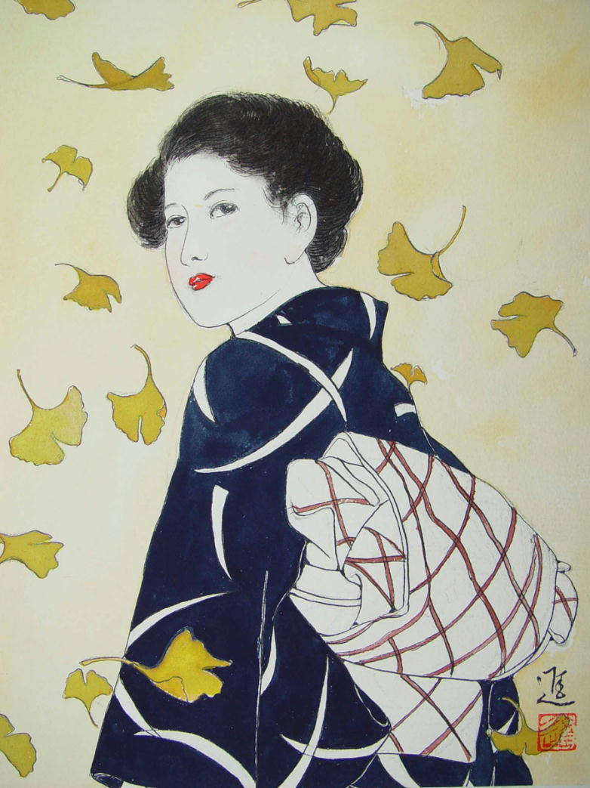
血圧を計り終えて、注射のアンプルをポツンと切ると、
「いつ聞いても懐かしい音ですね」と、彼は蒲団の中からしみじみと言った。
「わたしの親分は始終、医者に往診をしてもらっていましたが、医者は診察をしてアンプルをそんな具合にポツンと切る。側で見ていましたが、あの音は今でもそのまま耳に残っているんです」
「食事はどうです」
「まあまあですが、足がむくむようでは人間稼業もおしまいですな。しかし考えてみると、戦争当時の日本人は今のわたしよりもむくんだ顔をしていましたね」
彼は濃い褐色の汚点が地図のように浮かんだ頬でチラリと微笑し、女がつけてくれた煙草を寝たままの姿勢で唇にくわえた。
「戦争中はずっと東京にいたんですか」
「いや、最後には疎開しました」
「どこへ疎開したんです」
「柏です。近くに第一〇〇部隊という編成部隊がありましてね、あそこではいろいろと面白いことがありましたよ」
男はうまそうに煙を吹き出し、吸い残しを女に渡して蒲団に横になった。
「枕をもっと高くしましょうか」
「今のままでいい。それより先生、わたしはあとどれぐらい保ちましょうかね」
「養生次第でしょうね」
「先生、ごまかしちゃあいけません、せいぜい二、三カ月というところでしょう」
「そんなことはありません、まだまだ、二年や三年は大丈夫ですよ」
「ハハ、先生もお若いのにお上手だ。医者はそうでなくてはいけません。こう言っては失礼ですが、医者とバクチ打ちは結構似たところがありますね」
「そうですか？」
「そうですとも、患者は、もう駄目かなと思っても、医者の話に乗せられて薬を飲む。賭場の客は負けると分かっていても、ついバクチ打ちの口車に乗って大金を張っちまうという具合。まあそれだから人間生きて行くことが出来るんで、なにもかもが理屈通りに行ったら面白くも何ともありません。わたしも先生のおっしゃる通り、まだ少しは生きられると信じれば元気も出ようというものです」
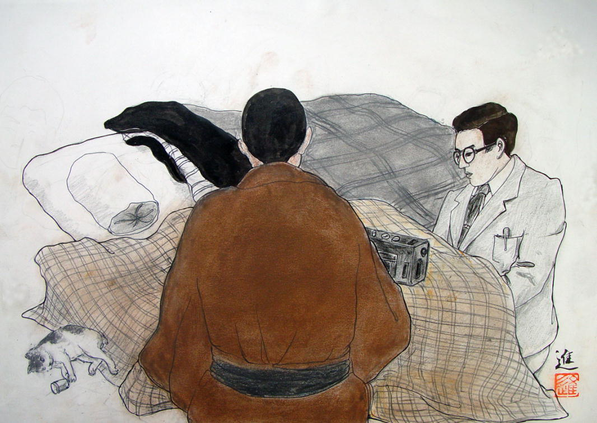
空襲が始まる前でしたが、お京がこんな話を持ち出したことがありましたよ。闇の豚肉を売ってひと儲けしようというんです。
「高級料亭なんかでも最近は肉が手に入らなくなって困っているんですから、いくら高くても喜んで高く買いますよ」とお京はこんなことを言う。
お京はわたしがお門と別れてからもわたしのところに居ついて、何から何まで実によくやってくれる。出羽屋の親分が生きている時分には賭場にも住まいにも女は一切置きませんでしたが、あの頃になるとそれほど厳しくなくなっていたんです。
昔は女がやくざの貸元に、豚肉でひと儲けしよう、などと持ち出すなんてことは想像もできませんでしたが、これもご時勢というものでしょう。それで亀蔵が、「儲けようたって、その豚をどうやって手に入れるんだ」と聞くと、徳二が側から、「俺の親戚が千葉の田舎にありましてね、そこで豚を飼っているんですよ。こいつを分けてもらえばいい」と馬鹿に熱心な様子です。
徳二とお京はだいぶ前から一緒になるつもりでいましたから、いろいろと詳しく相談していたんでしょう。けれども亀蔵は難しい顔をして、「百姓に知り合いがいたって、こいつぁ簡単な話じゃあねえぜ、豚を勝手に殺して横流ししたと憲兵に知れたら大変だ。刑務所ぐらいじゃすまねえや」と言う。亀蔵の言うのはもっともで、家畜を勝手に処分することは出来ません。軍用が最優先ですから、個人が豚を密殺して売ったり食べたりして発覚したら大変なことになる。けれども徳二は、そんなことは先刻承知だといわんばかりで、
「心配してたらきりがありませんよ、親分、細工はりゅうりゅうです」とまったく自信ありげです。お京と徳二は、いろいろと筋書きを書いて、根回しをやっていた気配なんですね。それで「俺の手を借りようて了見だったらお門違いだが、おまえらが豚でひと仕事してえというんならかまわねえ、まあ、気をつけてしっかりやんな」と言ってやった。
徳二の仲間には石川と高橋という男がいましたが、これは二人とも朝鮮人です。釜山から強制連行されて常磐炭坑で働いていましたが、うまく逃げだして転々としているうちに助ける人間があって、テキヤの神田という男に拾われた。神田はわたしの知合いですから、ときどきこの二人を連れて遊びに来ました。そこでこの二人が徳二とお京の仲間になって、豚の密売をしたというわけです。
滑稽なのは豚の殺し方ですね。徳二の親戚は広い敷地で豚を飼っていたんですが、殺す時にキーキー豚が鳴いたりしたら、いくら敷地が広くたって村中に聞こえちまう。あそこでは豚を密殺しているんではないか、なんて疑われては大変ですから、なんとか声を出さないようにしなければならない。
それで「いったいどうやってやるんだ」と徳二に聞いてみた。すると徳二は、「親分、百聞は一見にしかずという諺がありますから一度見物においでなさい」と言う。それでわたしはお京のお供で見に出かけましたが、なるほどこれは馬鹿ばかしいほど簡単な仕掛け。
まず殺そうという豚には前の日から何も食べさせない。そうしてその日になると大きな穴を裏庭に掘ってその中に水を入れます。それから豚の小屋から穴まで糠をズーと撒いておく。小屋の戸を開けると、豚は腹が減ってますから夢中で糠を食う。そうしてだんだん穴の縁に近づいて行く。こうやって豚が穴の側に行って餌を食べているところを、後ろから蹴っ飛ばして穴に突き落としてしまう。水が張ってある深い穴ですから、ギャーもスーもないわけです。
東京に持ってきた肉はどこかに集めてさばいていたんですが、しばらくしたら徳二が、「親分、どうもいままでやっていた場所が危くなったんで、どこかいいところを世話してもらえませんかね」と言う。それでわたしは毒を食らわば皿までだと思って、「そんなら二階を使え」と言ってやりました。
そしたらそれからしばらくは闇屋が運んでくる荷物で二階は足の踏み場もないような有様になりました。山本の親分が生きていたらこんなことは絶対にさせなかったでしょうが、これも時代の流れというものでしょう。
この頃になると、鳥肉は多少配給になることはありますが、豚肉なんてものはどんなに金を積んでも手に入りません。だから金がある人は、豚肉が買えるとなると大金を積んででも食べたいということになる。もっとも個人に売るのは危険ですから、絶対に安全という高級料亭にしかお京は売らない。こういうところにはいい客がついてますから、高く買うし安全なんです。けれども肉を手にいれても、こいつを食べるについてはなかなか苦労はあるものです。
というのは、この頃は誰も彼もが歯をくいしばって我慢していた時代ですから、闇の肉を食べるなんてことが知れたら、非国民呼ばわりされちまう。だから肉を食べるにしても他の人間に知られないように、こっそりと食べなければなりません。油で焼くということはほとんど出来ない。焼けばその香が漂って、何かうまそうな肉を焼いて食べているらしい、ということで警察なんぞに通報されたらそれこそ大変です。
それで仕方がないから匂いがあんまり飛ばないように、もっぱら煮て食べるわけです。しかも肉を食べてる時には誰かが来たりしたらいけないから、表の戸に鍵をかけ雨戸を閉めて中にはカーテンを引いて、すっかり周りから見えないようにしてしまう。どうしても焼肉を食べようなんて時には大変です。戸を閉めただけでは匂いが飛ぶだろうというので、襖の周りに毛布だの蒲団をぶら下げ煙が外に飛ばないようにして、そんな用心をしてジュージューと焼く。だから夏なんぞは肉を食べる時は汗をぼたぼたたらしてね、それでも旨いから我慢しましたが、まったくあの時の肉は今思いだしても格別だった。そのうち神田の他にも何人ものテキヤが、この仕事に手を貸すようになりました。
わたしのところにはその時分、テキヤの親分らが何人も遊びに来ていました。というのは、戦争でだんだん賭場を閉めるところが多くなって、バクチをやれるところは少なくなったもんだから、それで、あそこはまだ出来るというんで客が集まるようになったというわけです。
その客の中にテキヤの親分で片野五郎というのがいて、これはわたしと兄弟分の盃を交わした仲でね、当時はいい顔だった。片野と徳二たちはいろいろ話し合ったんでしょう。こいつはいい話だ、というので片野は大張り切り。この男は顔が広いから、さあそれからは販路が開けました。肉もどんどん売れる。運び屋も忙しくなって、三日に一度ぐらいは石油缶の山が二階に運び込まれました。石油缶も当時は貴重品でしたから、缶のないものは油紙に肉を包んで、それを体に平に巻き付けその上に着物をきて、そうして運んで来たものです。こんな運び屋は電車で来ました。汽車と電車を乗り継いで両国まで来て、それから歩いて浅草まで来るわけです。今にして思えば、よくもあんなに大勢で運んで来て捕まらなかったな、と思います。
ところが商売がこんな具合に軌道に乗ってうまく行きだした頃に、徳二が憲兵に捕まって殺されるという事件が起こりました。どういうことかというと、こんな次第です。徳二の親は千葉の銚子にいたんですが、その親元から手紙が来た。「おめえに手紙なんて珍しいじゃねえか」と声をかけると、
「大したことじゃねえんですが、家の方でごたごたが出来たというんで行ってきたいんですが」と言う。それでわたしは、そりゃ気がかりだろう、早く行ってこい、と言って送り出してやった。徳二はすぐに親元に帰りましたが、それきり戻っては来ない。なんの連絡もないんでどうしたんだろうと心配していたら、憲兵隊から死んだという通知が来た。突然のことでびっくりしましたが、それはこういうことでした。
親から徳二のところへ来た手紙には、徴用令状が入っていたんです。徴用というのは一般人の労働力を軍需工場に集めて、飛行機の部品を作らせるとか、鉄砲の弾を製造させるとか、パラシュートを縫わせるとか、いろいろな仕事をさせていたわけです。兵隊になるには若すぎる中学生だの女子学生、鉄砲を持つには年を取りすぎているというような年齢のものを集めて仕事をさせる。
令状は、何月何日何時に、どこそこの工場に出頭せよ、という具合に来る。これは軍の命令ですから嫌だということは出来ません。
ところが徳二は行かないで逃げちまった。わたしに何も言わないで飛び出したのは、相談しても無駄だと思ったんでしょう。それで東京だの横浜なんぞの知合いのところを転々と泊まり歩いて、時には賭場なんぞでも遊ばせてもらっていた。徳二が死んでからあそこにも来た、ここにも顔を出していたということをわたしは仲間から聞きましたよ。
こうやって逃げ回って、その日は千住の野村さんというバクチ打ちのところへ入り込んでいましたが、運がないというのはあんなものなんでしょう、たまたま警察が手入れをして、バクチをやっていたものは一網打尽になった。そうして徳二も捕まったんでしたが、取調べを受けた時に、徳二の持ち物の中に徴用令状が入っていた。何であんなものをいつまで持っていたのかと思いますが、お京だの腹の子どものこともあって、今に行こうなんて考えて、捨てるに捨てられなかったのかも知れないんですね。これが運の尽きだった。徳二は徴用逃れですから、警察で取調べをするわけにはいかない。憲兵隊へ通報されて、横須賀の憲兵本部へ連行された。
どんな取調べを受けたのかは何も分かりません。しかし、よほど酷い目に遭ったことは確かです。徴用逃れというのは、憲兵の目から見たら重大犯罪なんでしょう。国家の浮沈をかけて国民全体が一丸となって血戦に挑もうというときに、こともあろうに徴用を逃れてバクチをやっていた不届きなやつめというので、拷問されたあげく、責め殺された。そうしてどうなったかというと、わたしのところに憲兵隊から通告が来て、いついつ、どこそこへ死体を引き取りに来いという。
それでわたしは亀蔵を連れて、引き取りに行きました。お京も行くというのをやっとのことで説得して止めましたよ。憲兵の前で泣いたりわめいたり、へたすると食ってかかるなんてことになるかもしれない。そんなことになったらまたひと騒動です。もしかしたら徳二は拷問の辛さに耐えかねて、闇商売の話だのバクチの話だのをしたかもしれない。そうなれば今度はこっちが捕まる番ですから、そんなところにお京を連れていくわけにはいきません。それでお京は家に置いて二人で出かけたというわけです。
死体は憲兵が自動車に乗せて、葉山の近くの桜丘の分遣場まで運んで来て、そこでこっちに引き渡しました。憲兵は、
「この男は病死である。遺言でおまえの家に死体を預けてほしいということだから、これからトラックでおまえの家まで運んで行く。案内しろ」なんて言う。病死なんてちゃんちゃらおかしい。
一目見ると、もう顔かたちも変わるほどの拷問を受けて、いたるところあざだらけなんですからね。しかしそれでも、これはひどいなんて表情をすると、またいらざる嫌疑をかけられて引っ張られますから、「ありがとうございます」と言って頭を下げた。すると憲兵は、徳二の死体をトラックで浅草まで運んで来た。しかし徳二は責められても何も言わなかったらしくて、わたしは捕まらずにすみました。
徳二の死体は葬儀屋を呼んで、棺桶に入れて線香をあげて、知合いの坊さんを呼んで弔ってもらいました。お京は心配していたほど取り乱したりしませんでしたね。一人でいるときにはどうだったのか分かりませんが、人前では涙は見せなかった。
翌日、三河島の火葬場に運んで火葬にしてもらいました。憲兵から病死の書類を貰っていましたから、それを見せると無料で焼いてくれたんです。それでお骨を拾って持って帰って、銚子の徳二の親のところに届けに行きました。
そうこうするうちに、だんだん負け戦になって、東京も爆撃されるようになりましたが、そんな昭和十九年の夏に「二七の会」というのを作りました。これはどういうものかというと、やはりバクチの会です。二と七のつく日に賭場を開く。月に六回開くわけです。客は東京とその周辺の、大きな商店の旦那方でしてね、この客を茨城県の水戸の先の勝田というところの海辺の宿に連れて行って、遊ばせたわけです。
声をかけた相手というのは、金もあるし口も固いから大丈夫だという客ばかり。客に話を持って行く時には、子分たちに往復の切符と手土産を持たせる。勝負が終わって帰りには、豚肉・魚・ウイスキーだとか貝の佃煮、カレイの干物、それからゴマ油、そんなものを土産に持たせるんですから、これはほんとに客のほうが驚いて、ずいぶんいい客が集まったというわけです。
土産を出すのに都合がよかったのは、その頃からわたしといい仲になっていた今の女房の初世が、まだ芸者をやってましたが、茨城の磯浜という漁師町の出で、兄貴が船大工でしてね、それを呼んで、何か海のものが手に入らないかと相談すると、「そんなことならおやすい御用です」と言う。
当時、若い男はみんな兵隊に召集されているし、漁の船も大きいものも小さいものも、木造のものまで徴発されて軍に持って行かれてましたから、漁師町といってもほとんど女子どもと年寄りばかり。浜に残された女たちは、亭主がいないでは暮らしが立ちませんから、網で魚をとったりアワビなぞをとって近所の町で売って暮らしているんだが、これではなかなか苦しい。それで、なんとかいい買い手がないかと思っているところへこっちの話だったから、それは向こうも喜んで、魚の干物・ワカメ・コンブ・タコ・イカ・貝柱、そんなものをどんどん持ってくる。もちろん全部禁制品ですから、闇で運ぶ。
今でもよく覚えているのはアワビですが、これは醤油で煮たものを一貫目の包にして、これを一人でいくつも運んでくる。こんなものは東京では見ることすら出来ませんでしたから、これが一貫目・四キロ弱で二十円、大学を出た人間の月給が当時五十円ぐらいのものでしたから、高いといえば高い。しかしこっちにすれば、タダのように安い値段。一晩賭場を開けば何万という金が入るわけですから、アワビなんぞいくら高く買ってもかまわない。
それで他のところよりも倍近い値段で買ってやりましたから、漁師の女房たちも喜んで、危ない橋を渡って、一番上等の品をどんどん運んでくれたというわけです。鰈なども大きいものがありましたね。二尺はあるかな、と思うようなものを持って来る。なにしろ漁師が日本国中からほとんどいなくなっちゃったんですから、魚ものんびりしていくらでも増える。そんなでかい鰈を、塩で干してもってくる。大きいものは百円ぐらいしましたが、わたしのところでは百五十円で買う。そんな具合ですから漁師の女たちには大いに人気がありました。
ほんとにこの当時は、金がうなるほど入りましたね。実際、置きどころがなくて困ったくらいです。どのくらい儲けたかお話ししても、とても信じてはもらえないでしょう。しかしいくら儲かっても、銀行に預けておくということが出来ない。それに、こんな時代ですから使い道がない。どんどんたまる一方で、そこらに置き放しにすることもある。
お京の子どもの雅子なんぞは、札の山の中で育ったような有様。風呂屋に行くと、昔は脱衣籠というものがあったでしょう。竹で編んだ大きなやつ、あんな籠の中に十円札をいっぱい入れて、その上に雅子を寝かせてやる。ふわふわして気持ちがいいから、よく寝るんです。時にはそのまま小便を漏らしたりしてね、濡れた札は風呂場で燃やしたりしたものです。
ところが、こんな風に遊んでいる間にも戦局はどんどん悪化してきて、わたしらはとうとう柏に疎開しました。今では柏あたりも都会化しているようですが、その頃はまるで田舎で町らしいものは何もない。畑の中の大きい屋敷を一軒借りて、亀蔵とお京とその赤ん坊とで暮らしていたわけです。
子分はその頃でも七、八人はいましたが、若いものはやっぱりご時勢で兵隊に取られましたから、年輩のものばかりが残っていました。けれども、もちろん二七の会は続けてました。そうして昭和二十年になったんでしたが、戦争はますます激しくなる。空襲も毎日という有様。
春先の二月の十二日でしたが、宿に行くとおやじが、「親分、もう駄目だよ」と言う。「何だい」と聞くと、一昨日のことだったがＢ29が空が黒くなるほど来襲してめちゃめちゃにやられたという。
「いよいよ日本も終わりだなあ」と、おやじはいつになくがっくりした様子。
「これではバクチどころではありませんなあ」宿の番頭なんぞも青い顔をしている。それでわたしは、
「バクチを止めたら敵襲がなくなるというんなら止めようじゃねえか」と言いました。「Ｂ29の操縦士に聞いてみろ、何と答えると思う。どうだ。向こうはバクチをやろうとやるまいと関係ねえんだからな、気にすることはあるまい」
Ｂ29が恐ろしくないと言ったら嘘になりますが、恐ろしいからじっとしていたら助けてくれるのかといえば、そんなことはない。絨毯爆撃というやつで、民家だろうが病院だろうがなんでもぶち壊してしまうんだから、小さくなってたってどうしようもありません。けれども番頭は、それはそうですが、なんてぐずぐず言っている。すると横から亀蔵が、
「何をくよくよしているんだい。俺の知合いでな、空襲になったもんで一家して防空壕に隠れたんだ。焼夷弾が雨あられと降って家は焼かれたが防空壕は助かった。ところがいつまでたっても出てこねえ。それで近所の者が行ってみたら、中にいたものは全部蒸焼きだ。みんな死んじまった。つまり逃げ隠れしても、どうにもならねえということだ。どうせ死ぬなら、好きなことをやってお陀仏したほうがいいってもんじゃねえか。な、パーとやろうぜ。パーとよ」
それでおやじも気を取り直して、じゃやろうか、ということになって、そのまま続けることになりました。そうこうしているうちに、二月十六日はまた物凄い編隊が来ました。このときは低空飛行で何百という艦載機が機銃掃射してあっちこっちに焼夷弾が落ちた。ところが味方の飛行機はほとんど迎撃しない。やられっ放しという情けない有様。
そして三月十日は東京の大空襲で、それからというものは、いたるところが艦載機に銃撃されるようになった。勝田の宿のむこうには日立がありましたが、六月には日立が空襲を受けて千人以上の死人が出た。小さい戦闘機が空襲して機関銃でバリバリッと銃撃していくんですから、これはすぐ近くに空母がいるに違いない。それでも二七の会をやめなかったんですから、これはもう自棄糞です。
ところが七月十七日の昼前のことでしたが、こんなことがありました。それはバクチが盛んになって、みんながいよいよ興奮してボンを囲んでいた時でしたが、遠くから、ゴロゴロ、ゴロゴロという低い音が聞こえてきた。なんだか、大きな石臼を引きずっているような嫌な音です。それがいつまでも続いている。
ゴロゴロ、ゴロゴロという押しつぶされそうな重い音で、それを聞いていると変な胸騒ぎがする。そうすると宿のすぐ近くに軍馬を放していた広場がありましたが、そこの軍馬がヒヒーンと馬鹿に暴れる声がする。何だろう、とみんな手を止めて腰を浮かして辺りの気配をうかがった。そうしたらゴロゴロ、ゴロゴロ、という音がひときわ異様に鳴っていたかと思うと、すぐ近くでドッカーン、と、それは物凄い音がした。天が張り裂けたかと思うような轟音です。
「ありゃ駅の方角じゃねえか」と誰かが言う。駅の近くには日立製作所の兵器工場がある。
「何かが爆発したんだな」
「そうじゃねえ。きっと日立の工場でアメリカをやっつける新兵器でもこしらえて、試射でも始めたんだぞ」
どうだかな、あんな馬鹿でかい音を立てる大砲があるんだろうか、なんてあれこれ言い合ってましたが、そのうちまた、ゴロゴロ、ゴロゴロ、と恐ろしい物音がしばらく続いたかと思うと、ドッカーンと、それはもう天地がひっくり返るような爆発音。これはもうただごとではない。みんないくら痩せ我慢を気取っても、これには驚かないではいられない。そのうちまた、ゴロゴロ、ゴロゴロ、ドッカーンと爆発して、これが十五、六発も連続した。
「くわばら、くわばら。なんてこったい」
「ありゃもしかしたらアメリカの戦艦かもしれねえぜ」
「アメリカの軍艦がこんな目と鼻の先まで来ているというのか」
「そうとしか考えられねえね。この音はきっと艦砲射撃だぜ」
みんな青くなっちまった。どうやらそれに違いない。こんな物凄い音は飛行機なんぞでは決して出ないものです。なるほどそうか、いよいよアメリカの軍艦が上陸しようてのか、とわたしは考えた。それで「こうなったら仕方がねえ。命中すれば寝ていようが起きていようが同じだぜ」と、こう言ってみんなを励まして、一同大広間に車座になって、一升瓶を何本も立てて酒を飲みました。
確かにこの時は艦砲射撃だったんで、戦艦だか巡洋艦だか知りませんが、それは物凄い軍艦がどんどん弾を打ち込みながら南下してきて、水戸なんぞもひどくやられた。敵の軍艦がこっちの町をどんどん砲撃しているというのに、味方の軍艦はぜんぜんいないんですからこれはもう到底だめです。
後から聞いたことですが、この日の艦砲射撃の音は群馬県の山の中まで響いたそうです。というのは戦後間もなく、桐生の寛ちゃんと一晩バクチをやって遊んでいたら、その話が出て、「いやあ、あの時は東の方でものすごい音がするんで、いよいよこれはアメリカが上陸するんだな、と思って金玉がちぢんだよ」なんて言うことで、ほんとにはっきりと砲撃の音が聞こえたというんですから、艦砲射撃というものの威力は信じられないほど凄いものです。そのうち、とうとう戦争が終わりになりましたが、バクチは最後まで続けました。
彼は蒲団に横になっていた。窓ガラスに冬の終わりの明るい日差しが注いでいる。部屋の中ではストーブの上のやかんがうっすらとやわらかい湯気を上げ、台所のほうからは女がまな板を叩く音が聞こえる。
「戦争が終わったとき僕は四つでしたが、ある日患者さんが父にリンゴをくれたんです。たったひとつね。ところがもったいなくて食べられない。それで台所の棚に置いて、毎日眺めていました。そしたら最後には腐ってね、悔しくて泣きましたよ」
男は目を細めて、気持ち良さそうに聞いていた。
「ところで、戦争の後はどこにいたんです」
「しばらくは柏にいましたよ。東京はどうしようもないんでね」
「賭場を開いていたんですか」
「ええ、あのころは、それはいろいろな人間が遊びに来ました。何をやっているのか分からない人間が、ずいぶん来たんです。一カ月二カ月と居候していく者もいる。そんな者の中には後で成功して市会議員になった人間も二人いますが、二人とも現役で活躍していますから、名前は出さないでおきましょう」
ガラスの窓から射込んで来る光が、蒸気にゆらゆらと揺れ、土手の坂道で子どもたちが遊んでいる声がとぎれとぎれに聞こえた。
「ところで先生は芸者遊びをなさったことはありますか」
「患者さんにはもと芸者だった女の人がたくさんいますよ。だいたいが七十、八十過ぎですね」
「そうでしょうなあ、戦後も四十年を過ぎたんですから、あの時三十歳の者はもう七十ですから、恐ろしいものです」
「覚えている芸者はいますか」
「それはいくらもいますよ。土浦は海軍の町でしたから、それは飛びきりのべっぴんがいたもんです」彼は言いながら枕元の女をちらりと見た。
これは戦後間もない時でしたが、わたしは土浦の知合いとバクチをぶって、そこで儲けた札束を積んで、芸者と遊んだことがありました。するとその中に目のさめるような美人がいた。
「あれはなんて芸者だい」と太鼓持に聞いてみると、
「さすが親分も目が高い。あれは小藤といって、山本五十六連合艦隊司令長官が、まだ若い頃ここにいた時に、ぞっこん惚れこんでいた芸者でござんすよ」という返事。
なるほど海軍の親玉は、あんな女と遊んでいたのかと大いに感心しましたが、当時の土浦は日本一の航空隊があったんですから、いい女も集まってきたに違いないんです。
でまあ、その日は話をしただけで帰りましたが、なんとなくその芸者が忘れられない。それでわたしはしばしば通いました。するとあるとき、小藤が、
「親分さん、わたし親分にお願いがあるんですが、聞いていただけないでしょうか」と言う。
「なんだい」と聞いてみると、
「他でもないんですが、刀を預かってほしいんです」とこう言うんですね。
「芸者がやくざに刀を預かってくれというのは妙な話じゃあねえか、いったいどうしたわけなんだい」と聞いてみると、
「何でも備前の刀だそうですが、恐ろしくて、早くどこかへ捨てたいんです」とあくまで真剣な様子です。
「そりゃ大変なものだ。なんでまたそんな代物を持っているんだ」子細を聞くと女の話はこんな次第でした。
戦争が終わって海軍の士官たちはみんな故郷に帰ることになりましたが、その際に妙な噂が飛んだ。「日本刀を持って汽車に乗るものは、アメリカ軍が捕まえて、裁判にかけることになっている。だから刀は携帯すると危ないから処分したほうがいい」とこんなものです。
アメリカ兵は女に乱暴するから坊主にしないと危ない、なんて噂がありましたが、あれと同じで、刀を持っていると殺されるかも知れないなんてことになって、これは士官たちが本気で心配したらしい。それで大勢のものが捨てたり川に投げ込んだりしたようですが、名のある刀を持っているものはさすがに捨てるには忍びなかったんでしょうね、後で取りにこようと考えた者も多かった。こういうわけで、小藤のところに大勢の士官が、
「頼みます。安全になったら取りに来ますから」と置いて行った。備前物もその時に預かったんだが、これはその士官の先祖代々の家宝で、祖父が日露戦役に出征したときも持って行ったものだという。その士官は山口の人間で、小藤に、「もし僕が三年たっても取りにこなかったら処分してくれたまえ。それまでは是非持っていてもらいたい」と、こう言って故郷に帰ったということです。
「あたしの家の中は刀だらけになりました。そうすると不思議なものですね、体が寒くなるんです」
「そんなものかね」
「本当ですよ」
「それで」
「捨てました。ある日の夕方、路地に出たら豚屋さんが餌をもらいに来ているので、お金をあげて、豚の餌を入れる箱の中に入れたんです」
「豚屋は喜んだろうね」
「見つかったら大変だというので、刀の上に残飯を山のようにかけて持っていきました」
「アハハ、なるほど、そいつはいい。しかし備前物はその時捨てなかったのか」
「捨てようとしたんですけど、どうしても心が残って駄目だったんです」
「それをわたしに預かれというのかい」
「親分が持っているなら一番でしょう」
「しかし、その士官が来たらどうする」
「アメリカ軍が持っていきました、と言いますわよ。アメリカに捕まるのが恐ろしくて家宝を芸者のところに置いて行くような男ですもの、返してもらう資格なんぞないでしょう」
小藤の言うのは筋が通っている。それまでは日本海軍の士官だとかなんとか言って肩で風を切って歩いていた男が、負けたとなると、アメリカが恐ろしくて家宝の刀を置いて行くというんだから、これはよほどだらしがない。それでわたしは、
「よし、そういうことなら預かろう」というので小藤から刀を預かりました。そうして帰ってきてから専門のものに鑑定してもらいましたが、これは大した業物だということです。値段のつけようがないというから相当の価値があるものでしょう。で、わたしはこいつをこの間までそこらに置いていたんですが、わたしも年を取って、刀なんぞ持っていても仕方が無い。それで古美術商を呼んで売りましたが、これはよほど高く売れました。
あの頃の人間をいちいち紹介していたらきりがありませんがねえ、鉄屑屋の勘ちゃんという男は面白い奴でした。これは女房と子どもをつれて遊びに来ましたが、女房はおとなしい人で、亭主がバクチに夢中になっている間、台所でお京の手伝いをしている。そうして亭主が負けると、着物の帯の間にしまっておいた金を、ずるずると引っ張り出して渡してやる。いくら負けても文句なんぞ言わない。帯の間にはどれほど金があったのか分かりませんが、何しろこの夫婦は軍隊がかくしておいた鉄板を見つけ出して、それを盗んで闇で売ったんですから、儲かったわけです。
勘ちゃんよりも金使いが荒い人間はいくらもいました。その中でも「車やの三郎」というのは、お話ししておいてもいい男です。はじめてこの男が来たのは、敗戦のふた月ばかり後だったでしょうか。大きな風呂敷に札をいっぱい入れて、そいつを肩から担いで遊びに来たんです。亀蔵は「なんだ、あいつは、まさかコレじゃあるめえな」なんて手つきをして心配しましたが、三郎の話を聞いてみると泥棒とも言い切れない。こんな男を見ていると、人間というものは、まあ、大した生きものだ、転んでもただじゃあ起きねえと、つくづく思い知ろうというものです。
三郎は筑波の先の百姓の七男でしたが、小さい頃に家を追い出された。それから、ありとあらゆる仕事をやって食っていたが、戦争の少し前には人力車の車夫をやっていたということです。背の高さが四尺五寸に欠けるほど、おまけに栄養失調のような身体だったんで、とうとう兵隊には取られなかった。それでも最後には徴用に取られたんでしたが、その行った先が霞ヶ浦の海軍航空隊であったというわけです。三郎の言うことには、戦争が終わった時、航空隊には泥棒どもがわんさかと集まった。
「まあ、航空廠の周り三里四方で泥棒しなかった人間は、ただの一人もいめえ。盗みに行かねえ野郎は間抜けだ、とこう言われたもんだ。親分は航空隊の中に入ったことはあるかい」
「汽車で近くを通ったことはあるがな、入ったことはねえよ」
「中を見なくちゃ話にならねえ。あそこはまず日本の最大規模の補給基地だったろう。軍需物資はそれこそ山のようにある。まあ、それは言わずとも当り前だが、とにかく建設資材だろうが燃料だろうが食料だろうが、それこそなんでもあったんだ」
三郎の話では、終戦になった時、この基地に蓄積されていた物資は五億円余りであったということですが、この金額は、今の金に換算すれば兆の単位のものになるんでしょう。ところがこの莫大な物資が半月の間に煙のように無くなった。それこそ跡形もなくなった。どういうわけでなくなったのかというと、例の天皇陛下の放送だ、とこう言うんです。
あれでみんなが泥棒になった。そりゃあ中には、泣いたりわめいたりした人間もいることはいたんだろうが、大方の人間は大喜びだ。なにしろ嬶のところには許可無しで帰れるし、目の前には宝の山があるんだ。泣いてる暇なんぞありゃあしねえ。それでみんな泥棒に早変わりしたというわけだ。それまでは偉い人の命令がなけりゃあ屁もたれられねえという有様だったのが、こうなったら自分の勝手だ、ということになったから、こいつはアメリカが来ないうちに逃げるが勝ちだ、というわけで、みんなわっと帰り支度を始めた。
誰も彼もが我れ先に、毛布だの落下傘の材料なんぞを勝手に持ち出す。そうして大きい荷物にして、担げるだけ担ぐ。落下傘の布地は絹だからね、これは大変な貴重品だ。こいつを故郷に持って帰ったら、それこそ大変な値段で売れる。持てるだけのものを担いで、どんどん泥棒したというわけだ。つまりこれが泥棒の始まりというわけだ。
この先はもう目茶目茶だ。徴用に来ていたものだけではない。兵隊も下士官も、民間の人間もどんどん泥棒を始めた。航空廠というところには何でもある、ということは誰でも知っている。これまでは部外者は絶対に入れなかったが、戦争に負けたんで、勝手に入れるらしいということになったわけだから、これは大変だ。さあ、欲の皮の突っ張った奴らが、雲霞のように侵入してきた。遠くからも近くからも波のように押し寄せた。
どこでもかまわない、どんどん倉庫に入り込んで、手当り次第、つかんだ品物を荷車に積んだり、リヤカーに山のように重ねて運び出した。勢力のあるものは人夫を雇って、軍のトラックを使って、それこそ何台も運んで行く。大がかりな積み出しとなると個人ではなかなか運び出せないから、農業会だとか○○会だとか何だとか公の名前を使って、物資部に払い下げの申請をする。
そうすると会計部とか物資部は、本当はもう何の権限もないけれども、とにかく幹部の間でうまくやったんだろう、判子をもらって、トラックを自動車部から何台も引っ張り出して、そいつにいろいろな物資を山のように積んで、そうしてやみくもに運んだが、農業会の倉庫などだけでは荷物が多くて入らない。それで周辺の村の大きな倉のある財産家の家に運んでこいつを隠した。
高津というところには、崖を利用して深い防空壕のようなものがたくさんあったが、そこには海軍の食料品が、それこそぎゅうぎゅうというほど隠してあった。空襲が激しくなった頃、物資を守るために物資疎開というものをやったんだが、俺はこれに立ち会った。それで、どこにどんなものがあるか知っていたが、付近の人間もちゃんとそれを知っている。それで夜中にどんどん掘り出して、そうしてあらいざらい持って行った。
物資疎開というのは一般の民家にもやった。軍が民家の倉を借りて、衣類・毛布・蒲団・食料・工作機械・部品、それこそありとあらゆる物資を分割して民家に預けた。ところが戦争が終わったら預けた主がいなくなったんだから、これは貰うのが当り前だというのでみんなネコババした。こんな品物はどれぐらいあったか、想像も出来ないほどだな。
それから航空廠には、材木が山のようにあった。これは山を徴発して戦争中に切らせて運び込んだものだ。おかげで日本の山は丸坊主になっちまった。こいつで船を作ったりしたが、ほとんどは使われないで残っていた。それで海軍は炭を焼いて下士官以上の軍人の家庭に配給していた。
なんでこんなことを知っているかというと、俺が指導して、部下に炭を焼かせたからだ。航空廠の敷地の外に、俺は炭焼き釜を三カ所こしらえた。そうして福島、群馬あたりから貨車で運んで来たくぬぎだのぶなの木を使って、毎日炭を焼いた。釜が三つあるから毎日、何俵も出来る。こいつを俵につめて部下が士官の家に配って歩いた。一般家庭ではくぬぎの炭なんてのはてんで手に入らなかったが、軍隊の士官というのは敗戦までぜんぜん困らなかったというわけよ。
俺は裏方をやっていたから士官の内情はよく知っているよ。たとえば台所だ。軍の台所はホウスイと呼んでたが、ここには何でもある。肉でも魚でも野菜でもそれこそ山ほどある。俺は組長だったからホウスイでも顔が利いて、士官が食いきれないものをホウスイの組長に分けてもらって、女子工員にずいぶん食わせた。中学生くらいの女の子もたくさんいてな、家では食うや食わずでいたのに、ここでは肉なんかがいくらでもあったから、それこそ目を回していたもんだ。
練炭も下士官以上には支給した。町では練炭なんぞ絶対に手に入らない時代だ。それならここにはどうしてあったのかというと、石炭から作ったんだ。石炭も炭坑から徴発したから、いくらでもある。こいつが山のようで使いきれない。昔は石炭を直接燃料にする道具は家庭には無かったから、練炭でないと使えない。それで物資部の少尉殿が俺を呼んで、
「塚田、この石炭を練炭に作り変えてくれ、部下を二十人つける」とこう言う。俺が書いた履歴書に練炭製造なんてところがあったんで、少尉殿はこいつはうまいと思ったんだろう。作れと言われれば俺は人の女房に子どもまで作らせる男だから、練炭なんて朝飯前だ。
俺がこしらえた練炭というのは、まず石炭を粉にして、これを水で溶いて、これに粘土を入れる。粘土だけでは固まらないから昔は伊勢海苔というものを混ぜる。こうして固めて乾燥させると、練炭が出来る。最初はこうやっていくつか作ったが、こんなやり方ではいくらも出来ない。ところが俺は、これを自動的にこしらえる機械を知っていた。
俺が昔練炭の販売をやっていた時に、銚子の鉄工場と取引があった。その鉄工場では練炭の自動製造機を作っていたんだよ。それで俺は、これこれ、こういうところでその機械を作っているから、あれを買えば士官全部に支給出来ると、こう少尉に進言した。
そしたら少尉は、よし、そこへ頼んで来いという。それで俺は銚子まで出かけて、あれを買いたいと言うと、向こうは、もう買いに来る客がいないから製造していない、と言う。俺は、それは分かっているが海軍少尉の命令だから、なんとかこしらえてもらいたい、その代わり言い値で買おう、とこう言った。
そうしたら、それなら作ってもいいが、七万円かかるぞ、と言う。これは大金だが、海軍が支払うんだからかまわない。やってくれ、と言った。そうしたら向こうは大いに喜んで、下にも置かないもてなし。芸者を呼んで、一日中飲み放題食い放題、それはもうなに様かというような扱いで、俺は龍宮へ行った浦島太郎のような気分。二日ばかりこうやって遊んだが、航空廠へ帰る道々、腰が抜けて、お日様が黄色く見えたもんだ。
さあ、それからしばらくして、二十八日目に機械が出来たという連絡が来た。それで俺が少尉殿のところへ金を取りに行くと、
「よし、それならこれを持って行け」という。見ると「徴発令状」だ。これを出せば、どんなものもタダで持って来られる、というものだ。俺はトラックで銚子へ行って、この令状を見せた。そしたら、鉄工場の主人は青くなった。
徴発令状を持っていれば何でも持ってこられたんだからね、大変な権力だ。自動車だろうが貴金属だろうが牛馬・船何でも一枚の紙で持ってこられる。絶対の命令だ。いくら鉄工場のおやじが、いやだと言っても、あくまで断わればこれは国賊だから、憲兵に捕まえられる。これではどうしようもない。
俺はこのおやじのおかげで、芸者遊びをさんざんやって、気の毒だと思ったが仕方がない、おやじに手伝わせて、機械をトラックに積み込んで、航空廠まで運んで、そいつで練炭をこしらえた。一度に三十も出来るんだからこれは大したしろものだ。少尉殿は大いに喜んで、「塚田、これは戦場だったら勲章ものだぞ」と、おせじを言った。
出来た練炭は徴用の女子工員が士官の家庭に持って行ったが、士官の奥さんらは喜んでね、俺は一躍人気ものになったよ。けれども士官ばかりに、いい目を見させるんでは癪だ。女子工員だって家に帰れば、燃料なんぞろくにない。それで、いいから持って行け、と言って、俺はずいぶん横流ししてやった。知合いにはタダでやったから、こいつは大喜びされたね。
こんな具合だからあそこには石炭も材木も山のようにあったんだ。これをどんどん盗みに来る。トラックで積み出す奴もいれば荷車で運ぶものもいる。盗んだ材木ででかい倉庫を建てたり、家を作った奴もいる。こんな具合でまるで砂糖の山に蟻が真っ黒にたかったような有様だから、さしもの材木の山もどんどん減ってたちまち無くなっちまった。
「それほど大したものがあったのかねえ」とお京が首を傾げる。
「あったもなにもねえや。盗んだ奴は大儲けよ」
「そんなことと分かっていたら俺も行くんだったな」みんな残念がる。
「だから言ったじゃねえか、泥棒をしねえのは馬鹿野郎なんだ。けれどもな、本当の泥棒はこんなものじゃねえぜ、大泥棒は他にいたんだが、これがまあ、大したもんだ」
三郎は目をきょろきょろさせて、みんなの顔を見回して、茶をうまそうにすすりましたね。
「まず第一の大泥棒というのは、例の少尉殿だ。こいつは恐ろしく替わり身がすばやかった。野郎は肩章だけでなくて腰の剣もかなぐり捨てちまった。そうして俺たち組長以上の者を集めて言うには、
『すでに諸君も承知の通り、日本はアメリカに降伏した。従って、この航空廠もアメリカ軍が入って来る前に残務整理をしなければならない。諸君はこの困難な仕事に協力してもらいたい。諸君が一刻も早く家に帰りたいという気持ちは分かる。そこでこれからの日当として五百円支払う』
これには誰もが目を回した。それまでは月給が三十円だったんだからな。夢のような話だ。その時組長以上の者は五十人程度いたんだが、みんな二つ返事で飛びついた。それでどんな仕事をやったかというと、物資を列車に積み込む作業だ。敷地には何本も線路があって、貨車が何十両も入ってくる。これに俺たちはどんどん物資を積み込んだ。
どんなものを積んだかというと、まず、鉄板、真鍮、銅板、錫、ジュラルミン、合金、そんなものだ。これは飛行機の心棒なんぞに使う金属だそうだが、黄色い色をしていて、金属としては上等なものなんだ。錫なんてのは丁度レンガのような格好をしたかたまりになっていて、山のようにあった。これなんか後で聞いたら、闇で何千円もしたな。とにかく飛行機に使う金属は全部あった。それを毎日朝から晩まで貨車に積んでどんどん送り出した。
航空廠から荒川駅まで専用線路がある。誰が命令するのか、毎朝駅から何台も貨車が入って来る。その貨車に金属を積み込む。そうするとこれは重いから、貨車の底に平に積むと、全体の高さの二割ぐらいしか積めない。貨車の高さが九尺ぐらいあるとすると、金属を二尺ぐらい積めばもう貨車のスプリングが沈んじまってこれ以上積むと危ない。こうやってどんどん積んで、どこかへ運んだというわけだ」
「なるほど。そいつは大したものだ。宝の山だぜ」
「まったくよ。ほんとの宝の山だ。ところが、俺は馬鹿なことに、その時はこの物資はアメリカ軍に引き渡すんだろうと考えていたんだ。ところがとんでもねえ話さ。幹部の連中は、そこにあるものがどれほどの金目のものかよく知っていたからな。こいつをアメリカの来る前に隠して、それを闇で売れば目の玉が飛び出るほど儲かる、と計算しやがった。それで、俺たちに日当を払って全部ネコババしたというわけだ」
「それじゃ、あんたはそんなこととは知らずに働いていたというわけか」
「その通りよ。こっちは正直者だから、少尉の命令を聞いて一生懸命働いたというわけだ。そして、毎日貨車に積んでいるうちに、倉庫はとうとう空っぽになった」
「ヘー」みんなは一度に溜息をついた。わたしは不思議に思いましたから、「その隠し場所をあんたはほんとに知らねえのかい」と聞きましたが、三郎はあっけらかんとして、「知ってりゃこれは大変だ。あれがあれば北海道と九州が買えちまうという代物よ。調べて分かるものなら親分の手を借りて、なんとか突き止めてえもんだ」なんて言う。日本にはあっちこっちにいろんな基地があったんですから、三郎の話が本当だとしたら、同じようなことが、どこでもあったんでしょう。世の中には大した奴らがいるものです。
「まあ、それはそれとして、とうとう八月二十七日になった。すると少尉が大きなミカン箱に札をいっぱい入れて運んできた。そうしてその中から札束を出して、みんなに配ったんだ。みんな口が閉まらないほど喜んだが、今考えるとまったくおめでたい。この札はあんたらも知ってるだろうが、海軍が発行した軍票という奴で、大蔵省の札とは違う。こんな札は足りなくなればどんどん発行できる。しかも戦争が終わって兵隊はもういないんだから、その分の給料が余っていた。少尉はその用のなくなった金を俺たちの給料として使ったというわけだ」
「なるほど、その少尉てのはよっぽど頭がいいぜ」亀蔵は腕を組んで感心する。三郎はうなずいて、
「ほんとによ、あいつにゃかなわねえ。何しろ帝国大学出身だからな。頭がいいのは折り紙つきだ。それで俺はむしゃくしゃしちまったが、どうしようもねえ。で、薪の上に腰を下ろして弁当を食べていたら、犬も歩けば棒に当たるという奴でな、会計部長の○○大佐が馬に乗って見回りに来た。そうして、俺を見つけて、『おい塚田。何か欲しいものがあれば何でもやるぞ』と偉そうに言う。
それで俺は、こんちくしょう、さんざうまいことをやりやがって、いまになって残飯を食わす気か、と思ったが、それはひとまず腹に納めて、大佐殿、わたしはトラックが欲しいのですが許可証がありません、とこう答えた。
これを聞くと大佐はにやりとして、そうか、そんな事なら何でもない。俺が自動車部に電話しておいてやる、何台欲しい、とあっさり言う。それで、四台下さい、と俺は言ったね。そうしたら、よし、と言う。それで、しめたと思ったから、部下を連れて自動車部に行った。
すると係の者が『大佐殿から聞いている』と許可証をくれた。俺は牛久の自動車部まで自転車ですっ飛んで行った。そうしてうまうまと木炭車を四台せしめて、それから早速、銚子の鉄工場に電話をかけた。
『あの時の練炭の機械があるから取りに来てくれ。遅れると盗まれちまうから、とにかく急ぐんだ』と俺はおやじに言ったんだ。そうしたら、その翌日、おやじが使用人を連れて自転車で飛んで来た。俺は機械をトラックに乗せて、
『さあ、持って行け』とこう言ったね。そうしたら、
『機械をトラックからおろさなくちゃな』と言うから、
『トラックごとやるから早く行け』と言ったよ。おやじは目の玉がひっくり返るほど喜んじまって、『ほんとなのか』と聞く。
『あんとき芸者を抱かせてくれた礼だよ』と言ったら、涙をポロポロ流して、
『この恩は死んでも忘れないぜ』と手を振って帰って行った。けれどなあに、俺は泥棒したトラックをやったまでだから、大げさな礼を言われるとくすぐったくてしょうがねえや。
それからというものは、俺はトラックを使って、手当り次第、何でもかっ払った。俺は少尉とは違うから、ちゃんとした割り前を払う。それでみんな喜んで手伝った。もちろん他の連中も盗んでいるんだからこれは競争だ。急がないといいものはなくなっちまう。
ところがこっちは廠内だけではなくて、山の中だの崖の中途に疎開した物資の在りどころを承知していたから、仕事は早い。夜も昼もトラックで運んで、そうしてそいつを隠したというわけだ。こうやってどんどん仕事が進んだんで、俺は部下を集めて、『そろそろ仕事も終わりだから、別れる前に思いっきり遊ばしてやる。遊びたい奴はついてこい』とこう言った。そうしたら二十五人ばかり集まった。それでこいつらをトラックに分乗させて、筑波の山の宿屋に連れて行った。坂道は木炭で馬力がないから走らない。それでみんな下ろして後押しをさせて、宿についたらそこいら一帯の芸者をみんな集めてどんちゃん騒ぎをした。
こっちは砂糖だの酒、煙草、毛布、衣類、釘、そんなものをいっぱい積んで行ったんだから、そのもてようは大変だ。とにかく、龍宮城か極楽か、というような待遇を受けて二日ばかり遊んでいた。そうしたら、いつのまにかトラックが一台しか無い。どうしたんだと思ったら、部下の野郎が盗んで行きやがった。もうこうなったら、どっちを向いても泥棒ばかりで、気が休まる時がねえ。飼犬に手を噛まれるとはこのことだからな。俺は、残った部下に向かって、あとは勝手にしやがれ、と怒鳴って、それきりみんなと別れてトラックを運転して帰って来ちまった」
「盗まれたトラックはそのままか」
「当りめえよ。まさか警察に、恐れながら、と届けるわけにも行くめえぜ。とにかく、また航空廠へ戻ったが、その時はもうなに一つ残っていなかった。まったくのところ、影も形もねえというのはあのことだ。倉庫の中身だけならまだしも、倉庫自身がない。屋根も柱も壁も剝がされて、きれいに持って行かれちまった。電話線だの電線も無い。電柱もない。地下に埋設されていた地下ケーブルも掘り出されて、きれいさっぱり無くなった。いやはやこれほど無くなるとは見事なものだ」
「なるほど、それでその盗んだ品物というのは今もしまってあるのか」
「ちゃあんとあるよ。何だってある」
どんなものがあるんだと聞いてみると、まず自転車・扇風機・モーター・ミシン・砂糖・アルコール・鉄板・鋳物・錫・絹もの、まあ大概のものはある、という返事。驚いたことに、三郎は心電図の器械まで持って来たらしい。これは当時は大学病院にも無かったものです。それで、ともかく何か持ってきて見せてくれと言いましたが、三郎は待ってましたとばかりに若い男にトラックを運転させて、いろいろなものを山ほど運んで来た。
ひとつひとつ紹介していたらきりがありませんが、記憶に残っているのが、絹の束です。それはまるでドンスのように厚手のどっしりとした代物で、幅一メートル、長さが百メートルもある。嘘も誇張もありません。正確に百メートルの長さの正絹です。軍の注文でこのサイズにこしらえさせたものでしょう。
「大したものだ。いったいこいつは何にするんだ」わたしが感心すると、
「飛行機だよ。羽根に使うんだ。これを翼に張ってペンキを塗る。そうするとこれは立派な飛行機というわけだ」と、三郎。
「いくらなんでも、これでグラマンと空中戦じゃ兵隊が気の毒だな」
「そりゃ親分、戦闘機には無理だ。だが練習機にはこれで十分なんだ。ちゃんと飛ぶぜ」
それにしてもどうやってこんな見事なものをこしらえたのか分からない。これを飛行機に張ってペンキを塗ったというんだからバカバカしいにもほどがある。もとはこれは麻を使っていたんだが、だんだん麻が手に入らなくなったんで、絹になった。こんなものがでかい倉庫の天井に届くほどあったというんだから、これだけ見ても、軍というところは実に想像もできないほど、何でもため込んだらしい。
まあこうしたわけで、三郎とはそれからもいろいろと取引をしました。三郎はアルコールも隠していましたが、これは軍の機材部にあったそうです。ドラム缶一本五万で買いましたが、わたしと一緒に買った酒屋の由太郎は、このアルコールを薄めて六十万儲けました。
しかしこんなことは、いつまでも続きませんからね、わたしはそのうち手を引きましたが、三郎はその後もだいぶ手を広げて大儲けをしていたようです。ところがやっぱり最後には心配した通りになって、アメリカの駐留軍に捜索されて、盗品を全部没収されたということです。
「由蔵という野郎に訴えられたのよ。由蔵の野郎がガソリンを盗んで、リヤカーで運んでいるところを捕まってな、そんでいろいろ取調べられているうちに、俺なんかを捕まえるんならなんで塚田を捕まえねえんだ、塚田は俺の何百倍も持ち出して儲けているんだぞ、とこう言いやがった。それで警察がアメリカに通報して、俺の家に警官二人とアメリカの兵隊が三人来たよ。家にあったものは全部没収された。惜しいことをした、なんてみんなに言われたが、それまでには今の金にして一億五千ぐらいは盗んで、だいぶ儲けたからな。牢に入れられなかっただけ儲けものだな」
三郎はこんなことを言いましたが、別に後悔しているという風でもなくて、けらけら笑って、あっさりしたものでしたよ。
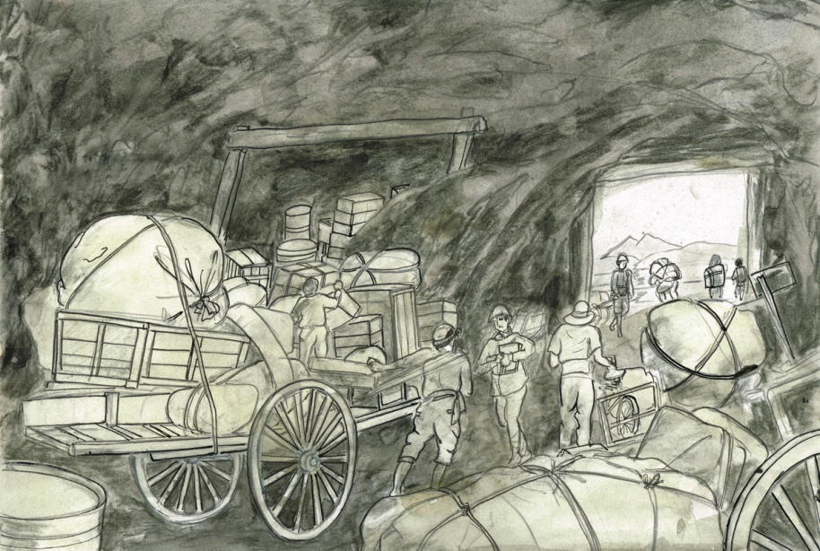
あれは確か、わたしが四十七を過ぎた時ですから、昭和の二十六年ですね。朝鮮戦争が真っ盛りで、新畑町の賭場もほんとに景気が良かった。その春先にお勢がひょっこり帰ってきたんです。戦争中に突然姿を消してそれきりだったんですからねえ、それがふらっと帰って来たんで、こっちが驚きました。
「なんだいお勢、久しぶりだな、どうしたんだ」なんてわたしが言うと、
「叔父さんあれきり御無沙汰しちゃってさ、ごめんなさい」とにっこりする。
「心配したぜ。おまえには借金があるし困ってたんだ」
「なに言ってんのよ、水くさい」
「まあ、元気そうでなによりだ」
こういうわけで、ともかく奥の部屋に通したが、お勢は相変わらず粋ななりをしている。けれども、なんとなく様子が異人くさいんですね。指輪だの髪飾り、帯留めなんぞが、どことなく日本人離れしている。それでわたしは、「で、こっちには何しに来たんだい」と聞いた。するとお勢は真顔になって、
「叔父さんのところに、少しの間おいてもらいたいのよ」と、言う。どうもお勢の言うことはいつも藪から棒です。しかし理由がなんであれ、お勢に置いてくれと言われれば、断わるわけにはいかない。それで、「まあ、おめえが遠慮することはねえんだから、いつまででも居たいだけいたらいいじゃねえか」と、答えました。
ところが、これが禍いした。どんなことかというとこれは後から分かったことですが、お勢はその時、覚醒剤の取引をやっていて、その仕事で東京に来た。けれども安心して体を置けるところがない。そこでここを頼って来たわけですが、お勢は何も言わなかった。ときどき自分の部屋に鞄だの石油缶のようなものをいくつも運びこんでいましたが、何だいそれは、と聞くと、大したものじゃないのよ、なんてはっきりと言わない。もちろん一目見て、これはただの荷物ではないなと思いましたが、お勢は打ち明ける気持ちはない様子なんですね。
向こうが言わないんなら、こっちも聞くつもりはない。お京はひどく心配した。お京は昔からお勢が気に入らない。「鼻の下を長くするのはかまいませんがね、あんな女を置いてるとろくなことにはなりませんよ」なんて言う。わたしは、
「まあ、そのうち神戸へ帰るんだからそう目を釣り上げるなよ」なんてなだめていましたが、正直なところこれは危ないな、と思いましたよ。時々大学生のような若い男が大きなトランクを下げて、「こんにちは、お邪魔します」なんて入って来る。
その男が来ると、お勢は二階に上がって、二、三時間ひっそりとしてるんですが、何をやっているのか分からない。そのうち男はとんとんと下りて来て、「お邪魔さまでした。また参ります」なんて言って帰る。
それでわたしはこれはいよいよヤバイと思いましたから、お勢に言ってやらなけりゃならねえな、と考えた。するとそれが分かったんでしょうかね、ある日お勢は何も言わずにどこかへ出かけて、それから二度と戻っては来ませんでした。
こんな具合にして、お勢は姿をくらましてしまったんですが、それからひと月半ぐらいして、警察から呼び出しが来た。「聞きたいことがあるからおやじちょっと来てくれ」と言う。出かけて行くと、ヒロポンに絡んだ話なんです。ヒロポンというのは、当時はほんとに流行った覚醒剤で特攻隊の兵士にも使いました。戦後、例の三郎が一度だけわたしの賭場に持ってきたことがあります。それもなんと石油缶にいっぱい持ってきた。
「こんなにどうしたんだ」と聞くと、海軍病院の地下壕に山ほどあるんだという。三郎はアンプル一本、十円でさばいていました。しかし出羽屋の親分も村松の兄貴もクスリでやられてますから、俺のところではこいつはご免こうむるぜと言って、それきり持ってこさせなかった。
けれどもこんな具合ですから、当時はどんどん闇に流れて、どこでも簡単に手に入れることが出来たもんです。一時は町の薬局でも公然と売買されていましたよ。戦後しばらくして、この薬の中毒がやたらと増えて問題になって、それで警察が動きだして、二十五、六年から取締りが厳しくなった。
ところがやりたい奴らはたくさんいますから、売ればいくらでも儲かる。それでお勢は、そいつを闇で流していたんですね。刑事の話の様子では、お勢も大学生も捕まってないが、お勢がヒロポンを流していたルートはおおよそつかんでいるらしい。
「おやじ、今度のことは大した罪にはならねえから、俺の顔を立ててくれ」なんて取調べの刑事が言う。「おやじがじかに扱っていねえということは、こっちもはっきり分かっているんだ。だから幇助の罪だけは認めてくれねえかな」てな具合。
戦前の取調べとはずいぶん違います。ところが警察というのはやっぱり恐ろしいもので、こんなことまで知っているのか、なんてことまでずいぶん詳しく調べている。それでさんざん取調べられて、裁判になって、わたしは覚醒剤の取引を幇助したという罪で、懲役一年の判決を受けました。
裁判の時の弁護士は内藤文夫という人で、これは今で言えば高等裁判所の判事までやって弁護士になった人、もう一人は松永登三という人で、この人は代議士をやった経験がある人物です。この二人がつきましたが、供述書と警察の調書から、懲役一年というのは何とも仕方がないということで、とうとう刑に服することになりました。刑が確定した当座は、すぐに保釈金を積んで出ました。実際に刑務所に入ったのは昭和二十八年の九月です。
最初は都内の刑務所に入ったんですが、ひと月ほどして、看守長に呼び出されました。この時は十人ばかりの囚人と一緒でしたが、看守長はこんなことを言った。
「このたび、君たちは官の定めるところにより、北海道の網走刑務所で刑期を務めることになった。従って、これより君たちを移送するので、途中何事もなく看守の命令をよく守って行くように。先方に到着した後はまじめに仕事に励んで、北の天地で身も心も洗い清めて、再び社会に戻れるように努力してもらいたい」と、まあこんな風な訓辞をもらってね。
翌朝めしを刑務所ですませて、竹の皮に包んだ昼と晩の弁当を抱えて上野駅から急行列車で北海道へ向かったわけです。青函連絡船に乗って函館に到着したときは朝で、函館刑務所から朝飯が届けられました。これは飛びきりの飯でしたよ。スケソウダラの、こんなでかいのがおかずについている。飯もあったかくて実にうまい。刑務所の中の飯の等級をつければ一等飯の上でしょう。
汽車の中で思い出すのは、こんなことがあった。それは汽車の中から手紙を出したことです。護送される人間が手紙を出すなんてことは許されてはいませんが、わたしが看守に、「ちょっとすみませんが、紙と鉛筆を貸してくれませんか」と頼むと、「何するんだ」と聞く。それで、「なあに、つまらねえことを考えつきましたんで、忘れねえうちに書き留めておこうと思いましてね」と言うと、この看守は心の優しい人間で、「そうか、よし、これを使え」と自分のぺンを出して手帳を一枚破ってくれた。
それでわたしは手錠のまま、紙に「網走」とだけ書いて、自分の名前をサインした。そうして、「看守さん、便所へ行ってもいいでしょうか」と言うと、そうか、とうなずく。そうして便所へ連れて行って、わたしが中に入ると片側の手錠を外してくれた。もちろんドアは開け放したままです。腰には麻縄の太いのがくくりつけられて、その端を看守が持っている。
「これを使いな」と看守が言うから、見ると新聞紙だ。わたしは新聞紙を折って中に書付けを入れて、新聞の字の上に宛先を急いで書いて、窓の隙間から外に投げました。北見の駅の近くでしたが、誰かが拾ってくれればなんとか届けてくれるかもしれないと思ったんですね。
というのも網走に移るというのは急なことだったから、家のものに知らせる時間がなかった。向こうへ着けばそのうち知らせてくれるんでしょうがね、まあ暇ですから、こんなことをやってみたんです。そうしたら世の中には親切な人がいるもので、この手紙がほんとに着いて、ひと月後に初世とお京から手紙が来ました。
網走で思い出すのは雪の中の作業ですね。当時の刑務所では零下三十度までは外で作業しました。吹雪でも風が吹いても、零下三十度までは外に出ます。囚人も大変ですが、看守も容易ではない。根雪が降ると農作業はできません。
それで何をやるかというと山へ入って木を伐るわけです。刑務所の近くの森で伐ることもありますが、何キロも離れた山に入ることもあります。わたしは、しばしばウトロの山に連れていかれました。伐るのはみんな直径一メートルもある大木です。なぜこんな山の中の木を真冬に伐るのかというと、雪がない時には伐り出した木を下に下ろすのが大変なんですね。雪があればソリのようにして馬で引くと楽に下ろせる。伐り倒した木に大きい釘を二本も打ち込んで、これにロープをつけて、馬方が、「ソレッ！」と威勢よくかけ声をかけて引きずり下ろす。
まったく馬というのはすごい動物で、本当に力がある。あの大きな木を体から湯気をポッポと上げてズズッと引くんですからこれは凄いものです。夏よりは冬の方が下ろしやすいとはいっても、冬の木は樹皮が凍ってますから、実に重い。夏の木よりも何倍も重くなってる。特に重いのはオンコウ（オンコ 一位の木）という木です。これは鉛筆に使った木ですが、木材としては目が混んでいて最高の材質だったんでしょう。ところがこいつは重い。それに硬いから、うっかりぶつかったりすると鉄でぶん殴られたようで目から火がでます。
もっと大変なのは、幹を伐ることよりも根っこを掘ることですよ。大木の根ですから人間の力では到底掘れない。馬でも伐ったばかりのものは歯がたたない。それで伐り倒したものは一年ぐらい放置して、それから鉄箆という尖った鉄の道具を根に打ち込んで、ロープをつけて、馬を五頭も並べて、鞭でひっぱたいて掘りあげる。こんな仕事をしている時は夢中ですから、誰も彼も自分が囚人だなんてことはすっかり忘れて、汗だらけになって作業をするんですね。大きい根がグラッとかしいでバッと抜けるとみんなそれは喜んで、子どもみたいな顔になる。なんであんなにうれしくなるのか不思議ですが、とにかくさっぱりした気分になる。この根は後で刑務所に持って帰って、細かくして、ストーブに焚いたり台所で使ったりします。
ノコギリのことですが、当時の網走の刑務所で使っていたノコギリというのは、たいへんな代物でした。みんな時代物で、わたしが生まれるずっと前から囚人たちが使っていたものばかりです。
「これは五寸釘の虎吉が使ったもんだ」なんてものを使いましたが、虎吉というのは明治の大泥棒だったそうです。一本の五寸釘で頑丈な錠前でも簡単に外して泥棒したらしい。どんな顔をしていたのか、出来れば会ってみたいようですが、そんな男が使っていたノコギリは、昔の鍛冶屋がフイゴで火を起こして、鉄を真っ赤に焼いて、それをチャンチャカチャンチャカ叩いて鍛え上げたものですから、頑丈なことこの上ない。それは大したものです。ところが手入れが悪くて、目立てなんぞはろくにやっていないから、歯はみんな丸くなって全然切れないんですね。だから一生懸命力を入れてもなかなか切れない。「なあに切れなくても手を動かしていりゃいいや」なんぞ言って適当にごまかすものもたくさんいましたが、あんなノコギリはいまあったら値打ちものでしょう。
ところでわたしと同房の囚人で、今でも二人だけははっきり覚えている人間がいる。一人は大川信夫という男。もう一人は長野誠二という男です。
長野は東京の飯場で土方の監督をしていたそうですが、ある時土方の一人と話のはずみで口論になって、向こうがナイフを持ち出したんで、隠していた日本刀で相手の右の手を肩からずっぽりと切り落とした。「出血がひどくて奴はすぐに死んだが、腕の一本や二本で捕まっちゃ、割にゃ合わねえ」と長野は言う。それで聞いてみると、戦争の時には腕を何十本切ったか分からねえ、とこう言う。
「いくら何でも、そいつはべらぼうじゃねえか」
「なあに、敵のじゃねえ」
「敵のじゃねえ、というと、味方の腕を切ったのか」
「そうだ」長野はうなずいて、ニヤニヤしている。そんな馬鹿な話があるものか、冗談も休みやすみ言え、とわたしはアホらしくなりましたが、長野の言うのには「なに、冗談なんかじゃねえ。ほんとの話さ。もっとも生きた兵隊のものじゃねえがな」
長野の話では、日本と中国が全面戦争に突入したその翌年の三月に徐州を攻撃した。ところが敵の待ち伏せに会って全滅寸前の目に遭ったんだという。
「中隊が麦畑の中を半分ぐらい進んだろう、いきなり敵が十字砲火を浴びせてきやがった。藪から棒というのはあのことで、ものすごい弾の雨。気がつくと敵が退却していたんだが、その時には中隊長も小隊長も戦死して、生き残った伍長が点呼したら、点呼に応じたのは半分もいない。戦死者は四十人以上。あとは負傷して麦畑でうなっている。
『ここに戦死者を集めて直ちに火葬にする』なんて伍長が言う。それで俺は、そんな暇があるでしょうか、と言ったね。『敵は大軍ですよ。退却したとしても夜になれば反撃するかもしれません。そうしたら全滅ですよ』
そしたら伍長は怒って、『それじゃどうするんだ。ほっていけというのか』なんて言う。
『ほうってはおけませんがしかし、こんなに大勢の戦死者を火葬にしている時間なんぞありゃあしませんよ』
『それじゃ首だけでも切り落として持って行くか』
『首は重くてとても全部は運べないでしょう』
『それじゃどうする』
『指か腕なら持てるでしょう』
『指じゃ仕方がない。腕を切ろう』
伍長と長野はこんなことを話した。そうして二人は軍刀で戦死者の右腕を肩から切り落とした。それこそ大急ぎで、片端から切った。落とした腕をロープで縛って、それを何十と束ねると、安全なところまで担いで行ってそこで火葬にした。しかし、遺族にはそれぞれの遺灰をきちんと渡さなけりゃならない。それで切り落とす時には、腕に布切れを巻いて、それに名前を書いておいた。こうやって大勢の腕を一つ一つ薪の上に並べて、焼く前に帳面に伍長が記録してから火葬にしたという。
長野からはこの他にもいろいろと戦争の話を聞きましたが、この男はじつにあっさりとした奴で、仲間が死んだことなぞぜんぜん意に介していない。勲章もいくつかもらったそうですが、それは確かに本当のことでしょう。とにかくこんな男が兵隊としては一番いいのには違いありません。
長野と比べると大川信夫というのはまるで違って、無口で陰気で、いつも何かにおびえているような表情をしていました。作業をしながら急に大声を出して飛び上がったり、歩きながらぶつぶつ独り言を言ったりする。囚人たちは、あいつは気が狂れていやがるんだなんて嫌がりましたが、わたしは別に気にもならなかったんです。すると大川の方もそれが分かるらしくて、わたしだけには何か親しみのような気持ちを抱いていたようです。それで何かというと側に寄ってきて、黙って横に座ったりしていましたが、そうこうするうちにだんだん気を許すようになって、少しずつ話をするようになりました。
あれは冬が過ぎて、ようやく春になった頃でしたが、ある晩大川が他の囚人が眠ったのを見計らって後ろに寄って来て、「親分、少々お尋ねしたいんですが」と言うから、「なんだい、今ごろ」と言うと、「親分は夢を見ませんか」と聞く。
「たいした夢は見ねえぜ」と答えると、大川は「わたしはしょっちゅう見るんです」と言う。
どんな夢だいと聞くと、首を絞められて空気が入って来なくて、苦しい苦しいとあがいていると、ハッと目が醒める。そうしてようやく息が出来て、ああ良かったと思っていると、また首を絞められる、そんな夢だという。
そうして急に声を潜めると「親分、人間というものは首を絞められてもなかなか死なないものですね」なんて気味の悪いことを言う。それでわたしは嫌になって、
「俺はおめえがシャバで何をやってきたのか知らねえが、つまらねえことは忘れるに限るぜ」と言って寝返りをうちました。昔の悪行に捉われていたら、誰だって身が持ちません。嫌なことは忘れるに限ります。ところが、この大川という男はあきらめない。横になっているわたしの後ろに寄って来て、
「もう少し聞いて下さい、親分、親分、すみません」
「なんだい。もう寝ようぜ」
「でも親分、人間は首を絞められるとどれくらいで死ぬと思いますか」
「いやなことを聞く奴だな。すぐにきまっているじゃねえか」
「何分ぐらいだと思います」
「そんなこと分かるかい。すぐだろう」
「それがそうではないんですよ。親分。ひどく長くかかる」
「どうでもいいじゃねえか」
「十二分三十秒」
「馬鹿なことを言うな。そんなにかかってたまるものか」
わたしはほんとに嫌になってしまった。こんなに陰気な話を聞くとさすがに気が滅入ってきていけません。それで、「俺はおめえの話はこんりんざい聞かねえぜ」と声を荒らげて不機嫌に言ったんです。
それで、さすがの大川もあきらめたらしくて、その日はそれきりになりました。ところが大川はやっぱりあきらめてはいなかったんですね。
春が過ぎて日差しが強くなった来た頃、わたしが飯を食って休んでいると、
「親分、この間の話、覚えていますか」と側に寄ってきて、小さい声で言う。
「何の話だ」
「十二分三十秒の話です」
「何の事を言ってやがるんだ」
「親分、とぼけちゃいけません」
大川は青白い目をまっすぐに向けてこっちを見ている。それがちょうど絵に出て来るマムシのようでね、ぬめっとして気味が悪い。いくらわたしだってこんな野郎とはかかわり合いになりたくはありません。それでこっちは立ち上がろうとしましたが、奴は今話しておかないと一生話す機会がないと思ったんでしょう。目を怪しく光らせて、わたしの囚人服の袖をつかんで、
「これは本当です。ちゃんと計っていたんですから。一度ではない。何度も何度も計ったんです」とそれこそ真剣に言う。それでこっちも腹に据えかねて、
「おめえはいったい、なんのつもりなんだ。ほんとに気が狂れているのか。いい加減にしねえと承知しねえぞ」と言いました。すると大川は肩を震わせて、
「全然正気ですよ。本当です。もしもわたしが気が違っているんなら、それは楽なものでしょう」と泣きそうな声で言う。
それでどうやらこれはどうも尋常じゃねえ、これほど思いつめているんでは、殴って黙らせてもどうしようもねえ、ここはひとつ、目をつぶって聞いてやらねえと妙なことになるかもしれねえ、と思いましてね、耳を貸してやろうということになったというわけです。
こんなわけで、ここでお話ししようというのはその時大川から聞いた話です。こんな話は網走刑務所にいた囚人でもわたしだけしか聞けなかったでしょうから、この機会に先生にお話ししておきましょう。
日中戦争の時、わたしの父親は満州の西安炭坑の庶務に勤めていたんですが、わたしが十九の時に病気になりました。それで知合いの紹介で、西安街の検察庁のボーイに雇ってもらったんです。
検察庁の長官というのは陳靖漢という満州人で、日本に留学したこともあるなかなかの人物でした。けれどもこの人は何もすることがなくて、毎日大きな机に向かって新聞ばかり読んでいた。実権は次席検事の加藤という日本人が握っていました。この人がわたしに目をかけてくれて、どこへ行くときも連れて行ってくれる。「おい大川、これから実地検証があるからついてこい」と検事に言われると、鞄を持ってお供をする。他に朝鮮人のキムという若い男がついて来ましたが、これは優秀な通訳でしたね。そのうちわたしも仕事に慣れて、検事はわたしを事務官に昇格させてくれました。
そんなある日、殺人事件があった。街の外れの山の中で女が殺されていた。容疑者は若い満人。検察庁と法院は同じ建物の中にある。裁判の結果、死刑の判決が出た。当時は強盗・殺人は、わたしの知る限りでは全部死刑です。死刑執行の命令は満州国の司法大臣から来る。何月何日に死刑を執行せよ、という命令です。
この事件は実は満人の検事が担当していたんでしたが、その検事は死刑に立ち会うのは嫌だというので、加藤検事が代わって立ち会ったものでした。死刑の執行は監獄の庭で行われることになってました。この時は必ず警察官と検察官、書記官、監獄長、それから監獄の医者が立ち会う。わたしは加藤検事のお供をしてそこに行ったんです。
大きな門をくぐると広い庭になっている。高い塀が廻っていて、囚人を収容する房舎がながながと続いている。監獄の庭の隅に六尺余りの棒が立っている。直径一尺余り。死刑囚は房舎から引き出されて、その棒に背中合わせに座らされる。地面の上です。もちろん天井はない。野天でやるのです。夏の暑い日でね、屋根も地面も焼けるような具合。風がぜんぜんない。立ち会った警官も検事も頬から首から汗を流している。
「アメリカは、いよいよけしからんですな」
「関東軍はどうする気でしょうか」なんて小声で話している。
棒には穴が開いている。獄吏がその穴に太いロープを通す。それから囚人の首にロープを巻き付ける。棒の反対側から出ているロープのところに、一尺ばかりの丸い棒を差し入れる。この棒をねじると、囚人の首に巻きついたロープが締まるという仕掛けになっている。
加藤検事が、時間だ、と合図をする。わたしは時計の針に目を落とす。獄吏が棒を回し始める。監獄医が死刑囚の心臓に聴診器を当てている。囚人の胸が大きく膨らんでいる......医者は身動きもせずに囚人の胸に聴診器を当てて、左手で脈搏を診ている。首筋から汗がたらたらと垂れている。囚人は驚いたような顔をしている。泣いているんだか怒っているんだか、分からない。目がどんどん飛び出してくる。声は出ない。縛られた手の先が、ゆっくりと円を描くように回っている。だんだん顔色が変わって、顔が、黄色から赤くなって、それから紫色に膨れてくる。
医者は囚人の胸に聴診器を当てて、左手で脈搏を診ている。死刑囚の手が空をつかんで、それからパタリと落ちた。身体がブルッと痙攣した。獄吏が死刑囚の足をポーンと蹴った。膝が伸びて、地面に両足をグタッと広げた。
「ただ今、心音が止まりました」と監獄医が加藤検事に言った。
「そうか」検事はうなずいて、ポケットから煙草を取り出した。
「それが丁度ロープを締め始めてから、十二分三十秒だったんです」
「ちょっと聞きたいんだが」とわたしは大川の顔を見た。「医者は初めから終わりまで聴診器を当ててるのか」
「そうです」
「何のためだい」
「さあ死期をちゃんと知るためではないでしょうかね」
「馬鹿ばかしい。そんなやり方を考えた野郎は、いったい誰なんだ」
「昔からの、清の国のやり方だったらしいですよ」
「死刑はそれきりだったのか」
「いえ、半年ぐらいの間に十件ぐらいありました」
「そいつはまた、多すぎるじゃねえか」
「それがどういうわけか、みんな十二分三十秒なんです」
「計っていたのか」
「加藤検事が自分の金時計をわたしに持たせて、ちゃんと計らせるんですから間違いはないんですよ」
「検事は、なぜそんなことをするんだ」
「記録に残すためです」
＊
「どうも不思議なんですがね、先生」と男は言った。「いったい、十二分三十秒というのは長すぎると思いませんか。どう思います」
「長いと思いますね。本当でしょうかね。その大川という男の話は」
「先生も妙に思うでしょう。首吊り自殺なぞは瞬間的に意識が落ちるようですから、それと比べると大変な苦しみですよ。で、不審に思いましたから、普通の絞首刑の時はどうなんだ、と聞いてみたんです。すると大川は、同じですよ、絞首刑も死ぬまで同じ時間かかる、と言うんです。どうです、先生、そんなにかかると思いますか」
「分かりませんね。いくら医者でもそんな経験はありませんからね。しかし、大川という男は実際に見たんですね」
「そうでしょう。見ないであそこまで喋ったのなら、これは大した役者ですよ」
＊
「その種の絞首刑は、二度だけ立ち会いました」と大川は言いましたよ。
「奉天（現・瀋陽）の監獄から、いついつ死刑が執行されるから立ち会いに来て欲しいという要請が来て、検事はわたしを連れて汽車に乗って奉天まででかけたんです。ここでは木製の高い絞首台があって、その上に死刑囚を乗せて首にロープを巻く。やがて床がポーンと開いて身体が奈落に落ちると、ロープが締まる。そうしてぶらぶらと下がるんですが、もちろん意識はありません。けれども死んだわけではない。加藤検事の話では、頸椎が瞬間的に脱臼して呼吸が止まるんだ、ということでした。呼吸は止まっても、まだ脈はあるんです。監獄医が奈落の底でちゃんと脈を見ている。検事や書記官や警察官たちは絞首台の穴の周りに立って下を見おろしている。そうして、『いま停止しました』と言う医者の声で時計を見ると、やはり十二分三十秒なんです」
「そう長くちゃあ死ぬのも容易じゃないな」
「もちろん意識は瞬時になくなるんでしょうが、心臓は動いているんですから死んだわけではないんです」
「その時間には、理由があるのかな」
「わかりません」
「しかし囚人はおまえが殺したわけではないんだろう。うなされるとは妙じゃねえか。それともおまえは自分で殺したこともあるのか」
わたしは大川にこう聞いたのです。すると大川は、とんでもないというふうに首を横に振って、こんな話をしました。
満州とソ連の国境に佳木斯という人口三万ばかりの町がありました。ここは日本の満州開拓の中心地です。町のすぐ側を松花江が流れている。ここで八十人ほどの満人が警察予備隊として勤務していた。この満人はもともとは匪賊で、王という男を頭にして北満の村々を荒し回っていましたが、討伐隊に追いつめられて降伏した。ところで匪賊というのは、もとは満州の百姓です。当時は満州拓殖公社というのがあって、ここが満州の開拓をすすめていましたが、この機関は日本政府の出先みたいなものだから権力がある。それで満州の人間が何百年と耕してきた土地、向こうでは熟地とよんでいましたが、それを強制的に買い上げて開拓移民に分け与えた。土地を奪われて行きどころの無い満人はあちこちで反抗しましたが、その一部が匪賊になったというわけです。王というのは匪賊の頭目で、以前は謝文東の子分だったそうです。
謝文東というのは昭和九年に起きた反乱の頭目です。この時の反乱事件は土龍山事件といって、何万という農民が謝文東のもとに集まって、日本の移民政策に反乱を起こした。昭和九年というのは加藤完治などが満州開拓に乗り出したばかりの時でね、謝はこれに反対して武装決起したということです。王はこの時の生き残りだったそうですが、討伐隊の追及を受けてとうとう降伏したんです。その時の討伐隊の隊長は憲兵中佐でしたが、中佐は王を処罰しないで、国境の警備に当たらせることを思いついて、これを関東軍に進言した。この中佐は転属してチャムスの警務庁長に任命されました。中佐は匪賊をうまく使えば兵隊としても優秀だし、それにまだ降伏しない匪賊の情報を取るのにも便利だと考えたわけでしょう。
この頃は黒龍江に近い山の沢で相当に砂金が取れた。それで何千という労務者が入って働かされていたわけです。ところが労働が苦しい上に、冬などは零下何十度という寒さですからとても我慢できない。それで逃亡を企てる。砂金会社は逃げられたら困るというので、満州政府に予防策を要請した。
政府は、それなら労務者を警察に監視させよう、というわけで、匪賊上がりの警察予備隊を三十人ばかり投入することになった。王が隊長に任命されて、家族を連れて砂金の採取場へ行ったわけです。ところが王は、こんな所で日本のために警備しているのはまっぴらだ、と思ったんでしょう、脱走を計画した。
事件が発生したのは、確か、昭和十八年二月の第二日曜日でした。雪が降って一面銀世界です。朝早く砂金採取場から、匪賊たちがソ連への脱走を企てて反乱を起こしたという連絡が入った。警務庁では、スワッ、と警察を総動員して現地へ急行した。
満州国軍・関東軍も、これに合流しました。ソ満国境には黒龍江がありますが、冬は結氷していますからどこでも渡れます。関東軍と満州軍は飛行機を飛ばして空から捜索した。雪の朝ですからどこもかしこも真っ白です。その中を三十人もの匪賊たちが家族を連れて山越えをして河の方へ向かっている。雪の中だから隠れるところがない。空からはまる見えですから、たちまち発見された。発見した飛行機はどうしたかというと、伝書鳩を飛ばした。無線がないんで、鳩を飛ばしたんです。
「本当かい。飛行機に無線がねえなんて信じられねえような話だ」
「それはそうかも知れませんがね、これは嘘でもなんでもありません。伝書鳩を本当に使ったんです」
大川は瞬きもしないでじいっとわたしを見て、二、三度こくりこくりとうなずいてみせる。
「まあ鳩とはしゃれてるぜ。ともかく、それで匪賊の位置が分かったというんだな」
「ええ。それで日満両軍は先回りして待ちかまえていたというわけで、そこへ王たちの一隊が来たんですから、袋の鼠とはこのことです。雪の中で交戦となりましたが、討伐隊は匪賊の何十倍ですから、問題にならない。約半数がその場で撃たれて、頭目の王も死んで、残りはようよう東支鉄道の線路まで逃げましたが、そこへはもう手が回っていましたから全員捕まりました。これが十五人」
加藤検事はこの時チャムスの検察庁に赴任していましたが、この事件の取調べのために、三江省の省公署に特別法廷をつくりました。判事は牡丹江にあった高等検察庁から呼んだんです。裁判の結果、日本軍・満州軍と交戦したものは全員死刑の判決。
死刑の判決を受けた者の中には女が一人混っていました。一審だけで上告は許されない。直ちに死刑を執行することになりましたが、執行の場所は砂金採取場と決まりました。これは他の匪賊への見せしめの意味もあったんでしょう。
死刑の前日には、匪賊を一度は捕まえて改心させて、彼らを警察予備隊に採用した憲兵中佐が匪賊を見舞って、みんなの前にあぐらをかいて、
「俺は、おまえたちを信じて部下として使ったのだが、その俺の気持ちを分かってもらえなくて残念だ」と涙を流しました。そうして彼は警務の部下に、「匪賊たちに好きなものを食べさせてやってくれ」と言いつけて、最後の食事をさせました。この警務庁長は終戦の時に割腹して死にました。
当時の満人には迷信があって、死ぬ時にいいものを食べて飲んで、立派な衣類を着て死ぬと、立派な身分に生まれ変わることが出来る、と信じられていた。自分が死んだ年が十五歳ならば十五年後、三十歳ならば三十年後に生まれ変わるというのです。それで匪賊たちに何が食べたいかと聞くと、チェンメンをもらいたいと言う。これは上等の煙草です。それから肉饅頭と上等のコウリャンのパイチュウ（焼酎）、これを仏様の像の前に山のように並べて、みんな思う存分、食べたり飲んだりする。やがては生まれ変わるということを信じていますから、実に陽気なんです。
ところが中には、やはり恐ろしくて泣くものがいる。すると頭目の王の息子が、「何を泣いている、泣くな！」と言う。この若者はまだ十五歳で明日の朝には殺されるというのに、平然としてマントウをいくつも食べる。煙草をくゆらす、酒を飲む。全く、匪賊とは言いながら、見上げた覚悟の若者でしたよ。
まあ、そんな具合にみんなで一晩飲んだり食べたりして、とうとう夜が明けました。すると王の息子が、「さあ、みんな行こう」と、言う。あくまで悠然として、警備のものを見下している。
こうして王の息子が先頭に立って、他のものもそれに従って、おとなしく刑場に行きました。警務庁から警官が十名余り来ました。匪賊たちは手には手錠、足には鎖がはめられて、深い穴の側に正座させられる。警官が首の後ろに拳銃を当てて発射すると、ストーンと前にころげて穴の前に倒れる。それはまるで人形のように見事に倒れるものです。
みんな覚悟をしていますから、ぜんぜん騒がない。おとなしく撃たれるのを待っている。ところが頭目の息子を撃とうとした警官が、緊張したんでしょうか、手が震えて手元が狂った。頭を撃たないで、頬から口の中を撃ち抜いた。血が辺りに飛び散って王の息子の顔面は真っ赤になった。
王は頬を撃ち抜かれながら立ち上がると、カッと目を見開いて周りの人間をにらみつけた。そうして何か叫んだんですが、口が裂けているから何を言っているのかは分からない。それは実に恐ろしい形相。わたしはすぐ側にいましたが、あんまり恐ろしくて肝をつぶしました。すると後ろにいた警官が、「何をやっている。馬鹿野郎！」と叫んで、やにわに自分の拳銃を抜くと、バンバンバンと五、六発頭に撃ち込んだんです。王の息子の頭はまるで蜂の巣のようになって吹き飛びました。
こうしてこの若い匪賊は死にましたが、死刑の日取りと場所は前もって家族だの親族には知らせてありますから、親族は棺桶をみんなで担いで刑場に来ている。親族がいないものは親しい友人が来ている。全員の銃殺が終わって医者が検死を済ませ、警官が、もういいぞと合図をすると、引き取りのものは、死体をきれいにふいて棺桶に納めて担いで帰って行く。引き取り手のない死体は現場の穴に埋葬する。こうしてその日の刑は終わったんです。
けれども死刑になったのは、これが全部ではありません。女が一人残っていたんです。というのはこれは二十五歳の魯宝華という女でしたが、妊娠八カ月だった。当時の法律では妊娠七カ月後の女が死刑になる場合は、子どもを産んでから刑を執行するということが決まっていた。ところが八カ月ですから刑は執行できない。
加藤検事は司法大臣に、この女は妊娠八カ月だから当分刑を延期したい、という意味の書類を書いて提出した。その返事は、「かまわないから刑を執行しろ」という命令。それで仕方がないので、チャムスの監獄で刑を執行することになりました。わたしは監獄や裁判でこの女を幾度も見ましたが、女はわたしが検事の助手と知っていたのでしょうかね、わたしを見ると、子どもだけは助けて下さい、と、こう叫ぶんです。自分は殺されても仕方がないが、腹の中の赤ん坊だけは助けて下さい、と、こう言うんですね。女はひどくやつれていて、着ているものもぼろぼろでしたが、そのぼろが腹のあたりで飛び出している。そうして、なんとも言い様のない悲しい目でこっちを見るんです。
それでわたしはだんだん辛くなって女を見ないようにしていましたが、明日刑が執行されるという日になると、急におとなしくなって、牢の奥にただじいっとしていましたが、それはもう生きているとは思えない姿でした。
刑はチャムスの牢獄で執行されました。銃殺ではなくて西安でやっていたと同じ方法です。棒に穴が開いている。獄吏は女を棒に縛って、ロープを首に巻き付ける。監獄医が胸に聴診器を当てる。開始の命令が下る。金時計を見るとちょうど一時です。
獄吏が棒を回すと女が悲鳴を上げました。女の目がどんどん飛び出してくる。わたしは息が出来なくて目をつぶっていました。が、ふと見ると女が白い目でこっちを見てるんです。わたしはハッとして、あわてて右腕の時計に目をやりました。ところがどうしたわけか針が全然見えない。一生懸命針を見るんですが、何時だかさっぱり分からない。すると、突然、「止まった」という監獄医の声がしたので、はっと気がついて時計を見ると一時十三分前だったんです。
それからどうにも我慢が出来なくなって、検事のところを辞めて西安炭坑で坑夫になりました。そこで終戦になったんです。そして、あのどさくさで命からがら逃げ回っていましたが、ようやく日本へたどりついて一息ついたら、ひょいとあの女のことを思い出した。そしたら、あの飛び出した目がじっとこっちを見ているんです。忘れよう忘れようと思うとますますひっついてくる。そのうち夢の中で首を締められるようになったんです。
「ヘー、なるほど、そうかい」と、わたしは話を聞いてましたが、腹ではどうやら大川が嘘を言ってるな、とにらんでました。さんざ検事のあとにくっついて大勢の人間が死刑になるのを見ていた人間が、女一人に眠れなくなるとは妙な話です。それに大川は日本に戻ってからもずいぶん悪いことをやって網走まで送られて来たんですから、女が死んだくらいで悩むとは思えない。
しかし考えてみれば、大川を悩ませているのはこの男が歩いてきた長い間の悪縁で、それがその女の姿になって現れているのかも知れません。もしかしたら大川は気の弱い、案外やさしい男でね、本当は怨まれてもいい人間のほうが恩給だの年金だのを貰って余生を楽しんでいて、代わりに気の弱い助手のほうが恨みに取り憑かれて眠れないでいるのかも知れない。そう考えると気の毒ですが、案外人間の世界というのはこんなものです。
こうしたわけで真実は分かりませんが、いずれにしても眠れないというのは気の毒ですし、ここまでわたしも頼られては何とかしてやりたいような気がする。何が出来なくても、せめて大川を安心して眠れるようにしてやりたいと思うけれども名案は浮かばない。それでわたしもよほど困って、あれこれ考えていたんですが、ある時ひょっといい考えが浮かびました。浅草の観音様です。苦しい時の神頼みという言葉がありますが、大川のような人間が救われるためには神か仏にすがるより仕方がないでしょう。
それである時大川に、「俺が東京へ戻ったら、殺された王の息子も魯という女の供養も、ちゃんとしてもらうから安心しろ。供養がすんだら手紙を出す」と言いました。すると大川は、「功徳があるだろうかな」と言うので、わたしは、「日本一の仏さまだから安心しな」と言ってやったんです。
わたしが出獄した時は、みんなで迎えに来てくれました。そうして列車に乗ったんですが、どういうわけか列車が遅れた。それで予定していた青函連絡船に乗り損ねたんです。一列車でも早く東京へ帰りたかったんでがっかりしましたが、もう夜ですから、ひと晩泊まらなければならない。
「親分、ここはもう外ですからね。ゆっくりしましょうや」と亀蔵が慰めてくれましたが、わたしは腹が立って仕方がない。けれどもこれはどうしようもありませんから、宿を取ることにしました。ところが、それが幸いした。驚いたことに、連絡船が沈没したんです。
例の洞爺丸遭難事故です。台風が吹き荒れて千人以上が死んだ。世の中というものは分からない。こうしてわたしはまた浅草に帰ってきましたが、外の空気を吸ったとたん、大川のことをきれいさっぱり忘れちまった。昔の仲間が出所を祝ってくれて、あれこれ忙しかったもんだから、ついうっかりしたというわけです。
ところがしばらくしたら、なんとなく落ち着かない。身体が重いような気がする。そのうち厭な夢を見るようになった。どんな夢なのか目がさめた時には忘れているんだけれども、汗をびっしょりかいている。こいつは妙だ、と思いましたが、まあ、ムショの疲れが出たんだろう、そのうち直るだろうぐらいに思ってほっておいた。ところがいつまでたっても、はっきりしない。身体に気味の悪いものが張り付いているような気がする。こいつはおかしい、どうも変だ、というので、そのころ川越で占いをやっていた松田先生を尋ねた。すると松田先生は、
「何か良くないことをしやしないか」と聞く。それでわたしは、ムショの務めを果たしたばかりで、悪いことなんぞ何もしていない、とこう言った。すると先生は、
「それなら、悪いものにさわらなかったか」と言う。それでわたしは、ハッと思い出して、実はこれこれこういう話を聞いたんだが、シャバヘ出た嬉しさにまぎれてついすっかり忘れていた、と大川の一件を打ち明けた。すると先生は、
「そいつは駄目だ、ほっておくと親分もろくなことにならない。早くお祓いをして、お札をもらって、絞首刑になった大勢の人間を弔ってやらないといけない」と勧める。
「とにかく早いほうがいい」と言うので、先生はわたしを浦和の氷川神社へ連れて行った。そこでお祓いを受けて、その日は川越に泊まって翌日、松田先生と浅草に帰りました。
亀蔵やお京には帰ってから、実はこれこれと事情を話しましたが、お京は、それなら氷川神社なぞまで行くことはない。大川という人にも約束したんだから、これから浅草寺に行きましょう、と言う。松田先生も是非行ったらいいと勧めるので、わたしはみんなを連れて浅草寺へ行って護摩を焚いてもらってお札をいただきました。大川にもお札を買って、早速網走へ送ったんです。大川はさすがに嬉しかったんでしょうね、すぐに礼状をよこしましたよ。
伊地知栄治は長椅子に腰を下ろして、大きな頭をゆらゆらさせていた。春の柔らかな日差しがガラス越しに差し込んでいる。
「もう横になったらどうです」と初世が言った。
「大丈夫だ。ちょっと、あれを持ってきてくれ」そう言って彼は自分で煙草に火をつけて一服ふかした。女は重そうな紙包を両手に抱えて運んで来た。机に置いて包を開けると、いつか見た青い石が出てきた。
「ご迷惑でしょうがね先生、ひとつこいつを貰ってくれませんか」彼は、気だるそうに目を細めた。「ちゃんとした水盤にいれて、きれいな水をかけて朝の光で見ると、なかなかいい景色ですよ」
彼が茶色く乾燥した指先で軽く石を突っつくと、それはまぶしい光の中で、かすかに揺れ動いた。帰り道私は、瀬戸物屋で、青みがかった手ごろな大きさの水盤を手に入れた。
その翌日から、私は風邪を引いて寝込んだ。微熱と湿った咳が続いて一週間たってもはっきりしなかった。するとそんなある日、突然、手紙が届いたのである。差し出し地は石岡となっていた。封を切ってみると、こんなことが記してあった。
「拝 啓 だいぶいい陽気になりましたが、お体は回復されたでしょうか。普段の無理がたたったのでしょう。重々お気をつけ下さい。
さて、このひと冬の間、先生と楽しくお話をすることが出来、本当に有難く思っている次第です。わたしは土浦に骨を埋めるつもりで居りましたが、急に石岡へ引き移ることになりました。体のほうはあまり変わりなく、気分も大変いいのです。近くに病院があり、いざというときには往診もしてくれるそうですので、ご安心下さい。先生もお忙しいようですが、くれぐれもお体を大切になされて下さい。
敬 具」
手紙はこれだけだった。あまり唐突で、事情がさっぱり分からなかった。電話をしてみたが、女はいつも留守で通じなかった。それで私は体が回復するのを待って、差し出し地の石岡へ行ってみることにしたのである。
場所はすぐに分かった。そこは町中のレストランで、入口に手入れのいい藤の盆栽が枝を張っていた。レジで尋ねると、女の子が、「ちょっと待ってて下さい」と言って調理場の方へ走って行ったが、すぐに品の良い女性が姿を見せた。
五十半ばのようにも思えたが、あるいはもっと年をとっているのかも知れなかった。女は頭を下げながら、
「いろいろお世話になっております」と親しげに挨拶し、「どうぞ、むさくるしいところですが、お上がりになって下さい」と、先に立って二階へ案内した。彼は床の間のある八畳間に寝ていた。
「こんなところまでいらして下さるとは、申し訳ありません」彼は乾いた声で言った。
「どうですか、具合は」
「ご覧の通りです。これは今わたしが世話になっている食堂のおかみです」
女は畳に両手をついて改めて挨拶した。私は挨拶しながら、この女が男とどんな関係にあるのかと考えたが、彼はそれについては何も言わず、「先生も少し痩せましたね」などと話題を変えてしまったので、そのままになった。痰が喉にこびりついているらしく、息をするたびにぜいぜいと糸をひくような音がした。
「あの石には忘れずに水をやっています」
「山本の親分は、あれが浅間に似ているなんぞと言ってましたが、わたしは、七五連隊にいたときに見ていた柳先徳山にそっくりな気がするんです。先生は山に登りますか」
「昔はね。しかしもう年ですから、まるで駄目ですよ」
「何を馬鹿なことを、これからが花じゃありませんか」
彼は黒ずんだ頬でにやりと笑い、二、三度湿った咳をした。女がポットを運んできて茶碗に新しい茶を注いだ。
「あなたも飲みますか」と女は言った。
「いや、後にするよ。茶を飲むとすぐに小便が出ましてね、どうもいけません。ところでね先生、三郎のことは覚えていますか」
「戦後のどさくさで大儲けをした男でしょう」
「そうです。その三郎が、つい先日ひょっこり尋ねて来たんです。五、六日前だったかなあ」
「四日前ですよ」と、女が側から言った。
「そうか......昔のままの、ちんちくりんの、目がくるくる回る男でね、親分、お久しぶりです、元気そうじゃありませんか、なんぞと言いながら、親分もいよいよ危ねえらしい、とこういう噂なもんで、死ぬ前に会っておきてえと思って、わざわざ見舞いに来たんだなんてエヘヘと笑いやがるんです。それからつもる話になって、あの頃は好き勝手なことが出来て本当に愉快だった、この頃は誰も彼もこすからくなって、ちっとも面白くねえ、と二人で意気投合しましたよ。それでわたしは、おまえは今何をやっているんだと聞いてみたんですが、相変わらず、バーだのスナックの掃除をやって小遣いを稼いでいるということです。三郎は相変わらずの自慢好きで、俺はきれい好きだからな、ママが俺を頼んだら他の者を頼む気がしねえ、それで午前中に二軒やって、午後にまた二軒やる。それから自転車に乗って釣りに行くんだ。たまには競馬もやるな、とこういう話です」
「昔のままなんですね」
「そうですとも。けれどもあれもやはり年ですからねえ、いつまでも若いというわけにはいきません。先生があれの話を聞いておくなら、今のうちですよ」
「会いたいものですね」
「そうだろうと思いましてね、電話番号を聞いておきました。それから、松田忠之先生ですがね、つい一昨日でしたが見舞いに来てくれましたよ。相変わらず四角な顔をして、まじめくさっていましたが、わたしの見るところ、松田先生は足が弱って来ましたからね、せいぜい三年というところでしょう。占いは自分のことは分かるのかどうか知りませんが、先生が興味をお持ちなら、わたしが電話をしておきましょう」
「それは有難うございます。けれども、その前に伊地知さんに元気になってもらわないと困るんです。まだ話は全部聞いていないんですからね、今度来るときにはまた録音テープを持ってお話を聞かなければと思っているんです」
「話し終えるまでは死なれちゃ困るというわけですね。まったく、先生はわたしが思っていたよりもずっと凝り性ですねえ。けれども網走から帰ってからたいしたこともなくてね、特にお話しするようなこともないんです。まあ、ちょっとしたことで左手の薬指を詰めるなんてこともありましたが、お恥ずかしい次第で打ち明けることも出来ません」
「それはいつのことです」
「いやいやこれはまったくつまらないことですよ。先生はもしかしたらわたしが世間に名の通ったやくざで、派手な面白い話が聞けるのではないかと期待していたかも知れませんが、やくざというのは日陰の人間ですからね、世間で考えるほど派手に生きるものではありません。あんなあばら屋に通っていただいて、大した話も出来なくて申し訳なく思っているんです」
「とんでもない。伊地知さんとお会いできて、ほんとうに幸運でした」
「先生は甘いものはお好きでしょうか」と女は言いながら、鶯の形をした菓子を皿にのせて私の前に置いた。
「昨日深川の富岡八幡にお詣りして、その帰りに買ったんです」
「東京へはよく行くんですか」
「いいえ、ほんのたまにしか行きません」
女は微笑しながら、私の茶碗に新しい茶を注ぎ入れた。
「わたしが先生のところへ診察にお伺いした頃、壁に下町の絵が掛かっていましたが、あれは先代の先生が描いたものだそうですね」と男が言った。
「ええ、私の父は六十を過ぎてから絵を描き始めたんですが、あの絵は七十の頃描いたものでしょう」
「あれはわたしが若い頃東京の下町で見たのと、そのままそっくりの景色です。夕暮れでね、長屋のおかみさんたちが立て付けの悪い軒先にしゃがみこんで、お喋りしながら魚を焼いている。破れ障子の陰で子どもが腹をすかして泣いている。印半天の男が仕事を終えて、どぶ板を踏んで帰って来る。わたしはこんな景色を眺めながら深川の石炭屋で働いていましたが、気がついたら東京にはいつの間にかそれが無くなっていた。それが引退して先生のところへ来たら、あれがあったんです。懐かしくなりましてね、あの絵はまだあそこにありますか」
「あのままです」
「それは良かった」
時計が二時を回った頃、「近いうちにまた来ますから」と切上げて、私は階段を下りた。女は外まで見送りに出た。とうとう彼女については何も分からずじまいだった。伊地知栄治は、それからひと月もしないで亡くなった。葬式はごくひっそりしていた。その席で私は三郎や松田先生に会った。二人は彼が話していたのと、そっくりそのままの姿をしていたのには大いに驚いた。
私が挨拶をすると三郎は、「親分から電話をもらったからな、そのうち遊びにきてくれ」と愛想よく応じてくれたが、松田先生の方は曇った眼鏡の奥から私の顔を黙って見るばかりで一言も口をきかなかった。
葬儀の席で、私は久しぶりに初世と会った。「帰りはどうするんです」と聞くと、「電車で来ましたから」と言うので、土浦まで私の車に乗ってもらうことにした。私はそこで、石岡の女のことを聞くことができた。「あれは、おみつさんですよ。昔駆落ちした人です。あの人は先生に話さなかったんですか」と、初世は言った。
「そうでしたか、私はあの後、それきりになっていたのかと思ってました」
「実を言いますとね、わたしも詳しくは知らなかったんです。わたしがあの人と一緒になったのは戦争中でしたが、二人が駆落ちしたのはそのずっと前ですからねえ」
初世は、運転している私の方をちらっと見た。
「それじゃ、いままで会ったことはなかったんですか」
「いいえ。亀蔵さんが死んだのはもうだいぶ前ですが、その時におみつさんがお通夜に来たんです」
「じゃそれまでは......」
「後から聞いた話では例の駆落ちのあといろいろあったようですが、とうとう親元の成田の宿屋に戻って、堅気の男を婿にもらって、ふた親が亡くなった後も宿の仕事を続けていたようです。あの人もそれを知っていたんでしょうが、会いには行かなかったようです。ところが亀蔵さんが死んだ時に、あの女はひとりで弔いに来た。それから幾月もしないであの人は指を詰めたんです」
「それはどういうわけですか」
「女に会いに行って、それで喧嘩になったようですよ。まったく馬鹿としか言いようがありませんが、朝出て行って、帰って来たら指がないんですから驚きましたよ」
「派手な喧嘩でもしたんですか」
「それならわたしも救われたでしょうが、そんなんじゃありません。見たわけではありませんからよくは知りませんが、あの人は亀蔵さんの葬式のあと、成田まで女に会いに行きました。亭主は留守で女だけがいた。それで上がって話をしていたら亭主が帰って来た。ところが、この男というのがあの人の話ではちょっと変わった男だったらしいんですね。自分の女房の昔のことをいちいち調べ挙げて、事細かに知り尽くしていたというんです。世の中にはいろんな男がいるものですからね。
それで、あの人が挨拶すると、向こうはだいぶ酔っていたそうですが、またそこで酒を出させて、いろいろと昔の話をし始めた。あの人は、これは困った、と思ったから帰ろうとしたが、しつこく絡みついて帰さない。そのうち男は自分で自分の話に興奮して大声を出して、いきなり、何だ今ごろ、亭主が留守の間に勝手に上がり込みやがって、どういうつもりだなんて怒鳴りはじめて、それは大変な騒ぎになったらしいんです」
「あの親分を相手に喧嘩を仕掛けるとは、大した度胸じゃないですか」
「男は女房を寝取られたんじゃあないか、と思ってカッとなったんでしょう。それは素面だったらそんな口をきくこともなかったんでしょうが、飲んでいましたからね。それで、その亭主はあの人を殴ったようです」
「へえ」
「それで、どうしたかというと、あの人は、まったく馬鹿じゃないでしょうかねぇ、その場で、指を詰めたんです。呆れ果てたもんでしょう。全く、こんなことぐらいで指を詰めるなんて、馬鹿ばかしくて、なんとも物も言えませんよ」
「それはいつのことですか」
「もう六十も半ばを過ぎた頃の話です」
「それじゃそれほど昔のことではないんですね」
「そうですよ。しかも、二本とも、あの女が原因ですからねえ。まあ、ほんとのところ、あの人は、おみつさんにいいところを見せたかったんでしょう。だってね、どこのやくざが、たかが宿屋の亭主の顔を立てるために指を詰めたりすると思います。田舎の飲んだくれの、つまらない男なんですよ。こんな男を張り飛ばしても、誰も文句は言いませんよ。それをあの人は、昔の女が見ている前で、すっぱりと切り落としたんです。まったく大したものですねえ。いい気なものですよ」
女は自嘲気味にうっすらと笑って煙草に火をつけた。道路の両側は田圃と畑続きで、山の向こうの空に、わずかに夕焼けが残っていた。
「で、それからどうなったんです」
「女は家を出ました。それであの人は後の始末をいろいろと世話をして、それからどうしたのか分かりませんが、今の店を持たせてやったようです」
「なるほど......」
「それで先生は、あの人が、なんであっちの女のところへ行かなかったのかと、こうお聞きになりたいんじゃありませんか？」女は、私の顔を覗き込んだ。
「出来れば、聞かせていただきたいものですね」
「先生も物好きですね、......こう見えてもわたしも女ですから、意地もありますよ」と女は少し強い声で言った。
「あの人と一緒になった頃、こっちは体が弱くて、何にもできなかった。お京さんが一人で全部やっていたんです。それでもお京さんが自分の店を構えてからは、わたしが出羽屋の裏方になった。そうして長い間、あの人の世話をして来たんです。あの人はそれが分かっているから、わたしを捨てられなかったのかも知れません。それにね、あの人とわたしの間には娘が一人いますからね、それもありますでしょう。わたしらが土浦へ来たというのも、娘がこっちの男と一緒になって、それで近くにいい家があるから来ないかと言うんで、それで移って来たというわけですよ。ところが娘は男とまずくなって、東京へ戻りましてね、今は日暮里に家を持って、生徒をとって踊りを教えています。まあ、そんな具合で、ここにはわたしとあの人だけになりましたが、わたしは、別れようかどうしようか、いつもそればかり考えていました。相手が病人でも、いるといないとでは大違いですからね、でも、だんだん考えてみると、このままわたしのところに引き留めておくのは、なんだか罪作りに思えてくる、......別に、わたしが同情してやる筋合いは何もないんですが、やはり、いろいろ考えさせられて、とうとう突っ張りきれなくなった。
それで、ある日石岡に行って、どうだろうと話をすると、向こうは、もしよろしければ面倒を見たい、と言う。それでそれなら、のしを付けて貰ってもらいましょう、と、こういう訳になって、それで引き取って貰ったというわけです。
でもね、本当は、あんなに弱るまでわたしのところに置くつもりはなかったんですよ。娘が男と別れて東京へ戻った時にちゃんと決心していたんです。それでも遅くなったのは、先生が原因ですよ」
女は暗い道路に目をやったまま、器用にマッチをすった。
「わたしは二、三回で先生との話が終わるだろうと思っていたんです。ところがほとんど毎日、それもひと冬でしょう。これには呆れました。あの人も、本心では早くおみつさんのところへ行きたかったんでしょうが、話もしたい、それでだんだん遅くなって、そのうち具合が悪くなった。だから、おみつさんはわたしを恨むよりも、先生を恨んだらいいんです」
「そんなこととは知りませんでした。......おみつさんには悪いことをしましたね」
「冗談ですよ、先生。あの人が本当に行きたかったとしたら、一日どころか半日でも待っているはずはありません。遅くなったのは誰のせいでもありませんよ」
窓の外を土浦の市街地の灯がいきおいよく通りすぎて行った。
「ところで先生、最後にお聞きしたいんですが、先生は本心、あの人のことをどう思っているんです......。さんざ遊んで、間違いとはいいながら人を殺めて何度も刑務所に入った人間ですよ。そんなやくざな男のところへ先生は何カ月もかよい通した。まあね、先生のようなお方と較べるとずいぶんと変わった暮しをした人ですから、話はさぞかし面白かったでしょうが、それにしても、先生はあの人をどう思っているのか、わたしは前からそれをお聞きしたいと思っていたんです......」
「そうでしたか......でも、それは、あなたがあんまり近くにいすぎたからそんなことを聞くんです」と私は言った。「今にあなたも分かりますよ。何年かしたら、私がなぜ通いつめたか、よく分かりますよ」
「そうでしょうかね」
「嘘は言いませんよ」
「それじゃ、先生の言うことを信じましょう......このまま、駅にやっていただけませんか」と初世は言った。
「娘のところは日暮里駅のすぐ近くなんです。電話をいただければ駅までお迎えにまいりますから、朝顔市の時なぞは是非いらして下さいね」
初世は車から降り際に、紙切れにボールペンで住所と電話番号を書いてくれた。
「それじゃあ、先生、さよなら」
「さようなら」
初世は駅の階段をゆっくりと上っていった。
（了）
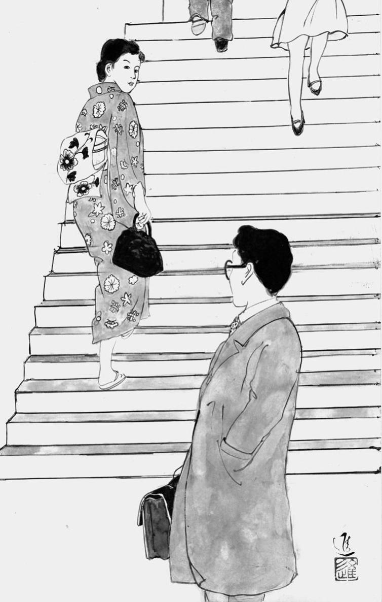
山椒魚よろしく毎日同じ診察室の椅子に座っていると、無性に外気に触れたくなる。それで往診に出たついでに近くの土手を散歩したり、山に分け入ってみたりする。けれども、ふと気が付いてみると、いつの間にかまた同じ椅子に座って診察している。二十年もの歳月がこんなふうにして過ぎて行ったのだ。そんな私にとって、伊地知栄治という人物がどれほど深い驚異であり、どんなに大きな魅力を持っていたか、うまく言い表すことは難しい。
録音テープのスイッチを入れると、あのしわがれた重い声が響いてくる。すると、彼と過ごした炬燵の日々がよみがえってくる。私はいつの間にか彼の後をついて深川を歩いたり、鶯谷の賭場に座っていたりする。ナカボンの静かな声がしんと静まった部屋に響き渡り、札束が畳に滑ると、壼の中のサイコロがからからと乾いた音をあげる。私の日常とまったく異質な世界が、懐かしい古里の記憶のように眼前にほうふつとする。私は、確かに深川の女郎屋に足を踏み入れたこともなければ、駆落ちしたこともない。しかしどうしたわけか、そのようなことを過去において絶対にしたことがないとは到底思えないのだ。
もしかしたら彼の世界は私の世界であり、同時に父や祖父や、平凡な大勢の人々の共有の宇宙なのかもしれない。彼の生きた時間の異質性は単に見せかけのものであり、その深部には、私たちと同じ空気が流れているのかも知れない。
しかしながら、私は彼の記憶を懐かしむその一方で、長い間密かに悩み続けてきたことも確かなことである。
彼が他界してからというもの、私はできるだけ早くその話を一つの物語にまとめたいと思っていた。しかしいざ始めてみると、それは当初考えていたよりもはるかに困難な仕事であることが分かった。彼が私に残したものはあまりにも膨大過ぎた。テープを聞く度に当惑し混乱した。往診を終えて自分の部屋に戻ると、テープを取り出してひと区切り聞き、メモを取る。メモはだんだん大きくなり、テーブルからはみ出すほどになる。けれどもそれは、重複錯綜して他人には判読できない代物なのだ。こうして毎日彼の声と苦闘を続けていたのだが、それは一頁の文章にもならず、いつの間にか長い年月が過ぎていたのである。
それは地面に埋まった巨大な大木のようで、どこから手をつけたらいいか見当もつかない。ところがそれは私に向かって、さあ、早く俺を掘り出せ、と毎日責め圧迫したのである。
ところがある日、どうしたわけか突然書けるようになった。それは、なあんだ、というように簡単なことだった。私はほとんど何も考えずに、テープも聞かずにどんどんと書き、三月で全部書き上げた。どうしてこうなったのかよく理解できない。諦めて何年か放置しておいたのがよかったのかもしれない。あまりにも強烈な印象が長い時間の経過と共に次第に薄れ、それにつれて私の心のなかにごくあたりまえの伊地知栄治のイメージが浮かんできた。それを素直に描いたのが良かったのだろう。どうしてはじめからこのように出来なかったのか、不思議なことである。
まえがきにも書いたことだが、文章に書き綴って行くうちに、あれも聞き落とした、これも聞いておけば良かったというところが山ほど出てきたのだが、この場に至ってはどうしようもないことで、それらは資料を探したり、同じ時代を生きた人びとを訪ね参考にさせていただいた。
特に、小川譲、荒川孫一、田川喜三郎、塚田増次郎、津村久吉、秋葉清一郎、宮崎いく、の諸氏には、小名木川周辺の深川の様子や、浅草界隈、北朝鮮、満州などの状況を正確に把握し、伊地知さんの記憶を確かめ、補うための話を随分と聞かせていただいた。また、脚本家須藤出穂先生にも貴重なアドバイスをいただいた。この場を借りて心からお礼申し上げる次第である。
昭和六十三年十二月
佐賀純一
いつものようにお昼を食べて診察室に行き、患者さんを診る前にメールを開いてみると、見知らぬ人物から英文で次のようなメールが入っていた。
日付は二〇〇三年五月二十八日。差出人はイーグ・ジョナサン。
「親愛なるドクター・サガ。私はウォールストリートジャーナルの紙面に貴殿の著書『浅草博徒一代』の英文版とボブ・ディランの最新アルバム『Love and Theft（愛と泥棒）』の六曲の歌詞との間に類似性が見られることにつき、記事を書くつもりです。ここにその類似性を示すウェブサイトヘのリンクを添付します」
ジョナサン氏と電話で話をしたのは翌日の朝八時、シカゴ時間では夕刻の六時頃だったろう。
「お送りした資料をご覧になってどう思いましたか」と聞くので「大変驚きましたけれど、正直、すごくうれしかったですね」と答えた。
ウォールストリートジャーナルの第一面に記事が掲載されると、欧米の放送局から取材が殺到した。ＡＰ、ＡＦＰ、その他名前も聞いたことのない局からの電話取材が相次いだ。
スウェーデン国営テレビ局はわざわざ取材にやってきた。
ＢＢＣからはラジオに続いてＢＢＣテレビ局も取材の電話をしてきた。
質問の内容はやはり「あなたはボブ・ディランの歌を聴いてどう思うか、なぜ訴訟をしないのか」というものだった。
そこで同じ答えをしているのも能がないと思って、ＢＢＣテレビのインタビュアーにこう答えた。
「ここにカボチャがある。誰もが忘れてしまったカボチャだ。ところが、ある日、女神がやって来て、魔法の杖で触ったら、黄金の馬車になってしまった。黄金の馬車はシンデレラを乗せてみんなの驚きをよそに宮殿へと急ぐんだ。そんな時、カボチャはこう言って抗議するだろうか。
『女神さん、君はカボチャである僕を勝手に魔法の杖で触って、金の馬車に変えてしまった。こんなことは我慢できない。僕は断固として、君の不正な行為を神々に訴えるつもりだ』
私にとってこのカボチャは特別なものだった。しかし日本ではすっかり忘れられて見向きもされなくなっていた。それがボブ・ディランの魔法の杖で変身して、みんながびっくりするような曲に生まれ変わったら、それは奇跡だ。ほんとにたまげている」
七月十二日付ニューヨークタイムズには「Plagiarism in Dylan, or a Cultural Collage」というタイトルで、JON PARELES氏が長文の論文を掲載したが、そこには、
「人間がこの世に生きている限り、誰も居ない孤島で暮らすということはないのだから、全くの独創ということはあり得ない。歴史や文化から影響を受け、過去と会話しながら生きている。讃嘆・偶像破壊・議論・拡張・模倣・嘲笑、そのようなものから芸術も芸術家も生まれてくる。ディランもそうして作品を生み出しているのだ」という趣旨が記してあった。
騒動が一段落してしばらくした頃、新潮文庫から復刊の話が舞い込んだ。作家の持田鋼一郎氏が欧米で話題になっているのに日本語版が絶版になっているのを憂えて仲介の労をとってくれたのだ。
その話は現実となって、出版されることになった。
伊地知栄治氏と出会ってから二十年以上の歳月が流れた。彼と過ごした炬燵の日々の記憶が消えかけようとした時、ボブ・ディランという偉大な歌手が新しい命を吹き入れてくれたことを、私は心から感謝している。なぜこのような不思議が起きたのか、分からない。恐らく「伊地知栄治のはなし」には、民族や文化の違いを越えて共感を呼ぶ魂が宿っているのだろう。だから私にはこの新装版が、ボブ・ディランからの密かな贈り物のように思えてならないのだ。
最後に、この書物の本文中に差別表現とうけとられかねない箇所がいくつかみられますが、伊地知栄治の語り口を活かすために敢えてそのままにしるすことにしました。そのほうが彼の生きた時代を生き生きと伝えられると思ったからであって、もとより差別を助長する意図は全くありません。
平成十六年五月吉日
佐賀純一
菅野ヘッケル
本書は一九〇六年に宇都宮に生まれ、明治末期、大正、昭和にわたって生きたある一人のやくざが語ったはなしをまとめたもの。伊地知栄治が語ったエピソードをテープに記録し、のちに巧みな構成の元に詳細にいたるまで忠実に書き起こした筆者佐賀純一の努力に敬服するしかない。じつにおもしろい。
伊地知栄治は十五歳で悪縁に染まり、中学四年の頃、叔父が営む東京深川の石炭屋に預けられる。上京した栄治は、やがてバクチの世界で生きるようになった。木場、浅草といったいわゆる東京の下町を中心とする界隈で暮らした伊地知栄治の人生は、まっとうな世間に生きるわれわれの想像をはるかに超えている。十九歳で初めて巣鴨の刑務所に、さらに殺人の罪で前橋、網走などでも獄中生活を送った伊地知だが、なぜか憎めない人物に感じてしまう。ある部分、共感できることさえある。それぞれの世界で自信たっぷりに生きる男と女たちがいた大正、戦前の昭和という時代にあこがれを抱く人もいるだろう。なお、伊地知栄治は一九七九年他界した。
二〇〇三年七月七日付のウォールストリートジャーナル紙に「ボブ・ディランはドクター佐賀の文章を借用したのか？」という見出しの記事が掲載され、本書のことを初めて知った。四十数年来自他共に認める熱心なディラン信奉者であるぼくは、突然降ってわいた盗作問題にかなりのショックを感じた。ディランはいうまでもなくアメリカが生んだ二十世紀最高のアーティストの一人であり、全世界に幅広い年齢層にわたる多くのファンがいる。プロテストフォーク、フォークロック、カントリーロック、ゴスペルロックなど、つねに新しい音楽の世界を切り開いてきたディランは、デビューして四十年以上たった現在も第一線で活動を続けている。当然、グラミー賞やアカデミー賞に代表される数々の賞を世界各国で受賞している。さらに、特筆すべきは一九九七年以降毎年ノーベル文学賞候補者に推薦されていることだろう。近いうちにかならず受賞するだろうとぼくは思っている。こうした創造性と独自性が魅力のボブ・ディランに盗作問題が生じたというわけだ。
新聞記事の内容を簡単に紹介すると、九州在住の熱心なディラン・ファンであるアメリカ人英語教師クリス・ジョンソンが、佐賀純一著『浅草博徒一代』の英語版『Confessions of a Yakuza』を読んだところ、ディランのニューアルバム『ラヴ・アンド・セフト』の歌詞とおなじことばが数多く出てくることに気づいた。ディランのアルバムは二〇〇一年九月十一日（アメリカで同時多発テロが起こった日）発売であるのに対し、佐賀純一の本の英語版は一九九五年に出版されている。つまり、ディランはこの本からことばを借用して歌詞を書いたと思われる。この問題に対して、佐賀純一はディランが本を読んで彼の書いた文章を歌に使ったことを名誉に思っているので、裁判に訴える気はないとコメントした、といった内容だった。
このニュースは日本でもスポーツ新聞などが大きく取り上げ、全世界のディラン・ファンのあいだで、はたしてディランの行為は盗作にあたるのか否かの議論がわき起こった。結局、佐賀純一が問題にしなかったことが強く影響したのだろう、主要メディアや何人かのディラン研究者の意見を総合すると、たしかにディランは佐賀純一の著作からことばを借用したと思われるが、それは古くからおこなわれてきた創作活動の手段のひとつであり、盗作には当てはまらない、という論評が大半を占め、盗作疑惑に一応の決着がついた。では、いったいディランはどんなふうに佐賀純一のことばを借用して詩を書いたのだろうか。本書の一章の足尾爆破の項で、健吉が自分の生い立ちを栄治に話す場面を例にあげて具体的に紹介しよう。
「俺のおっ母さんって人は、馬鹿な女だった。大百姓の家に生まれながら、俺みてえな父無し子を生んで、俺が十一の時に死んじまった。おっ母さんは、そん時まだ二十九だったんだ。お父つぁんという人は出入りの小間物問屋だという話だが、会ったことは一度もねえや」
My mother was a stupid woman. She was the daughter of a wealthy farmer, but she had an illegitimate kid - that was me - then went and died when I was eleven. She was only twenty-nine herself. I heard that my father was a traveling salesman who called at the house regularly, but I never met him. (『Confessions of a Yakuza』ジョン・ベスター訳）
「わたしの母は裕福な農家の娘だった。わたしの父は旅するセールスマンで、会ったことは一度もない」
"My mother was a daughter of a wealthy farmer/My father was a traveling salesman, I never met him"（「ポー・ボーイ」中川五郎訳『ラヴ・アンド・セフト』収録曲）
並べてみると、たしかに人物設定や使っていることばもそっくりだ。明らかに、ディランは本書を読み、その一部を借用したのかもしれない。ただ、ディランはデビュー当時から、古いトラディショナル曲、ブルース、ウディ・ガスリーの曲などをアレンジしたり、自分で書いた歌詞を当てはめたりして歌っていた。さらに、ガスリーも古い民謡を書き換えて歌ったりしていたのだ。フォークミュージックは、そもそも口承音楽であり、時代や環境に合わせて歌詞を書き換えたり、メロディをアレンジしたりして人から人に伝えられてきたのだ。ディランはそうした伝統に基づいて創作をおこなってきた。たとえばディランの代表曲「風に吹かれて」は、十九世紀のカナダで歌われていた「ノー・モア・オークション・ブロック」をベースにしているし、「北国の少女」はサイモン・アンド・ガーファンクルのヒツト曲として知られるイギリスの民謡「スカーボロー・フェア」をベースにしたものだった。さらに、ディランの歌には聖書のことばも多く引用されている。いいかえれば既存の歌や作品からインスピレーションを感じて、新たな作品をつくることがディランの創作行為の基本ということだ。もし、ディランが佐賀純一のことばを借用してやくざをテーマにする歌を歌っていたなら、盗作と非難されてもしかたないだろう。しかし、ディランはまったく別のテーマの歌の一部に佐賀純一のことばを使っているだけだ。ディランは以前よりアウトローの生き様に興味をもっていた。たとえばビリー・ザ・キッド、ジョン・ウェズリー・ハーディン、ジョーイーといった人物を歌にしているので、『Confessions of a Yakuza』（ある一人のやくぎの告自）というタイトルにひかれて本書を読んだと思われる。
だいたい『ラブ・アンド・セフト』というアルバムは、直訳すると『愛と盗み』となる。しかもこのタイトル自体一九九五年に出版された同名の本から借用したものだ。おそらくディランは自分の好きな古い作品や他人の作品をベースに、それらをさらに広めようという意図でメロディやことばを借用したのだろう。熱心なファンは、ディランが何からインスピレーションを受けたのかを解明するという謎解きを楽しんでいる。その結果、現在では『ラヴ・アンド・セフト』の収録曲のほとんどについて、その元になったと推測できる歌や著作のリストがインターネットで公開されているほどだ。本書もディランの借用問題が発覚したあとセールスチャートを急上昇し、多くの人に読まれる結果となった。佐賀純一も「ボブ・ディラン騒動のおかげ」で話題になったことに感謝しているという。
ボブ・ディランと同じ一九四一年生まれの佐賀純一は、茨城県土浦で内科医として活躍しながら、同時に郷土のことをテーマに、『絵と伝聞 土浦の里』（一九八一年筑波書林、英語版『Memories of Silk and Straw』一九九〇年講談社インターナショナル）、『新装版霞ヶ浦風土記 風と波に生きた人々』（二〇〇二年常陽新聞社、英語版『Memories of Wind and Waves』二〇〇二年講談社インターナショナル）、『失なわれた村の日々』（一九九三年図書出版社）、『戦火の記憶 いま老人たちが重い口を開く』（一九九四年筑摩書房）、『歓喜天の謎 秘められた愛欲の系譜』（一九九三年図書出版社）、『ちじらんかんぷん 庶民の生きた明治・大正・昭和』（一九九二年図書出版社）、『氷雪のバイカル 革命下のシベリアを見た少年』（一九九〇年筑摩書房）など多くの本を出版し、数々の賞を受賞している。これらのなかには父佐賀進の絵が挿入されている作品も多い。
本書『浅草博徒一代 アウトローが見た日本の闇』の英語版は、一九九一年に『The Gambler's Tale』というタイトルで出版され、一九九五年にペーパーバックで出版されたときに『Confessions of a Yakuza』とタイトルが変えられた。このペーパーバック版には佐賀進が描いた十八点のすばらしい挿絵も掲載されている。
（平成十六年六月、音楽評論家）
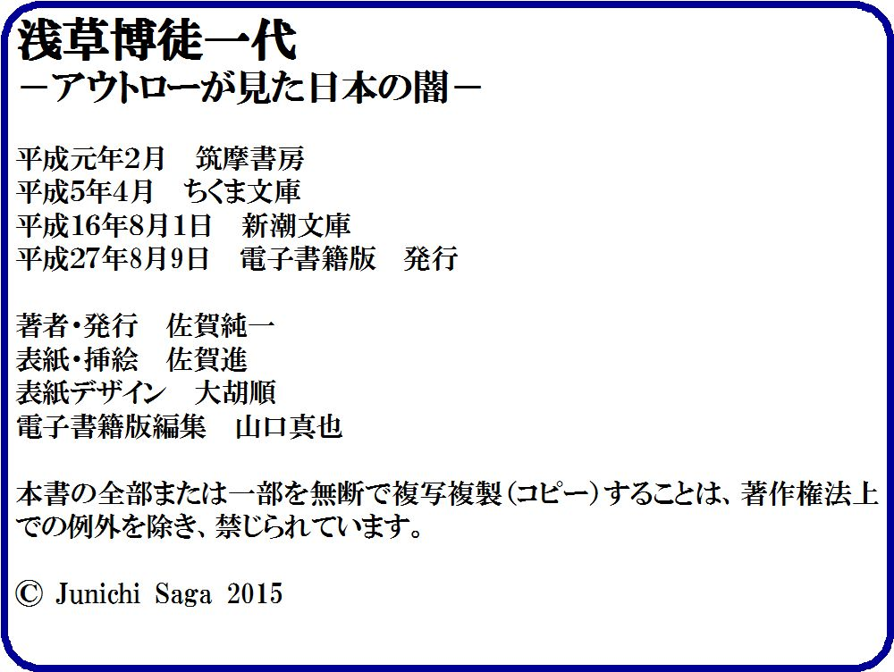